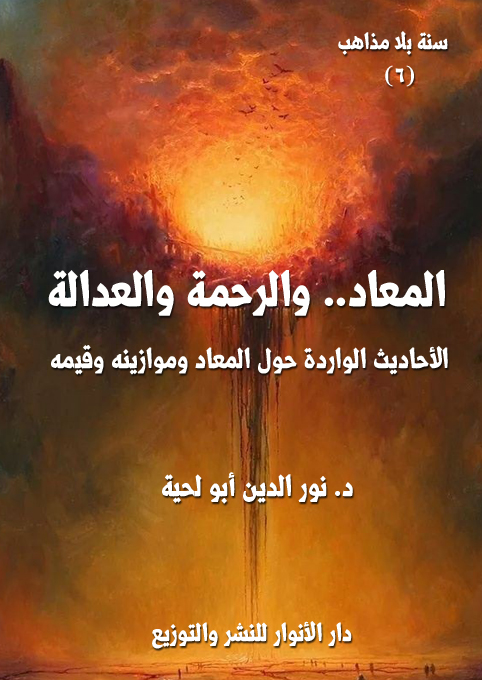

الكتاب: المعاد .. والرحمة والعدالة
الوصف: الأحاديث الواردة حول المعاد وموازينه وقيمه
السلسلة: سنة بلا مذاهب
المؤلف: د. نور الدين أبو لحية
الناشر: دار الأنوار للنشر والتوزيع
الطبعة: الأولى، 1441 هـ
عدد الصفحات: 333
الكتاب موافق للمطبوع
ISBN: 978-620-3-85885-3
لمطالعة الكتاب من تطبيق مؤلفاتي المجاني وهو أحسن وأيسر: هنا

يحاول هذا الكتاب جمع ما ورد من الأحاديث الموافقة للقرآن الكريم حول الإيمان بالمعاد، وهو من الأركان الأساسية الكبرى للدين، والذي لا يرتبط بالحقائق العقدية فقط، وإنما له تأثيره الكبير في السلوك والتربية.
وقد رأينا من خلال ما ورد في القرآن الكريم من الآيات المرتبطة بالمعاد، أنها تحوي ـ بسبب مزجها بين المعارف العقدية والقيم السلوكية ـ قيمتين كبيرتين اعتبرنا كل واحدة منهما ضابطا من الضوابط الكبرى للأحاديث المقبولة:
أولاهما: أن المعاد مرتبط بالدرجة الأولى بالعدالة الإلهية، ولذلك ينتصر الله تعالى فيه للمظلومين على الظالمين، وينال كل عامل جزاء عمله، حسنا كان أو قبيحا، ولهذا وُضعت الموازين والصراط، وفُرق بين جزاء المؤمنين وغيرهم، بل على أساس ذلك كانت الجنة درجات تتفاوت بحسب أعمال الصالحين، والنار دركات تتفاوت بحسب جرائم المنحرفين.
ثانيهما: أن المعاد مرتبط بالرحمة الإلهية، ولذلك كان المعاد ـ ابتداء من الموت ـ هو المحل الذي يسعد فيه المؤمنون، ويلقون من عظيم العناية الإلهية ما يملؤهم محبة له.
وبناء على هذا؛ فقد قبلنا كل الأحاديث التي تصور بعض مظاهر رحمة الله تعالى بعباده الصالحين إما حال الموت، أو عند البرزخ، أو عند النشر والحشر، أو عند الجزاء، لما لتلك الأحاديث من تأثير تربوي كبير؛ فهي ترغب في الأعمال الصالحة، مثلما ترهب العدالة الإلهية من الانحرافات، وما تعلق بها.
المعاد.. والرحمة والعدالة (8)
يحاول هذا الكتاب جمع ما ورد من الأحاديث الموافقة للقرآن الكريم حول الإيمان بالمعاد، وهو من الأركان الأساسية الكبرى للدين، والذي لا يرتبط بالحقائق العقدية فقط، وإنما له تأثيره الكبير في السلوك والتربية.
وقد رأينا من خلال ما ورد في القرآن الكريم من الآيات المرتبطة بالمعاد، أنها تحوي ـ بسبب مزجها بين المعارف العقدية والقيم السلوكية ـ قيمتين كبيرتين اعتبرنا كل واحدة منهما ضابطا من الضوابط الكبرى للأحاديث المقبولة:
أولاهما: أن المعاد مرتبط بالدرجة الأولى بالعدالة الإلهية، ولذلك ينتصر الله تعالى فيه للمظلومين على الظالمين، وينال كل عامل جزاء عمله، حسنا كان أو قبيحا، ولهذا وُضعت الموازين والصراط، وفُرق بين جزاء المؤمنين وغيرهم، بل على أساس ذلك كانت الجنة درجات تتفاوت بحسب أعمال الصالحين، والنار دركات تتفاوت بحسب جرائم المنحرفين.
ولهذه القيمة دور كبير في الترهيب من عذاب الله الذي ينزل بالمنحرفين والمحرفين، ولهذا فقد جعلنا من الضوابط الأساسية للأحاديث التي نرى قبولها عدم تعارضها مع تلك الزواجر التي وردت في القرآن الكريم، والتي تحذر من التقصير والتفريط في العمل الصالح، وتساوي بين الأمم جميعا في ذلك، كما قال تعالى: {لَّيْسَ بِأَمَانِيِّكُمْ وَلا أَمَانِيِّ أَهْلِ الْكِتَابِ مَن يَعْمَلْ سُوءًا يُجْزَ بِهِ وَلاَ يَجِدْ لَهُ مِن دُونِ اللّهِ وَلِيًّا وَلاَ نَصِيرًا} [النساء:123]
وهكذا الآيات القرآنية الكثيرة التي تبين أن العدالة والرحمة الإلهية متناسقتان متكاملتان، لا يعارض أحدهما الآخر، على خلاف ما توهم به تلك الأحاديث المردودة،
المعاد.. والرحمة والعدالة (9)
والتي تصور أن الرحمة تقضي على العدالة، بل تقضي على كل القيم التي جاءت النصوص المقدسة لتقريرها، وتثبيتها، وتربية المؤمن عليها.
ومن الأمثلة على ذلك ما ورد في هذا المشهد القرآني من مشاهد القيامة، والذي عبر عنه قوله تعالى: {كُلُّ نَفْسٍ بِمَا كَسَبَتْ رَهِينَةٌ (38) إِلَّا أَصْحَابَ الْيَمِينِ (39) فِي جَنَّاتٍ يَتَسَاءَلُونَ (40) عَنِ الْمُجْرِمِينَ (41) مَا سَلَكَكُمْ فِي سَقَرَ (42) قَالُوا لَمْ نَكُ مِنَ الْمُصَلِّينَ (43) وَلَمْ نَكُ نُطْعِمُ الْمِسْكِينَ (44) وَكُنَّا نَخُوضُ مَعَ الْخَائِضِينَ (45) وَكُنَّا نُكَذِّبُ بِيَوْمِ الدِّينِ (46) حَتَّى أَتَانَا الْيَقِينُ (47) فَمَا تَنْفَعُهُمْ شَفَاعَةُ الشَّافِعِينَ (48)} [المدثر: 38 - 48]
فالآيات الكريمة أخبرت أن الذين لا يصلون.. أي ليس لهم تواصل روحي بالله.. والذين لا يطعمون المسكين.. أي ليس لهم أي تواصل ورحمة بالمجتمع.. هؤلاء وغيرهم لا تنفعهم شفاعة الشافعين حتى لو تقدموا للشفاعة لهم.
وهكذا نرى القرآن الكريم يحذرنا من ذلك اليوم الخطير الذي لا تنفع فيه أمثال تلك الشفاعات التي تذكرها تلك الروايات، كما قال تعالى: {وَاتَّقُوا يَوْماً لاَّ تَجْزِي نَفْسٌ عَن نَّفْسٍ شَيْئاً وَلاَ يُقْبَلُ مِنْهَا شَفَاعَةٌ وَلاَ يُؤْخَذُ مِنْهَا عَدْلٌ} (البقرة: 48)، وقال: {مَا لِلظَّالِمِينَ مِنْ حَمِيمٍ وَلَا شَفِيعٍ يُطَاعُ} (غافر: 18)
وهكذا نجد القرآن الكريم يصرح بغضب الله ولعنته وعقابه الشديد على ذنوب كثيرة نراها هينة سهلة عند أولئك الذين ضربوا القرآن بالحديث.. وضربوا الدين وقيمه بما شرعوه لأنفسهم من شرائع الهوى.
فالله تعالى أخبر عن الهمز واللمز وعقوبته، فقال: {وَيْلٌ لِكُلِّ هُمَزَةٍ لُمَزَةٍ (1) الَّذِي جَمَعَ مَالًا وَعَدَّدَهُ (2) يَحْسَبُ أَنَّ مَالَهُ أَخْلَدَهُ (3) كَلَّا لَيُنْبَذَنَّ فِي الْحُطَمَةِ (4) وَمَا أَدْرَاكَ مَا الْحُطَمَةُ (5) نَارُ الله الْمُوقَدَةُ (6) الَّتِي تَطَّلِعُ عَلَى الْأَفْئِدَةِ (7) إِنَّهَا عَلَيْهِمْ مُؤْصَدَةٌ (8) فِي عَمَدٍ
المعاد.. والرحمة والعدالة (10)
مُمَدَّدَةٍ (9)} [الهمزة: 1 - 9]
وأخبر عن عقوبة القتل العمد، وأنها الخلود في جهنم، فقال: {وَمَنْ يَقْتُلْ مُؤْمِنًا مُتَعَمِّدًا فَجَزَاؤُهُ جَهَنَّمُ خَالِدًا فِيهَا وَغَضِبَ الله عَلَيْهِ وَلَعَنَهُ وَأَعَدَّ لَهُ عَذَابًا عَظِيمًا (93)} [النساء: 93]
وهكذا لو تأملنا القرآن جميعا.. بل معه الكثير من السنة، لوجدنا فيهما نصوصا كثيرة تملؤنا بالمهابة ومن خشية الله ومن الخوف من تعدي حدود الله، كما قال تعالى: {تِلْكَ حُدُودُ الله فَلَا تَقْرَبُوهَا كَذَلِكَ يُبَيِّنُ الله آيَاتِهِ لِلنَّاسِ لَعَلَّهُمْ يَتَّقُونَ} [البقرة: 187]
وقد أورد المفسرون في تفسير قوله تعالى: {قُلْ مَا كُنْتُ بِدْعًا مِنَ الرُّسُلِ وَمَا أَدْرِي مَا يُفْعَلُ بِي وَلَا بِكُمْ إِنْ أَتَّبِعُ إِلَّا مَا يُوحَى إِلَيَّ وَمَا أَنَا إِلَّا نَذِيرٌ مُبِينٌ} [الأحقاف: 9] عن أم العلاء قالت: طار لنا عثمان بن مظعون في السكنى حين اقترعت الانصار على سكنى المهاجرين. فاشتكى فمرضناه حتى توفي، ثم جعلناه في أثوابه، فدخل علينا رسول الله صلى الله عليه وآله وسلم، فقلت: رحمة الله عليك أبا السائب، فشهادتي عليك لقد أكرمك الله، قال: وما يدريك؟ قلت: لا أدري والله، قال: أما هو فقد جاءه اليقين، إني لأرجو له الخير من الله، والله ما أدري وأنا رسول الله مايفعل بي ولا بكم. قالت أم العلاء: فوالله لا أزكي احدا بعده (1).
وقد ورد في الحديث تصوير لبعض مشاهد العدل في أداء الحقوق لمستحقيها يوم القيامة، وذلك حين سأل رسول الله صلى الله عليه وآله وسلم الصحابة، فقال: (أتدرون من المفلس؟)، فقالوا: (المفلس فينا من لا درهم له ولا متاع)، فقال صلى الله عليه وآله وسلم: (إن المفلس من أمتي من يأتي يوم القيامة بصلاة وصيام وزكاة ويأتي قد شتم هذا وقذف هذا وأكل مال هذا وسفك دم هذا وضرب هذا فيعطى هذا من حسناته
__________
(1) رواه أحمد 6/ 436 وفي 6/ 436 والبخاري: 2/ 91 وفي 3/ 238 و9/ 44.
المعاد.. والرحمة والعدالة (11)
وهذا من حسناته فإن فنيت حسناته قبل أن يقضي ما عليه أخذ من خطاياهم فطرحت عليه ثم طرح في النار) (1)
فعدالة الله المطلقة تقتضي أن لا يضيع أي حق من الحقوق مهما كان، ولذلك قال رسول الله صلى الله عليه وآله وسلم: (من كانت عنده مظلمة لأخيه فليتحلله منها، فإنه ليس ثمَّ دينار ولا درهم من قبل أن يؤخذ لأخيه من حسناته، فإن لم يكن له حسنات أخذ من سيئات أخيه فطرحت عليه) (2)
بل إن النصوص أخبرت بعدالة الله الشاملة للحيوانات حتى يقتص للشاة الجماء من الشاة القرناء (3)، وفي الحديث القدسي عن الجنة، يقول اللّه تعالى: (وعزتي وجلالي لا يجاوزني اليوم ظلم ظالم) (4)، وهو ما ينص عليه قوله تعالى: {وَقَدْ خَابَ مَنْ حَمَلَ ظُلْماً} (طه: 111)
هذه هي الأحاديث التي تتوافق مع القرآن، ومع العقول، ومع الفطرة ومع قيم العدالة الإلهية التي تزن مثاقيل الذر.. وهي التي لا يصح أن يروى غيرها معها، لأن مثل ذلك مثل تلك المرأة التي ذكرها القرآن الكريم، فقال: {وَلاَ تَكُونُوا كَالَّتِي نَقَضَتْ غَزْلَهَا مِن بَعْدِ قُوَّةٍ أَنكَاثًا تَتَّخِذُونَ أَيْمَانَكُمْ دَخَلاً بَيْنَكُمْ أَن تَكُونَ أُمَّةٌ هِيَ أَرْبَى مِنْ أُمَّةٍ إِنَّمَا يَبْلُوكُمُ اللّهُ بِهِ وَلَيُبَيِّنَنَّ لَكُمْ يَوْمَ الْقِيَامَةِ مَا كُنتُمْ فِيهِ تَخْتَلِفُون} [النحل:92]
__________
(1) رواه مسلم رقم (2581)، والترمذي رقم (2420)
(2) رواه البخاري (6534)
(3) نص الحديث: (لتؤدن الحقوق إلى أهلها يوم القيامة حتى يقاد للشاة الجماء من الشاة القرناء تنطحها) ابن جرير في تفسيره (30/ 17 - 18)
(4) رواه الطبراني في المعجم الكبير 2/ 95.
المعاد.. والرحمة والعدالة (12)
ثانيهما: أن المعاد مرتبط بالرحمة الإلهية، ولذلك كان المعاد ـ ابتداء من الموت ـ هو المحل الذي يسعد فيه المؤمنون، ويلقون من عظيم العناية الإلهية ما يملؤهم محبة له.
وبناء على هذا؛ فقد قبلنا كل الأحاديث التي تصور بعض مظاهر رحمة الله تعالى بعباده الصالحين إما حال الموت، أو عند البرزخ، أو عند النشر والحشر، أو عند الجزاء، لما لتلك الأحاديث من تأثير تربوي كبير؛ فهي ترغب في الأعمال الصالحة، مثلما ترهب العدالة الإلهية من الانحرافات، وما تعلق بها.
وقد قسمنا الكتاب بحسب مراحل المعاد إلى ثلاثة أقسام:
الأولى: مرحلة الموت والبرزخ.
الثانية: مرحلة المعاد والمحكمة الإلهية.
الثالثة: مرحلة الجزاء الإلهي.
وقد خصصنا كل مرحلة من المراحل بفصل خاص بها، يجمع الأحاديث الواردة فيها من المصادر السنية والشيعية، سواء ما روي عن رسول الله صلى الله عليه وآله وسلم أو ما روي عن أئمة الهدى، والذي نرى أنه من رواياتهم عن رسول الله صلى الله عليه وآله وسلم، كما أشرنا إلى ذلك في الأجزاء السابقة.
وقد ختمنا الكتاب بفصل خاص بنماذج عن الأحاديث المردودة التي نرى تعارضها مع القرآن الكريم، مع بيان سبب ردها.
المعاد.. والرحمة والعدالة (13)
نحاول في هذا الفصل جمع ما نراه مقبولا من الأحاديث المتعلقة بالمرحلة الأولى من مراحل المعاد، وهي الموت والبرزخ، وكلاهما مما ورد ذكرهما في القرآن الكريم، وذكر ما يرتبط بهما من أحوال مختلفة، ولذلك فإن كل الأحاديث المتوافقة مع ما ذكره القرآن الكريم عنهما لا يمكن رفضها، حتى لو ضعف سندها عند المحدثين، بناء على أنه لا يرتبط بها أي أمور عملية، وإنما هي أحاديث للتذكرة والموعظة.
وقد قسمنا هذا الفصل ـ بحسب عنوانه ـ إلى قسمين:
أولهما: يتعلق بالموت، وأحواله، وكيفية التعامل مع الموتى، ونحوها مما ورد في الأحاديث.
ثانيهما: يتعلق بالبرزخ، وأحواله، وعلاقة الموتى بالأحياء، وما ينفعهم من الأعمال، وغير ذلك مما وردت به النصوص المقدسة.
أولا ـ ما ورد حول الموت وأحوال الموتى
وقد ذكر القرآن الكريم الكثير من الحقائق الغيبية المرتبطة به، والتي أيدتها الأحاديث الكثيرة، ومن تلك المعارف:
1. أن الموت، وإن كانت صورته الظاهرة واحدة لدى البشر جميعا إلا أنها تختلف من حيث حقيقتها بحسب الأعمال والمراتب، ذلك أنه عند الموت يشعر الإنسان بالمصير الذي سيصير إليه، ولذلك يطلب الرجوع إن كان مقصرا أو مفرطا أو منحرفا، كما قال تعالى:
المعاد.. والرحمة والعدالة (14)
{حَتَّى إِذَا جَاءَ أَحَدَهُمُ الْمَوْتُ قَالَ رَبِّ ارْجِعُونِ (99) لَعَلِّي أَعْمَلُ صَالِحًا فِيمَا تَرَكْتُ كَلَّا إِنَّهَا كَلِمَةٌ هُوَ قَائِلُهَا وَمِنْ وَرَائِهِمْ بَرْزَخٌ إِلَى يَوْمِ يُبْعَثُونَ} [المؤمنون: 99، 100]
2. أن الإنسان حين موته تنكشف له الحقائق، ويتجلى له ما كان غافلا عنه، ذلك أنه لم يكن يرى سوى عالم الملك، وغافلا عن عالم الملكوت، وبعد الموت يظهر له ما كان خافيا عنه من هذا العالم، كما نص على ذلك قوله تعالى: {وَجَاءَتْ سَكْرَةُ الْمَوْتِ بِالْحَقِّ ذَلِكَ مَا كُنْتَ مِنْهُ تَحِيدُ} [ق: 19]
3. أن المشاهد التي يراها الإنسان في ساعة احتضاره، وقبل موته، تتناسب مع عمله ومرتبته، كما قال تعالى: {فَلَوْلَا إِذَا بَلَغَتِ الْحُلْقُومَ (83) وَأَنْتُمْ حِينَئِذٍ تَنْظُرُونَ (84) وَنَحْنُ أَقْرَبُ إِلَيْهِ مِنْكُمْ وَلَكِنْ لَا تُبْصِرُونَ (85) فَلَوْلَا إِنْ كُنْتُمْ غَيْرَ مَدِينِينَ (86) تَرْجِعُونَهَا إِنْ كُنْتُمْ صَادِقِينَ (87) فَأَمَّا إِنْ كَانَ مِنَ الْمُقَرَّبِينَ (88) فَرَوْحٌ وَرَيْحَانٌ وَجَنَّتُ نَعِيمٍ (89) وَأَمَّا إِنْ كَانَ مِنْ أَصْحَابِ الْيَمِينِ (90) فَسَلَامٌ لَكَ مِنْ أَصْحَابِ الْيَمِينِ (91) وَأَمَّا إِنْ كَانَ مِنَ الْمُكَذِّبِينَ الضَّالِّينَ (92) فَنُزُلٌ مِنْ حَمِيمٍ (93) وَتَصْلِيَةُ جَحِيمٍ (94) إِنَّ هَذَا لَهُوَ حَقُّ الْيَقِينِ (95) فَسَبِّحْ بِاسْمِ رَبِّكَ الْعَظِيمِ (96)} [الواقعة: 83 ـ 96]
4. أن صورة الموت تختلف باختلاف الأعمال والمراتب، وقد ذكر الله تعالى كيفية وفاة الطيبين، فقال: {الَّذِينَ تَتَوَفَّاهُمُ الْمَلَائِكَةُ طَيِّبِينَ يَقُولُونَ سَلَامٌ عَلَيْكُمُ ادْخُلُوا الْجَنَّةَ بِمَا كُنْتُمْ تَعْمَلُونَ} [النحل: 32]
ومثل ذلك ما أشار إليه القرآن الكريم من أنواع التكريم والتبجيل التي يلقاها المؤمن في المواقف المختلفة من طرف الملائكة، كما قال تعالى: {إِنَّ الَّذِينَ قَالُوا رَبُّنَا اللَّهُ ثُمَّ اسْتَقَامُوا تَتَنَزَّلُ عَلَيْهِمُ الْمَلَائِكَةُ أَلَّا تَخَافُوا وَلَا تَحْزَنُوا وَأَبْشِرُوا بِالْجَنَّةِ الَّتِي كُنْتُمْ تُوعَدُونَ (30) نَحْنُ أَوْلِيَاؤُكُمْ فِي الْحَيَاةِ الدُّنْيَا وَفِي الْآخِرَةِ وَلَكُمْ فِيهَا مَا تَشْتَهِي أَنْفُسُكُمْ وَلَكُمْ فِيهَا مَا تَدَّعُونَ
المعاد.. والرحمة والعدالة (15)
(31) نُزُلًا مِنْ غَفُورٍ رَحِيمٍ} [فصلت: 30 - 32]
وبخلافهم المنحرفون الذين ذكر الله تعالى صورة موتهم، والمعاناة التي يعانونها عنده، فقال: {وَلَوْ تَرَى إِذْ يَتَوَفَّى الَّذِينَ كَفَرُوا الْمَلَائِكَةُ يَضْرِبُونَ وُجُوهَهُمْ وَأَدْبَارَهُمْ وَذُوقُوا عَذَابَ الْحَرِيقِ (50) ذَلِكَ بِمَا قَدَّمَتْ أَيْدِيكُمْ وَأَنَّ اللَّهَ لَيْسَ بِظَلَّامٍ لِلْعَبِيدِ} [الأنفال: 50، 51]
وقال في مشهد آخر: {ذَلِكَ بِأَنَّهُمْ قَالُوا لِلَّذِينَ كَرِهُوا مَا نَزَّلَ اللَّهُ سَنُطِيعُكُمْ فِي بَعْضِ الْأَمْرِ وَاللَّهُ يَعْلَمُ إِسْرَارَهُمْ (26) فَكَيْفَ إِذَا تَوَفَّتْهُمُ الْمَلَائِكَةُ يَضْرِبُونَ وُجُوهَهُمْ وَأَدْبَارَهُمْ (27) ذَلِكَ بِأَنَّهُمُ اتَّبَعُوا مَا أَسْخَطَ اللَّهَ وَكَرِهُوا رِضْوَانَهُ فَأَحْبَطَ أَعْمَالَهُمْ} [محمد: 26 - 28]
وقال في مشهد آخر: {وَلَوْ تَرَى إِذِ الظَّالِمُونَ فِي غَمَرَاتِ الْمَوْتِ وَالْمَلَائِكَةُ بَاسِطُو أَيْدِيهِمْ أَخْرِجُوا أَنْفُسَكُمُ الْيَوْمَ تُجْزَوْنَ عَذَابَ الْهُونِ بِمَا كُنْتُمْ تَقُولُونَ عَلَى اللَّهِ غَيْرَ الْحَقِّ وَكُنْتُمْ عَنْ آيَاتِهِ تَسْتَكْبِرُونَ} [الأنعام: 93]
وجمع بين المشهدين في قوله تعالى: {وَالنَّازِعَاتِ غَرْقًا (1) وَالنَّاشِطَاتِ نَشْطًا (2) وَالسَّابِحَاتِ سَبْحًا (3) فَالسَّابِقَاتِ سَبْقًا (4)} [النازعات: 1 - 4]
فمن الأقوال الواردة في تفسير الآيات الكريمة ما روي عن الإمام علي أنه قال: ([وَالنَّازِعَاتِ غَرْقاً] هي الملائكة تنزع أرواح الكفّار، و[النَّاشِطَاتِ نَشْطاً] هي الملائكة تنشط أرواح الكفّار، ما بين الأظفار والجلد حتّى تخرجها، و[السَّابِحَاتِ سَبْحاً] الملائكة تسبح بأرواح المؤمنين السماء والأرض، [فَالسَّابِقَاتِ سَبْقاً] هي الملائكة تسبق بعضها بعضاً
المعاد.. والرحمة والعدالة (16)
بأرواح المؤمنين إلى الله تعالى) (1)
بناء على هذا سنذكر في هذا المبحث ما ورد في الأحاديث حول الموت وأحوال الموتى، وأضفنا إليها ما ورد حول كيفية التعامل مع الموتى، بغض النظر عن الأحوال التي يكونون عليها.
1. ما ورد من المواعظ المرتبطة بالموت
وقد قسمناها بحسب مصادرها إلى قسمين:
أ ـ المواعظ النبوية المرتبطة بالموت
من الأحاديث التي نرى قبولها بسبب عدم معارضتها للقرآن الكريم:
[الحديث: 1] قال رسول الله صلى الله عليه وآله وسلم: (الموت، الموت، جاء الموت بما فيه، جاء بالروح والراحة والكرّة المباركة إلى جنة عالية، لأهل دار الخلود الذين كان لها سعيهم، وفيها رغبتهم، وجاء الموت بما فيه، جاء بالشقوة والندامة والكرّة الخاسرة إلى نار حامية، لأهل دار الغرور الذين كان لها سعيهم وفيها رغبتهم) (2)
[الحديث: 2] سئل رسول الله صلى الله عليه وآله وسلم: أي المؤمنين أكيس؟ قال: (أكثرهم ذكرا للموت، وأشدهم له استعدادا) (3)
[الحديث: 3] جاء جبريل عليه السلام إلى النبي صلى الله عليه وآله وسلم فقال: (يامحمد عش ماشئت فانك ميت، واحبب من شئت فانك مفارقه، واعمل ماشئت فانك ملاقيه) (4)
__________
(1) كنز العمال 2: 545 ح 4686.
(2) بحار الأنوار: 6/ 126، وكتاب الحسين بن سعيد.
(3) بحار الأنوار (71/ 267)
(4) بحار الأنوار (71/ 267)
المعاد.. والرحمة والعدالة (17)
[الحديث: 4] قال رسول الله صلى الله عليه وآله وسلم: (شيئان يكرههما ابن آدم: يكره الموت والموت راحة للمؤمن من الفتنة، ويكره قلّة المال وقلّة المال أقلّ للحساب) (1)
[الحديث: 5] دخل رسول الله صلى الله عليه وآله وسلم على رجل يعوده وهو شاكٍ، فتمنى الموت، فقال رسول الله صلى الله عليه وآله وسلم: (لا تتمنّ الموت.. فإنك إن تكُ محسناً تزدد إحسانا إلى إحسانك، وإن كنت مسيئاً فتؤخّر لتستعتب، فلا تمنّوا الموت) (2)
[الحديث: 6] قال الإمام علي: (كان ضحك النبي صلى الله عليه وآله وسلم التبسم، فاجتاز ذات يوم بفئة من الأنصار وإذا هم يتحدثون ويضحكون بملأ أفواههم، فقال: ياهؤلاء من غرّه منكم أمله وقصّر به الخير عمله، فليطلع في القبور وليعتبر بالنشور، وإذكروا الموت فإنه هادم اللذات) (3)
[الحديث: 7] سئل رسول الله صلى الله عليه وآله وسلم عن قول الله عزّوجلّ: {وَكَانَ تَحْتَهُ كَنْزٌ لَهُمَا} [كهف: 82]، وما ذلك الكنز الذي أقام الخضر الجدار عليه؟.. فقال صلى الله عليه وآله وسلم: (علم مدفون في لوح من ذهب، مكتوب فيه: وعجباً لمن أيقن بالحساب غداً ثم هو لا يعمل) (4)
[الحديث: 8] قال رسول الله صلى الله عليه وآله وسلم: (اعمل عمل من يظن أنه يموت غداً) (5)
[الحديث: 9] قال رسول الله صلى الله عليه وآله وسلم: (إن ملك الموت إذا نزل لقبض روح الفاجر نزل ومعه سفود من نار)، فسئل: يارسول الله فهل يصيب ذلك أحداً من اُمتك؟ قال: (نعم
__________
(1) بحار الأنوار: 6/ 128، والخصال 1/ 37.
(2) بحار الأنوار: 6/ 128، وأمالي الطوسي ص 245.
(3) أمالي الطوسي، ص 522.
(4) الجعفريات: 237.
(5) الجعفريات: 163.
المعاد.. والرحمة والعدالة (18)
حاكماً جائراً، وآكل مال اليتيم، وشاهد الزور، وإن شاهد الزور يدلع لسانه في النار كما يدلع لسانه في الاناء) (1)
[الحديث: 10] جاء رجل إلى رسول الله صلى الله عليه وآله وسلم فقال: ما لي يارسول الله لا أحب الموت؟ فقال له: ألك مال؟ قال: نعم، قال: فقدّمته، قال: لا، قال: فمن ثم لا تحبّ الموت لأن قلب الرجل عند متاعه) (2)
[الحديث: 11] قال رسول الله صلى الله عليه وآله وسلم: (أكثروا من ذكر هادم اللذات)، فقيل: يارسول الله وما هادم اللذات؟ قال صلى الله عليه وآله وسلم: (الموت فان أكيس المؤمنين أكثرهم ذكراً للموت، وأحسنهم للموت استعداداً) (3)
[الحديث: 12] قال رسول الله صلى الله عليه وآله وسلم: إذا دعيتم إلى الجنائز فأسرعوا فانه تذكرة الآخرة) (4)
[الحديث: 13] قال رسول الله صلى الله عليه وآله وسلم: (أديموا ذكر هادم اللذات)، قالوا: يارسول الله وما هادم اللذات؟ قال: (الموت فانه من أكثر ذكر الموت سلى عن الشهوات، ومن سلى عن الشهوات هانت عليه المصيبات، ومن هانت عليه المصيبات سارع في الخيرات) (5)
[الحديث: 14] قال رسول الله صلى الله عليه وآله وسلم: (استحيوا من الله حقّ الحياء)، قالوا: وما نفعل يا رسول الله؟.. قال: (فإن كنتم فاعلين، فلا يبيتنّ أحدكم إلا وأجلُه بين عينيه، وليحفظ
__________
(1) الجعفريات: 146.
(2) الجعفريات: 211.
(3) الجعفريات: 199.
(4) الجعفريات: 33.
(5) مسند زيد بن علي: 386.
المعاد.. والرحمة والعدالة (19)
الرأس وما وعى، والبطن وما حوى، وليذكر القبر والبلى، ومَن أراد الآخرة فليدع زينة الحياة الدنيا) (1)
[الحديث: 15] أتى رجل النبي صلى الله عليه وآله وسلم فقال: ما لي لا أحبّ الموت؟.. فقال له: (ألك مالٌ؟).. قال: (نعم، قال: (فقدّمته؟).. قال: (لا، قال: (فمن ثَمّ لا تحب الموت) (2)
ب ـ مواعظ أئمة الهدى المرتبطة بالموت
من الأحاديث الواردة عن أئمة الهدى المرتبطة بهذا المعنى:
[الحديث: 16] قال الإمام علي: (من أكثر من ذكر الموت رضي من الدنيا باليسير) (3)
[الحديث: 17] قال الإمام علي في قوله تعالى: {وَلَا تَنْسَ نَصِيبَكَ مِنَ الدُّنْيَا} [القصص: 77]: أي لاتنس صحتك وقوتك، وفراغك وشبابك، ونشاطك وغناك أن تطلب به الاخرة) (4)
[الحديث: 18] سئل الإمام علي: (بماذا أحببت لقاء الله؟).. قال: (لما رأيته قد اختار لي دين ملائكته ورسله وأنبيائه، علمت أنّ الذي أكرمني بهذا ليس ينساني فأحببت لقاءه) (5)
[الحديث: 19] تبع الإمام علي جنازةً، فسمع رجلاً يضحك، فقال: (كأنّ الموت فيها على غيرنا كُتب، وكأنّ الحقّ فيها على غيرنا وجب، وكأنّ الذي نرى من الأموات سفر عمّا
__________
(1) بحار الأنوار: 6/ 131، وقرب الإسناد ص 13.
(2) بحار الأنوار: 6/ 127، والخصال 1/ 10.
(3) نهج البلاغة ج 2 ص 227.
(4) بحار الأنوار (71/ 267)
(5) بحار الأنوار: 6/ 127، والخصال 1/ 14.
المعاد.. والرحمة والعدالة (20)
قليل إلينا راجعون، نبؤّوهم أجداثهم ونأكل تراثهم، قد نسينا كلّ واعظ وواعظة، ورمينا بكل جائحة، وعجبت لمن نسي الموت وهو يرى الموت.. ومَن أكثر ذكر الموت رضي من الدنيا باليسير) (1)
[الحديث: 20] من خطبة للإمام علي ذكر فيها ملك الموت: (هل تحسّ به إذا دخل منزلا؟.. أم هل تراه إذا توفّى أحدا؟.. بل كيف يتوفّى الجنين في بطن أمه؟.. أيلج عليه من بعض جوارحها؟.. أم الروح أجابته بإذن ربها؟.. أم هو ساكنٌ معه في أحشائها؟.. كيف يصف إلهه مَن يعجز عن صفة مخلوق مثله؟) (2)
[الحديث: 21] نادى الإمام علي أهل القبور من المؤمنين والمؤمنات فقال: السلام عليكم ورحمة الله وبركاته.. نخبركم بأخبارنا أم تخبرونا بأخباركم؟.. أزواجكم قد تزوجوا وأموالكم قسمها وراثكم، وحُشِر في اليتامى أولادكم، والمنازل التي شيدتم وبنيتم سكنها أعداؤكم، فما أخباركم؟). فأجابه مجيب: (قد تمزقت الأكفان وانتشرت الشعور وتقطعت الجلود وسالت الأحداق على الخدود، وتنازلت المناخر والأفواه بالقيح والصديد، وما قدماه وجدناه وما أنفقناه ربحناه، وما خلفناه خسرناه، ونحن مرتهنون بالأعمال، ونرجو من الله الغفران بالكرم والامتنان) (3)
[الحديث: 22] عن كميل بن زياد قال: خرجت مع علي بن أبي طالب فلما أشرف على الجبان التفت إلى المقبرة فقال: (يا أهل القبور ياأهل البلى ياأهل الوحشة ما الخبر عندكم
__________
(1) بحار الأنوار: 6/ 136، وروضة الواعظين.
(2) بحار الأنوار: 6/ 143، والنهج.
(3) إرشاد القلوب باب أحاديث منتخبة: 196.
المعاد.. والرحمة والعدالة (21)
فإنّ الخبر عندنا، قد قسّمت الأموال وأيتمت الأولاد، واستبدل بالأزواج، فهذا الخبر عندنا فما الخبر عندكم؟) ثم التفت إلي فقال: (ياكميل لو أذن لهم في الجواب لقالوا: إنّ خير الزاد التقوى، ثم بكى وقال لي: ياكميل القبر صندوق العمل، وعند الموت يأتيك الخبر) (1)
[الحديث: 23] قال الإمام علي: (اكثروا ذكر الموت عندما تنازعكم اليه أنفسكم من الشهوات، وكفى بالموت واعظاً، وكان رسول الله صلى الله عليه وآله وسلم كثيراً ما يوصي أصحابه بذكر الموت، فيقول: أكثر وا ذكر الموت، فانه هادم اللذات، حائل بينكم وبين الشهوات) (2)
[الحديث: 24] قال الإمام علي في مناجاته: (اللهم قد وعدني نبيك أن تتوفاني إليك إذا سألتك، اللهم وقد رغبت إليك في ذلك) (3)
[الحديث: 25] قال الإمام علي في وصيته لابنه الحسن: (يابني أكثر من ذكر الموت، وذكر ما تهجُمُ عليه، وتفضي بعد الموت اليه، واجعله أمامك حيث تراه حتى يأتيك وقد أخذت منه حذرك، وشددت له أزرك، ولا يأتيك بغتة فيبهرك)، وقال: (أحيي قلبك بالموعظة، وأمته بالزهادة، وقوه باليقين، ونوره بالحكمة، وذلله بذكر الموت) (4)
[الحديث: 26] قال الإمام علي: (من أكثر ذكر الموت رضي من الدنيا باليسير) (5)
[الحديث: 27] قال الإمام علي: (أكثروا ذكر الموت، ويوم خروجكم من القبور
__________
(1) كنز العمال 3:697 ح 8495.
(2) أمالي الطوسي المجلس الأول: 28 ح 31، بحار الأنوار، 6:132.
(3) مجموعة ورام 2:3، مستدرك الوسائل 2:96 ح 1520، بحار الأنوار، 42:253.
(4) نهج البلاغة كتاب: 31، مستدرك الوسائل 2:102 ح 1538، بحار الأنوار، 77:205، كشف المحجة: 157، تحف العقول: 52.
(5) كنز الكراجكي: 17، مستدرك الوسائل 2:103 ح 1543، نهج البلاغة قصار الحكم: 349، بحار الأنوار، 71:267.
المعاد.. والرحمة والعدالة (22)
وقيامكم بين يدي الله عزّوجلّ تهون عليكم المصائب) (1)
[الحديث: 28] قال الإمام علي: (كم من غافل ينسج ثوباً ليلبسه، وإنما هو كفنه، ويبني بيتاً ليسكنه، وإنما هو موضع قبره) (2)
[الحديث: 29] قال الإمام علي عند وفاته: (قصّر الأمل، واذكر الموت، وازهد في الدنيا، فانك رهن موت، وغرض بلاء، وصريع سقم) (3)
[الحديث: 30] قال الإمام علي: (أكثر ذكر الموت وما بعد الموت، ولا تتمن الموت إلاّ بشرط وثيق) (4)
[الحديث: 31] قال الإمام علي: (ما رأيت إيماناً مع يقين أشبه منه بشك إلاّ هذا الانسان، انه كل يوم يودع، وإلى القبور يشيع، وإلى غرور الدنيا يرجع، وعن الشهوات واللذات لا يقلع، فلو لم يكن لابن آدم المسكين ذنب يتوقعه، ولا حساب يوقف عليه إلاّ موت يبدّد شمله ويفرّق جمعه ويؤتم ولده، لكان ينبغي له أن يحاذر ما هو فيه بأشدّ التعب، ولقد غفلنا عن الموت غفلة أقوام غير نازل بهم، وركنا إلى الدنيا وشهواتها ركون أقوام لا يرجون حساباً ولا يخافون عقاباً) (5)
[الحديث: 32] قال الإمام علي: (حرام على كل نفس أن تخرج من الدنيا حتى تعلم
__________
(1) الخصال حديث الأربعمائة: 616.
(2) عيون أخبار الرضا 1/ 297.
(3) أمالي الطوسي: 7.
(4) نهج البلاغة كتاب: 69.
(5) دعائم الإسلام: 1/ 225.
المعاد.. والرحمة والعدالة (23)
أين مصيرها) (1)
[الحديث: 33] قال الإمام علي في قول الله عزّوجلّ: {وَكَانَ تَحْتَهُ كَنْزٌ لَهُمَا} [كهف: 82]: (كان ذلك الكنز لوحاً من ذهب فيه مكتوب: بسم الله الرحمن الرحيم لا إله إلاّ الله، محمد رسول الله، عجبت لمن يعلم أن الموت حق كيف يفرح عجبت لمن يؤمن بالقدر كيف يحزن عجبت لمن يذكر النار كيف يضحك عجبت لمن يرى الدنيا وتصرّف أهلها حالا بعد حال كيف يطمئن اليها) (2)
[الحديث: 34] قيل للإمام علي: ما الاستعداد للموت؟ قال: (أداء الفرائض واجتناب المحارم والاشتمال على المكارم، ثم لا يبالي إن وقع على الموت أو الموت وقع عليه، والله لا يبالي ابن أبي طالب إن وقع على الموت أو الموت وقع عليه) (3)
[الحديث: 35] قال الإمام علي: (من أيقن أنه يفارق الأحباب، ويسكن التراب، ويواجه الحساب، ويستغني عما خلّف ويفتقر إلى ما قدّم، كان حرّياً بقصر الأمل، وطول العمل) (4)
[الحديث: 36] قال الإمام علي في وصيته لما ضرب: (أيها الناس كل امرئ لاق في فراره ما منه يفر، والأجل مساق النفس اليه، والهرب منه موافاته) (5)
__________
(1) ابن أبي شيبة وابن أبي الدنيا في ذكر الموت، الدور المنثور، 5/ 363.
(2) معاني الأخبار: 200، بحار الأنوار، 13/ 295.
(3) عيون أخبار الرضا 1/ 297، بحار الأنوار، 41/ 7.
(4) كنز الكراجكي/ 163، بحار الأنوار، 73/ 167.
(5) الكافي 1/ 299، بحار الأنوار، 42/ 206.
المعاد.. والرحمة والعدالة (24)
[الحديث: 37] قال الإمام علي: (ما أنزل الموت حق منزلته من عدّ غداً من أجله) (1)
[الحديث: 38] قال الإمام علي: (ياعباد الله إن الموت ليس منه فوت، فاحذروه قبل وقوعه، وأعدّوا له عدته، فانكم طُرّد الموت، إن أقمتم له أخذكم، وإن فررتم منه أدرككم، وهو ألزم لكم من ظلكم، والموت معقود بنواصيكم، والدنيا تطوى خلفكم، فاكثروا ذكر الموت عندما تنازعكم اليه أنفسكم من الشهوات، وكفى بالموت واعظاً، وكان رسول الله صلى الله عليه وآله وسلم كثيراً ما يوصي أصحابه بذكر الموت، فيقول: أكثروا ذكر الموت، فانه هادم اللذات، حائل بينكم وبين الشهوات) (2)
[الحديث: 39] قال الإمام علي: (يا عباد الله، ما بعد الموت لمن لا يغفر له أشدّ من الموت القبر، فاحذروا ضيقه وضنكه وغربته، إنّ القبر يقول كلّ يوم: أنا بيت الغربة، أنا بيت الوحشة، أنا بيت الدود والهوام.. والقبر روضة من رياض الجنّة، أو حفرة من حفر النار، إنّ العبد المؤمن إذا دفن قالت له الأرض: مرحباً وأهلا، قد كنت ممّن أحبّ أن تمشي علي ظهري، فإذا وليتك فستعلم كيف صنعي بك، فيتّسع له مدّ البصر، وإنّ الكافر إذا دفن قالت له الأرض: لا مرحباً بك ولا أهلا، لقد كن من أبغض من يمشي على ظهري، فإذا وليتك فستعلم كيف صنيعي بك، فتضمه حتى تلتفي أضلاعه. وإنّ المعيشة الضنك الّتي حذّر الله منها عدوَّهُ عذاب القبر، إنّه يسلّط على الكافر في قبره تسعة وتسعين تنّيناً، فينهشن لحمه ويكسره عظمه، يترددن عليه كذلك إلى يوم البعث، لو أن تنّيناً منها نفخ في الأرض لم تثبت زرعاً.. يا عباد الله، إنّ أنفسكم الضعيفة، واجسادكم الناعمة الرقيقة الّتي يكفيها
__________
(1) أمالي الصدوق المجلس 23/ 96، بحار الأنوار، 6/ 130.
(2) أمالي الطوسي، ص 27 ح 31، بحار الأنوار، 33/ 545.
المعاد.. والرحمة والعدالة (25)
اليسير تضعف عن هذا، فإن استطعتم أن تجزعوا لأجسادكم وأنفسكم بما لا طاقة لكم به ولا صبر لكم عليه، فاعملوا بما أحبّ الله واتركوا ما كره الله) (1)
[الحديث: 40] قال الإمام علي في بعض خطبه: (عباد الله الموت ليس منه فوت، إن أقمتم له أخذكم، وان فررتم منه أدرككم، فالنجا النجا، الوحا الوحا، وإن وراءكم طالب حثيث، القبر فاحذروا ضغطته وظلمته ووحشته.. ألا وإن القبر حفرة من حفر النار، أو روضة من رياض الجنة، ألا وإنه يتكلّم في كل يوم ثلاث مرات فيقول: أنا بيت الظلمة، أنا بيت الدود، أنا بيت الوحشة.. ألا وإن وراء ذلك يوم يشيب فيه الصغير، ويسكر فيه الكبير، وتضع كل ذات حملها، وترى الناس سكارى وما هم بسكارى.. ألا وإن وراء ذلك ما هو أشد منه: نار حرّها شديد، وقعرها بعيد، وحليتها حديد)
ثم بكى وبكى المسلمون حوله، ثم قال: (وإن وراء ذلك جنة عرضها السماوات والأرض، أعدت للمتقين، جعلنا الله وإياكم من المتقين وأجارنا وإياكم من العذاب الأليم) (2)
[الحديث: 41] قال الإمام علي: (إن لله ملكاً ينادي كل يوم: لِدُوا للموت، واجمعوا للفناء، وابنوا للخراب) (3)
[الحديث: 42] قال الإمام علي: (لولا أن الله خلق ابن آدم أحمق ما عاش، ولو علمت البهائم أنها تموت كما تعلمون ما سمنت لكم) (4)
__________
(1) أمالي الطوسي، 27 ح 31، بحار الأنوار، 33/ 545.
(2) تاريخ ابن عساكر، 3/ 264.
(3) نهج البلاغة قصار الحكم/ 132، بحار الأنوار، 82/ 180.
(4) دعائم الاسلام 1/ 225، بحار الأنوار، 82/ 168.
المعاد.. والرحمة والعدالة (26)
[الحديث: 43] قال الإمام علي: (ليس بيننا وبين الجنة أو النار إلاّ الموت) (1)
[الحديث: 44] بلغ الإمام علي موت رجل من أصحابه، ثم جاءه خبر آخر أنه لم يمت، فكتب اليه: (بسم الله الرحمن الرحيم، أما بعد فانه قد كان أتانا خبر ارتاع له اُخوانك، ثم جاء تكذيب الخبر الأول، فأنعم ذلك أن سررنا، وإن السرور وشيك الانقطاع، يبلغه عما قليل تصديق الخبر الأول، فهل أنت كائن كرجل قد ذاق الموت ثم عاش ما بعده، فسأل الرجعة، فأسعف بطلبته، فهو متأهب دائب، ينقل ما سره من ماله إلى دار قراره، لا يرى أن له مالاً غيره؟ واعلم أن الليل والنهار لم يزالا دائبين في نقص الأعمار، وانفاد الأموال، وطي الآجال، هيهات هيهات قد صبّحا عاداً وثموداً وأصحاب الرس، وقروناً بين ذلك كثيراً، فأصبحوا قد وردوا على ربهم، وقدموا على أعمالهم، والليل والنهار غضّان جديدان لا تبليهما ما مرّ به مستعدان لمن بقي بمثل ما أصابا به من مضى، واعلم أنما أنت نظير اخوانك، وأشباهك، مثلك، كمثل الجسد نزعت قوته، فلم يبق إلاّ حشاشة نفسه، ينتظر الداعي، فنعوذ بالله مما نعظ به، ثم نقصّر عنه) (2)
[الحديث: 45] قال الإمام علي: (إن الغاية أمامكم، وإنّ وراءكم الساعة تحدوكم، تخففوا تلحقوا، فانما ينتظر بأولكم آخركم) (3)
[الحديث: 46] كان الإمام علي ينادي في كل ليلة حين يأخذ الناس مضاجعهم بصوت يسمعه كافة من في المسجد ومن جاوره من الناس: (تزودوا رحمكم الله، فقد نودي
__________
(1) الدعوات/ 236 ح 652، بحار الأنوار، 6/ 270.
(2) السرائر 3/ 635، بحار الأنوار، 6/ 134.
(3) نهج البلاغة خطبة: 21، بحار الأنوار، 6/ 135، مطالب السؤول/ 33.
المعاد.. والرحمة والعدالة (27)
فيكم بالرحيل، وأقلوا العرجة على الدنيا، وانقلبوا بصالح ما يحضركم من الزاد، فان أمامكم عقبة كؤداً ومنازل مهولة لابد من الممر بها والوقوف عليها) (1)
[الحديث: 47] قال الإمام علي: (فما ينجو من الموت من يخافه، ولا يعطى البقاء من أحبه، ومن جرى في عنان أمله عثر به أجله، وإذا كنت في إدبار والموت في إقبال، فما أسرع الملتقى، الحذر الحذر فوالله لقد ستر حتى كأنه قد غفر) (2)
[الحديث: 48] قال الإمام علي: (الموت طالب ومطلوب، لا يعجزه المقيم، ولا يفوته الهارب، فقدّموا ولا تتكلوا، فإنه ليس عن الموت محيص، إنكم ان تقتلوا تموتوا، والذي نفس علي بيده لألف ضربة بالسيف على الرأس أهون من موت على فراش) (3)
[الحديث: 49] قال الإمام علي: (بقية عمر المرء لا قيمة له، يدرك بها ما قد فات ويحيي ما مات) (4)
[الحديث: 50] قال الإمام علي: (تمسكوا بما أمركم الله به، فما بين أحدكم وبين أن يغتبط ويرى ما يحب إلاّ أن يحضره رسول الله صلى الله عليه وآله وسلم، وما عند الله خير وأبقى، وتأتيه البشارة من الله عزّوجلّ فتقر عينه ويحب لقاء الله) (5)
[الحديث: 51] قال الإمام علي: (بادروا الموت وغمراته، وأمهدوا له قبل حلوله، وأعدّوا له قبل نزوله، فان الغاية القيامة، وكفى بذلك واعظاً لمن عقل، ومعتبراً لمن جهل،
__________
(1) الارشاد: 125، بحار الأنوار، 73/ 106، نهج البلاغة خطبة: 204.
(2) نهج البلاغة قصار الحكم/ 29 ـ 30 ـ 19، بحار الأنوار، 6/ 136، روضة الواعظين/ 490.
(3) أمالي الطوسي، 216 ح 378، بحار الأنوار، 100/ 11.
(4) بحار الأنوار، 6/ 138.
(5) الخصال حديث الأربعمائة: 614، بحار الأنوار، 6/ 153.
المعاد.. والرحمة والعدالة (28)
وقبل بلوغ الغاية ما تعلمون من ضيق الأرماس، وشدة الإبلاس، وهول المطلع، وروعات الفزع، واختلاف الأضلاع، واستكاك الأسماع، وظلمة اللحد، وخيفة الوعد، وغمّ الضريح وردم الصفيح) (1)
[الحديث: 52] قال الإمام علي: (لو رأى العبد الأجل ومصيره، لأبغض الأمل وغروره) (2)
[الحديث: 53] قال الإمام علي: (المداومة المداومة، فإن الله لم يجعل لعمل المؤمنين غاية إلاّ الموت) (3)
[الحديث: 54] قال الإمام علي: (بالموت تختم الدنيا، وبالدنيا تحرز الآخرة، وبالقيامة تُزلف الجنة، وتبرّز الجحيم للغاوين، وإن الخلق مقصّر لهم عن القيامة، مُرقلين في مضمارها إلى الغاية القصوى، قد شخصوا من مستقر الأجداث، وصاروا إلى مصائر الغايات، لكل دار أهلها لا يستبدلون بها ولا ينقلون عنها) (4)
[الحديث: 55] قال الإمام علي في وصف الإحتضار ورهبته: (فإنكم لو قد عاينتم ما قد عاين من مات منكم لجزعتم ووهلتم، وسمعتم وأطعتم، ولكن محجوب عنكم ما قد عاينوا، وقريب ما يطرح الحجاب) (5)
[الحديث: 56] قال الإمام علي: (سبحانك خالقاً ومعبوداً، بحسن بلائك عند
__________
(1) نهج البلاغة خطبة: 190، بحار الأنوار، 6/ 244.
(2) نهج البلاغة قصار الحكم/ 334، وسائل الشيعة 2/ 652، بحار الأنوار، 73/ 166.
(3) مستدرك الوسائل 1/ 130 ح 177.
(4) نهج البلاغة خطبة: 156، بحار الأنوار، 7/ 47، تحف العقول/ 110.
(5) نهج البلاغة:1/ 57.
المعاد.. والرحمة والعدالة (29)
خلقك. خلقت داراً (الجنة) وجعلت فيها مأدبةً: مشرباً ومطعماً وأزواجاً وخدماً، وقصوراً وأنهاراً، وزروعاً وثماراً. ثم أرسلت داعياً يدعو إليها، فلا الداعي أجابوا، ولا فيما رغبت رغبوا، ولا إلى ما شوقت إليه اشتاقوا.. أقبلوا على جيفة افتضحوا بأكلها، واصطلحوا على حبها، ومن عشق شيئاً أعشى بصره، وأمرض قلبه، فهو ينظر بعين غير صحيحة، ويسمع بأذن غير سميعة! قد خرقت الشهوات عقله، وأماتت الدنيا قلبه، وولهت عليها نفسه، فهو عبد لها ولمن في يده شئ منها، حيثما زالت زال إليها، وحيثما أقبلت أقبل عليها. لايزدجر من الله بزاجر، ولا يتعظ منه بواعظ.. وهو يرى المأخوذين على الغرة، حيث لا إقالة ولا رجعة، كيف نزل بهم ما كانوا يجهلون، وجاءهم من فراق الدنيا ما كانوا يأمنون، وقدموا من الآخرة على ما كانوا يوعدون. فغيرُ موصوفٍ ما نزل بهم! اجتمعت عليهم سكرة الموت وحسرة الفوت، ففترت لها أطرافهم، وتغيرت لها ألوانهم. ثم ازداد الموت فيهم ولوجاً، فحيل بين أحدهم وبين منطقه، وإنه لبين أهله، ينظر ببصره ويسمع بأذنه، على صحة من عقله، وبقاء من لبه. يفكر فيم أفنى عمره، وفيم أذهب دهره. ويتذكر أموالاً جمعها أغمض في مطالبها، وأخذها من مصرحاتها ومشتبهاتها، قد لزمته تبعات جمعها وأشرف على فراقها، تبقى لمن وراءه ينعمون فيها ويتمتعون بها، فيكون المهنأ لغيره، والعبء على ظهره.. والمرء قد غلقت رهونه بها، فهو يعض يده ندامة على ما أصحر له عند الموت من أمره، ويزهد فيما كان يرغب فيه أيام عمره، ويتمنى أن الذي كان يغبطه بها ويحسده عليها، قد حازها دونه.. فلم يزل الموت يبالغ في جسده حتى خالط لسانه سمعه، فصار بين أهله لا ينطق بلسانه، ولايسمع بسمعه، يردد طرفه بالنظر في وجوههم، يرى حركات ألسنتهم، ولا يسمع رجع كلامهم.. ثم ازداد الموت التياطاً به، فقبض بصره كما قبض سمعه، وخرجت الروح من جسده، فصار جيفة بين أهله، قد أوحشوا من جانبه، وتباعدوا من
المعاد.. والرحمة والعدالة (30)
قربه، لايسعد باكياً، ولا يجيب داعياً. ثم حملوه إلى مخطٍّ في الأرض، وأسلموه فيه إلى عمله، وانقطعوا عن زَوْرَتِه، فهل دَفَعَتِ الأقارب، أو نَفَعَت النواحِب، وقد غُودر في محلَّة الأموات رهيناً وفي ضيق المضجع وحيداً. قد هتكت الهوامّ جلدته، وأبلت النّواهك جِدته، وعَفَت العواصف آثاره، ومحا الحدثان معالمه. وصارت الأجساد شَحْبَةً بعد بَضَّتها، والعظام نَخِرَةً بعد قًوَّتها، والأرواح مرتهنةً بثقل أعبائها، موقنة بغيب أنبائها، لاتستزاد من صالح عملها، ولا تستعتب من سئ زللها. أوَلستم أبناء القوم والآباء وإخوانهم والأقرباء. تحتذون أمثلتهم، وتركبون قُدَّتهم، وتطأون جادَّتهم. فالقلوب قاسيةٌ عن حظها، لاهيةٌ عن رشدها، سالكةٌ في غير مضمارها، كأن المعنيَّ سواها، وكأن الرشد في إحراز دنياها) (1)
[الحديث: 57] قال الإمام علي: (أو لستم ترون أهل الدنيا يصبحون ويمسون على أحوال شتى: فميتٌ يُبكى، وآخر يُعُزَّى، وصريع مبتلى. وعائد يعود، وآخر بنفسه يجود. وطالب للدنيا والموت يطلبه، وغافل وليس بمغفول عنه. وعلى أثر الماضي ما يمضي الباقي. ألا فاذكروا هادم اللَّذَّات ومُنَغِّص الشهوات، وقاطع الأمنيات، عند المساورة للأعمال القبيحة) (2)
[الحديث: 58] قال الإمام علي: (أولئكم سلف غايتكم وفُرَّاطُ مناهلكم. الَّذين كانت لهم مقاوم العز، وحلبات الفخر، ملوكاً وسُوَقاً، سلكوا في بطون البرزخ سبيلاً. سلَّطت الأرض عليهم فيه، فأكلت من لحومهم، وشربت من دمائهم، فأصبحوا في فجوات
__________
(1) نهج البلاغة (1/ 211)
(2) نهج البلاغة:1/ 141.
المعاد.. والرحمة والعدالة (31)
قبورهم، جماداً لاينمون، وضِماراً لايوجدون) (1)
[الحديث: 59] قال الإمام علي: (فكم أكلت الأرض من عزيز جسد، وأنيق لون. كان في الدنيا غَذِيَّ تَرَفٍ وربيب شرف.. فبينا هو يضحك إلى الدنيا وتضحك إليه، في ظل عيش غفول، إذ وطئ الدهر به حسكه، ونقضت الأيام قواه، ونظرت إليه الحتوف من كثب. فخالطه بثٌّ لا يعرفه، ونَجِيُّ همِّ ما كان يجده. وتولَّدت فيه فترات علل، آنس ما كان بصحته، ففزع إلى ما كان عوده الأطباء، من تسكين الحار بالقار، وتحريك البارد بالحار، فلم يطفئ ببارد إلَّا ثوّر حرارة، ولا حرّك بحارّ إلَّا هيّج برودة، ولا اعتدل بممازج لتلك الطَّبائع إلَّا أمد منها كل ذات داء، حتى فتر مُعَلِّله، وذُهِلَ مُمَرِّضه، وتعايا أهله بصفة دائه، وخرسوا عن جواب السائلين عنه، وتنازعوا دونه شجيَّ خبر يكتمونه، فقائلٌ يقول هو لما به، ومؤمِّلُهم إياب عافيته، ومصبِّرٌ لهم على فقده، يذكَّرهم أسى الماضين من قبله. فبينا هو كذلك على جناح من فراق الدنيا، وترك الأحبة، إذ عرض له عارض من غصصه، فتحيرت نوافذ فطنته، ويبست رطوبة لسانه. فكم من مُهِمٍّ من جوابه عرفه فعيَّ عن ردِّه، ودعاء مؤلمٍ بقلبه سمعه فتصامَّ عنه، من كبير كان يعظَّمه، أو صغير كان يرحمه. وإن للموت لغمرات هي أفظع من أن تستغرق بصفة، أو تعتدل على عقول أهل الدنيا) (2)
[الحديث: 60] قال الإمام علي بعد ضربته التي قتل فيها: (أنا بالأمس صاحبكم واليوم عبرة لكم وغداً مفارقكم.. وإنما كنت جاراً جاوركم بدني أياماً، وستعقبون مني جثة خلاء، ساكنة بعد حركة، وكاظمة بعد نطق، ليعظكم هدوِّي وخفوف إطراقي، وسكون
__________
(1) نهج البلاغة:1/ 192.
(2) نهج البلاغة:2/ 206.
المعاد.. والرحمة والعدالة (32)
أطرافي، فإنه أوعظ لكم من الناطق البليغ. ودعتكم وداع مُرْصِد للتلاقي. غداً ترون أيامي، ويكشف الله عز وجل عن سرائري، وتعرفوني بعد خلو مكاني، وقيام غيري مقامي) (1)
[الحديث: 61] قال الإمام الصادق: (كان للحسن بن علي بن أبي طالب صديقٌ وكان ماجنا، فتباطأ عليه أياماً فجاء يوما، فقال له الإمام الحسن: كيف أصبحت؟.. فقال: يا ابن رسول الله.. أصبحت بخلاف ما أحبّ ويحبّ الله ويحبّ الشيطان، فضحك الإمام الحسن ثم قال: وكيف ذاك؟.. قال: لأنّ الله عزّ وجلّ يحبّ أن أطيعه ولا أعصيه ولست كذلك.. والشيطان يحبّ أن أعصي الله ولا أطيعه ولست كذلك.. وأنا أحبّ أن لا أموت ولست كذلك، فقام إليه رجلٌ فقال: يا ابن رسول الله.. ما بالنا نكره الموت ولا نحبه؟.. قال: (إنكم أخربتم آخرتكم وعمّرتم دنياكم، فأنتم تكرهون النقلة من العمران إلى الخراب) (2)
[الحديث: 62] سئل الإمام الحسن: ما الموت الذي جهلوه؟.. فقال: (أعظم سرورٍ يرد على المؤمنين إذا نُقلوا عن دار النكد إلى نعيم الأبد، وأعظم ثبورٍ يرد على الكافرين إذا نُقلوا عن جنّتهم إلى نار لا تبيد ولا تنفد) (3)
[الحديث: 63] قال الإمام السجاد: (لما اشتدّ الأمر بالحسين بن علي بن أبي طالب، نظر إليه مَن كان معه فإذا هو بخلافهم، لأنهم كلما اشتدّ الأمر تغيّرت ألوانهم، وارتعدت
__________
(1) نهج البلاغة:4/ 31.
(2) بحار الأنوار: 6/ 129، ومعاني الأخبار ص 10.
(3) بحار الأنوار: 6/ 154، ومعاني الأخبار ص 83.
المعاد.. والرحمة والعدالة (33)
فرائصهم، ووجلت قلوبهم، وكان الحسين وبعض مَن معه من خصائصه تشرق ألوانهم، وتهدأ جوارحهم، وتسكن نفوسهم، فقال بعضهم لبعض: انظروا لا يبالي بالموت.. فقال لهم الحسين: (صبراً بني الكرام.. فما الموت إلا قنطرةٌ يعبر بكم عن البؤس والضرّاء إلى الجنان الواسطة والنعيم الدائمة، فأيّكم يكره أن ينتقل من سجن إلى قصر؟.. وما هو لأعدائكم إلا كمَن ينتقل من قصر إلى سجن وعذاب، إنّ أبي حدّثني عن رسول الله صلى الله عليه وآله وسلم: (أنّ الدنيا سجن المؤمن وجنّة الكافر، والموت جسر هؤلاء إلى جنانهم، وجسر هؤلاء إلى جحيمهم، ما كَذبت وكُذبت) (1)
[الحديث: 64] قال الإمام السجاد: (أيها الناس، اتقوا الله، واعلموا أنكم إليه ترجعون، فتجد كلّ نفس ما عملت في هذه الدنيا من خير محضرا، وما عملت من سوء تودّ لو أنّ بينها وبينه أمداً بعيداً، ويحذّركم الله نفسه، ويحك ابن آدم الغافل وليس بمغفول عنه، ابن آدم، إنّ أَجَلك أسرع شيء إليك، قد أقبل نحوك حثيثا يطلبك، ويوشك أن يدركك، وكأن قد أوفيت أجلك، وقبض الملك روحك، وصرت إلى منزل وحيدا فردّ إليك فيه روحك، واقتحم عليك فيه مَلَكاك: منكرٌ ونكيرٌ لمساءلتك وشديد امتحانك، ألا وإنّ أول ما يسألانك عن ربك الذي كنت تعبده، وعن نبيك الذي أُرسل إليك، وعن دينك الذي كنت تدين به وعن كتابك الذي كنت تتلوه، وعن إمامك الذي كنت تتولاه، ثم عن عمرك فيما أفنيته؟.. ومالك من أين اكتسبته وفيما أتلفته؟.. فخذ حذرك وانظر لنفسك، وأعدّ للجواب قبل الامتحان والمسألة والاختبار، فإن تكُ مؤمناً تقياً، عارفاً بدينك، متّبعاً
__________
(1) بحار الأنوار: 6/ 154، ومعاني الأخبار ص 83.
المعاد.. والرحمة والعدالة (34)
للصادقين، موالياً لأولياء الله، لقّاك الله حجّتك، وأنطق لسانك بالصواب فأحسنت الجواب، فبُشّرت بالجنة والرضوان من الله، والخيرات الحسان، واستقبلتك الملائكة بالروح والريحان، وإن لم تكن كذلك تلجلج لسانك، ودحضت حجتك، وعميت عن الجواب وبُشّرت بالنار، واستقبلتك ملائكة العذاب بنُزُل من حميم وتصلية جحيم) (1)
[الحديث: 65] قال الإمام السجاد: (إنّ المؤمن ليقال لروحه وهو يُغسّل: أيسرّك أن تُردّ إلى الجسد الذي كنت فيه؟.. فيقول: ما أصنع بالبلاء والخسران والغمّ) (2)
[الحديث: 66] قال الإمام السجاد: (عجبت للمتكّبر الفخور كان أمس نطفةً وهو غدا جيفة، والعجب كلّ العجب لمن شكّ في الله وهو يرى الخلق، والعجب كلّ العجب لمَن أنكر الموت وهو يرى مَن يموت كلّ يوم وليلة، والعجب كلّ العجب لمَن أنكر النشأة الأخرى وهو يرى الأولى، والعجب كلّ العجب لعامر دار الفناء ويترك دار البقاء) (3)
[الحديث: 67] قيل للإمام السجاد: ماخير مايموت عليه العبد؟ قال: أن يكون قد فرغ من أبنيته ودوره وقصوره، قيل: وكيف ذلك؟ قال: أن يكون من ذنوبه تائبا وعلى الخيرات مقيما، يرد على الله حبيبا كريما) (4)
[الحديث: 68] قال الإمام الباقر: (كان عيسى بن مريم عليه السلام يقول: هول لا
__________
(1) بحار الأنوار: 6/ 224، وأمالي الصدوق ص 301.
(2) بحار الأنوار: 6/ 243، والشفاء والجلاء.
(3) بحار الأنوار: 7/ 42، عن: المحاسن ص 242.
(4) بحار الأنوار (71/ 267)
المعاد.. والرحمة والعدالة (35)
تدري متى يلقاك، ما يمنعك أن تستعد له قبل أن يفجأك) (1)
[الحديث: 69] قال الإمام الباقر: (لا يبلغ أحدكم حقيقة الإيمان حتى يكون فيه ثلاث خصال: يكون الموت أحبّ إليه من الحياة، والفقر أحبّ إليه من الغنى، والمرض أحبّ إليه من الصحة، قيل له: ومَن يكون كذلك؟.. قال: كلّكم، ثم قال: أيّما أحبّ إلى أحدكم: يموت في حبنا أويعيش في بغضنا؟.. قيل له: نموت والله في حبّكم أحبّ إلينا، قال: (وكذلك الفقر والغنى والمرض والصحة؟) (2)
[الحديث: 70] قال الإمام الصادق: (ذكر الموت يُميت الشهوات في النفس، ويقلع منابت الغفلة، ويقوّي القلب بمواعد الله، ويرقّ الطبع، ويكسر أعلام الهوى، ويطفئ نار الحرص، ويحقّر الدنيا، وهو معنى ما قال النبي صلى الله عليه وآله وسلم: فكر ساعة خير من عبادة سنة، وذلك عندما يحلّ أطناب خيام الدنيا ويشدّها في الآخرة، ولا يشكّ بنزول الرحمة على ذاكر الموت بهذه الصفة، ومَن لا يعتبر بالموت وقلّة حيلته وكثرة عجزه وطول مقامه في القبر وتحيّره في القيامة فلا خير فيه) (3)
[الحديث: 71] قال الإمام الصادق: (مكتوبٌ في التوراة: نُحْنا لكم فلم تبكوا، وشوّقناكم فلم تشتاقوا، أعلم القتّالين أنّ لله سيفاً لا ينام وهو جهنم، أبناء الأربعين أوفوا للحساب، أبناء الخمسين زرعٌ قد دنا حصاده، أبناء الستين ماذا قدّمتم وماذا أخّرتم؟.. أبناء
__________
(1) بحار الأنوار (71/ 267)
(2) بحار الأنوار: 6/ 13، ومعاني الأخبار ص 58.
(3) بحار الأنوار: 6/ 133، ومصباح الشريعة.
المعاد.. والرحمة والعدالة (36)
السبعين عدّوا أنفسكم في الموتى، أبناء الثمانين تُكتب لكم الحسنات، ولا تُكتب عليكم السيئات، أبناء التسعين أنتم أُسراء الله في أرضه)، ثم قال: (ما يقول كريم أسر رجلاً؟.. ماذا يصنع به؟).. قيل له: يطعمه ويسقيه ويفعل به، فقال: (ما ترى الله صانعاً بأسيره؟) (1)
2 ـ ما ورد حول صفة الموت وأصناف الموتى
وقد قسمناها بحسب مصادرها إلى قسمين:
أ ـ الأحاديث النبوية حول صفة الموت وأصناف الموتى
من الأحاديث التي نرى قبولها بسبب عدم معارضتها للقرآن الكريم:
[الحديث: 72] سئل رسول الله صلى الله عليه وآله وسلم: متى تنقطع معرفة العبد من الناس؟ قال: (إذا عاين) (2)
[الحديث: 73] قال رسول الله صلى الله عليه وآله وسلم: (موت الفجأة أخذة أسف للكافر ورحمة للمؤمنين) (3)
[الحديث: 74] قال رسول الله صلى الله عليه وآله وسلم: (من أحب لقاء الله أحب الله لقاءه ومن كره لقاء الله كره الله لقاءه)، قيل: يا نبي الله أكراهية الموت؟ قال: (ليس كذلك، ولكن المؤمن إذا بشر برحمة الله ورضوانه وجنته أحب لقاء الله فأحب الله لقاءه، وإن الكافر إذا بشر بعذاب الله وسخطه كره لقاء الله فكره الله لقاءه) (4)
__________
(1) بحار الأنوار: 6/ 136، وروضة الواعظين.
(2) ابن ماجه (1453)
(3) أبو داود (3110)
(4) البخاري (6507)، ومسلم (2684)،والترمذي (1067)، والنسائي 4/ 10.
المعاد.. والرحمة والعدالة (37)
[الحديث: 75] قال رسول الله صلى الله عليه وآله وسلم: (من أحب لقاء الله أحب الله لقاءه، ومن كره لقاء الله كره الله لقاءه، قيل: يا رسول الله كلنا يكره الموت؟ قال: (ليس ذلك كراهية الموت، ولكن المؤمن إذا حضر جاءه البشير من الله فليس شيء أحب إليه من أن يكون قد لقي الله فأحب الله لقاءه. وإن الفاجر أو الكافر إذا حضر جاءه ما هو صائر إليه من الشر، أو ما يلقى من الشر فكره لقاء الله فكره الله لقاءه) (1)
[الحديث: 76] قال رسول الله صلى الله عليه وآله وسلم: (قال الله عز وجل: إذا أحب عبدي لقائي أحببت لقاءه، وإذا كره لقائي كرهت لقاءه) (2)
[الحديث: 77] قال رسول الله صلى الله عليه وآله وسلم: (من أحب لقاء الله أحب الله لقاءه، ومن كره لقاء الله كره الله لقاءه) (3)
[الحديث: 78] قال رسول الله صلى الله عليه وآله وسلم: (إن شئتم أنبأتكم ما أول ما يقول الله عز وجل للمؤمنين يوم القيامة، وما أول ما يقولون له؟ قلنا: نعم يا رسول الله، قال: إن الله عز وجل يقول للمؤمنين: هل أحببتم لقائي؟ فيقولون: نعم يا ربنا، فيقول: لم؟ فيقولون: رجونا عفوك ومغفرتك فيقول: قد وجبت لكم مغفرتي) (4)
[الحديث: 79] قال رسول الله صلى الله عليه وآله وسلم: (إذا شخص البصر وحشرج الصدر واقشعر الجلد وتشنجت الأصابع فعند ذلك من أحب لقاء الله أحب الله لقاءه ومن كره لقاء الله كره
__________
(1) رواه أحمد والنسائي، الترغيب والترهيب: 4/ 334
(2) رواه مالك والبخاري واللفظ له ومسلم والنسائي، الترغيب والترهيب: 4/ 335
(3) رواه البخاري ومسلم والترمذي والنسائي، الترغيب والترهيب: 4/ 335
(4) رواه أحمد، الترغيب والترهيب: 4/ 336
المعاد.. والرحمة والعدالة (38)
الله لقاءه) (1)
[الحديث: 80] قال رسول الله صلى الله عليه وآله وسلم: (اثنان يكرههما ابن آدم الموت والموت خير للمؤمنين من الفتنة، ويكره قلة المال وقلة المال أقل للحساب) (2)
[الحديث: 81] قال رسول الله صلى الله عليه وآله وسلم: (تحفة المؤمن الموت) (3)
[الحديث: 82] عن سلمان أن النبي صلى الله عليه وآله وسلم عاد رجلا من الأنصار فوضع يده على جبينه فقال: (كيف تجدك؟) فلم يجبه، فقيل: يا رسول الله، إنه عنك مشغولٌ. فقال: (خلوا بيني وبينه)، فخرج الناس فرفع يده، فأشار المريض أن أعد يدك حيث كانت، ثم ناداه: يا فلان ما تجد؟ قال: أجدني بخير، وقد حضرني اثنان أحدهما أسود والآخر أبيض. قال صلى الله عليه وآله وسلم: (أيهما أقرب منك؟) قال: الأسود، قال: (إن الخير قليلٌ وإن الشر كثيرٌ)، قال: فمتعني منك يا رسول الله بدعوة، قال: (اللهم اغفر الكثير وأنم القليل)، ثم قال: ما ترى؟ قال: خيرا بأبي أنت وأمي، أرى الخير ينمى وأرى الشر يضمحل، وقد استأخر عني الأسود، قال: أي عملك أملك بك؟ قال: كنت أسقي الماء، قال صلى الله عليه وآله وسلم: (اسمع يا سلمان هل تنكر منه شيئا؟)، قال: نعم، بأبي وأمي قد رأيتك في مواطن ما رأيتك على مثل حالك اليوم، قال: إنى أعلم ما يلقى، ما منه عرقٌ إلا وهو يألم الموت على حدته) (4)
[الحديث: 83] قال رسول الله صلى الله عليه وآله وسلم: (لما أُسري بي إلى السماء رأيت مَلَكاً من الملائكة
__________
(1) مسلم (2685)
(2) أحمد 5/ 427.
(3) قال الهيثمي في (المجمع) 2/ 321: رواه الطبراني في الكبير.
(4) البزار: 6/ 230.
المعاد.. والرحمة والعدالة (39)
بيده لوح من نور، لا يلتفت يمينا ولا شمالا مقبلاً عليه، ثبّه كهيئة الحزين، فقلت: مَن هذا يا جبريل؟.. فقال: هذا ملك الموت، مشغولٌ في قبض الأرواح فقلت: ادنني منه يا جبريل لأكلّمه، فأدناني منه، فقلت له: يا ملك الموت.. أَكلُّ مَن مات أو هو ميتٌ فيما بعد أنت تقبض روحه؟.. قال: نعم، قلت: وتحضرهم بنفسك؟.. قال: نعم، ما الدنيا كلها عندي فيما سخّرها الله لي ومكّنني منها إلا كدرهم في كفّ الرجل يقلّبه كيف يشاء، وما من دار في الدنيا إلا وأدخلها في كل يوم خمس مرات، وأقول إذا بكى أهل البيت على ميّتهم: لا تبكوا عليه، فإنّ لي إليكم عودةً وعودةً حتى لا يبقى منكم أحدٌ.. قال رسول الله صلى الله عليه وآله وسلم: كفى بالموت طامّةً يا جبريل.. فقال جبريل: ما بعد الموت أطمّ وأعظم من الموت) (1)
[الحديث: 84] قال رسول الله صلى الله عليه وآله وسلم: (إذا رضي الله عن عبد قال: يا ملك الموت، اذهب إلى فلان فاقبض بروحه، حسبي من عمله، قد بلوته فوجدته حيث أحبّ، فينزل ملك الموت ومعه خمسمائة من الملائكة، معهم قضبان الرياحين وأصول الزعفران، كلّ واحد منهم يبشّره ببشارة سوى بشارة صاحبه، ويقوم الملائكة صفين لخروج روحه معهم الريحان.. فإذا نظر إليهم إبليس وضع يده على رأسه ثم صرخ، فيقول له جنوده: ما لك يا سيدنا؟.. فيقول: أما ترون ما أُعطي هذا العبد من الكرامة؟.. أين كنتم عن هذا؟.. قالوا: جهدنا به فلم يطعنا) (2)
[الحديث: 85] قال رسول الله صلى الله عليه وآله وسلم: (لا يزال المؤمن خائفا من سوء العاقبة لا يتيقن الوصول إلى رضوان الله حتى يكون وقت نزع روحه وظهور ملك الموت له، وذلك أنّ
__________
(1) بحار الأنوار: 6/ 141، وتفسير القمي ص 370.
(2) بحار الأنوار: 6/ 161، وجامع الأخبار.
المعاد.. والرحمة والعدالة (40)
مَلَك الموت يَرِدُ على المؤمن وهو في شدة علّة، وعظيم ضيق صدره بما يخلف من أمواله، ولما هو عليه من اضطراب أحواله في معامليه وعياله، وقد بقيت في نفسه مرارتها وحسراتها، واقتطع دون أمانيّه فلم ينلها، فيقول له ملك الموت: مالك تجرع غصصك؟.. قال: لاضطراب أحوالي واقتطاعك لي دون آمالي، فيقول له ملك الموت: وهل يحزن عاقل من فقد درهم زائف واعتياض ألف ألف ضعف الدنيا؟.. فيقول: لا، فيقول ملك الموت: فانظر فوقك، فينظر فيرى درجات الجنة وقصورها التي تقصر دونها الأماني، فيقول ملك الموت: تلك منازلك ونعمك وأموالك وأهلك وعيالك، ومن كان من أهلك ههنا وذريّتك صالحاً فهم هناك معك، أفترضى به بدلا مما هناك؟.. فيقول: بلى والله.. ثم يقول: انظر، فينظر فيرى محمداً وعلياً والطيبين في أعلى علّيين، فيقول: أَوَ تراهم؟.. هؤلاء ساداتك وأئمتك، هم هناك جلاّسك وآناسك، أفما ترضى بهم بدلا ممن تفارق ههنا؟.. فيقول: بلى وربي، فذلك ما قال الله تعالى: {إِنَّ الَّذِينَ قَالُوا رَبُّنَا اللَّهُ ثُمَّ اسْتَقَامُوا فَلَا خَوْفٌ عَلَيْهِمْ وَلَا هُمْ يَحْزَنُونَ} [الأحقاف: 13]، فما أمامكم من الأهوال كُفيتموها، ولا تحزنوا على ما تخلفونه من الذراري والعيال، فهذا الذي شاهدتموه في الجنان بدلا منهم، وأبشروا بالجنة التي كنتم توعدون، هذه منازلكم وهؤلاء ساداتكم آناسكم وجلاّسكم) (1)
[الحديث: 86] قال الإمام السجاد: (ما ندري كيف نصنع بالناس؟ إن حدثناهم بما سمعنا من رسول الله صلى الله عليه وآله وسلم ضحكوا، وإن سكتنا لم يسعنا)، فقيل له: حدثنا، فقال: (هل تدرون ما يقول عدو الله إذا حمل على سريره؟).. قيل: لا.. قال: (فإنه يقول لحملته: ألا تسمعون؟ إني أشكو إليكم عدو الله خدعني وأوردني ثم لم يصدرني، وأشكو إليكم إخوانا
__________
(1) بحار الأنوار: 6/ 177، وتفسير الإمام العسكري.
المعاد.. والرحمة والعدالة (41)
واخيتهم فخذلوني، وأشكو إليكم دارا أنفقت فيها حريبتي فصار سكانها غيري، فارفقوا بي ولا تستعجلوا)، فقال ضمرة، وهو رجل من الحاضرين، مستهزئا: يا أبا الحسن إن كان هذا يتكلم بهذا الكلام يوشك أن يثب على أعناق الذين يحملونه، فقال الإمام السجاد: (اللهم إن كان ضمرة هزأ من حديث رسولك فخذه أخذ أسف)، فمكث أربعين يوما ثم مات، فحضره مولى له، فلما دفن أتى الإمام السجاد فجلس إليه فقال له: من أين جئت يا فلان؟ قال: من جنازة ضمرة، فوضعت وجهي عليه حين سوي عليه فسمعت صوته والله أعرفه كما كنت أعرفه وهو حي وهو يقول: (ويلك يا ضمرة بن معبد اليوم خذلك كل خليل وصار مصيرك إلى الجحيم فيها مسكنك ومبيتك والمقيل)، فقال الإمام السجاد: (أسأل الله العافية، هذا جزاء من يهزأ من حديث رسول الله صلى الله عليه وآله وسلم) (1)
[الحديث: 87] قال رسول الله صلى الله عليه وآله وسلم: (إذا حمل عدو الله إلى قبره نادى حملته: ألا تسمعون يا إخوتاه، إني أشكوا إليكم ما وقع فيه أخوكم الشقي، إن عدو الله خدعني فأوردني ثم لم يصدرني، وأقسم لي إنه ناصح لي فغشني، وأشكو إليكم دنيا غرتني حتى إذا اطمأننت إليها صرعتني، وأشكو إليكم أخلاء الهوى منوني، ثم تبرؤوا مني وخذلوني، وأشكو إليكم أولادا حميت عنهم وآثرتهم على نفسي فأكلوا مالي وأسلموني، وأشكو إليكم مالا منعت فيه حق الله فكان وباله علي وكان نفعه لغيري، وأشكو إليكم دارا أنفقت عليها حريبتي وصار سكانها غيري وأشكو إليكم طول الثوى في قبري ينادي: أنا بيت الدود، أنا بيت الظلمة والوحشة والضيق، يا إخوتاه فاحبسوني ما استطعتم، واحذروا مثل ما لقيت، فإني قد بشرت بالنار والذل والصغار وغضب العزيز الجبار، واحسرتاه على ما فرطت في
__________
(1) الكافي، ج 1 ص 67.
المعاد.. والرحمة والعدالة (42)
جنب الله، وياطول عولتاه، فمالي من شفيع يطاع، ولا صديق يرحمني، فلو أن لي كرة فأكون من المؤمنين، فما يفتر ينادي حتى يدخل قبره، فإذا ادخل حفرته ردت الروح في جسده، وجاء ملكا القبر فامتحناه) (1)
[الحديث: 88] دخل رسول الله صلى الله عليه وآله وسلم على رجل من أصحابه وهو يجود بنفسه فقال: يا ملك الموت إرفق بصاحبي فإنه مؤمن. فقال: (أبشر يا محمد فإني بكل مؤمن رفيق، واعلم يا محمد أني أقبض روح ابن آدم فيجزع أهله، فأقوم في ناحية من دارهم فأقول: ما هذا الجزع؟ فوالله ما تعجلناه قبل أجله، وما كان لنا في قبضه من ذنب! فإن تحتسبوا وتصبروا تؤجروا، وإن تجزعوا تأثموا وتوزروا) (2)
[الحديث: 89] قال رسول الله صلى الله عليه وآله وسلم: (لقي إبراهيم عليه السلام ملكاً فقال له: من أنت؟ قال: أنا ملك الموت. فقال: أتستطيع أن تريني الصورة التي تقبض فيها روح المؤمن؟ قال: نعم، أعرض عني فأعرض عنه، فإذا شاب حسن الصورة حسن الثياب حسن الشمايل طيب الرائحة. فقال: يا ملك الموت، لو لم يلق المؤمن إلا حسن صورتك لكان حسبه. ثم قال: هل تستطيع أن تريني الصورة التي تقبض فيها روح الفاجر؟ فقال: لاتطيق. فقال: بلى. قال: أعرض عني فأعرض عنه ثم التفت إليه فإذا هو رجل أسود قائم الشعر، منتن الرائحة، أسود الثياب، يخرج من فيه ومن مناخره النيران والدخان! فغُشيَ على إبراهيم، ثم أفاق وقد عاد ملك الموت إلى حالته الأولى، فقال: يا ملك الموت لو لم يلق الفاجر إلا صورتك
__________
(1) الكافي، ج 1 ص 67.
(2) الكافي:3/ 136.
المعاد.. والرحمة والعدالة (43)
هذه لكفته) (1)
[الحديث: 90] لما حضرت النبي صلى الله عليه وآله وسلم الوفاة نزل جبريل عليه السلام فقال: يا رسول الله هل لك في الرجوع إلى الدنيا؟ فقال: لا، قد بلغت رسالات ربي. فأعادها عليه فقال: لا، بل الرفيق الأعلى، ثم قال النبي صلى الله عليه وآله وسلم والمسلمون حوله مجتمعون: (أيها الناس إنه لا نبي بعدي، ولا سنة بعد سنتي، فمن ادعى بعد ذلك فدعواه وبدعته في النار فاقتلوه، ومن اتبعه فإنه في النار.. أيها الناس: أحيوا القصاص وأحيوا الحق لصاحب الحق ولا تفرقوا، أسلموا وسلِّمُوا تسلموا {كَتَبَ اللَّهُ لَأَغْلِبَنَّ أَنَا وَرُسُلِي إِنَّ اللَّهَ قَوِيٌّ عَزِيزٌ} [المجادلة: 21]) (2)
[الحديث: 91] قال رسول الله صلى الله عليه وآله وسلم: (ما يزال الهم والغم بالمؤمن، حتى ما يدع له ذنباً) (3)
[الحديث: 92] قال رسول الله صلى الله عليه وآله وسلم: (قال الله عز وجل: وعزتي وجلالي لا أخرج عبداً من الدنيا وأنا أريد أن أرحمه، حتى أستوفي منه كل خطيئة عملها: إما بسقم في جسده، وإما بضيق في رزقة، وإما بخوف في دنياه. فإن بقيت عليه بقية شَدَّدْتُ عليه عند الموت. وعزتي وجلالي، لا أخرج عبداً من الدنيا وأنا أريد أن أعذبه، حتى أوفيه كل حسنة عملها، إما بسعة في رزقه، وإما بصحة في جسمه، وإما بأمن في دنياه، فإن بقيت عليه بقية هونت عليه بها الموت) (4)
[الحديث: 93] قال رسول الله صلى الله عليه وآله وسلم: (إذا أراد الله تبارك وتعالى قبض روح المؤمن
__________
(1) عوالي اللئالي/1/ 247.
(2) من لا يحضره الفقيه (4/ 163)
(3) الكافي:2/ 444.
(4) الكافي:2/ 444.
المعاد.. والرحمة والعدالة (44)
قال: (يا ملك الموت، انطلق أنت وأعوانك إلى عبدي، فطالما نصب نفسه من أجلي فأتني بروحه لأريحه عندي؛ فيأتيه ملك الموت بوجهٍ حسن، وثيابٍ طاهرة، وريحٍ طيبة، فيقوم بالباب فلا يستأذن بوابا، ولا يهتك حجابا، ولا يكسر بابا معه خمسمائة ملَك أعوان، معهم طنان الريحان، والحرير الأبيض، والمسك الأذفر، فيقولون: السلام عليك يا ولي الله، أبشر فإنّ الرب يقرئك السلام، أما إنه عنك راضٍ غير غضبان، وأبشر بروح وريحان وجنة نعيم: أما الروح فراحةٌ من الدنيا وبلائها، وأما الريحان من كلّ طيب في الجنة، فيوضع على ذقنه فيصل ريحه إلى روحه، فلا يزال في راحة حتى يخرج نفسه، ثم يأتيه رضوان خازن الجنة، فيسقيه شربةً من الجنة لا يعطش في قبره ولا في القيامة حتى يدخل الجنة ريّاناً؛ فيقول: يا ملك الموت، ردّ روحي حتى يثني على جسدي، وجسدي على روحي، فيقول ملك الموت: ليثن كلّ واحدٍ منكما على صاحبه، فيقول الروح: جزاك الله من جسدٍ خير الجزاء، لقد كنت في طاعة الله مسرعاً، وعن معاصيه مبطئا جزاك الله عني من جسد خير الجزاء، فعليك السلام إلى يوم القيامة، ويقول الجسد للروح مثل ذلك؛ فيصيح ملك الموت: أيتها الروح الطيبة اخرجي من الدنيا مؤمنة مرحومة مغتبطة، فرقت به الملائكة، وفرجت عنه الشدائد، وسهلت له الموارد، وصار لحيوان الخلد، ثم يبعث الله له صفين من الملائكة غير القابضين لروحه، فيقومون سماطين مابين منزله إلى قبره يستغفرون له ويشفعون له، فيعلله ملك الموت ويمنيه ويبشره عن الله بالكرامة والخير كما تخادع الصبي امه، تمرخه بالدهن والريحان وبقاء النفس، ويفديه بالنفس والوالدين؛ فإذا بلغت الحلقوم قال الحافظان اللذان معه: يا ملك الموت ارأف بصاحبنا وارفق فنعم الاخ كان ونعم الجليس لم يمل علينا ما يسخط الله قط، فإذا خرجت روحه خرجت كنخلة بيضاء وضعف في مسكة بيضاء، ومن كل ريحان في الجنة فأدرجت إدراجا، وعرج بها القابضون إلى السماء الدنيا، قال: فيفتح له أبواب السماء
المعاد.. والرحمة والعدالة (45)
ويقول لها البوابون: حياها الله من جسد كانت فيه، لقد كان يمر له علينا عمل صالح ونسمع حلاوة صوته بالقرآن، فبكى له أبواب السماء والبوابون لفقده ويقولون: يارب قد كان لعبدك هذا عمل صالح وكنا نسمع حلاوة صوته بالذكر للقرآن، ويقولون: اللهم ابعث لنا مكانه عبدا يسمعنا ما كان يسمعنا، ويصنع الله مايشاء، فيصعد به إلى عيش رحب به ملائكة السماء كلهم أجمعون، ويشفعون له ويسغفرون له، ويقول الله تبارك وتعالى: رحمتي عليه من روح، ويتلقاه أرواح المؤمنين كما يتلقى الغائب غائبه، فيقول بعضهم لبعض: ذروا هذه الروح حتى تفيق فقد خرجت من كرب عظيم، وإذا هو استراح أقبلوا عليه يسائلونه ويقولون: مافعل فلان وفلان؟ فإن كان قدمات بكوا واسترجعوا ويقولون: ذهبت به أمه الهاوية فإنا لله وإنا إليه راجعون، فيقول الله: ردوها عليه، فمنها خلقتهم وفيها اعيدهم، ومنها اخرجهم تارة اخرى، فإذا حمل سريره حملت نعشه الملائكة واندفعوا به اندفاعا والشياطين سماطين ينظرون من بعيد ليس لهم عليه سلطان ولا سبيل، فإذا بلغوا به القبر توثبت إليه بقاع الارض كالر ياض الخضر، فقالت كل بقعة منها: اللهم اجعله في بطني، فيجاء به حتى يوضع في الحفرة التي قضاها الله له، فإذا وضع في لحده مثل له أبوه وامه وزوجته وولده وإخوانه، فيقول لزوجته: مايبكيك؟ قال: فتقول، لفقدك، تركتنا معولين، فتجئ صورة حسنة، فيقول: ما أنت؟ فيقول: أنا عملك الصالح، أنا لك اليوم حصن حصين وجنة وسلاح لامرالله، فيقول: أما والله لو علمت أنك في هذا المكان لنصبت نفسي لك، وما غرني مالي وولدي، فيقول: يا ولي الله ابشر بالخير، فوالله إنه ليسمع خفق نعال القوم إذا راجعوا، ونفضهم أيديهم من التراب إذا فرغوا، قد رد عليه روحه وما علموا، فتقول له الارض: مرحبا يا ولي الله، مرحبا بك، أما والله لقد كنت احبك وأنت على متني، فأنا لك اليوم أشد حبا إذا أنت في بطني، أما وعزة ربي لا حسنن جوارك ولا بردن
المعاد.. والرحمة والعدالة (46)
مضجعك، ولا وسعن مدخلك، إنما أنا روضة من رياض الجنة، أوحفرة من حفر النار، ثم يبعث الله إليه ملكا فيضرب بجناحيه عن يمينه وعن شماله ومن بين يديه ومن خلفه فيوسع له من كل طريقة أربعين فرسخا نورا، فإذا قبره مستدير بالنور) (1)
ب ـ أحاديث أئمة الهدى حول أصناف الموتى
من الأحاديث الواردة عن أئمة الهدى المرتبطة بهذا المعنى:
[الحديث: 94] قال الإمام علي: (لما أراد الله تبارك وتعالى قبض روح إبراهيم عليه السلام أهبط الله ملك الموت، فقال: السلام عليك يا إبراهيم قال: وعليك السلام ياملك الموت أداع أم ناع؟ قال: بل داع يا إبراهيم؟ فأجب، قال إبراهيم: فهل رأيت خليلا يميت خليله؟ قال: فرجع ملك الموت حتى وقف بين يدي الله جل جلاله فقال: إلهي قد سمعت ما قال خليلك إبراهيم، فقال الله جل جلاله ياملك الموت إذهب إليه وقل له: هل رأيت حبيبا يكره لقاء حبيبه؟ إن الحبيب يحب لقاء حبيبه.) (2)
[الحديث: 95] قال الإمام علي لمن ادعى التناقض بين قوله تعالى: {قُلْ يَتَوَفَّاكُمْ مَلَكُ الْمَوْتِ الَّذِي وُكِّلَ بِكُمْ} [السجدة: 11] وقوله: {اللَّهُ يَتَوَفَّى الْأَنْفُسَ حِينَ مَوْتِهَا} [الزمر: 42]، وقوله: {تَوَفَّتْهُ رُسُلُنَا وَهُمْ لَا يُفَرِّطُونَ} [الأنعام: 61]، وقوله: {الَّذِينَ تَوَفَّاهُمُ الْمَلَائِكَةُ ظَالِمِي أَنْفُسِهِمْ} [النساء: 97]، وقوله: {الَّذِينَ تَتَوَفَّاهُمُ الْمَلَائِكَةُ طَيِّبِينَ يَقُولُونَ سَلَامٌ عَلَيْكُمُ} [النحل: 32]: (إن الله تبارك وتعالى يدبر الامور كيف يشاء،
__________
(1) بحار الأنوار: 8/ 208، عن: الاختصاص.
(2) بحار الأنوار: 6/ 127، وأمالي الصدوق ص 118.
المعاد.. والرحمة والعدالة (47)
ويوكل من خلقه من يشاء بما يشاء، أما ملك الموت فإن الله عزوجل يوكله بخاصته من يشاء من خلقه، ويوكل رسله من الملائكة خاصة بمن يشاء من خلقه تبارك وتعالى والملائكة الذين سماهم الله عزوجل وكلهم بخاصة من يشاء من خلقه، إنه تبارك وتعالى يدبر الأمور كيف يشاء، وليس كل العلم يستطيع صاحب العلم أن يفسره لكل الناس، لأن منهم القوي والضعيف، ولأن منه ما يطاق حمله، ومنه ما لا يطاق حمله إلا من يسهل الله له حمله وأعانه عليه من خاصة أوليائه، وإنما يكفيك أن تعلم أن الله المحيي المميت، وأنه يتوفى الانفس على يدي من يشاء من خلقه من ملائكته وغيرهم) (1)
[الحديث: 96] قال الإمام علي: (إن العبد إذا دخل حضرته أتاه ملكان اسمهما منكر ونكير، فأول ما يسألانه عن ربه ثم عن نبيه ثم عن وليه، فان أجاب نجا وان عجز عذّباه، فقال له الرجل لمن عرف ربه ونبيه ولم يعرف وليه؟ فقال: مذبذب لا إلى هؤلاء ولا إلى هؤلاء {وَمَنْ يُضْلِلِ اللهُ فَلَنْ تَجِدَ لَهُ سَبِيلا} ذلك لا سبيل له) (2)
[الحديث: 97] قال الإمام علي: (دعا نبي من الأنبياء على قومه، فقيل له: أسلّط عليهم عدوهم؟ فقال: لا، فقيل له: فالجوع؟ فقال: لا، فقيل له: ما تريد؟ فقال: موت دفيق يحزن القلب ويقلّ العدد، فأرسل عليهم الطاعون) (3)
[الحديث: 98] قال الإمام علي: (موت الأبرار راحة لأنفسهم، وموت الفجار راحة للعالم) (4)
__________
(1) توحيد الصدوق، ص 275.
(2) بصائر الدرجات، 518، بحار الأنوار، 6/ 233.
(3) الكافي 3/ 261، بحار الأنوار، 6/ 122.
(4) كنز الكراجكي/ 162، بحار الأنوار، 82/ 181.
المعاد.. والرحمة والعدالة (48)
[الحديث: 99] سئل الإمام علي بماذا أحببت لقاء الله؟ قال: (لما رأيته قد اختار لي دين ملائكته ورسله وأنبيائه علمت أن الذي أكرمني بهذا ليس ينساني فأحببت لقاءه) (1)
[الحديث: 100] قيل للإمام علي: صف لنا الموت، فقال: (على الخبير سقطتم، هو أحد ثلاثة اُمور يرد عليه: اما بشارة بنعيم الأبد، وإما بشارة بعذاب الأبد، وإما تحزين وتهويل وأمره مبهم لا يدري في أي الفرق هو، فأما ولينا المطيع لأمرنا فهو المبشر بنعيم الأبد، وأما عدونا المخالف علينا فهو المبشر بعذاب الأبد، وأما المبهم أمره الذي لا يدري ما حاله فهو المؤمن المسرف على نفسه لا يدري ما يؤول اليه حاله، يأتيه الخبر مبهماً مخوفاً، ثم يسّويه الله عزّوجلّ بأعدائنا لكن يخرجه من النار بشفاعتنا، فاعملوا وأطيعوا، لا تنكلوا ولا تستصغروا عقوبة الله عزّوجلّ فإن من المسرفين من لا تلحقه شفاعتنا، إلاّ بعد عذاب ثلاثمائة ألف سنة) (2)
[الحديث: 101] عن حبة العرني قال: خرجت مع الإمام علي إلى الظهر، فوقف بوادي السلام كأنه مخاطب لأقوام فقمت بقيامه حتى أعييت، ثم جلست حتى مللت، ثم قمت حتى نالني مثل ما نالني أولا، ثم جلست حتى مللت، ثم قمت وجمعت ردائي، فقلت: يا أمير المؤمنين، إني قد أشفقت عليك من طول القيام فراحة ساعة، ثم طرحت الرداء ليجلس عليه فقال: (يا حبّة، إن هو إلا محادثة مؤمن أو مؤانسته)، قلت: يا أمير المؤمنين، وإنهم لكذلك؟.. قال: نعم، ولو كُشف لك لرأيتهم حلقا حلقا يتحادثون، فقلت: أجسامٌ أم أرواحٌ؟.. فقال: أرواحٌ، وما من مؤمن يموت في بقعة من بقاع الأرض إلا قيل
__________
(1) الخصال، 33، بحار الأنوار، 6/ 127.
(2) معاني الأخبار: 288، بحار الأنوار، 6/ 153.
المعاد.. والرحمة والعدالة (49)
لروحه: الحقي بوادي السلام، وإنها لبقعة ٌمن جنة عدن) (1)
[الحديث: 102] قال الإمام الباقر: (الحياة والموت خلقان من خلق الله، فإذا جاء الموت فدخل في الانسان لم يدخل في شئ إلا وخرجت منه الحياة) (2)
[الحديث: 103] سئل الإمام الباقر عن لحظة ملك الموت، قال: (أما رأيت الناس يكونون جلوساً؟.. فتعتريهم السكتة، فما يتكلّم أحدٌ منهم، فتلك لحظة ملك الموت حيث يلحظهم) (3)
[الحديث: 104] سئل الإمام الباقر: ما يُصنع بأحدنا عند الموت؟.. قال: (أما والله ما بين أحدكم وبين أن يرى مكانه من الله ومكانه منا، إلا أن يبلغ نفسه ههنا ـ ثم أهوى بيده إلى نحره ـ ألا أُبشّرك؟.. فقال السائل: بلى جعلت فداك، فقال: (إذا كان ذلك أتاه رسول الله صلى الله عليه وآله وسلم والإمام علي معه، يقعد عند رأسه، فقال له ـ إذا كان ذلك ـ رسول الله صلى الله عليه وآله وسلم: أما تعرفني؟.. أنا رسول الله هلمّ إلينا، فما أمامك خيرٌ لك مما خلّفت، أمّا ما كنت تخاف فقد أمنته، وأمّا ما كنت ترجو فقد هجمت عليه، أيتها الروح، اخرجي إلى روح الله ورضوانه، ويقول له الإمام علي مثل قول رسول الله صلى الله عليه وآله وسلم)، ثم قال: (يا أبا حمزة، ألا أُخبرك بذلك من كتاب الله؟.. قول الله: {الَّذِينَ آمَنُوا وَكَانُوا يَتَّقُونَ} [يونس: 63]) (4)
[الحديث: 105] قال الإمام الباقر: (كان فيما وعظ به لقمان عليه السلام ابنه أن قال:
__________
(1) بحار الأنوار: 6/ 268، والكافي 1/ 66.
(2) الكافي، ج 1 ص 71.
(3) بحار الأنوار: 6/ 144، والكافي 1/ 71.
(4) بحار الأنوار: 6/ 178، وتفسير العياشي.
المعاد.. والرحمة والعدالة (50)
(يا بني، إن تكُ في شكٍّ من الموت، فارفع عن نفسك النوم ولن تستطيع ذلك، وإن كنت في شكٍّ من البعث، فارفع عن نفسك الانتباه ولن تستطيع ذلك، فإنك إذا فكرت في هذا علمت أن نفسك بيد غيرك، وإنما النوم بمنزلة الموت، وإنما اليقظة بعد النوم بمنزلة البعث بعد الموت) (1)
[الحديث: 106] قال الإمام الباقر في قول الله تعالى: {وَقِيلَ مَنْ رَاقٍ (27) وَظَنَّ أَنَّهُ الْفِرَاقُ} [القيامة: 27، 28]: (إنّ ذلك ابن آدم اذا حلّ به الموت قال: هل من طبيب؟ أنّه الفراق أيقن بمفارقة الأحبّة.. {وَالْتَفَّتِ السَّاقُ بِالسَّاقِ} [القيامة: 29] التفت الدنيا بالآخرة {إِلَى رَبِّكَ يَوْمَئِذٍ الْمَسَاقُ} [القيامة: 30] المصير إلى ربّ العالمين) (2)
[الحديث: 107] قال الإمام الباقر: (ما من أحد ينام إلاعرجت نفسه إلى السماء وبقيت روحه في بدنه، وصار بينهما سبب كشعاع الشمس. فإن أذن الله في قبض الأرواح أجابت الروح النفس. وإذا أذن الله في رد الروح أجابت النفس الروح. وهو قوله سبحانه: {اللَّهُ يَتَوَفَّى الْأَنْفُسَ حِينَ مَوْتِهَا وَالَّتِي لَمْ تَمُتْ فِي مَنَامِهَا فَيُمْسِكُ الَّتِي قَضَى عَلَيْهَا الْمَوْتَ وَيُرْسِلُ الْأُخْرَى إِلَى أَجَلٍ مُسَمًّى} [الزمر: 42]، فمهما رأت في ملكوت السماوات فهو مما له تأويل، وما رأت فيما بين السماء والأرض فهو مما يخيله الشيطان، ولا تأويل له) (3)
[الحديث: 108] قال الإمام الباقر: (إذا أراد الله قبض الكافر قال: يا ملك الموت انطلق أنت وأعوانك إلى عدوي فإنى قدأبليته فأحسنت البلاء، ودعوته إلى دارالسلام فأبى
__________
(1) بحار الأنوار: 7/ 42، عن: قصص الأنبياء.
(2) الكافى: 3/ 259
(3) تفسير مجمع البيان (8/ 404)
المعاد.. والرحمة والعدالة (51)
إلا أن يشتمني، وكفر بي وبنعمتي وشتمني على عرشي، فاقبض روحه حتى تكبه في النار، فيجيئه ملك الموت بوجه كريه كالح، عيناه كالبرق الخاطف، وصوته كالرعدالقاصف، لونه كقطع الليل المظلم، نفسه كلهب النار رأسه في السماء الدنيا، ورجل في المشرق، ورجل في المغرب، وقدماه في الهواء، معه سفود كثيرالشعب، معه خمسمائة ملك أعوانا، معهم سياط من قلب جهنم تلتهب تلك السياط وهي من لهب جهنم، ومعهم مسح أسود وجمرة من جمر جهنم، ثم يدخل عليه ملك من خزان جهنم، فيسقيه شربة من النار لايزال منها عطشانا حتى يدخل النار، فإذا نظر إلى ملك الموت شخص بصره وطار عقله قال: يا ملك الموت ارجعون، قال: فيقول ملك الموت: كلا إنها كلمة هو قائلها، فيقول: ياملك الموت فإلى من أدع مالي وأهلي وولدي وعشيرتي وما كنت فيه من الدنيا؟ فيقول: دعهم لغيرك واخرج إلى النار، فيضربه بالسفود ضربة فلايبقى منه شعبة إلا أنشبها في كل عرق ومفصل، ثم يجذبه جذبة فيسل روحه من قدميه بسطا، فإذا بلغت الركبتين أمر أعوانه فأكبوا عليه بالسياط ضربا، ثم يرفعه عنه فيذيقه سكراته وغمراته قبل خروجها كأنما ضرب بألف سيف، فلو كان له قوة الجن والانس لا شتكى كل عرق منه على حياله بمنزلة سفود كثير الشعب القي على صوف مبتل ثم يدار فيه فلم يأت على شئ إلا انتزعه، كذلك خروج نفس الكافر من عرق وعضوو مفصل وشعرة، فإذا بلغت الحلقوم ضربت الملائكة وجهه ودبره، وقيل: {أَخْرِجُوا أَنْفُسَكُمُ الْيَوْمَ تُجْزَوْنَ عَذَابَ الْهُونِ بِمَا كُنْتُمْ تَقُولُونَ عَلَى اللَّهِ غَيْرَ الْحَقِّ وَكُنْتُمْ عَنْ آيَاتِهِ تَسْتَكْبِرُونَ} [الأنعام: 93]، وذلك قوله: {يَوْمَ يَرَوْنَ الْمَلَائِكَةَ لَا بُشْرَى يَوْمَئِذٍ لِلْمُجْرِمِينَ وَيَقُولُونَ حِجْرًا مَحْجُورًا} [الفرقان: 22]، فيقولون: حراما عليكم الجنة محرما، ويخرج روحه فيضعه ملك الموت بين مطرقة وسندان فيفضح أطراف أنامله وآخر ما يشدخ منه العينان، فيسطع لها ريح منتن يتأذى منه أهل السماء كلهم أجمعون، فيقولون: لعنة الله
المعاد.. والرحمة والعدالة (52)
عليها من روح كافرة منتنة خرجت من الدنيا، فيلعنه الله ويلعنه اللاعنون، فإذا اتي بروحه إلى السماء الدنيا اغلقت عنه أبواب السماء، وذلك قوله: {لَا تُفَتَّحُ لَهُمْ أَبْوَابُ السَّمَاءِ وَلَا يَدْخُلُونَ الْجَنَّةَ حَتَّى يَلِجَ الْجَمَلُ فِي سَمِّ الْخِيَاطِ وَكَذَلِكَ نَجْزِي الْمُجْرِمِينَ} [الأعراف: 40]، يقول الله: ردوها عليه، فمنها خلقتهم، وفيها اعيدهم، ومنها اخرجهم تارة اخرى، فإذا حمل على سريره حملت نعشه الشياطين، فإذا انتهوا به إلى قبره قالت كل بقعة منها: اللهم لا تجعله في بطني، حتى يوضع في الحفرة التي قضاها الله، فإذا وضع في لحده قالت له الارض: لامرحبا بك يا عدوالله، أما والله لقد كنت ابغضك وأنت على متني، وأنا لك اليوم أشد بغضا وأنت في بطني، أما وعزة ربي لاسيئن جوارك، ولا ضيقين مدخلك، ولاوحشن مضجعك، ولابدلن مطمعك، إنما أنا روضة من رياض الجنة، أو حفرة من حفر النيران) (1)
[الحديث: 109] قال الإمام الصادق: (المؤمن مؤمنان، فمؤمن صدَّق بعهد الله ووفى بشرطه، وذلك قول الله عز وجل: {مِنَ الْمُؤْمِنِينَ رِجَالٌ صَدَقُوا مَا عَاهَدُوا اللَّهَ عَلَيْهِ} [الأحزاب: 23]، فذلك الذي لاتصيبه أهوال الدنيا ولا أهوال الآخرة، وذلك ممن يَشفع ولا يُشفع له. ومؤمنٌ كخامة الزرع، تعوجُّ أحياناً وتقوم أحياناً، فذلك ممن تصيبه أهوال الدنيا وأهوال الآخرة وذلك ممن يُشفع له ولا يَشفع) (2)
وفي رواية: (ومؤمن زلت به قدم، فذلك كخامة الزرع كيفما كفأته الريح انكفأ، وذلك ممن تصيبه أهوال الدنيا والآخرة، ويشفع له وهو على خير)
__________
(1) بحار الأنوار (8/ 317)
(2) الكافي:2/ 248.
المعاد.. والرحمة والعدالة (53)
[الحديث: 110] قال الإمام الصادق: (إن قوما أتوا نبيا لهم فقالوا: ادع لنا ربك يرفع عنا الموت، فدعا لهم فرفع الله تبارك وتعالى منهم الموت، وكثروا حتى ضاقت بهم المنازل وكثر النسل، وكان الرجل يصبح فيحتاج أن يطعم أباه وامه وجده وجد جده، ويوضيهم ويتعاعدهم فشغلوا عن طلب المعاش فأتوه فقالوا: سل ربك أن يردنا إلى آجالنا التي كنا عليها، فسأل ربه عزوجل فردهم إلى آجالهم) (1)
[الحديث: 111] قال الإمام الصادق: (خلق الانسان من شأن الدنيا وشأن الآخرة، فإذا جمع الله بينهما صارت حياته في الارض لانه نزل من شأن السماء إلى الدنيا، فإذا فرق الله بينهما صارت تلك الفرقة الموت، ترد شأن الاخرى إلى السماء، فالحياة في الارض، والموت في السماء، وذلك أنه يفرق بين الارواح والجسد، فردت الروح والنور إلى القدس الاولى، وترك الجسد لانه من شأن الدنيا.. والموت رحمة من الله لعباده المؤمنين، ونقمة على الكافرين) (2)
[الحديث: 112] قال الإمام الصادق: (إذا أويت إلى فراشك فانظر ماسلكت في بطنك وماكسبت في يومك، واذكر أنك ميت، وأن لك معادا) (3)
[الحديث: 113] جاء رجلٌ إلى الإمام الصادق فقال: قد سئمت الدنيا فأتمنّى على الله الموت، فقال: (تمنّ الحياة لتطيع لا لتعصي، فلئن تعيش فتطيع خيرٌ لك من أن تموت فلا تعصي ولا تطيع) (4)
__________
(1) أمالي الصدوق، ص 305، الكافي، ج 1 ص 72.
(2) علل الشرائع، ج 2 ص 47.
(3) بحار الأنوار (71/ 267)
(4) بحار الأنوار: 6/ 128، والعيون ص 179.
المعاد.. والرحمة والعدالة (54)
[الحديث: 114] قيل للإمام الصادق: أصلحك الله من أحب لقاء الله أحب الله لقاءه؟ ومن أبغض لقاء الله أبغض الله لقاءه؟ قال: نعم، قيل: فوالله إنا لنكره الموت فقال: (ليس ذاك حيث تذهب، إنما ذلك عند المعاينة، إذا رأى ما يحب فليس شئ أحب إليه من أن يتقدم، والله يحب لقاءه وهو يحب لقاء الله حينئذ، وإذا رأى ما يكره فليس شئ أبغض إليه من لقاء الله عزوجل والله عزوجل يبغض لقاءه) (1)
[الحديث: 115] قال الإمام الصادق: (إذا قبض الله روح المؤمن صعد ملكاه إلى السماء فقالا: يا ربّ.. عبدُك ونِعْمَ العبد، كان سريعاً إلى طاعتك، بطيئاً عن معصيتك، وقد قبضته إليك، فما تأمرنا من بعده؟.. فيقول الجليل الجبّار: اهبطا إلى الدنيا، وكونا عند قبر عبدي، ومجّداني وسبحاني وهلّلاني وكبّراني، واكتبا ذلك لعبدي حتى أبعثه من قبره) (2)
[الحديث: 116] قيل للإمام الصادق: صف لنا الموت، فقال: (للمؤمن كأطيب ريحٍ يشمّه، فينعس لطيبه وينقطع التعب والألم كلّه عنه، وللكافر كلسع الأفاعي ولدغ العقارب أو أشدّ)، قيل: فإنّ قوماً يقولون: إنه أشدّ من نشر بالمناشير وقرضٌ بالمقاريض ورضخٌ بالأحجار، وتدوير قطب الأرحية على الأحداق.. قال: (كذلك هو على بعض الكافرين والفاجرين، أَلا ترون منهم مَن يُعاين تلك الشدائد؟.. فذلكم الذي هو أشدّ من هذا لا من عذاب الآخرة، فإنه أشدّ من عذاب الدنيا)، قيل: فما بالنا نرى كافرا يسهل عليه النزع، فينطفئ وهو يحدّث ويضحك ويتكلّم؟.. وفي المؤمنين أيضا مَن يكون كذلك، وفي المؤمنين والكافرين مَن يقاسي عند سكرات الموت هذه الشدائد، فقال: (ما كان من راحة
__________
(1) بحار الأنوار: 6/ 129، ومعاني الأخبار ص 70.
(2) بحار الأنوار: 6/ 152، وأمالي الطوسي ص 122.
المعاد.. والرحمة والعدالة (55)
للمؤمن هناك فهو عاجل ثوابه، وما كان من شديدة فتمحيصه من ذنوبه ليرد الآخرة نقياً، نظيفاً، مستحقّاً لثواب الأبد، لا مانع له دونه، وما كان من سهولة هناك على الكافر، فليوفّى أجر حسناته في الدنيا ليرد الآخرة وليس له إلا ما يُوجب عليه العذاب، وما كان من شدة على الكافر هناك فهو ابتداء عذاب الله له بعد نفاد حسناته، ذلكم بأنّ الله عدلٌ لا يجور) (1)
[الحديث: 117] قال الإمام الصادق: (والله لا يصف عبدٌ هذا الأمر فتطعمه النار، قيل له: إنّ فيهم مَن يفعل ويفعل.. فقال: (إنه إذا كان ذلك ابتلى الله تبارك وتعالى أحدهم في جسده، فإن كان ذلك كفارة لذنوبه، وإلا ضيّق الله عليه في رزقه، فإن كان ذلك كفارة لذنوبه، وإلا شدّد الله عليه عند موته، حتى يأتي الله ولا ذنب له، ثم يدخله الجنة) (2)
[الحديث: 118] قال الإمام الصادق: (إنّ الشيطان ليأتي الرجل من أوليائنا عند موته، يأتيه عن يمينه وعن يساره ليصدّه عمّا هو عليه، فيأبى الله له ذلك، وكذلك قال الله {يُثَبِّتُ اللَّهُ الَّذِينَ آمَنُوا بِالْقَوْلِ الثَّابِتِ فِي الْحَيَاةِ الدُّنْيَا وَفِي الْآخِرَةِ} [إبراهيم: 27]) (3)
[الحديث: 119] قال الإمام الصادق: (ما من أحد يحضره الموت إلا وكّل به إبليس من شياطينه من يأمره بالكفر، ويشكّكه في دينه حتى تخرج نفسه، فمن كان مؤمنا لم يقدر عليه، فإذا حضرتم موتاكم فلقّنوهم شهادة أن لا إله إلا الله، وأنّ محمدا رسول الله صلى الله عليه وآله وسلم حتى يموت) (4)
[الحديث: 120] سئل الإمام الصادق: هل يُكره المؤمن على قبض روحه؟.. قال:
__________
(1) بحار الأنوار: 6/ 153، والعيون ص 151.
(2) بحار الأنوار: 6/ 161، والمحاسن ص 172.
(3) بحار الأنوار: 6/ 189، وتفسير العياشي.
(4) بحار الأنوار: 6/ 195، والكافي 1/ 34.
المعاد.. والرحمة والعدالة (56)
(لا والله، إنه إذا أتاه ملك الموت لقبض روحه جزع عند ذلك، فيقول له ملك الموت: يا ولي الله، لا تجزع، فو الذي بعث محمدا صلى الله عليه وآله وسلم لأنا أبرّ بك وأشفق عليك من والد رحيم لو حضرك) (1)
[الحديث: 121] قال الإمام الصادق: (يا أبا محمد، إنّ الميت منكم على هذا الأمر شهيدٌ)، قيل له: وإن مات على فراشه؟.. قال: (وإن مات على فراشه حيّ عند ربه يُرزق) (2)
[الحديث: 122] سئل الإمام الصادق عن قول الله عزوجل: {اللَّهُ يَتَوَفَّى الْأَنْفُسَ حِينَ مَوْتِهَا} [الزمر: 42]، وعن قول الله عزوجل: {قُلْ يَتَوَفَّاكُمْ مَلَكُ الْمَوْتِ الَّذِي وُكِّلَ بِكُمْ} [السجدة: 11] وعن قول الله عزوجل:: {الَّذِينَ تَوَفَّاهُمُ الْمَلَائِكَةُ ظَالِمِي أَنْفُسِهِمْ} [النساء: 97]، وقوله: {الَّذِينَ تَتَوَفَّاهُمُ الْمَلَائِكَةُ طَيِّبِينَ يَقُولُونَ سَلَامٌ عَلَيْكُمُ} [النحل: 32]، وقد يموت في الساعة الواحدة في جميع الآفاق ما لا يحصيه إلا الله عزوجل فكيف هذا؟ فقال: (إن الله تبارك وتعالى جعل لملك الموت أعوانا من الملائكة يقبضون الارواح بمنزلة صاحب الشرطة له أعوان من الانس يبعثهم في حوائجهم فتتوفاهم الملائكة ويتوفاهم ملك الموت من الملائكة مع ما يقبض هو، ويتوفاه الله عزوجل من ملك الموت) (3)
[الحديث: 123] قال الإمام الصادق: (لم يخلق الله عزّ وجلّ يقيناً لا شكّ فيه، أشبه بشكٍ لا يقين فيه من الموت) (4)
__________
(1) بحار الأنوار: 6/ 196، والكافي 1/ 35.
(2) بحار الأنوار: 6/ 245، والمحاسن ص 164.
(3) من لايحضره الفقيه، ص 33.
(4) بحار الأنوار: 6/ 127، والخصال 1/ 10.
المعاد.. والرحمة والعدالة (57)
[الحديث: 124] قال الإمام الصادق: (إن الروح لا تُمازج البدن ولا تُداخله، وإنما هي كِلَلٌ للبدن، محيطةٌ به) (1)
[الحديث: 125] سأل بعض الملاحدة الإمام الصادق: أخبرني عن السراج إذا انطفأ، أين يذهب نوره؟ قال: (يذهب فلا يعود)، قال: فما أنكرت أن يكون الإنسان مثل ذلك، إذا مات وفارق الروح البدن لم يرجع إليه أبداً، كما لا يرجع ضوء السراج إليه أبداً إذا انطفأ؟.. قال: (لم تُصِبِ القياس، إن النار في الأجسام كامنة، والأجسام قائمة بأعيانها كالحجر والحديد، فإذا ضرب أحدهما بالآخر سطعت من بينهما نار، تقتبس منها سراج له ضوء، فالنار ثابتة في أجسامها، والضوء ذاهب، والروح: جسم رقيق قد ألبس قالباً كثيفاً وليس بمنزلة السراج الذي ذكرت، إن الذي خلق في الرحم جنيناً من ماء صاف، وركب فيه ضروباً مختلفة من عروق وعصب وأسنان وشعر وعظام، وغير ذلك، هو يحييه بعد موته، ويعيده بعد فنائه) (2)
[الحديث: 126] سأل بعض الملاحدة الإمام الصادق: أفتتلاشى الروح بعد خروجه عن قالبه، أم هو باق؟ قال: (بل هو باق إلى وقت ينفخ في الصور، فعند ذلك تبطل الأشياء وتفنى، فلا حسٌّ ولا محسوس، ثم أعيدت الأشياء كما بدأها مدبرها، وذلك بين النفختين) (3)
[الحديث: 127] قال الإمام الصادق يقرب الحقائق المرتبطة بالروح والجسد لأهل
__________
(1) مختصر البصائر:67).
(2) الإحتجاج (2/ 77.
(3) الإحتجاج (2/ 77.
المعاد.. والرحمة والعدالة (58)
عصره: (إنما صار الإنسان يأكل ويشرب بالنار ويبصر ويعمل بالنور ويسمع ويشم بالريح، ويجد طعم الطعام والشراب بالماء، ويتحرك بالروح، ولولا أن النار في معدته ما هضمت الطعام والشراب في جوفه، ولولا الريح ما التهبت نار المعدة ولا خرج الثفل من بطنه. ولولا الروح ما تحرك ولا جاء ولا ذهب. ولولا برد الماء لأحرقته نار المعدة. ولولا النور ما بصر ولاعقل. فالطين صورته، والعظم في جسده بمنزلة الشجرة في الأرض، والدم في جسده بمنزلة الماء في الأرض، ولا قوام للأرض إلا بالماء، ولا قوام لجسد الإنسان إلا بالدم، والمخ دسم الدم وزبده. فهكذا الإنسان خُلق من شأن الدنيا وشأن الآخرة، فإذا جمع الله بينهما صارت حياته في الأرض، لأنه نزل من شأن السماء إلى الدنيا، فإذا فرق الله بينهما صارت تلك الفرقة الموت، تَرُدُّ شأن الأخرى إلى السماء، فالحياة في الأرض والموت في السماء، وذلك أنه فرق بين الأرواح والجسد، فردت الروح والنور إلى القدرة الأولى، وترك الجسد لأنه من شأن الدنيا، وإنما فسد الجسد في الدنيا، لأن الريح تنشف الماء فييبس، فيبقى الطين فيصير رفاتاً ويبلى، ويرجع كل إلى جوهره الأول. وتحركت الروح بالنفس، والنفس حركتها من الريح، فما كان من نفس المؤمن فهو نور مؤيد بالعقل، وما كان من نفس الكافر فهو نار مؤيد بالنكراء له، فهذه صورة نار، وهذه صورة نور، والموت رحمة من الله لعباده المؤمنين، ونقمة على الكافرين. ولله عقوبتان: إحداهما أمر الروح، والأخرى تسليط بعض الناس على بعض، فما كان من قبل الروح فهو السقم والفقر، وما كان من تسليط فهو النقمة وذلك قوله تعالى: {وَكَذَلِكَ نُوَلِّي بَعْضَ الظَّالِمِينَ بَعْضًا بِمَا كَانُوا يَكْسِبُونَ} [الأنعام: 129] من الذنوب، فما كان من ذنب الروح من ذلك سقم وفقر، وما كان تسليط فهو النقمة، وكان ذلك للمؤمن عقوبة له في الدنيا، وعذاب له فيها. وأما الكافر فنقمته عليه في الدنيا وسوء العذاب في الآخرة، ولا يكون ذلك إلا بذنب، والذنب من الشهوة، وهي من المؤمن
المعاد.. والرحمة والعدالة (59)
خطأ ونسيان، وأن يكون مستكرهاً، وما لا يطيق، وما كان في الكافر فعمد وجحود واعتداء وحسد، وذلك قول الله عز وجل: {كُفَّارًا حَسَدًا مِنْ عِنْدِ أَنْفُسِهِمْ} [البقرة: 109]) (1)
[الحديث: 128] قال الإمام الصادق: (إذا قُبضت الروح فهي مُظِلَّةٌ فوق الجسد روح المؤمن وغيره، تنظر إلى كل شئ يصنع به. فإذا كفن ووضع على السرير، وحمل على أعناق الرجال، عادت الروح إليه ودخلت فيه، فيُمد له في بصره، فينظر إلى موضعه من الجنة أو من النار، فينادي بأعلى صوته إن كان من أهل الجنة: عجلوني عجلوني، وإن كان من أهل النار: ردوني ردوني، وهو يعلم كل شئ يُصنع به، ويسمع الكلام) (2)
[الحديث: 129] سئل الإمام الصادق: المؤمن يرى الرؤيا فتكون كما رآها، وربما رأى الرؤيا فلا تكون شيئاً؟ فقال: إن المؤمن إذا نام خرجت من روحه حركة ممدودة صاعدة إلى السماء فكل ما رآه روح المؤمن في ملكوت السماء في موضع التقدير والتدبير فهو الحق، وكل ما رآه في الأرض فهو أضغاث أحلام. فقلت له: أوَتصعد الروح إلى السماء؟ قال: نعم. قلت: حتى لا يبقى منها شئ في بدنه؟ فقال: لا، لو خرجت كلها حتى لا يبقى منها شئ إذن لمات! قلت: فكيف تخرج؟ فقال: أما ترى الشمس في السماء في موضعها وضوؤها وشعاعها في الأرض، فكذلك الروح أصلها في البدن، وحركتها ممدودة إلى السماء) (3)
[الحديث: 130] قال الإمام الصادق: (إن الله تبارك وتعالى أحد صمد والصمد الشئ الذي ليس له جوف، وإنما الروح خلقٌ من خلقه، له بصر وقوة وتأييد. يجعله الله في
__________
(1) علل الشرائع (1/ 107)
(2) من لايحضره الفقيه (1/ 193)
(3) أمالي الصدوق/208..
المعاد.. والرحمة والعدالة (60)
قلوب الرسل والمؤمنين) (1)
[الحديث: 131] سئل الإمام الصادق: (يعلم مَلَك الموت بقبض من يقبض؟ قال: لا، إنما هي صِكَاكٌ تنزل من السماء: إقبض نفس فلان ابن فلان) (2)
[الحديث: 132] قال الإمام الصادق: (المسمى ما سُمِّيَ لملك الموت في تلك الليلة، وهو الذي قال الله: {فَإِذَا جَاءَ أَجَلُهُمْ لَا يَسْتَأْخِرُونَ سَاعَةً وَلَا يَسْتَقْدِمُونَ} [الأعراف: 34]، وهو الذي سُمِّيَ لملك الموت في ليلة القدر، والآخر له عز وجل فيه المشية، إن شاء قدمه وإن شاء أخره) (3)، وفي رواية: (الأجل الأول هو ما نبذه إلى الملائكة والرسل والأنبياء عليهم السلام، والأجل المسمى عنده هو الذي ستره الله عن الخلايق)
[الحديث: 133] قال الإمام الصادق: (عاش نوح عليه السلام ألفي سنة وثلاث مائة سنة، منها ثمان مائة وخمسين سنة قبل أن يبعث، وألف سنة إلا خمسين عاماً وهو في قومه يدعوهم، وخمس مائة عام بعد ما نزل من السفينة ونضب الماء، فمصَّر الأمصار وأسكن ولده البلدان. ثم إن ملك الموت جاءه وهو في الشمس فقال: السلام عليك. فرد عليه نوح، قال: ما جاء بك يا ملك الموت؟ قال: جئتك لأقبض روحك، قال: دعني أدخل من الشمس إلى الظل فقال له: نعم. فتحول ثم قال: يا ملك الموت، كل ما مَرَّ بي من الدنيا مِثْلُ تحويلي من الشمس إلى الظل! فامض لما أمرت به. فقبض روحه عليه السلام) (4)
[الحديث: 134] قال الإمام الصادق: (من أحب أن يخفف الله عنه سكرات الموت،
__________
(1) بصائر الدرجات/483.
(2) الكافي:3/ 255.
(3) تفسير العياشي (1/ 354)
(4) الكافي (8/ 284.
المعاد.. والرحمة والعدالة (61)
فليكن لقرابته وصولاً، وبوالديه باراً، فإذا كان كذلك هون الله عليه سكرات الموت، ولم يصبه في حياته فقر أبداً) (1)
[الحديث: 135] قال الإمام الصادق: (قال موسى عليه السلام: إلهي فما جزاء من وصل رحمه؟ قال: أنسئ له أجله، وأهون عليه سكرات الموت، ويناديه خزنة الجنة: هَلُمَّ الينا فادخل من أي باب شئت) (2)
[الحديث: 136] قال الإمام الصادق: (اللهم بارك لي في الموت. اللهم أعني على الموت. اللهم أعني على سكرات الموت. اللهم أعني على غم القبر. اللهم أعني على ضيق القبر. اللهم أعني على ظلمة القبر. اللهم أعني على وحشة القبر. اللهم أعني على أهوال يوم القيامة. اللهم بارك لي في طول يوم القيامة. اللهم زوجني من الحور العين) (3)
[الحديث: 137] قال رجل للإمام الصادق: خلقنا للفناء! فقال: (مَهْ يا ابن أخ، خلقنا للبقاء.. وكيف تفنى جنة لا تبيد، ونار لا تخمد، ولكن قل: إنما نتحرك من دار إلى دار) (4)
[الحديث: 138] قال الإمام الرضا: (إنّ أوحش ما يكون هذا الخلق في ثلاثة مواطن: (يوم يولد ويخرج من بطن أمه فيرى الدنيا، ويوم يموت فيُعاين الآخرة وأهلها، ويوم يُبعث فيرى أحكاما لم يرها في دار الدنيا، وقد سلّم الله عزّ وجلّ على يحيى عليه السلام
__________
(1) أمالي الطوسي/432.
(2) روضة الواعظين/370.
(3) تهذيب الأحكام (3/ 93)
(4) علل الشرائع/1/ 11.
المعاد.. والرحمة والعدالة (62)
في هذه المواطن الثلاثة وآمن روعته، فقال: {وَسَلَامٌ عَلَيْهِ يَوْمَ وُلِدَ وَيَوْمَ يَمُوتُ وَيَوْمَ يُبْعَثُ حَيًّا} [مريم: 15]، وقد سلّم عيسى بن مريم عليه السلام على نفسه في هذه الثلاثة المواطن، فقال: {وَالسَّلَامُ عَلَيَّ يَوْمَ وُلِدْتُ وَيَوْمَ أَمُوتُ وَيَوْمَ أُبْعَثُ حَيًّا} [مريم: 33]) (1)
[الحديث: 139] قال الإمام الرضا: (لما حضرت الحسن بن علي الوفاة بكى، فقيل: يا ابن رسول الله، أتبكي ومكانك من رسول الله صلى الله عليه وآله وسلم مكانك الذي أنت به، وقد قال فيك رسول الله صلى الله عليه وآله وسلم ما قال، وقد حججت عشرين حجّةً ماشياً، وقد قاسمت ربك مالك ثلاث مرات حتى النعل والنعل؟.. فقال: (إنما أبكي لخصلتين: لهول المطّلع، وفراق الأحبة) (2)
[الحديث: 140] قيل للإمام الرضا: ما بال هؤلاء المسلمين يكرهون الموت؟.. قال: (لأنهم جهلوه فكرهوه، ولو عرفوه وكانوا من أولياء الله عزّ وجلّ لأحبّوه، ولعلموا أنّ الآخرة خيرٌ لهم من الدنيا)، ثم قال: (ما بال الصبي والمجنون يمتنع من الدواء المنقي لبدنه والنافي للألم عنه؟).. ثم أجاب: (لجهلهم بنفع الدواء)، ثم قال: (والذي بعث محمداً بالحقّ نبياً، إنّ مَن استعدّ للموت حقّ الاستعداد، فهو أنفع له من هذا الدواء لهذا المتعالج، أما إنهم لو عرفوا ما يؤدّي إليه الموت من النعيم، لاستدعوه وأحبّوه أشدّ ما يستدعي العاقل الحازم الدواء لدفع الآفات واجتلاب السلامة) (3)
[الحديث: 141] سئل الإمام الرضا: العين نور مركبة أم الروح تبصر الأشياء من منظرها؟.. فقال: (العين شحمة وهو البياض والسواد والنظر للروح، دليله أنك تنظر فيه
__________
(1) بحار الأنوار: 6/ 158، والعيون ص 142، الخصال 1/ 35.
(2) بحار الأنوار: 6/ 160، وأمالي الصدوق ص 133، العيون ص 168.
(3) بحار الأنوار: 6/ 156، ومعاني الأخبار ص 84.
المعاد.. والرحمة والعدالة (63)
فترى صورتك في وسطه، والإنسان لا يرى صورته إلا في ماء، أو مرآة، وما أشبه ذلك)، قيل له: فإذا عميت العين كيف صارت الروح قائمة، والنظر ذاهب؟ قال: (كالشمس طالعة يغشاها الظلام)، قيل: أين تذهب الروح؟ قال: (أين يذهب الضوء الطالع من الكُوَّة في البيت إذا سُدَّت الكوة؟) قيل: أوضح لي، قال: (الروح مسكنها في الدماغ، وشعاعها مُنْبَثٌّ في الجسد، بمنزلة الشمس دارتُها في السماء وشعاعها منبسط في الأرض، فإذا غابت الدائرة فلا شمس، وإذا قطع الرأس فلا روح) (1)
[الحديث: 142] قيل للإمام السجاد: ما الموت؟ فقال: (للمؤمن كنزع ثياب وَسِخَةٍ قَمِلَةٍ وفَكِّ قيودٍ وأغلالٍ ثقيلة، والإستبدال بأفخر الثياب وأطيبها روائح، وأوطأ المراكب، وآنس المنازل، وللكافر كخلع ثياب فاخرة، والنقل عن منازل أنيسة، والإستبدال بأوسخ الثياب وأخشنها، وأوحش المنازل، وأعظم العذاب) (2)
[الحديث: 143] قال الإمام السجاد في دعائه لحملة العرش والملائكة: (وملك الموت وأعوانه، ومنكر ونكير، ورومان فَتَّان القبور، والطائفين بالبيت المعمور، ومالك والخزنة، ورضوان وسدنة الجنان) (3)
[الحديث: 144] من دعاء الإمام السجاد عند ختم القرآن: (اللهم صل على محمد وآله، وهَوِّنْ بالقرآن عند الموت على أنفسنا كرب السياق، وجهد الأنين، وترادف الحشارج،
__________
(1) مناقب آل أبي طالب/3/ 463..
(2) الإعتقادات، ص 51.
(3) الصحيفة السجادية، 37.
المعاد.. والرحمة والعدالة (64)
إذا بلغت النفوس التراقي، وقيل من راق، وتجلى ملك الموت لقبضها من حجب الغيوب، ورماها عن قوس المنايا بأسهمِ وحشةِ الفراق، ودافَ لها من ذُعاف الموت كأساً مسمومة المذاق، ودنا منا إلى الآخرة رحيل وانطلاق، وصارت الأعمال قلائد في الأعناق، وكانت القبور هي المأوى إلى ميقات يوم التلاق) (1)
[الحديث: 145] دخل الإمام الكاظم على رجل قد غرق في سكرات الموت، وهو لا يجيب داعياً فقالوا له: يا ابن رسول الله، وددنا لو عرفنا كيف حال صاحبنا وكيف يموت؟ فقال: (إن الموت هو المصفاة: يصفي المؤمنين من ذنوبهم، فيكون آخر ألمٍ يصيبهم كفارةَ آخر وِزْرٍ عليهم، ويصفي الكافرين من حسناتهم فتكون آخر لذة أو نعمة أو رحمة تلحقهم، هي آخر ثواب حسنة تكون لهم.. أما صاحبكم فقد نُخل من الذنوب نخلاً، وصُفِّي من الآثام تصفيةً، وخلص حتى نقيَ كما ينقى ثوب من الوسخ، وصلح لمعاشرتنا أهل البيت، في دارنا دار الأبد) (2)
[الحديث: 146] قيل للإمام الجواد: ما الموت؟ فقال: (هو النوم الذي يأتيكم في كل ليلة، إلا أنه طويل مدته، لا ينتبه منه إلا يوم القيامة، فمنهم من رأى في منامه من أصناف الفرح ما لا يقادر قدره، ومنهم من رأى في نومه من أصناف الأهوال ما لا يقادر قدره، فكيف حال من فرح في الموت ووجل فيه! هذا هو الموت فاستعدوا له) (3)
[الحديث: 147] قيل للإمام الجواد: ما بال هؤلاء المسلمين يكرهون الموت؟ فقال:
__________
(1) الصحيفة السجادية: 204.
(2) الإعتقادات، ص 51.
(3) الإعتقادات، ص 51.
المعاد.. والرحمة والعدالة (65)
(لأنهم جهلوه فكرهوه، ولو عرفوه وكانوا من أولياء الله حقاً لأحبوه، ولعلموا أن الآخرة خير لهم من الدنيا) (1)
[الحديث: 148] قال الإمام الجواد: (مرض رجلٌ من أصحاب الإمام الرضا فعاده فقال: كيف تجدك؟.. قال: لقيت الموت بعدك ـ يريد ما لقيه من شدة مرضه ـ فقال: كيف لقيته؟.. قال: شديدا أليما، قال: ما لقيته إنما لقيت ما يبدؤك به ويعرّفك بعض حاله، إنما الناس رجلان: مستريحٌ بالموت، ومُستراحٌ منه، فجدّد الإيمان بالله وبالولاية تكن مستريحاً، ففعل الرجل ذلك ثم قال: يا ابن رسول الله، هذه ملائكة ربي بالتحيات والتحف يسلّمون عليك، وهم قيامٌ بين يديك فأذن لهم في الجلوس.. فقال الإمام الرضا: اجلسوا ملائكة ربي، ثم قال للمريض: سلهم أُمروا بالقيام بحضرتي؟.. فقال المريض: سألتهم فذكروا أنه لو حضرك كلّ من خَلَقه الله من ملائكته، لقاموا لك ولم يجلسوا حتى تأذن لهم، هكذا أمرهم الله عزّ وجلّ.. ثم غمّض الرجل عينيه وقال: (السلام عليك يا ابن رسول الله، هذا شخصك ماثلٌ لي مع أشخاص محمد ومن بعده الأئمة، وقضى الرجل) (2)
[الحديث: 149] دخل الإمام الهادي على مريض من أصحابه وهو يبكي ويجزع من الموت، فقال له: (يا عبد الله.. تخاف من الموت لأنك لا تعرفه، أرأيتك إذا اتّسخت وتقذّرت وتأذّيت من كثرت القذر والوسخ عليك وأصابك قروحٌ وجربٌ، وعلمت أنّ الغسل في حمام يزيل ذلك كله، أما تريد أن تدخله فتغسل ذلك عنك؟.. أو تكره أن تدخله فيبقى ذلك عليك؟)، قال: بلى يا ابن رسول الله.. قال: (فذلك الموت هو ذلك الحمام، وهو آخر
__________
(1) الإعتقادات، ص 51.
(2) بحار الأنوار: 6/ 195، ودعوات الراوندي.
المعاد.. والرحمة والعدالة (66)
ما بقي عليك من تمحيص ذنوبك وتنقيتك من سيئاتك، فإذا أنت وردت عليه وجاورته فقد نجوت من كلّ غمّ وهمّ وأذى، ووصلت إلى كلّ سرور وفرح، فسكن الرجل ونشط واستسلم وغمض عين نفسه ومضى لسبيله) (1)
3. ما ورد عن كيفية التعامل مع الموتى
وعادة ما تبحث هذه المسائل في أبواب الجنائز، ولكنا آثرنا ذكرها هنا، لعلاقتها بالموت والموتى، ومن الأحاديث الواردة في هذا:
أ ـ الأحاديث النبوية حول كيفية التعامل مع الموتى
من الأحاديث الواردة في المصادر السنية والشيعية، والتي نرى قبولها بسبب عدم معارضتها للقرآن الكريم:
[الحديث: 150] قال رسول الله صلى الله عليه وآله وسلم: (لقنوا موتاكم لا إله إلا الله الحليم الكريم سبحان الله رب العرش العظيم الحمد لله رب العالمين)، قالوا: يا رسول الله كيف الأحياء؟ قال: (أجود وأجود) (2)
[الحديث: 151] قال رسول الله صلى الله عليه وآله وسلم: (اقرؤوا سورة يس على موتاكم) (3)
[الحديث: 152] قال رسول الله صلى الله عليه وآله وسلم: (ألم تروا إلى الإنسان إذا مات شخص بصره) قالوا: بلى، (قال فذلك حين يتبع بصره نفسه) (4)
[الحديث: 153] عن أم سلمة قالت: دخل رسول الله صلى الله عليه وآله وسلم على أبي سلمة وقد شق
__________
(1) بحار الأنوار: 6/ 156، ومعاني الأخبار ص 74.
(2) ابن ماجة (1446)
(3) أبو داود (3121)، وابن ماجه (1448)
(4) مسلم (921)
المعاد.. والرحمة والعدالة (67)
بصره فأغمضه، ثم قال: (إن الروح إذا قبض تبعه البصر) فضج ناسٌ من أهله، فقال: (لا تدعوا على أنفسكم إلا بخير، فإن الملائكة يؤمنون على ما تقولون)، ثم قال: (اللهم اغفر لأبي سلمة، وارفع درجته في المهديين، واخلفه في عقبه في الغابرين، واغفر لنا وله يا رب العالمين، وأفسح له في قبره ونور له فيه) (1)
[الحديث: 154] قال رسول الله صلى الله عليه وآله وسلم: (إن للموت فزعا، فإذا أتى أحدكم وفاة أخيه فليقل: إنا لله وإنا إليه راجعون، وإنا إلى ربنا لمنقلبون، اللهم اكتبه في المحسنين واجعل كتابه في عليين واخلف عقبه في الآخرين، اللهم لا تحرمنا أجره ولا تفتنا بعده) (2)
[الحديث: 155] قال رسول الله صلى الله عليه وآله وسلم: (إذا حضرتم المريض أو الميت فقولوا خيرا فإن الملائكة يؤمنون على ما تقولون) (3)
[الحديث: 156] قال رسول الله صلى الله عليه وآله وسلم: (ما من عبد تصيبه مصيبة فيقول: إنا لله وإنا إليه راجعون: اللهم آجرني في مصيبتي، واخلف لي خيرا منها إلا آجره الله تعالى في مصيبته. وأخلف له خيرا منها) (4)
[الحديث: 157] قال رسول الله صلى الله عليه وآله وسلم: (من أصيب بمصيبة فذكر مصيبته فأحدث استرجاعا، وإن تقادم عهدها، كتب الله له من الأجر مثله يوم أصيب) (5)
[الحديث: 158] قال رسول الله صلى الله عليه وآله وسلم: (إذا مات ولد العبد قال الله تعالى لملائكته:
__________
(1) مسلم (920)
(2) الطبراني 12/ 59 - 60 (12469)
(3) رواه مسلم وأبو داود والترمذي والنسائي وابن ماجة، الترغيب والترهيب: 4/ 336
(4) رواه مسلم وابو داود والنسائي والترمذي، الترغيب والترهيب: 4/ 336
(5) رواه ابن ماجة، الترغيب والترهيب: 4/ 337
المعاد.. والرحمة والعدالة (68)
قبضتم ولد عبدي؟ فيقولون: نعم، فيقول: قبضتم ثمرة فؤاده؟ فيقولون: نعم، فيقول: ماذا قال عبدي؟ فيقولون: حمدك واسترجع، فيقول الله تعالى: ابنوا لعبدي بيتا في الجنة، وسموه بيت الحمد) (1)
[الحديث: 159] قال رسول الله صلى الله عليه وآله وسلم: (من غسل ميتا فكتم عليه غفر الله له أربعين كبيرة، ومن حفر لأخيه قبرا حتى يجنبه فكأنما أسكنه مسكنا حتى يبعث) (2)
[الحديث: 160] قال رسول الله صلى الله عليه وآله وسلم: (من غسل ميتا فكتم عليه غفر الله له أربعين مرة، ومن كفن ميتا كساه الله من سندس وإستبرق في الجنة، ومن حفر لميت قبرا، فأجنه فيه أجرى الله له من الأجر كأجر مسكن أسكنه إلى يوم القيامة) (3)
[الحديث: 161] قال رسول الله صلى الله عليه وآله وسلم: (من حفر قبرا بنى الله له بيتا في الجنة، ومن غسل ميتا خرج من ذنوبه كيوم ولدته أمه، ومن كفن ميتا كساه الله من حلل الجنة، ومن عزى حزينا ألبسه الله التقوى، وصلى على روحه في الأرواح، ومن عزى مصابا كساه الله حلتين من حلل الجنة لا تقوم لهما الدنيا، ومن تبع جنازة حتى يقضى دفنها كتب الله له ثلاثة قراريط، القيراط منها أعظم من جبل أحد، ومن كفل يتيما أو أرملة أظله الله في ظله، وأدخله الجنة) (4)
[الحديث: 162] قال رسول الله صلى الله عليه وآله وسلم: (من غسل ميتا فكتم عليه طهره الله من ذنوبه،
__________
(1) رواه الترمذي وابن حبان في صحيحه، الترغيب والترهيب: 4/ 338
(2) رواه الطبراني في الكبير، والحاكم وقال/ صحيح على شرط مسلم، الترغيب والترهيب: 4/ 338
(3) رواه الحاكم، الترغيب والترهيب: 4/ 338
(4) رواه الطبراني في الأوسط، الترغيب والترهيب: 4/ 338
المعاد.. والرحمة والعدالة (69)
فإن كفنه كساه الله من السندس) (1)
[الحديث: 163] قال رسول الله صلى الله عليه وآله وسلم: (من غسل ميتا وكفنه وحنطه وحمله وصلى عليه، ولم يفش عليه ما رأى، خرج من خطيئته مثل ما ولدته أمه) (2)
[الحديث: 164] قال رسول الله صلى الله عليه وآله وسلم: (من غسل ميتا فأدى فيه الأمانة، ولم يفش عليه ما يكون منه عند ذلك، خرج من ذنوبه كيوم ولدته أمه) (3)
[الحديث: 165] قال رسول الله صلى الله عليه وآله وسلم: (زر القبور تذكر بها الآخرة، واغسل الموتى فإن معالجة جسد خاو موعظة بليغة، وصل على الجنائز لعل ذلك أن يحزنك، فإن الحزين في ظل الله يتعرض كل خير) (4)
[الحديث: 166] قال رسول الله صلى الله عليه وآله وسلم: (عودوا المرضى واتبعوا الجنائز تذكركم الآخرة) (5)
[الحديث: 167] قال رسول الله صلى الله عليه وآله وسلم: (من تبع جنازة حتى يصلى عليها فإن له قيراطا، فسئل رسول الله صلى الله عليه وآله وسلم عن القيراط، فقال: مثل أحد) (6)
[الحديث: 168] قال رسول الله صلى الله عليه وآله وسلم: (أسرعوا بالجنازة، فإن تك صالحة فخير تقدمونها إليه، وإن تك سوى ذلك فشر تضعونه عن رقابكم) (7)
__________
(1) رواه الطبراني في الكبير، الترغيب والترهيب: 4/ 339
(2) رواه ابن ماجة، الترغيب والترهيب: 4/ 339
(3) رواه أحمد والطبراني، الترغيب والترهيب: 4/ 339
(4) رواه الحاكم، الترغيب والترهيب: 4/ 339
(5) رواه أحمد والبزار وابن حبان، الترغيب والترهيب: 4/ 341
(6) رواه أحمد، الترغيب والترهيب: 4/ 341
(7) رواه البخاري ومسلم وأبو داود والترمذي والنسائي وابن ماجة، الترغيب والترهيب: 4/ 345
المعاد.. والرحمة والعدالة (70)
[الحديث: 169] كان النبي صلى الله عليه وآله وسلم إذا فرغ من دفن الميت وقف عليه فقال: (استغفروا لأخيكم، واسألوا له بالتثبيت فإنه الآن يسأل) (1)
[الحديث: 170] مروا على النبي صلى الله عليه وآله وسلم بجنازة فأثنوا عليها خيرا، فقال وجبت، ثم مروا بأخرى فأثنوا عليها شرا، فقال: وجبت ثم قال: (إن بعضكم على بعض شهيد) (2)
[الحديث: 171] مر رسول الله صلى الله عليه وآله وسلم بجنازة فأثني عليها خير، فقال: وجبت وجبت وجبت، ومر بجنازة فأثني عليها شر فقال نبي الله صلى الله عليه وآله وسلم: وجبت وجبت وجبت، فقيل له: فداك أبي وأمي، مر بجنازة فأثني عليها خير فقلت: وجبت وجبت وجبت، ومر بجنازة فأثني عليها شر فقلت: وجبت وجبت وجبت؟ فقال رسول الله صلى الله عليه وآله وسلم: (من أثنيتم عليه خيرا وجبت له الجنة، ومن أثنيتم عليه شرا وجبت له النار، أنتم شهداء الله في الأرض) (3)
[الحديث: 172] قال رسول الله صلى الله عليه وآله وسلم: (ما من مسلم يموت فيشهد له أربعة أهل أبيات من جيرانه الأدنين إنهم لا يعلمون إلا خيرا إلا قال الله: قد قبلت علمكم فيه، وغفرت له ما لا تعلمون) (4)
[الحديث: 173] قال رسول الله صلى الله عليه وآله وسلم: (إذا مات العبد، والله يعلم منه شرا، ويقول الناس خيرا، قال الله عز وجل لملائكته: قد قبلت شهادة عبادي على عبدي وغفرت له علمي فيه) (5)
__________
(1) رواه أبو داود، الترغيب والترهيب: 4/ 346
(2) رواه أبو داود واللفظ له وابن ماجة، الترغيب والترهيب: 4/ 346
(3) رواه البخاري ومسلم واللفظ له والترمذي والنسائي وابن ماجة، الترغيب والترهيب: 4/ 346
(4) رواه أبو يعلى وابن حبان، الترغيب والترهيب: 4/ 346
(5) رواه البزار، الترغيب والترهيب: 4/ 346
المعاد.. والرحمة والعدالة (71)
[الحديث: 174] قال رسول الله صلى الله عليه وآله وسلم: (لأن يجلس أحدكم على جمرة فتحرق ثيابه فتخلص إلى جلده خير له من أن يجلس على قبر) (1)
[الحديث: 175] قال رسول الله صلى الله عليه وآله وسلم: (لأن أطأ على جمرة أحب إلي من أن أطأ على قبر مسلم) (2)
[الحديث: 176] قال رسول الله صلى الله عليه وآله وسلم: (كسر عظم الميت ككسره حيا) (3)
[الحديث: 177] قال رسول الله صلى الله عليه وآله وسلم لأصحابه لما وصلوا ديار ثمود: (لا تدخلوا على هؤلاء المعذبين إلا أن تكونوا باكين، فإن لم تكونوا باكين فلا تدخلوا عليهم لا يصيبكم ما أصابهم) (4)
[الحديث: 178] مرض رجل من الأنصار فأتاه النبي صلى الله عليه وآله وسلم يعوده فوافقه وهو في الموت، فقال صلى الله عليه وآله وسلم: (كيف تجدك؟).. قال: أجدني أرجو رحمة ربّي، وأتخوف من ذنوبي، فقال النبي صلى الله عليه وآله وسلم: (ما اجتمعتا في قلب عبد في مثل هذا الموطن، إلاّ أعطاه الله رجاءه وآمنه ممّا يخافه) (5)
[الحديث: 179] قال رسول الله صلى الله عليه وآله وسلم: (يا عليّ.. اقرأ يس، فإنّ في قراءة يس عشر بركات: ما قرأها جائع إلا شبع، ولا ظامي إلاّ رُوي، ولا عار إلاّ كُسي، ولا أعزب إلاّ تزوج، ولا خائف إلاّ أمن، ولا مريض إلاّ بريء، ولا محبوس إلاّ أُخرج، ولا مسافر إلاّ
__________
(1) رواه مسلم وأبو داود والنسائي وابن ماجة، الترغيب والترهيب: 4/ 373
(2) رواه الطبراني في الكبير، الترغيب والترهيب: 4/ 373
(3) رواه أبو داود وابن ماجة وابن حبان في صحيحه، الترغيب والترهيب: 4/ 375
(4) رواه البخاري ومسلم، الترغيب والترهيب: 4/ 360
(5) بحار الأنوار: 78/ 239، ومجالس المفيد ص 89.
المعاد.. والرحمة والعدالة (72)
أُعين على سفره، ولا قرأها رجل ضلّت له ضالّة إلاّ ردّها الله عليه، ولا مسجون إلا أُخرج، ولا مدين إلاّ أدّى دينه، ولا قُرأت عند ميت إلاّ خُفّف عنه تلك الساعة) (1)
[الحديث: 180] قال رسول الله صلى الله عليه وآله وسلم: (إنّ الله يقبل توبة عبده ما لم يغرغر، توبوا إلى ربّكم قبل أن تموتوا، وبادروا بالأعمال الزاكية قبل أن تشغلوا، وصلوا الذي بينكم وبينه بكثرة ذكركم إياه) (2)
[الحديث: 181] قال رسول الله صلى الله عليه وآله وسلم: (كلُّ أحد يموت عطشان إلاّ ذاكر الله) (3)
[الحديث: 182] قال رسول الله صلى الله عليه وآله وسلم: (نابذوا (4) عند الموت)، فقيل: كيف ننابذ؟.. قال صلى الله عليه وآله وسلم: (قولوا: {قُلْ يَاأَيُّهَا الْكَافِرُونَ (1) لَا أَعْبُدُ مَا تَعْبُدُونَ (2) وَلَا أَنْتُمْ عَابِدُونَ مَا أَعْبُدُ (3) وَلَا أَنَا عَابِدٌ مَا عَبَدْتُمْ (4) وَلَا أَنْتُمْ عَابِدُونَ مَا أَعْبُدُ (5) لَكُمْ دِينُكُمْ وَلِيَ دِينِ (6)} [الكافرون: 1 - 6]) (5)
[الحديث: 183] قال رسول الله صلى الله عليه وآله وسلم: (لقّنوا موتاكم لا إله إلاّ الله، فإنّ من كان آخر كلامه: لاإله إلاّ الله دخل الجنّة، قيل: يا رسول الله إنّ شدائد الموت وسكراته تشغلنا عن ذلك، فنزل جبريل عليه السلام، وقال: (يا محمد.. قل لهم حتى يقولوا الآن في الصحة: لا إله إلاّ الله عدّة للموت) (6)
__________
(1) بحار الأنوار: 78/ 240، ودعوات الراوندي.
(2) بحار الأنوار: 78/ 240، ودعوات الراوندي.
(3) بحار الأنوار: 78/ 240، ودعوات الراوندي.
(4) المنابذة: المكاشفة والمقاتلة، ولعل المراد المكاشفة مع الشيطان أو مع الكافرين، بإظهار العقائد الحقّة والتبرّئ منهم ومن عقائدهم، بحار الأنوار: 78/ 242.
(5) بحار الأنوار: 78/ 241، ودعوات الراوندي.
(6) بحار الأنوار: 78/ 241، ودعوات الراوندي.
المعاد.. والرحمة والعدالة (73)
[الحديث: 184] أُتي رسول الله صلى الله عليه وآله وسلم فقيل له: يا رسول الله.. إنّ بعض أصحابك ثقيل لِمَا به، فقام صلى الله عليه وآله وسلم وقمنا معه حتى دخل عليه، فأصابه مغمىً عليه لا يعقل شيئاً، والنساء يبكين ويصرخن ويصحن، فدعاه رسول الله صلى الله عليه وآله وسلم ثلاث مرات فلم يجبه، فقال صلى الله عليه وآله وسلم: (اللهم هذا عبدك إن كان قد انقضى أجلُه ورزقُه وأثره، فإلى جنّتك ورحمتك، وإن لم ينقض أجله ورزقه وأثره فعجّل شفاءه وعافيته) فقال بعض القوم: يا رسول الله صلى الله عليه وآله وسلم.. عجباً له وتعرُّضه في غير موطنٍ للشهادة، فلم يرزقها حتى يُقبض على فراشه، قال رسول الله صلى الله عليه وآله وسلم: (ومَن الشهيد من أُمتي؟)، فقالوا: أليس هو الذي يُقتل في سبيل الله مقبلاً غير مدبر؟.. فقال رسول الله صلى الله عليه وآله وسلم: (إنّ شهداء أُمّتي إذاً لقليل.. الشهيد الذي ذكرتم، والطعين والمبطون، وصاحب الهدم والغرق، والمرأة تموت جُمعاً)، قالوا: (وكيف تموت جُمعاً يا رسول الله؟).. قال صلى الله عليه وآله وسلم: (يعترض ولدها في بطنها) (1)
[الحديث: 185] قال رسول الله صلى الله عليه وآله وسلم: (أميران وليسا بأميرين (2): ليس لمن تبع جنازة أن يرجع حتى تُدفن، أو يؤُذن له.. ورجل يحجّ مع امرأة، فليس له أن ينفر حتى تقضي نسكها) (3)
[الحديث: 186] كان النبي صلى الله عليه وآله وسلم إذا تبع جنازة غلبته كآبة، وأكثَرَ حديث النفس، وأقَلّ الكلام (4).
__________
(1) بحار الأنوار: 78/ 245، ودعائم الإسلام 1/ 225.
(2) اي يلزم إطاعتهما وقبول ما يأمران به، وليسا بأميرين [منصوبين من قبل الامام على الخصوص، أو ليسا بأميرين] عامين، يلزم إطاعتهما في أكثر الأمور، بحار الأنوار (81/ 260)
(3) بحار الأنوار: 78/ 260، والخصال 1/ 26.
(4) بحار الأنوار: 78/ 266، ودعوات الراوندي.
المعاد.. والرحمة والعدالة (74)
[الحديث: 187] قال رسول الله صلى الله عليه وآله وسلم: (من استقبل جنازة أو رآها فقال: الله أكبر، هذا ما وعدنا الله ورسوله، وصدق الله ورسوله.. اللهم.. زدنا إيماناً وتسليماً، الحمد لله الذي تعزّر بالقدرة، وقهر العباد بالموت، لم يبق في السماء مَلَك إلاّ بكى رحمة لصوته) (1)
[الحديث: 188] قال رسول الله صلى الله عليه وآله وسلم: (من أحبّ لقاء الله أحبّ الله لقاءه، ومن كره لقاء الله كره الله لقاءه، فقيل له: إنا لنكره الموت؟.. فقال صلى الله عليه وآله وسلم: (ليس ذلك، ولكن المؤمن إذا حضره الموت بُشّر برضوان الله وكرامته، فليس شيء أحبّ إليه ممّا أمامه، فأحبّ لقاء الله وأحبّ الله لقاءه، وإنّ الكافر إذا حضره الموت بُشّر بعذاب الله، فليس شيء أكره إليه ممّا أمامه، كره لقاء الله فكره الله لقاءه، وبقيّة عمر المؤمن نفيسة) (2)
[الحديث: 189] سُئل النبي صلى الله عليه وآله وسلم عن رجل يُدعى إلى وليمة وإلى جنازة، أيّهما أفضل وأيّهما يجيب؟.. فقال: (يجيب الجنازة فإنّها تذكّر الآخرة، وليدع الوليمة فإنّها تذكّر الدنيا الفانية) (3)
[الحديث: 190] كان الإمام الحسن جالساً ومعه أصحاب له فمرّ بجنازةٍ، فقام بعض القوم ولم يقم الإمام الحسن، فلمّا مضوا بها قال بعضهم: ألا قمت عافاك الله، فقد كان رسول الله صلى الله عليه وآله وسلم يقوم للجنازة إذا مرّوا بها، فقال الإمام الحسن: (إنّما قام رسول الله صلى الله عليه وآله وسلم مرّة واحدة، وذاك أنّه مرّ بجنازة يهوديّ وكان المكان ضيّقاً، فقام رسول الله صلى الله عليه وآله وسلم وكره أن تعلو رأسَه) (4)
__________
(1) بحار الأنوار: 78/ 266، ودعوات الراوندي.
(2) بحار الأنوار: 78/ 267، ودعوات الراوندي.
(3) بحار الأنوار: 78/ 267، ودعوات الراوندي.
(4) بحار الأنوار: 78/ 272، وقرب الإسناد ص 42.
المعاد.. والرحمة والعدالة (75)
[الحديث: 191] قال رسول الله صلى الله عليه وآله وسلم: (إذا مات أحدكم وسوّيتم عليه التراب، فليقم أحدكم عند قبره، ثمّ ليقل: يا فلان بن فلانة.. فإنّه يسمع ولا يجيب، ثمّ يقول: يا فلان بن فلانة.. الثانية فيستوي قاعداً، ثمّ ليقل يا فلان بن فلانة.. فإنّه يقول: أرشدنا رحمك الله.. فيقول: اذكر ما خرجت عليه من الدّنيا: شهادة أن لا إله إلا الله، وأنّ محمداً عبده ورسوله، وأنّك رضيت بالله رباً، وبالإسلام ديناً، وبمحمد نبياً، وبالقرآن إماماً، فإنّ منكراً ونكيراً يتأخر كلّ واحد منهما، فيقول: انطلق فما يقعدنا عند هذا، وقد لُقّن حجّته؟) (1)
[الحديث: 192] قال رسول الله صلى الله عليه وآله وسلم: (ومَن دخل المقابر وقرأ سورة يس خفّف الله عنهم يومئذ، وكان له بعدد مَن فيها حسنات) (2)
[الحديث: 193] قال رسول الله صلى الله عليه وآله وسلم: (إذا قرأ المؤمن آية الكرسي وجعل ثواب قراءته لأهل القبور، جعل الله تعالى له من كل حرفٍ ملكاً يسبّح له إلى يوم القيامة) (3)
[الحديث: 194] قال رسول الله صلى الله عليه وآله وسلم: (أكثروا الصلاة عليّ.. فإنّ الصلاة عليَّ نورٌ في القبر، ونورٌ على الصراط، ونورٌ في الجنة) (4)
[الحديث: 195] قال الإمام الباقر: كان غلام من اليهود يأتي النبي صلى الله عليه وآله وسلم كثيراً حتى استخفّه وربما أرسله في حاجة، وربما كتب له الكتاب إلى قوم، فافتقده أياماً فسأل عنه، فقال له قائل: تركتُه في آخر يوم من أيام الدّنيا، فأتاه النبي صلى الله عليه وآله وسلم في ناس من أصحابه، وكان صلى الله عليه وآله وسلم بركة لا يكاد يكلّم أحداً إلا أجابه، فقال: يا فلان.. ففتح عينيه، وقال: لبيّك يا أبا القاسم،
__________
(1) بحار الأنوار: 79/ 31، والمنتهى.
(2) بحار الأنوار: 79/ 63، وعدة الداعي.
(3) بحار الأنوار: 79/ 64، وتنبيه الخواطر.
(4) بحار الأنوار: 79/ 64، ودعوات الراوندي.
المعاد.. والرحمة والعدالة (76)
قال: اشهدْ أن لا إله إلاّ الله وأني رسول الله؛ فنظر الغلام إلى أبيه فلم يقل له شيئاً، ثم ناداه رسول الله صلى الله عليه وآله وسلم الثانية وقال له مثل قوله الأوّل، فالتفت الغلام الى أبيه فلم يقل له شيئاً، ثم ناداه رسول الله صلى الله عليه وآله وسلم الثالثة، فالتفت الغلام إلى أبيه، فقال أبوه: إن شئت فقل وإن شئت فلا، فقال الغلام: أشهدُ أنّ لا إله إلاّ الله وأنّك محمّد رسول الله، ومات مكانه، فقال رسول الله صلى الله عليه وآله وسلم لأبيه: أُخرج عنّا، ثم قال لأصحابه: (غسّلوه وكفنوه وآتوني به أُصلّي عليه)، ثم خرج وهو يقول: (الحمد لله الذي أنجى بي اليوم نسمةً من النّار) (1)
[الحديث: 196] قال رسول الله صلى الله عليه وآله وسلم: (لقّنوا موتاكم لا إله إلاّ الله، فإنّها تهدم الذنوب)، فقالوا: يا رسول الله، فمن قال في صحته؟.. فقال صلى الله عليه وآله وسلم: (ذلك أهدم وأهدم، إنّ لا إله إلاّ الله أنس للمؤمن في حياته، وعند موته، وحين يُبعث) (2)
[الحديث: 197] قال رسول الله صلى الله عليه وآله وسلم: (قال جبريل عليه السلام: يا محمد.. لو تراهم حين يُبعثون، هذا مبيضٌّ وجهه ويُنادي: لا إله إلاّ الله والله أكبر، وهذا مسودّ وجهه ينادي: يا ويلاه يا ثبوراه) (3)
ب ـ أحاديث أئمة الهدى حول كيفية التعامل مع الموتى
من الأحاديث الواردة عن أئمة الهدى المرتبطة بهذا المعنى:
[الحديث: 198] قال الإمام علي: (إذا صلّى على المؤمن أربعون رجلاً من المؤمنين، واجتهدوا في الدعاء له استجيب لهم) (4)
__________
(1) أمالي الصدوق، ص 239.
(2) بحار الأنوار: 78/ 236، وثواب الأعمال ص 3.
(3) بحار الأنوار: 78/ 236، وثواب الأعمال ص 3.
(4) بحار الأنوار: 78/ 374، ودعائم الإسلام ص 1/ 235.
المعاد.. والرحمة والعدالة (77)
[الحديث: 199] كان الإمام علي إذا أراد الخلوة بنفسه أتى طرف الغريِّ، فبينما هو ذات يوم هناك مشرفٌ على النجف، فإذا رجلٌ قد أقبل من البرية راكباً على ناقةٍ وقدّامه جنازةٌ، فحين رأى علياً قصده حتى وصل إليه وسلّم عليه، فردّ عليه السلام وقال: (من أين؟).. قال: من اليمن، قال: (وما هذه الجنازة التي معك؟)، قال: جنازة أبي لأدفنه في هذه الأرض، فقال له الإمام علي: (لِمَ لم تدفنه في أرضكم؟)، قال: أوصى بذلك، وقال: إنه يُدفن هناك رجلٌ يدعى في شفاعته مثل ربيعة ومضر، فقال له: (أتعرف ذلك الرجل؟)، قال: لا، قال: (أنا والله ذلك الرجل ـ ثلاثاً ـ فادفن فقام ودفنه) (1)
[الحديث: 200] قال الإمام الحسن لابنه القاسم: (قم يا بنيّ.. فاقرأ عند رأس أخيك: {وَالصَّافَّاتِ صَفًّا} [الصافات: 1] تستتمّها، فقرأ فلمّا بلغ: {أَهُمْ أَشَدُّ خَلْقًا أَمْ مَنْ خَلَقْنَا} [الصافات: 11] قضى الفتى.. فلمّا سُجّي وخرجوا أقبل عليه يعقوب بن جعفر فقال له: كنّا نعهد الميت إذا نزل به الموت يُقرأ عنده: {يس (1) وَالْقُرْآنِ الْحَكِيمِ} [يس: 1، 2] فصرت تأمرنا بالصافات؟.. فقال: (يا بنيّ، لم تُقرأ عند مكروب من الموت قطّ، إلاّ عجّل الله راحته) (2)
[الحديث: 201] لما حضرت الإمام الحسن الوفاة استدعى أخاه الإمام الحسين فقال له: (يا أخي.. إني مفارقك ولاحقٌ بربي، فإذا قضيت نحبي فغمّضني وغسّلني وكفّني، واحملني على سريري إلى قبر جدي رسول الله صلى الله عليه وآله وسلم، لأُجدد به عهداً، ثم ردني إلى قبر
__________
(1) بحار الأنوار: 79/ 68، وإرشاد القلوب.
(2) بحار الأنوار: 78/ 238، ودعوات الراوندي.
المعاد.. والرحمة والعدالة (78)
أمي فاطمة فادفني هناك) (1)
[الحديث: 202] كان الإمام السجاد يقول عند الموت: (اللهم ارحمني فإنّك كريم.. اللهم ارحمني فإنّك رحيم)، فلم يزل يرددها حتى توفي (2).
[الحديث: 203] قال الإمام الباقر: (لو أدركتُ عكرمة عند الموت لنفعتُه)، قيل للإمام الصادق: بماذا كان ينفعه؟.. قال: (يلقّنه ما أنتم عليه، فلم يدركه أبو جعفر، ولم ينفعه) (3)
[الحديث: 204] قال الإمام الباقر: (إنّ عليّاً كان لا يلبس إلاّ البياض أكثر ما يلبس، ويقول: (فيه تكفين الموتى) (4)
[الحديث: 205] قال الإمام الباقر: (إنّ الرّش على القبور كان على عهد النبيّ صلى الله عليه وآله وسلم، وكان يُجعل الجريد الرطب على القبر حين يُدفن الإنسان في أوّل الزّمان، ويُستحب ذلك للميّت) (5)
[الحديث: 206] قال الإمام الباقر: (إنّ الرجل يكون بارّاً بوالديه وهما حيّان، فإذا لم يستغفر لهما كُتب عاقاً لهما، وإنّ الرجل ليكون عاقاً لهما في حياتهما، فإذا ماتا أكثر الاستغفار لهما فكُتب بارّاً) (6)
__________
(1) بحار الأنوار: 79/ 70، والإرشاد ص 174.
(2) بحار الأنوار: 78/ 241، ودعوات الراوندي.
(3) بحار الأنوار: 78/ 236، والكشي ص 188.
(4) بحار الأنوار: 78/ 311، وقرب الإسناد ص 93.
(5) بحار الأنوار: 79/ 36، وقرب الإسناد ص 69.
(6) بحار الأنوار: 79/ 65، ومشكاة الأنوار ص 158.
المعاد.. والرحمة والعدالة (79)
[الحديث: 207] قيل للإمام الصادق: إنّ أخي منذ ثلاثة أيام في النزع وقد اشتدّ عليه الأمر فادع له، فقال: (اللهم سهّل عليه سكرات الموت)، ثم أمره وقال: (حوّلوا فراشه إلى مصلاّه الذي كان يصلي فيه، فإنّه يُخفّف عليه إن كان في أجله تأخير، وإن كانت منيّته قد حضرت فإنّه يُسهّل عليه، إن شاء الله) (1)
[الحديث: 208] قال الإمام الصادق: (من شيّع جنازة مؤمن حتى يدفن في قبره، وكّل الله عزَّ وجلَّ سبعين ألف ملك من المشّيعين، يشيّعونه ويستغفرون له إذا خرج من قبره) (2)
[الحديث: 209] سئل الإمام الصادق: ما أوّل ما يُتحف به المؤمن؟.. فقال: (يغفُر لمن تبع جنازته) (3)
[الحديث: 210] مات لبعض أصحاب الإمام الصادق ولدٌ، فحضر جنازته فلمّا أُلحد تقدّم أبوه ليطرح عليه التراب، فأخذ الإمام الصادق بكفّيه وقال: (لا تطرح عليه التراب، ومَن كان منه ذا رحم فلا يطرح عليه التراب، فقيل له: يا بن رسول الله.. أتنهى عن هذا وحده؟.. فقال: (أنهاكم أن تطرحوا التراب على ذوي الأرحام، فإنّ ذلك يورث القسوة، ومَن قسا قلبه بَعُد من ربّه عزّ وجلّ) (4)
[الحديث: 211] قيل للإمام الصادق: نصلّي عن الميت؟.. قال: (نعم، حتى أنه ليكون في ضيقٍ فيوسّع الله عليه ذلك الضيق، ثم يُؤتى فيقال له: خُفّف عنك هذا الضيق
__________
(1) بحار الأنوار: 78/ 237، وطب الأئمة ص 79.
(2) بحار الأنوار: 78/ 257، وأمالي الصدوق ص 131.
(3) بحار الأنوار: 78/ 258، والخصال 1/ 15.
(4) بحار الأنوار: 79/ 35، والعلل 1/ 287.
المعاد.. والرحمة والعدالة (80)
بصلاة فلان أخيك عنك) (1)
[الحديث: 212] قال الإمام الصادق: (إنّ الميت ليفرح بالترحّم عليه والاستغفار له، كما يفرح الحي بالهدية تُهدى إليه) (2)
[الحديث: 213] سئل الإمام الصادق: ما يلحق الرجل بعد موته؟.. فقال: (سنّةٌ سنّها يعمل بها بعد موته، فيكون له مثل أجر مَن يعمل بها من غير أن ينتقص من أجورهم شيءٌ، والصدقة الجارية تجري من بعده، والولد الطيب يدعو لوالديه بعد موتهما، ويحج ويتصدق ويعتق عنهما، ويصلي ويصوم عنهما)، فقيل له: أشركهما في حجتي؟.. قال: (نعم) (3)
[الحديث: 214] كان الإمام الصادق يصلي عن ولده في كل ليلة ركعتين، وعن والديه في كل يوم ركعتين، فقيل له: جُعلت فداك.. كيف صار للولد الليل؟.. قال: (لأنّ الفراش للولد) (4)
[الحديث: 215] قال الإمام الصادق: (ما على أهل الميت منكم أن يدرؤوا عن ميتهم لقاء منكر ونكير؟)، قيل: كيف يصنع؟ قال: (إذا أفرد الميت فليتخلف عنده أولى الناس به فيضع فمه عند رأسه، ثم ينادي بأعلى صوته: يا فلان بن فلان، أو يا فلانة بنت فلان: هل أنت على العهد الذي فارقتنا عليه، من شهادة أن لا إله إلا الله وحده لا شريك له وأن محمداً عبده ورسوله سيد النبيين، وأن علياً أمير المؤمنين وسيد الوصيين، وأن ما جاء
__________
(1) بحار الأنوار: 79/ 62، والفقيه 1/ 117.
(2) بحار الأنوار: 79/ 62، والفقيه 1/ 117.
(3) بحار الأنوار: 79/ 63، والكافي 7/ 56.
(4) بحار الأنوار: 79/ 63، والتهذيب 1/ 132.
المعاد.. والرحمة والعدالة (81)
به محمد صلى الله عليه وآله وسلم حق، وأن الموت حق، وأن البعث حق، وأن الله يبعث من في القبور)، فيقول منكر لنكير: (انصرف بنا عن هذا، فقد لُقِّنَ حُجَّتَه) (1)
[الحديث: 216] قال الإمام الصادق: (ما من أحد يحضره الموت إلا وكل به إبليس من شياطينه من يأمره بالكفر ويشككه في دينه حتى تخرج نفسه، فإذا حضرتم موتاكم فلقنوهم شهادة أن لا إله إلا الله وأن محمداً رسول الله صلى الله عليه وآله وسلم حتى يموتوا) (2)
ثانيا ـ ما ورد حول البرزخ وأحوال أهله
وهو العالم الذي يبدأ من وفاة الإنسان، أو قبل وفاته بلحظات معدودة، وينتهي بالبعث، وبميلاد النشأة الآخرة، وقد ذكر القرآن الكريم هذا المصطلح [البرزخ]، وبين بدايته ونهايته، فقال ذاكرا بدايته: {حَتَّى إِذَا جَاءَ أَحَدَهُمُ الْمَوْتُ قَالَ رَبِّ ارْجِعُونِ (99) لَعَلِّي أَعْمَلُ صَالِحًا فِيمَا تَرَكْتُ كَلَّا إِنَّهَا كَلِمَةٌ هُوَ قَائِلُهَا وَمِنْ وَرَائِهِمْ بَرْزَخٌ إِلَى يَوْمِ يُبْعَثُونَ} [المؤمنون: 99، 100]، فهاتان الآيتان الكريمتان تذكران أن الإنسان عندما يأتيه الموت، أي في اللحظة التي تنزع فيها روحه، يشعر بالمصير الذي سيصير إليه.. ولذلك يطلب الرجوع.
ثم ذكر بعدها النهاية التي ينتهي إليها، فقال: {فَإِذَا نُفِخَ فِي الصُّورِ فَلَا أَنْسَابَ بَيْنَهُمْ يَوْمَئِذٍ وَلَا يَتَسَاءَلُونَ} [المؤمنون: 101]، وهي النفخ في الصور، الذي يكون بمثابة دق جرس نهاية الدنيا بملكها وملكوتها.
وقد ورد في الأحاديث الكثير من التفاصيل المرتبطة بهذا العالم، وأنواع الامتحانات
__________
(1) الكافي (3/ 201)
(2) من لا يحضره الفقيه (1/ 133)
المعاد.. والرحمة والعدالة (82)
والتربية التي تحصل لأهله، وهي مما لا يمكن رفضه بالعقل المجرد، كما شرحنا ذلك بتفصيل في كتاب [أسرار ما بعد الموت بين الدين والعقل]، ولذلك فإن أكثر ما ورد فيها من المقبول الذي لا يمكن رفضه، خاصة مع دوره التربوي الكبير في ردع الأنفس الأمارة.
أما استبعاد بعضهم لتلك الأحاديث بسبب رفض عقله لها، فهو عجيب جدا، ذلك أن من أقر بعالم الحشر، وما فيه من الغرائب، لا يستبعد هذا العالم، لأن العقل يقول بإمكانه من غير أي حرج.
مع العلم أن تلك الأحاديث التي تصور بعض تلك المعاني قد يكون المراد منها تقريب المعنى، لا حقيقة ما يحصل بالضبط، ذلك أن بعضه مما يصعب تصويره والتعبير عنه بدقة، كما قال ابن عباس عن نعيم الجنة، وعلاقته بنعيم الدنيا: (ليس في الجنة شيءٌ يشبه ما في الدنيا إلا الأسماء) (1)
وقد كنا ننوي تقسيم هذا المبحث إلى عناوين ترتبط بما يحصل في البرزخ من أحوال المؤمنين وغيرهم، لكنا وجدنا أن ذلك يخل بالكثير من الأحاديث، ويقطعها، ويؤدي إلى التأثير السلبي في المواعظ المرتبطة بها، لهذا اكتفينا بإيرادها بحسب المصدر الذي وردت فيه، مع التنبيه إلى أننا شرحنا وقربنا الكثير من المعاني الواردة في هذه الأحاديث في كتاب [أسرار ما بعد الموت بين الدين والعقل]
1 ـ الأحاديث النبوية حول البرزخ وأحوال أهله
وهي الأحاديث المرفوعة إلى رسول الله صلى الله عليه وآله وسلم، والواردة في مصادر كلا المدرستين السنية والشيعية، وهي محل اتفاق في أكثرها وأغلبها، إن لم نقل في جميعها.
__________
(1) رواه أبو نُعَيْم في صفة الجنة (21/ 2)
المعاد.. والرحمة والعدالة (83)
[الحديث: 217] قال رسول الله صلى الله عليه وآله وسلم: (إذا حُضِرَ المؤمن أتت ملائكة الرحمة بحريرة بيضاء فيقولون: اخرجي راضية مرضية عنك إلى روح الله وريحان ورب غير غضبان فتخرج كأطيب ريح المسك، حتى أنه ليناوله بعضهم بعضا، حتى يأتوا به أبواب السماء، فيقولون: ما أطيب هذه الريح التي جاءتكم من الأرض فيأتون به أرواح المؤمنين، فلهم أشد فرحا به من أحدكم بغائبه فيقدم عليه فيسألونه: ماذا فعل فلانٌ؟ ماذا فعل فلانٌ، فيقولون: دعوه فإنه كان في غم الدنيا فيقول: قد مات أما أتاكم؟ قالوا ذهب به إلى أمه الهاوية، وإن الكافر إذا احتضر أتته ملائكة العذاب بمسح، فيقولون: اخرجي ساخطة مسخوطا عليك إلى عذاب الله، فتخرج كأنتن ريح جيفة، حتى يأتوا به باب الأرض، فيقولون: ما أنتن هذه الريح؟ حتى يأتوا به أرواح الكفار) (1)
[الحديث: 218] قال رسول الله صلى الله عليه وآله وسلم: (إن المؤمن يؤمر بقبره يوسع سبعين طولا وسبعين عرضا، ويفرش ويطيب وينور، وفيه باب إلى الجنة، وإن الكافر يضيق عليه قبره ويكلأ حيات كأعناق البخت، ويرسل عليه ملائكة صم عمي معهم فطاطيس من حديد لا يبصرونه فيرحمونه ولا يسمعون صوته فيرجمونه وفيه باب إلى النار إذا نظر منه مقعده سأل الله أن يديم ذلك عليه، فلا يصل إلى ما وراءه) (2)
[الحديث: 219] قال رسول الله صلى الله عليه وآله وسلم: (إن الموتى ليعذبون في قبورهم حتى إن البهائم
__________
(1) النسائي 4/ 9 - 10.
(2) ذكره الهيثمي 2/ 328، وقال/ رواه الطبراني في (الكبير)
المعاد.. والرحمة والعدالة (84)
لتسمع أصواتهم) (1)
[الحديث: 220] قال رسول الله صلى الله عليه وآله وسلم: (لولا أن لا تدافنوا لدعوت الله أن يسمعكم عذاب القبر) (2)
[الحديث: 221] قال رسول الله صلى الله عليه وآله وسلم: (القبر أول منزل من منازل الآخرة، فإن نجا منه فما بعده أيسر، وإن لم ينج منه فما بعده أشد.. وما رأيت منظرا قط إلا والقبر أفظع منه) (3)
[الحديث: 222] قال رسول الله صلى الله عليه وآله وسلم: (إن أحدكم إذا مات عرض عليه مقعده بالغداة والعشي إن كان من أهل الجنة فمن أهل الجنة، وإن كان من أهل النار فمن أهل النار فيقال: هذا مقعدك حتى يبعثك الله يوم القيامة) (4)
[الحديث: 223] قال رسول الله صلى الله عليه وآله وسلم: (يسلك على الكافر في قبره تسعة وتسعون تنينا تنهشه وتلدغه حتى تقوم الساعة فلو أن تنينا منها نفخت في الأرض ما أنبتت خضراء) (5)
[الحديث: 224] قال رسول الله صلى الله عليه وآله وسلم: (إن المؤمن في قبره لفي روضة خضراء فيرحب له قبره سبعون ذراعا، وينور له كالقمر ليلة البدر)، ثم قال: أتدرون فيما أنزلت هذه الآية {فَإِنَّ لَهُ مَعِيشَةً ضَنْكًا وَنَحْشُرُهُ يَوْمَ الْقِيَامَةِ أَعْمَى} [طه: 124]، أتدرون ما المعيشة الضنك؟ قالوا: الله ورسوله أعلم، قال: (عذاب الكافر في قبره، والذي نفسي بيده إنه يسلط عليه تسعة وتسعون تنينا، أتدرون ما التنين؟ سبعون حية لكل حية سبع رؤوس
__________
(1) رواه الطبراني في الكبير، الترغيب والترهيب: 4/ 360
(2) رواه مسلم، الترغيب والترهيب: 4/ 360
(3) رواه الترمذي، الترغيب والترهيب: 4/ 361
(4) رواه البخاري ومسلم والترمذي والنسائي وأبو داود، الترغيب والترهيب: 4/ 361
(5) رواه أحمد وأبو يعلى، الترغيب والترهيب: 4/ 362
المعاد.. والرحمة والعدالة (85)
يلسعونه ويخدشونه إلى يوم القيامة) (1)
[الحديث: 225] عن أنس، قال: بعث قوم إلى النبي صلى الله عليه وآله وسلم أن: ابعث إلينا من يعلمنا القرآن والسنة، فبعث إليهم سبعين رجلا من الأنصار يقال لهم القراء وفيهم خالي حرام، يقرءون القرآن ويتدارسون بالليل، ويتعلمون، وكانوا بالنهار يجيئون بالماء فيضعونه في المسجد، ويحتطبون فيبيعونه، ويشترون به الطعام لأهل الصفة، وللفقراء، فبعثهم رسول الله صلى الله عليه وآله وسلم فتعرضوا لهم فقتلوهم قبل أن يبلغوا المكان، فقالوا: اللهم بلغ عنا أنا قد لقيناك فرضيت عنا، ورضينا عنك، قال: فأتى رجل خالي حراما من خلفه فطعنه بالرمح حتى أنفذه، فقال حرام: فزت ورب الكعبة، فقال رسول الله صلى الله عليه وآله وسلم: (إن إخوانكم قد قتلوا، وقالوا: اللهم بلغ عنا نبينا أنا قد لقيناك ورضينا عنك ورضيت عنا) (2)
[الحديث: 226] عن ابن عباس قال: بينما رسول الله صلى الله عليه وآله وسلم جالس وأسماء بنت عميس قريبة منه إذ رد السلام، ثم قال: (يا أسماء هذا جعفر بن أبي طالب مع جبريل وميكائيل وإسرافيل سلموا علينا فردي عليهم السلام، وقد أخبرني أنه لقي المشركين يوم كذا وكذا قبل ممره على رسول الله صلى الله عليه وآله وسلم بثلاث أو أربع، فقال: لقيت المشركين فأصبت في جسدي من مقاديمي ثلاثا وسبعين بين رمية وطعنة وضربة، ثم أخذت اللواء بيدي اليمنى فقطعت، ثم أخذت بيدي اليسرى فقطعت، فعوضني الله من يدي جناحين أطير بهما مع جبريل وميكائيل أنزل من الجنة حيث شئت، وآكل من ثمارها ما شئت)، فقالت أسماء: (هينئاً لجعفر ما رزقه الله من الخير، ولكن أخاف أن لا يصدق الناس فاصعد المنبر أخبر به)، فصعد
__________
(1) رواه أبو يعلى وابن حبان، الترغيب والترهيب: 4/ 362.
(2) الجهاد لابن أبي عاصم 2/ 494 ح (185)، مستخرج أبي عوانة 4/ 462 ح (7345)
المعاد.. والرحمة والعدالة (86)
المنبر فحمد الله وأثنى عليه، ثم قال: (يا أيها الناس إن جعفرا مع جبريل وميكائيل، له جناحان عوضه الله من يديه سلم علي، ثم أخبرهم كيف كان أمره حيث لقي المشركين)، فاستبان للناس بعد اليوم الذي أخبر رسول الله صلى الله عليه وآله وسلم أن جعفر لقيهم، فلذلك سمي الطيار في الجنة) (1)
[الحديث: 227] عن أنس عن رسول الله صلى الله عليه وآله وسلم قال: (وددت أني لقيت إخواني)، قال: فقال أصحاب النبي صلى الله عليه وآله وسلم: أوليس نحن إخوانك؟ قال: (أنتم أصحابي، ولكن إخواني الذين آمنوا بي ولم يروني) (2)
[الحديث: 228] قال رسول الله صلى الله عليه وآله وسلم: (إن أعمالكم تعرض على أقاربكم وعشائركم من الأموات، فإن كان خيراً استبشروا به، وإن كان غير ذلك قالوا: اللهم لا تمتهم حتى تهديهم كما هديتنا) (3)
[الحديث: 229] قال رسول الله صلى الله عليه وآله وسلم: (إن الله عز وجل إذا أراد رحمة أمة من عباده قبض نبيها قبلها فجعله لها فرطا وسلفا بين يديها، وإذا أراد هلكة أمة عذبها ونبيها حي فأهلكها وهو ينظر فأقر عينه بهلكتها حين كذبوه وعصوا أمره) (4)
[الحديث: 230] قال رسول الله صلى الله عليه وآله وسلم: (والذي نفس أبي القاسم بيده لينزلن عيسى بن مريم إماما مقسطا وحكما عدلا، فليكسرن الصليب ويقتلن الخنزير وليصلحن ذات البين وليذهبن الشحناء وليعرضن المال فلا يقبله أحد، ثم لئن قام على قبري فقال يا محمد
__________
(1) رواه الحاكم (3/ 209 - 210 و212) ورواه الطبراني في الأوسط مختصراً كما في مجمع الزوائد (9/ 272)
(2) رواه أحمد 20/ 38 ح (12579)، وأبو يعلي (3390)، والطبراني في الأوسط (5490)
(3) قال في مجمع الزوائد ومنبع الفوائد (2/ 327): رواه الطبراني في الكبير والأوسط.
(4) صحيح مسلم 4/ 1791 ح (2288)
المعاد.. والرحمة والعدالة (87)
لأجبته) (1)
[الحديث: 231] قال رسول الله صلى الله عليه وآله وسلم: (رأيتني في جماعة من الأنبياء، فإذا موسى عليه السلام قائم يصلى، فإذا رجل ضرب جعد كأنه من رجال شنوءة، وإذا عيسى ابن مريم عليه السلام قائم يصلي، وإذا إبراهيم عليه السلام قائم يصلى أشبه الناس به صاحبكم ـ يعني: نفسه ـ فحانت الصلاة فأممتهم) (2)
[الحديث: 232] عن ابن عباس قال: (فلما دخل النبي صلى الله عليه وآله وسلم المسجد الأقصى قام يصلي، فالتفت، ثم التفت فإذا النبيون أجمعون يصلون معه) (3)
[الحديث: 233] قال رسول الله صلى الله عليه وآله وسلم: (ما من رجل يزور قبر أخيه ويجلس عنده إلا استأنس به ورد عليه حتى يقوم) (4)
[الحديث: 234] سئل رسول الله صلى الله عليه وآله وسلم: (يا رسول الله! إنّ طريقي على الموتى، فهل من كلام أتكلم به إذا مررت عليهم؟)، فقال: (قل السّلام عليكم يا أهل القبور من المسلمين والمؤمنين، أنتم لنا سلف، ونحن لكم تبع، وإنّا إن شاء الله بكم لاحقون)، فقيل له: (يا رسول الله؛ يسمعون؟)، قال: (يسمعون، ولكن لا يستطيعون أن يجيبوا)، ثم قال: (يا أبا رزين؛ ألا ترضى أن يردّ عليك من الملائكة) (5)
[الحديث: 235] قال رسول الله صلى الله عليه وآله وسلم: (ما من أحد يمرّ على قبر أخيه المؤمن كان
__________
(1) المستدرك (2/ 595)
(2) رواه مسلم (172)
(3) رواه أحمد (4/ 167)
(4) رواه ابن أبي الدنيا في القبور وابن عبد البر في التمهيد، إتحاف السادة المتقين للزبيدى ج 10 ص 365..
(5) خرّجه العقيلي في (الضعفاء) (4/ 1191)
المعاد.. والرحمة والعدالة (88)
يعرفه في الدنيا يسلّم عليه إلا عرفه ورد عليه السلام) (1)
[الحديث: 236] وقف رسول الله صلى الله عليه وآله وسلم على مصعب بن عمير حين رجع من أحد، فوقف عليه وعلى أصحابه، فقال: (أشهد أنكم أحياء عند الله، فزوروهم، وسلّموا عليهم، فو الذي نفسي بيده لا يسلّم عليهم أحد إلا ردّوا عليه إلى يوم القيامة) (2)
[الحديث: 237] قال رسول الله صلى الله عليه وآله وسلم: (ما من رجل يزور قبر أخيه، ويجلس عنده، إلا استأنس وردّ عليه، حتى يقوم) (3)
[الحديث: 238] سألت امرأة رسول الله صلى الله عليه وآله وسلم قالت: تبتلى هذه الأمة في قبورها، فكيف بي وأنا امرأة ضعيفة، قال: {يُثَبِّتُ اللَّهُ الَّذِينَ آمَنُوا بِالْقَوْلِ الثَّابِتِ فِي الْحَيَاةِ الدُّنْيَا وَفِي الْآخِرَةِ} [إبراهيم: 27]) (4)
[الحديث: 239] قال رسول الله صلى الله عليه وآله وسلم: (إن العبد إذا وضع في قبره وتولى عنه أصحابه، وإنه ليسمع قرع نعالهم إذا انصرفوا أتاه ملكان فيقعدانه فيقولان له: ما كنت تقول في هذا النبي محمد؟ فأما المؤمن فيقول: أشهد أنه عبد الله ورسوله، فيقال له: انظر إلى مقعدك من النار أبدلك الله به مقعدا من الجنة، فيراهما جميعا، وأما الكافر أو المنافق فيقول: لا أدري كنت أقول ما يقول الناس فيه، فيقال: لا دريت ولا تليت ثم يضرب بمطرقة من حديد ضربة بين أذنيه فيصيح صيحة يسمعها من يليه إلا الثقلين) (5)
__________
(1) قال ابن رجب: رواه ابن عبد البر، أهوال القبور وأحوال أهلها إلى النشور، ص/ 81.
(2) رواه الحاكم (2/ 248)
(3) ابن أبي الدنيا في كتاب (القبور)، وكتاب (من عاش بعد الموت)، رقم (41)
(4) رواه البزار، الترغيب والترهيب: 4/ 364.
(5) رواه البخاري ومسلم، الترغيب والترهيب: 4/ 364
المعاد.. والرحمة والعدالة (89)
[الحديث: 240] قال رسول الله صلى الله عليه وآله وسلم: (أما فتنة الدجال فإنه لم يكن نبي إلا حذر أمته، مكتوب بين عينيه كافر يقرؤه كل مؤمن، فأما فتنة القبر فبي يفتنون وعني يسألون فإذا كان الرجل الصالح أجلس في قبره غير فزع ولا مشعوف ثم يقال له فما كنت تقول في الإسلام؟ فيقال: ما هذا الرجل الذي كان فيكم؟ فيقول: محمد رسول الله جاء بالبينات من عند الله فصدقناه فيفرج له فرجة قبل النار فينظر إليها يحطم بعضها بعضا فيقال له: انظر إلى ما وقاك الله، ثم تفرج له فرجة إلى الجنة فينظر إلى زهرتها وما فيها، فيقال له: هذا مقعدك منها، ويقال: على اليقين كنت، وعليه مت وعليه تبعث إن شاء الله، وإذا كان الرجل السوء أجلس في قبره فزعا مشعوفا فيقال له: فما كنت تقول؟ فيقول: سمعت الناس يقولون قولا فقلت كما قالوا فيفرج له فرجة إلى الجنة، فينظر إلى زهرتها وما فيها فيقال له: انظر إلى ما صرف الله عنك، ثم يفرج له فرجة قبل النار فينظر إليها يحطم بعضها بعضا، ويقال: هذا مقعدك منها، على الشك كنت، وعليه مت، وعليه تبعث إن شاء الله، ثم يعذب) (1)
[الحديث: 241] قال رسول الله صلى الله عليه وآله وسلم: (تعوذوا بالله من عذاب القبر.. إن الميت يسمع خفق نعالهم إذا ولوا مدبرين حين يقال له: يا هذا من ربك وما دينك ومن نبيك؟.. ويأتيه ملكان فيجلسانه، فيقولان له: من ربك؟ فيقول: ربي الله، فيقولان له: وما دينك؟ فيقول: ديني الإسلام، فيقولان له: ما هذا الرجل الذي بعث فيكم؟ فيقول: هو رسول الله، فيقولان له: وما يدريك؟ فيقول: قرأت كتاب الله وآمنت وصدقت، فذلك قوله: {يُثَبِّتُ اللَّهُ الَّذِينَ آمَنُوا بِالْقَوْلِ الثَّابِتِ فِي الْحَيَاةِ الدُّنْيَا وَفِي الْآخِرَةِ} [إبراهيم: 27]، فينادي مناد من السماء: أن صدق عبدي فافرشوه من الجنة، وألبسوه من الجنة، وافتحوا له بابا إلى الجنة
__________
(1) رواه أحمد، الترغيب والترهيب: 4/ 364
المعاد.. والرحمة والعدالة (90)
فيأتيه من روحها وطيبها، ويفسح له في قبره مد بصره، وإن الكافر تعاد روحه في جسده، ويأتيه ملكان فيجلسانه فيقولان: من ربك؟ فيقول: هاه هاه لا أدري: فيقولان: ما دينك؟ فيقول: هاه هاه لا أدري، فيقولان له: ما هذا الرجل الذي بعث فيكم؟ فيقول: هاه هاه لا أدري فينادي مناد من السماء: أن قد كذب فافرشوه من النار، وألبسوه من النار، وافتحوا له بابا إلى النار فيأتيه من حرها وسمومها، ويضيق عليه قبره حتى تختلف فيه أضلاعه، ثم يقيض له أعمى أبكم معه مرزبة من حديد لو ضرب بها جبلا لصار ترابا فيضربه بها ضربة يسمعها من بين المشرق والمغرب إلا الثقلين فيصير ترابا ثم تعاد فيه الروح) (1)
[الحديث: 242] قال رسول الله صلى الله عليه وآله وسلم: (إن العبد المؤمن إذا كان في انقطاع من الدنيا وإقبال من الآخرة نزل إليه ملائكة من السماء بيض الوجوه، كأن وجوههم الشمس معهم كفن من أكفان الجنة، وحنوط من حنوط الجنة حتى يجلسوا منه مد البصر، ويجيء ملك الموت عليه السلام حتى يجلس عند رأسه فيقول: أيتها النفس الطيبة اخرجي إلى مغفرة من الله ورضوان، فتخرج فتسيل كما تسيل القطرة من في السقاء فيأخذها فإذا أخذها لم يدعوها في يده طرفة عين حتى يأخذوها فيجعلوها في ذلك الكفن، وفي ذلك الحنوط، ويخرج منه كأطيب نفحة مسك، وجدت على وجه الأرض، فيصعدون بها فلا يمرون على ملأ من الملائكة إلا قالوا: ما هذا الروح الطيب؟ فيقولان: فلان ابن فلان بأحسن أسمائه التي كان يسمى بها في الدنيا حتى ينتهوا بها إلى السماء الدنيا فيستفتحون له فيفتح له فيشيعه من كل سماء مقربوها إلى السماء التي تليها، حتى ينتهى بها إلى السماء السابعة فيقول الله عز وجل: اكتبوا كتاب عبدي في عليين، وأعيدوه إلى الأرض في جسده فيأتيه ملكان فيجلسانه
__________
(1) رواه أبو داود، وأحمد، الترغيب والترهيب: 4/ 365
المعاد.. والرحمة والعدالة (91)
فيقولان: من ربك؟ فيقول: ربي الله، فيقولان: ما دينك؟ فيقول: ديني الإسلام، فيقولان: ما هذا الرجل الذي بعث فيكم؟ فيقول: هو رسول الله، فيقولان: ما يدريك؟ فيقول: قرأت كتاب الله، وآمنت به وصدقته فينادي مناد من السماء أن قد صدق عبدي فأفرشوه من الجنة، وافتحوا له بابا إلى الجنة، فيأتيه من روحها وطيبها، ويفسح له في قبره مد بصره، ويأتيه رجل حسن الوجه، حسن الثياب، طيب الريح فيقول: أبشر بالذي يسرك، هذا يومك الذي كنت توعد، فيقول: من أنت فوجهك الوجه الحسن يجيء بالخير؟ فيقول: أنا عملك الصالح فيقول: رب أقم الساعة، رب أقم الساعة، حتى أرجع إلى أهلي ومالي) (1)
[الحديث: 243] قال رسول الله صلى الله عليه وآله وسلم: (إن العبد الكافر إذا كان في انقطاع من الدنيا وإقبال من الآخرة نزل إليه ملائكة سود الوجوه معهم المسوح فيجلسون منه مد البصر، ثم يجيء ملك الموت؛ حتى يجلس عند رأسه فيقول: أيتها النفس الخبيثة اخرجي إلى سخط من الله، وغضب فتفرق في جسده فينتزعها كنا ينتزع السفود من الصوف المبلول فيأخذها، فإذا أخذها لم يدعوها في يده طرفة عين حتى يجعلوها في تلك المسوح، وتخرج منها كأنتن جيفة وجدت على وجه الأرض، فيصعدون بها فلا يمرون بها على ملأ من الملائكة إلا قالوا: ما هذه الريح الخبيثة؟ فيقولون: فلان ابن فلان بأقبح أسمائه التي كان يسمى بها في الدنيا؛ حتى ينتهى بها إلى السماء الدنيا، فيستفتح له فلا يفتح له، ثم قرأ رسول الله صلى الله عليه وآله وسلم: {لَا تُفَتَّحُ لَهُمْ أَبْوَابُ السَّمَاءِ وَلَا يَدْخُلُونَ الْجَنَّةَ حَتَّى يَلِجَ الْجَمَلُ فِي سَمِّ الْخِيَاطِ} [الأعراف: 40]، فيقول الله عز وجل: اكتبوا كتابه في سجين في الأرض السفلى، ثم تطرح روحه طرحا، ثم قرأ: {وَمَنْ يُشْرِكْ بِاللَّهِ فَكَأَنَّمَا خَرَّ مِنَ السَّمَاءِ فَتَخْطَفُهُ الطَّيْرُ أَوْ تَهْوِي بِهِ الرِّيحُ فِي مَكَانٍ سَحِيقٍ}
__________
(1) الطيالسى (ص 102، رقم 753)، وأحمد (4/ 287)
المعاد.. والرحمة والعدالة (92)
[الحج: 31]، فتعاد روحه في جسده، ويأتيه ملكان فيجلسانه فيقولان له: من ربك؟ فيقول: هاه هاه لا أدري، فيقولان له: ما دينك؟ فيقول: هاه هاه لا أدري، فيقولان له: ما هذا الرجل الذي بعث فيكم؟ فيقول: هاه هاه لا أدري، فينادي مناد من السماء: أن كذب فأفرشوه من النار، وافتحوا له بابا إلى النار؛ فيأتيه من حرها وسمومها، ويضيق عليه قبره حتى تختلف فيه أضلاعه، ويأتيه رجل قبيح الوجه، قبيح الثياب منتن الريح فيقول: أبشر بالذي يسوؤك، هذا يومك الذي كنت توعد فيقول: من أنت فوجهك الوجه القبيح يجيء بالشر فيقول: أنا عملك الخبيب، فيقول: رب لا تقم الساعة) (1)
وفي رواية: (فيأتيه آت قبيح الوجه، قبيح الثياب، منتن الريح فيقول: أبشر بهوان من الله وعذاب مقيم، فيقول: بشرك الله بالشر، من أنت؟ فيقول: أنا عملك الخبيث كنت بطيئا عن طاعة الله سريعا في معصيته فجزاك الله بشر، ثم يقيض له أعمى أصم أبكم في يده مرزبة لو ضرب بها جبل كان ترابا، فيضربه ضربة فيصير ترابا ثم يعيده الله كما كان فيضربه ضربة أخرى فيصيح صيحة يسمعه كل شيء إلا الثقلين)
[الحديث: 244] قال رسول الله صلى الله عليه وآله وسلم: (إن المؤمن إذا قبض أتته ملائكة الرحمة بحريرة بيضاء، فيقولون: اخرجي إلى روح الله فتخرج كأطيب ريح المسك حتى إنه ليناوله بعضهم بعضا فيشمونه حتى يأتوا به باب السماء؛ فيقولون: ما هذه الريح الطيبة التي جاءت من الأرض، ولا يأتون سماء إلا قالوا مثل ذلك حتى يأتوا به أرواح المؤمنين، فلهم أشد فرحا به من أهل الغائب بغائبهم، فيقولون: ما فعل فلان؟ فيقولون: دعوه حتى يستريح فإنه كان في غم الدنيا، فيقول: قد مات أما أتاكم؟ فيقولون: ذهب به إلى أمه الهاوية، وأما
__________
(1) رواه أحمد (4/ 287، رقم 18557) وأبو داود (4/ 239، رقم 4753)
المعاد.. والرحمة والعدالة (93)
الكافر فيأتيه ملائكة العذاب بمسح فيقولون: اخرجي إلى غضب الله فتخرج كأنتن ريح جيفة، فيذهب به إلى باب الأرض) (1)
[الحديث: 245] قال رسول الله صلى الله عليه وآله وسلم بعد أن شهد جنازة: (إنه الآن يسمع خفق نعالكم، أتاه منكر ونكير أعينهما مثل قدور النحاس، وأنيابهما مثل صياصي البقر، وأصواتهما مثل الرعد فيجلسانه، فيسألانه ما كان يعبد ومن كان نبيه، فإن كان ممن يعبد الله قال: أعبد الله، ونبيي محمد صلى الله عليه وآله وسلم، جاءنا بالبينات والهدى فآمنا به واتبعناه فذلك قول الله: {يُثَبِّتُ اللَّهُ الَّذِينَ آمَنُوا بِالْقَوْلِ الثَّابِتِ فِي الْحَيَاةِ الدُّنْيَا وَفِي الْآخِرَةِ} [إبراهيم: 27]، فيقال له: على اليقين حييت، وعليه مت، وعليه تبعث، ثم يفتح له باب إلى الجنة، ويوسع له في حفرته، وإن كان من أهل الشك قال: لا أدري سمعت الناس يقولون شيئا فقلته، فيقال له على الشك حييت، وعليه مت، وعليه تبعث، ثم يفتح له باب إلى النار، وتسلط عليه عقارب وتنانين لو نفخ أحدهم على الدنيا ما أنبتت شيئا تنهشه، وتؤمر الأرض فتُضَم عليه حتى تختلف أضلاعه) (2)
[الحديث: 246] قال رسول الله صلى الله عليه وآله وسلم: (إذا قبر الميت أتاه ملكان أسوادان أزرقان يقال لأحدهما: المنكر وللآخر النكير، فيقولان: ما كنت تقول في هذا الرجل؟ فيقول ما كان يقول: هو عبد الله ورسوله أشهد أن لا إله إلا الله، وأن محمدا عبده ورسوله فيقولان: قد كنا نعلم أنك تقول هذا، ثم يفسح له في قبره سبعون ذراعا في سبعين ثم ينور له فيه، ثم يقال له: نم، فيقول: أرجع إلى أهلي فأخبرهم؟ فيقولان: نم كنومة العروس الذي لا يوقظه
__________
(1) رواه ابن حبان في صحيحه، وهو عند ابن ماجة بنحوه، الترغيب والترهيب: 4/ 369
(2) رواه الطبراني في الأوسط، الترغيب والترهيب: 4/ 370
المعاد.. والرحمة والعدالة (94)
إلا أحب أهله إليه حتى يبعثه الله من مضجعه ذلك، وإن كان منافقا قال: سمعت الناس يقولون قولا فقلت مثله لا أدري فيقولان: قد كنا نعلم أنك تقول ذلك فيقال للأرض: التئمي عليه فتلتئم عليه فتختلف أضلاعه فلا يزال فيها معذبا، حتى يبعثه الله من مضجعه ذلك) (1)
[الحديث: 247] قال رسول الله صلى الله عليه وآله وسلم: (إن الميت إذا وضع في قبره، إنه يسمع خفق نعالهم حين يولوا مدبرين، فإن كان مؤمنا كانت الصلاة عند رأسه، وكان الصيام عن يمينه، وكانت الزكاة عن شماله وكان فعل الخيرات من الصدقة والصلاة والمعروف والإحسان إلى الناس عند رجليه، فيؤتى من قبل رأسه فتقول الصلاة: ما قبلي مدخل ثم يؤتى عن يمينه فيقول الصيام: ما قبلي مدخل، ثم يؤتى عن يساره فتقول الزكاة: ما قبلي مدخل، ثم يؤتى من قبل رجليه فيقول فعل الخيرات من الصدقة والمعروف والإحسان إلى الناس: ما قبلي مدخل فيقال له اجلس فيجلس قد مثلت له الشمس، وقد دنت للغروب فيقال له: أرأيتك هذا الذي كان قبلكم ما تقول فيه، وماذا تشهد عليه فيقول: دعوني حتى أصلي، فيقولون إنك ستفعل أخبرنا عما نسألك عنه أرأيتك هذا الرجل الذي كان قبلكم ماذا تقول فيه، وماذا تشهد عليه؟ قال: فيقول: محمد أشهد أنه رسول الله صلى الله عليه وآله وسلم، وأنه جاء بالحق من عند الله فيقال له: على ذلك حييت، وعلى ذلك مت، وعلى ذلك تبعث إن شاء الله، ثم يفتح له باب من أبواب الجنة فيقال له: هذا مقعدك منها، وما أعد الله لك فيها فيزداد غبطة وسرورا، ثم يفتح له باب من أبواب النار فيقال له: هذا مقعدك وما أعد الله لك فيها لو عصيته فيزداد غبطة وسرورا، ثم يفسح له في قبره سبعون ذراعا وينور له فيه، ويعاد الجسد كما بدأ منه
__________
(1) رواه الترمذي وابن حبان في صحيحه، الترغيب والترهيب: 4/ 371
المعاد.. والرحمة والعدالة (95)
فتجعل نسمته في النسيم الطيب وهي طير تعلق في شجر الجنة فذلك قوله: {يُثَبِّتُ اللَّهُ الَّذِينَ آمَنُوا بِالْقَوْلِ الثَّابِتِ فِي الْحَيَاةِ الدُّنْيَا وَفِي الْآخِرَةِ} [إبراهيم: 27]، وإن الكافر إذا أتي من قبل رأسه لم يوجد شيء ثم أتي عن يمينه فلا يوجد شيء، ثم أتي عن شماله فلا يوجد شيء، ثم أتي من قبل رجليه فلا يوجد شيء. فيقال له: اجلس فيجلس مرعوبا خائفا، فيقال: أرأيتك هذا الرجل الذي كان فيكم ماذا تقول فيه وماذا تشهد عليه؟ فيقول: أي رجل ولا يهتدي لاسمه فيقال له: محمد، فيقول: لا أدري سمعت الناس قالوا قولا فقلت كما قال الناس فيقال له: على ذلك حييت، وعليه مت، وعليه تبعث إن شاء الله، ثم يفتح له باب من أبواب النار فيقال له: هذا مقعدك من النار وما أعد الله لك فيها فيزداد حسرة وثبورا ثم يفتح له باب من أبواب الجنة قال له: هذا مقعدك منها وما أعد الله لك فيها لو أطعته فيزداد حسرة وثبورا، ثم يضيق عليه قبره حتى تختلف فيه أضلاعه فتلك المعيشة الضنكة التي قال الله: فإن له معيشة ضنكا، ونحشره يوم القيامة أعمى]) (1)
[الحديث: 248] قال رسول الله صلى الله عليه وآله وسلم: (إذا مات العبد الصالح فوضع في قبره أتي بفراش من الجنة، وقيل له: نم هنيئاً لك قرة العين، فرضي الله عنك، قال ويفسح له في قبره مد بصره ويفتح له باب إلى الجنة، فينظر إلى حسنها ويجد ريحها وتحتوشه أعماله الصالحة: الصيام، والصلاة، والبر، فتقول له: أنصبناك واظمأناك وأسهرناك فنحن اليوم بحيث تحب، نحن أنساؤك حتى تصير إلى منزلك من الجنة) (2)
[الحديث: 249] قال رسول الله صلى الله عليه وآله وسلم: (إذا وضع العبد الصالح في قبره احتوشته
__________
(1) رواه الطبراني في الأوسط، وابن حبان في صحيحه، الترغيب والترهيب: 4/ 373
(2) نقلا عن: أهوال القبور وأحوال أهلها إلى النشور، لابن رجب، (ص/ 31)
المعاد.. والرحمة والعدالة (96)
أعماله الصالحة الصلاة والصيام والحج والجهاد والصدقة، قال: وتجيء ملائكة العذاب من قبل رجليه فتقول الصلاة: إليكم عنه فقد أطال القيام لله عليهما، قال: فيأتون من قبل رأسه فيقول الصيام: لا سبيل لكم عليه فقد أطال ظمأه لله تعالى في الدنيا، قال فيأتون من قبل جسده فيقول الجهاد والحج: إليكم عنه فقد أنصب نفسه، وأتعب بدنه، وحج وجاهد لله عز وجل لا سبيل لكم عليه، قال: فيأتون من قبل يديه فتقول الصدقة: كفوا عن صاحبي فكم من صدقة خرجت من هاتين اليدين حتى وقعت في يد الله عز وجل ابتغاء وجهه فلا سبيل لكم عليه، فيقال: هنيئاً طيباً حياً وميتاً، قال: ويأتيه ملائكة الرحمة فتفرشه فراشاً من الجنة ودثاراً من الجنة ويفسح له في قبره مد البصر، ويؤتى بقنديل من الجنة فيستضيء بنوره إلى يوم يبعثه الله من قبره) (1)
[الحديث: 250] قال رسول الله صلى الله عليه وآله وسلم: (إن سورة من القرآن ثلاثون آية شفعت لرجل حتى غفر له وهي سورة تبارك الذي بيده الملك) (2)
وقد فسر ذلك عبد الله بن مسعود بقوله: (من قرأ تبارك الذي بيده الملك كل ليلة منعه الله بها من عذاب القبر، وكنا في عهد رسول الله صلى الله عليه وآله وسلم نسميها المانعة، وإنها في كتاب الله سورة من قرأ بها في كل ليلة فقد أكثر وأطاب) (3)
[الحديث: 251] قال رسول الله صلى الله عليه وآله وسلم: (اقرؤوا القرآن فإنه يأتي يوم القيامة شفيعا لأصحابه، اقرؤوا الزهراوين البقرة، وسورة آل عمران، فإنهما تأتيان يوم القيامة كأنهما
__________
(1) نقلا عن: أهوال القبور وأحوال أهلها إلى النشور، لابن رجب، (ص 31)
(2) رواه الترمذي (2891) وأبو داود (1400) وابن ماجه (3786)
(3) رواه النسائي (6/ 179)
المعاد.. والرحمة والعدالة (97)
غمامتان، أو كأنهما غيايتان، أو كأنهما فرقان من طير صواف، تحاجان عن أصحابهما، اقرؤوا سورة البقرة، فإن أخذها بركة، وتركها حسرة، ولا تستطيعها البطلة) (1)
[الحديث: 252] قال رسول الله صلى الله عليه وآله وسلم: (ما أن رسول الله صلى الله عليه وآله وسلم مر بقبرين، فقال: إنهما ليعذبان، وما يعذبان في كبير، بلى إنه كبير. أما أحدهما فكان يمشي بالنميمة، وأما الآخر فكان لايستتر من بوله) (2)
[الحديث: 253] قال رسول الله صلى الله عليه وآله وسلم: (عامة عذاب القبر في البول فاستنزهوا من البول) (3)
[الحديث: 254] قال رسول الله صلى الله عليه وآله وسلم: (تنزهوا من البول، فإنه عامة عذاب القبر من البول) (4)
[الحديث: 255] قال رسول الله صلى الله عليه وآله وسلم: (أكثر عذاب القبر من البول) (5)
[الحديث: 256] مر النبى صلى الله عليه وآله وسلم في يوم شديد الحر نحو بقيع الغرقد، وكان الناس يمشون خلفه، فلما سمع صوت النعال وقر ذلك في نفسه فجلس حتى قدمهم أمامه، فلما مر ببقيع الغرقد إذا بقبرين قد دفنوا فيهما رجلين، فوقف النبى صلى الله عليه وآله وسلم فقال: من دفنتم هاهنا اليوم؟ قالوا: فلان وفلان. قالوا يا نبى الله وما ذاك؟ قال: (أما أحدهما فكان لا يتنزه من البول، وأما الآخر فكان يمشى بالنميمة)، وأخذ جريدة رطبة فشقها، ثم جعلها على
__________
(1) رواه مسلم (804)
(2) رواه البخاري، ومسلم وأبو داود والترمذي والنسائي وابن ماجه، الترغيب والترهيب:/ 1/ 139.
(3) رواه البزار والطبراني في الكبير والحاكم والدارقطنى، الترغيب والترهيب:/ 1/ 139.
(4) رواه الدارقطنى، الترغيب والترهيب:/ 1/ 139.
(5) رواه أحمد وابن ماجه واللفظ له، والحاكم، الترغيب والترهيب:/ 1/ 139.
المعاد.. والرحمة والعدالة (98)
القبرين، قالوا يا نبى الله: لم فعلت هذا؟ قال: ليخففن عنهما، قالوا: يا رسول الله: حتى متى هما يعذبان؟ قال: (غيب لا يعلمه إلا الله، ولولا تمرغ قلوبكم وتزيدكم في الحديث لسمعتم ما أسمع) (1)
[الحديث: 257] مر رسول الله صلى الله عليه وآله وسلم على قبرين فجعل لونه يتغير حتى رعد كم قميصه، فسئل: مالك يا رسول الله؟ فقال: أما تسمعون ما أسمع؟.. هذان رجلان يعذبان في قبورهما عذابا شديدا في ذنب هين، كان أحدهما لا يستنزه من البول، وكان الآخر يؤذي الناس بلسانه ويمشى بينهم بالنميمة) (2)
[الحديث: 258] قال رسول الله صلى الله عليه وآله وسلم: (إذا مات الإنسان، انقطع عنه عمله إلا من ثلاثة، إلا من صدقة جارية، أو علم ينتفع به، أو ولد صالح يدعو له) (3)
[الحديث: 259] عن ابن عباس قال: (ليلة أسري بنبي الله صلى الله عليه وآله وسلم نظر في النار فإذا قوم يأكلون الجيف قال من هؤلاء يا جبريل؟ قال هؤلاء الذين يأكلون لحوم الناس، ورأى رجلا أحمر أزرق جدا قال من هذا يا جبريل؟ قال هذا عاقر الناقة) (4)
[الحديث: 260] قال رسول الله صلى الله عليه وآله وسلم: (لما عرج بي مررت بقوم لهم أظفار من نحاس يخمشون وجوههم وصدورهم فقلت من هؤلاء يا جبريل؟ قال هؤلاء الذين يأكلون لحوم الناس ويقعون في أعراضهم) (5)
__________
(1) رواه أحمد واللفظ له وابن ماجه، الترغيب والترهيب:/ 1/ 139.
(2) رواه ابن حبان في صحيحه، الترغيب والترهيب:/ 1/ 139.
(3) أحمد 2/ 372 (8831)
(4) البعث والنشور للبيهقي 1/ 146 ح (188)
(5) سنن أبي داود 4/ 269 ح (4878)
المعاد.. والرحمة والعدالة (99)
[الحديث: 261] قال رسول الله صلى الله عليه وآله وسلم في المتهاونين في قراءة القرآن الكريم: (أتينا على رجل مضطجع وإذا آخر قائم عليه بصخرة، وإذا هو يهوي بالصخرة لرأسه فيثلغ رأسه، فيتدهده الحجر ها هنا فيتبع الحجر فيأخذه فلا يرجع إليه حتى يصح رأسه كما كان، ثم يعود عليه فيفعل به مثل ما فعل المرة الأولى. قال: قلت لهما: سبحان الله! ما هذان؟)، وفيه: (والذي رأيته يشدخ رأسه فرجل علمه الله القرآن، فنام عنه بالليل، ولم يعمل به بالنهار) (1)
[الحديث: 262] قال رسول الله صلى الله عليه وآله وسلم في المتهاونين في الصلاة: (أما الرجل الذي أتيت عليه يثلغ رأسه بالحجر فإنه الرجل يأخذ القرآن فيرفضه وينام عن الصلاة المكتوبة) (2)
[الحديث: 263] قال رسول الله صلى الله عليه وآله وسلم في المتهاونين في صيام رمضان: (بينا أنا نائم إذ أتاني رجلان، فأخذا بضبعي، وأتيا بي جبلا فقالا لي: اصعد. فقلت: إني لا أطيقه. فقالا: إنا سنسهله لك. قال: فصعدت حتى إذا كنت في سواء الجبل، إذا أنا بأصوات شديدة، فقلت: ما هذه الأصوات؟ قال: هذا عواء أهل النار. ثم انطلق بي، فإذا بقوم معلقين بعراقيبهم، مشققة أشداقهم، تسيل أشداقهم دما، قال: قلت: من هؤلاء؟ قال: هم الذين يفطرون قبل تحلة صومهم) (3)
[الحديث: 264] قال رسول الله صلى الله عليه وآله وسلم: (رأيت ليلة أسري بي رجالا تقرض شفاههم بمقاريض من نار، فقلت: من هؤلاء يا جبريل؟ فقال: الخطباء من أمتك يأمرون الناس بالبر وينسون أنفسهم، وهم يتلون الكتاب أفلا يعقلون؟!) (4)
__________
(1) رواه البخاري حديث/ 1386.
(2) رواه البخاري حديث/ 1386.
(3) رواه ابن حبان والحاكم (1/ 290،210)
(4) رواه أحمد (3/ 120)
المعاد.. والرحمة والعدالة (100)
وفي رواية: (أتيت ليلة أسري بي على قوم تقرض شفاههم بمقاريض من نار، كلما قرضت وفت (1)، فقلت: يا جبريل من هؤلاء؟ قال: خطباء أمتك الذين يقولون ما لا يفعلون، ويقرءون كتاب الله ولا يعملون به) (2)
[الحديث: 265] قال رسول الله صلى الله عليه وآله وسلم: (مررت على نساء ورجال معلقين بثديهن فقلت: من هؤلاء يا جبريل؟ فقال هؤلاء الهمازون واللمازون وذلك قوله عز وجل: {وَيْلٌ لِكُلِّ هُمَزَةٍ لُمَزَةٍ} [الهمزة: 1]) (3)
[الحديث: 266] قال رسول الله صلى الله عليه وآله وسلم في حديث الرجل الذي غل الثوب (4) في بعض مغازيه: (والذي نفسي بيده إن الشملة [ثوب] التي أخذها يوم خيبر من المغانم، لم تصبها المقاسم، لتشتعل عليه نارا) (5)
[الحديث: 267] قال رسول الله صلى الله عليه وآله وسلم في الإخبار عن عقوبة اللصوص: (لقد جيء بالنار، وذلكم حين رأيتموني تأخرت مخافة أن يصيبني من لفحها، وحتى رأيت فيها صاحب المحجن يجر قصبه في النار؛ كان يسرق الحاج بمحجنه (6)، فإن فطن له قال: إنما تعلق بمحجني، وإن غفل عنه ذهب به) (7)
[الحديث: 268] عن سعد بن الأطول قال: مات أخي وترك ثلاث مائة دينار،
__________
(1) أي تمت وطالت..
(2) رواه البيهقي في شعب الإيمان، صحيح الجامع (128)
(3) رواه البيهقي في شعب الإيمان، 5/ 2301.
(4) الغلول: هو أخذ الغازي شيئا من الغنيمة دون عرضه على ولي الأمر لقسمته.
(5) البخاري (4234) ومسلم (115)
(6) المحجن: عصا معوجة الرأس.
(7) رواه مسلم (904)
المعاد.. والرحمة والعدالة (101)
وترك ولدا صغارا، فأردت أن أنفق عليهم، فقال لي رسول الله صلى الله عليه وآله وسلم: (إن أخاك محبوس بدينه، فاذهب فاقض عنه). قال: فذهبت فقضيت عنه، ثم جئت فقلت: يا رسول الله، قد قضيت عنه ولم يبق إلا امرأة تدعي دينارين، وليست لها بينة. قال: (أعطها، فإنها صادقة) (1)
[الحديث: 269] قال رسول الله صلى الله عليه وآله وسلم: (إن ضغطة القبر على المؤمن كضمة الأم الشفيقة يديها على رأس ابنها، يشكو إليها الصداع، وضرب منكر ونكير عليه كالكحل في العين.. ولكن ويل للشاكين الكافرين أولئك الذين يضغطون في قبورهم ضغطاً يقبض على الصخر) (2)
[الحديث: 270] سئل رسول الله صلى الله عليه وآله وسلم عن أوّل ملك يدخل في القبر على الميّت قبل منكر ونكير، فقال رسول الله صلى الله عليه وآله وسلم: ملك يتلألأ وجهه كالشمس اسمه: رومان يدخل على الميّت، ثمّ يقول له: اكتب ما عملت من حسنة وسيّئة، فيقول: بأيّ شي ء أكتب؟ أين قلمي ودواتي ومدادي؟ فيقول: ريقك مدادك وقلمك إصبعك، فيقول: على أيّ شي ء أكتب وليس معي صحيفة؟ قال: صحيفتك كفنك فاكتب، فيكتب ما عمله في الدنيا خيرا، وإذا بلغ سيّئاته يستحي منه، فيقول له الملك: يا خاطئ ما تستحي من خالقك حين عملته في الدنيا فتستحي الآن، فيرفع الملك العمود ليضربه، فيقول: ارفع عنّي حتّى أكتبها، فيكتب فيها جميع حسناته، وسيئاته ثمّ يأمره أن يطوي ويختم، فيقول: بأيّ شي ء أختم؟ وليس معي خاتم، فيقول: اختمها بظفرك وعلّقها في عنقك إلى يوم القيامة كما قال الله تعالى: {وَكُلَّ
__________
(1) رواه أحمد (16776) وابن ماجه (2/ 82)
(2) السيرة الحلبية:2/ 673.
المعاد.. والرحمة والعدالة (102)
إِنْسَانٍ أَلْزَمْنَاهُ طَائِرَهُ فِي عُنُقِهِ وَنُخْرِجُ لَهُ يَوْمَ الْقِيَامَةِ كِتَابًا يَلْقَاهُ مَنْشُورًا} [الإسراء: 13]) (1)
وهذا الحديث يصور ما يحصل بصورة تقريبية، لأنه لا يمكن لمن في هذا العالم أن يعرف حقيقة ما يجري في ذلك العالم بكل دقة، والغرض الذي سقناه من أجله هو في قول الملك للإنسان: (يا خاطئ ما تستحي من خالقك حين عملته في الدنيا فتستحي الآن)
وهذه الكتابة تشبه ما يطالب به المحققون في المباحث المجرمين من كتابة جرائمهم، وتوضيحها بكل دقة، ليكون الاعتراف مقدمة للجزاء والعقوبة.
وللأسف، فإن البعض من النقاد لا ينظرون للمعاني التي تحويها أمثال هذه الأحاديث، وإنما يتعجبون من الكتابة على الكفن، ونحو ذلك، بل إن بعضهم يشكل على الحديث بأنه لو حصلت تلك الكتابة، لرأيناها في الكفن.. وهذا من عدم فهم ما يجري في ذلك العالم، وكيفيته.
[الحديث: 271] قال رسول الله صلى الله عليه وآله وسلم في وصيته لقيس بن عاصم: (يا قيس، إن مع العز ذلاً، وإن مع الحياة موتاً، وإن مع الدنيا آخرة، وان لكلّ شيء حسيباً، وعلى كل شيء رقيباً، وإن لكل حسنة ثواباً، ولكلّ سيئة عقابا، وإن لكل أجل كتاباً، وإنه - يا قيس - لابد لك من قرين، يدفن معك وهو حيُّ وتدفن معه وأنت ميت، فإن كان كريماً أكرمك، وإن كان لئيماً أسلمك، ثم لا يحشر إلا معك، ولا تحشر إلا معه، ولا تسأل إلا عنه، ولا تبعث إلا معه، فلا تجعله إلا صالحاً، فإنه إن كان صالحاً لم تأنس إلا به، وإن كان فاحشاً لم تستوحش إلا منه وهو عملك) (2)
__________
(1) الشيرازي، رياض السالكين، ج 2، ص 66 - 67..
(2) بحار الأنوار: 175/ 77.
المعاد.. والرحمة والعدالة (103)
[الحديث: 272] قال رسول الله صلى الله عليه وآله وسلم: (إذا أُخرجوا من قبورهم خرج مع كلّ إنسان عمله الذي كان عمله في دار الدنيا، لأنّ عمل كلّ إنسان يصحبه في قبره) (1)
[الحديث: 273] لما أسري بالنبي صلى الله عليه وآله وسلم مر على شيخ قاعد تحت شجرة وحوله أطفال، فقال رسول الله صلى الله عليه وآله وسلم: من هذا الشيخ يا جبريل؟ قال: هذا أبوك إبراهيم عليه السلام قال: فما هؤلاء الاطفال حوله؟ قال: (هؤلاء أطفال المؤمنين حوله يغذوهم) (2)
[الحديث: 274] قال رسول الله صلى الله عليه وآله وسلم لبعض أصحابه: (كيف أنت إذا أتاك فتّانا القبر؟).. فقال: يا رسول الله، ما فتّانا القبر؟.. قال: (ملكان فظّان غليظان، أصواتهما كالرعد القاصف، وأبصارهما كالبرق الخاطف، يطآن في أشعارهما، ويحفران بأنيابهما فيسألانك، قال: وأنا على مثل هذه الحال؟.. قال: (وأنت على مثل حالك هذه)، قال: إذن أكفيهما) (3)
[الحديث: 275] أُتي رسول الله صلى الله عليه وآله وسلم فقيل له: إنّ سعد بن معاذ قد مات، فقام رسول الله صلى الله عليه وآله وسلم وقام أصحابه معه، فأمر بغسل سعد وهو قائمٌ على عضادة الباب، فلما أن حُنّط وكُفّن وحُمل على سريره، تبعه رسول الله صلى الله عليه وآله وسلم بلا حذاء ولا رداء، ثم كان يأخذ يمنة السرير مرةً ويسرة السرير مرةً حتى انتهى به إلى القبر، فنزل رسول الله صلى الله عليه وآله وسلم حتى لحّده وسوّى اللبن عليه، وجعل يقول: (ناولوني حجرا، ناولوني ترابا رطبا)، يسدّ به ما بين اللبن، فلما أن فرغ وحثا التراب عليه وسوّى قبره، قال رسول الله صلى الله عليه وآله وسلم: (إني لأعلم أنه سيبلى ويصل البلى إليه،
__________
(1) البرهان: 4/ 87.
(2) الأمالي، (ص 270)
(3) بحار الأنوار: 6/ 216، وكتاب الحسين بن سعيد.
المعاد.. والرحمة والعدالة (104)
ولكنّ الله يحبّ عبدا إذا عمل عملا أحكمه)، فلما أن سوّى التربة عليه قالت أم سعد: (يا سعد، هنيئا لك الجنة)، فقال رسول الله صلى الله عليه وآله وسلم: (يا أم سعد مه، لا تجزمي على ربك، فإنّ سعدا قد أصابته ضمة)، فرجع رسول الله صلى الله عليه وآله وسلم ورجع الناس فقالوا له: يا رسول الله، لقد رأيناك صنعت على سعد ما لم تصنعه على أحد، إنك تبعت جنازته بلا رداء ولا حذاء، فقال صلى الله عليه وآله وسلم: (إنّ الملائكة كانت بلا رداء ولا حذاء فتأسيّت بها)، قالوا: وكنت تأخذ يمنة السرير مرة، ويسرة السرير مرة، قال: (كانت يدي في يد جبريل آخذ حيث يأخذ)، قالوا: أمرت بغسله، وصلّيت على جنازته ولحّدته في قبره، ثم قلت: (إنّ سعدا قد أصابته ضمة)، فقال صلى الله عليه وآله وسلم: (نعم، إنه كان في خلقه مع أهله سوء) (1)
[الحديث: 276] قال رسول الله صلى الله عليه وآله وسلم: (مرّ عيسى بن مريم عليه السلام بقبر يُعذب صاحبه، ثم مرّ به من قابل فإذا هو ليس يّعذب، قال: يا ربّ، مررت بهذا القبر عام أول فكان صاحبه يُعذب، ثم مررت به العام فإذا هو ليس يُعذب؟.. فأوحى الله عزّ وجلّ إليه: (يا روح الله، إنه أدرك له ولدٌ صالحٌ، فأصلح طريقاً، وآوى يتيماً، فغفرت له بما عمل ابنه) (2)
[الحديث: 277] قال رسول الله صلى الله عليه وآله وسلم: (ضغطة القبر للمؤمن كفارةٌ لما كان منه من تضييع النعم) (3)
[الحديث: 278] خاطب رسول الله صلى الله عليه وآله وسلم قبر سعد فمسحه بيده، واختلج بين كتفيه، فقيل له: يا رسول الله، رأيناك خاطبت واختلج بين كتفيك، وقلت: سعد يُفعل به هذا،
__________
(1) بحار الأنوار: 6/ 220، والعلل ص 111، أمالي الصدوق.
(2) بحار الأنوار: 6/ 220، وأمالي الصدوق ص 306.
(3) بحار الأنوار: 6/ 221، وثواب الأعمال ص 190، أمالي الصدوق ص 322.
المعاد.. والرحمة والعدالة (105)
فقال: (إنه ليس من مؤمن إلا وله ضمة) (1)
[الحديث: 279] قال رسول الله صلى الله عليه وآله وسلم: (مَن صلّى عليّ مرةً صليت عليه عشراً.. ومن صلّى علي عشراً صلّيت عليه مائة.. فليكثر امرؤٌ منكم الصلاة عليّ أو فليقلّ) (2)
[الحديث: 280] وقف رسول الله صلى الله عليه وآله وسلم على قليب بدر، فقال للمشركين الذين قُتلوا يومئذ وقد أُلقوا في القليب: (لقد كنتم جيران سوء لرسول الله صلى الله عليه وآله وسلم، أخرجتموه من منزله وطردتموه، ثم اجتمعتم عليه فحاربتموه، فقد وجدت ما وعدني ربي حقا)، فقال له عمر: يا رسول الله، ما خطابك لهام قد صديت؟.. فقال له: (مه يا ابن الخطاب، فو الله ما أنت بأسمع منهم، وما بينهم وبين أن تأخذهم الملائكة بمقامع الحديد، إلا أن أعرض بوجهي هكذا عنهم) (3)
[الحديث: 281] قال رسول الله صلى الله عليه وآله وسلم: في قوله تعالى: {كَلَّا إِذَا دُكَّتِ الْأَرْضُ دَكًّا دَكًّا} [الفجر: 21]: (إذا كان يوم القيامة، تقاد جهنّم بسبعين ألف زمام بيد سبعين ألف ملك، فتشرد شردة لولا أنّ الله تعالى حبسها لأحرقت السماوات والأرض) (4)
[الحديث: 282] قال رسول الله صلى الله عليه وآله وسلم: (إن لله تعالى ملكين يقال لهما: ناكر ونكير ينزلان على الميت فيسألانه عن ربه ونبيه ودينه وإمامه، فإن أجاب بالحق سلموه إلى ملائكة النعيم، وإن أرتج عليه سلموه إلى ملائكة العذاب) (5)
__________
(1) بحار الأنوار: 6/ 221، وكتاب الحسين بن سعيد.
(2) بحار الأنوار: 6/ 254، وشرح العقائد.
(3) بحار الأنوار: 6/ 255، وشرح العقائد.
(4) أمالي الطوسي، المجلس 12/ 337 ح 684، بحار الأنوار، 7/ 126.
(5) بحار الأنوار (6/ 245)
المعاد.. والرحمة والعدالة (106)
[الحديث: 283] قال رسول الله صلى الله عليه وآله وسلم في حديث المعراج: (فإذا أنا بقوم بين أيديهم موائد من لحم طيب ولحم خبيث وهم يأكلون الخبيث ويدعون الطيب، فسألت جبريل من هؤلاء؟ فقال: الذين يأكلون الحرام ويدعون الحلال من امتك، ثم مررت بأقوام لهم مشافر كمشافر الابل، يقرض اللحم من أجسامهم، ويلقى في أفواههم، فقلت: من هؤلاء يا جبريل؟ فقال: هم الهمازون اللمازون، ثم مررت بأقوام ترضخ وجوههم ورؤوسهم بالصخر، فقلت: من هؤلاء ياجبريل؟ فقال: الذين يتركون صلاة العشاء، ثم مضيت فإذا أنا بأقوام يقذف بالنار في أفواههم فتخرج من أدبارهم، فقلت: من هؤلاء؟ قال: هؤلاء الذين يأكلون أموال اليتامى ظلما، إنما يأكلون في بطونهم نارا، وسيصلون سعيرا، ثم مضيت فإذا أنا بأقوام يريد أحدهم أن يقوم فلا يقدر من عظم بطنه فقلت: من هؤلاء يا جبريل؟ قال: هم الذين يأكلون الربا لا يقومون إلا كما يقوم الذي يتخبطه الشيطان من المس، وإنهم لبسبيل آل فرعون، يعرضون على النار غدوا وعشيا، يقولون: ربنا متى تقوم الساعة؟ ولا يعلمون أن الساعة أدهى وأمر، ثم مررت بنساء معلقات بثديهن، فقلت: من هؤلاء ياجبريل؟ فقال: هن اللواتي يورثن أموال أزواجهن أولاد غيرهم) (1)
2 ـ أحاديث أئمة الهدى حول البرزخ وأحوال أهله
من الأحاديث التي نرى قبولها بسبب عدم معارضتها للقرآن الكريم:
[الحديث: 284] قال الإمام علي: (يُفتح لولي الله من منزله من الجنة إلى قبره تسعة وتسعون باباً، يدخل عليها روحها وريحانها وطيبها ولذتها ونورها إلى يوم القيامة، فليس
__________
(1) بحار الأنوار (6/ 240) وتفسير علي بن إبراهيم.
المعاد.. والرحمة والعدالة (107)
شئ أحب إليه من لقاء الله، فيقول: يا رب عجل عليَّ قيام الساعة حتى أرجع إلى أهلي ومالي، فإذا كانت صيحة القيامة خرج من قبره مستورةً عورته، مسكنةً روعته، قد أعطي الأمن والأمان، وبشر بالرضوان والروْح والريحان والخيرات الحسان، فيستقبله الملكان اللذان كانا معه في الحياة الدنيا، فينفضان التراب عن وجهه وعن رأسه ولا يفارقانه، ويبشرانه ويمنيانه) (1)
[الحديث: 285] قال الإمام علي: (من قوى مسكيناً في دينه، ضعيفاً في معرفته على ناصب مخالف فافحمه، لقنه الله يوم يدلى في قبره أن يقول: الله ربي، ومحمد نبي، وعلي وليي، والكعبة قبلتي، والقرآن بهجتي وعدتي، والمؤمنون إخواني والمؤمنات أخواتي، فيقول الله: أديت بالحجة، فوجبت لك أعالي درجات الجنة، فعند ذلك يتحول عليه قبره أنزه رياض الجنة) (2)
[الحديث: 286] قال الإمام علي: (حتى إذا انصرف المشيع، ورجع المتفجع، أقعد في حفرته نجياً لبهتة السؤال، وعثرت الامتحان، وأعظم ما هنالك بلية نزل الحميم، وتصلية الجحيم، وفورات السعير، وسورات الزفير، لا فترة مريحة، ولا دعة مزيحة، ولا قوة حاجزة، ولا موتة ناجزة، ولا سنة مسلية، بين أطوار الموتات، وعذاب الساعات) (3)
[الحديث: 287] قال الإمام علي: (وأما الرد على من أنكر الثواب والعقاب في الدنيا بعد الموت قبل القيامة فيقول الله تعالى: {يَوْمَ يَأْتِ لَا تَكَلَّمُ نَفْسٌ إِلَّا بِإِذْنِهِ فَمِنْهُمْ شَقِيٌّ
__________
(1) المفيد في الإختصاص/349.
(2) تفسير الامام العسكري / 346 ح 228، بحار الأنوار، 6/ 228.
(3) نهج البلاغة خطبة: 83، بحار الأنوار، 6/ 243.
المعاد.. والرحمة والعدالة (108)
وَسَعِيدٌ (105) فَأَمَّا الَّذِينَ شَقُوا فَفِي النَّارِ لَهُمْ فِيهَا زَفِيرٌ وَشَهِيقٌ (106) خَالِدِينَ فِيهَا مَا دَامَتِ السَّمَاوَاتُ وَالْأَرْضُ إِلَّا مَا شَاءَ رَبُّكَ إِنَّ رَبَّكَ فَعَّالٌ لِمَا يُرِيدُ (107) وَأَمَّا الَّذِينَ سُعِدُوا فَفِي الْجَنَّةِ خَالِدِينَ فِيهَا مَا دَامَتِ السَّمَاوَاتُ وَالْأَرْضُ إِلَّا مَا شَاءَ رَبُّكَ عَطَاءً غَيْرَ مَجْذُوذٍ} [هود: 105 - 108] يعني السماوات والارض قبل القيامة، فإذا كانت القيامة بدلت السماوات والارض، ومثل قوله تعالى: {وَمِنْ وَرَائِهِمْ بَرْزَخٌ إِلَى يَوْمِ يُبْعَثُونَ} [المؤمنون: 100] وهو أمر بين أمرين، وهو الثواب والعقاب بين الدنيا والآخرة، ومثله قوله تعالى: {النَّارُ يُعْرَضُونَ عَلَيْهَا غُدُوًّا وَعَشِيًّا} [غافر: 46] والغدو والعشي لا يكونان في القيامة التي هي دار الخلود، وإنما يكونان في الدنيا، وقال الله تعالى في أهل الجنة: {وَلَهُمْ رِزْقُهُمْ فِيهَا بُكْرَةً وَعَشِيًّا} [مريم: 62] والبكرة والعشي إنما يكونان من الليل والنهار في جنة الحياة قبل يوم القيامة، قال الله تعالى: {لَا يَرَوْنَ فِيهَا شَمْسًا وَلَا زَمْهَرِيرًا} [الإنسان: 13] ومثله قوله سبحانه: {وَلَا تَحْسَبَنَّ الَّذِينَ قُتِلُوا فِي سَبِيلِ اللَّهِ أَمْوَاتًا بَلْ أَحْيَاءٌ عِنْدَ رَبِّهِمْ يُرْزَقُونَ (169) فَرِحِينَ بِمَا آتَاهُمُ اللَّهُ مِنْ فَضْلِهِ وَيَسْتَبْشِرُونَ بِالَّذِينَ لَمْ يَلْحَقُوا بِهِمْ مِنْ خَلْفِهِمْ أَلَّا خَوْفٌ عَلَيْهِمْ وَلَا هُمْ يَحْزَنُونَ} [آل عمران: 169، 170]) (1)
[الحديث: 288] قال الإمام علي: (إن العبد إذا ادخل حفرته أتاه ملكان اسمهما: منكر ونكير، فأول من يسألانه عن ربه، ثم عن نبيه، ثم عن وليه، فإن أجاب نجا، وإن عجز عذباه، فقال له رجل: ما لمن عرف ربه ونبيه ولم يعرف وليه؟ فقال: مذبذب لا إلى هؤلاء، ولا إلى هؤلاء، ومن يضلل الله فلن تجد له سبيلا، ذلك لا سبيل له) (2)
__________
(1) رسالة المحكم والمتشابه: 84.
(2) بحار الأنوار (6/ 233)
المعاد.. والرحمة والعدالة (109)
[الحديث: 289] قال الإمام علي: (إن ابن آدم إذا كان في آخر يوم من أيام الدنيا وأول يوم من أيام الآخرة مُثِّلَ له ماله وولده وعمله، فيلتفت إلى ماله فيقول: والله إني كنت عليك حريصاً شحيحاً فما لي عندك؟ فيقول: خذ مني كفنك. قال: فيلتفت إلى وُلده فيقول: والله إني كنت لكم محباً وإني كنت عليكم حانياً فماذا لي عندكم؟ فيقولون: نؤديك إلى حفرتك نواريك فيها.. فيلتفت إلى عمله فيقول: والله إني كنت فيك لزاهداً وإن كنت عليَّ لثقيلاً فماذا عندك؟ فيقول: أنا قرينك في قبرك ويوم نشرك حتى أعرض أنا وأنت على ربك، فإن كان لله وليا أتاه أطيب الناس ريحا، وأحسنهم منظرا، وأزينهم رياشا، فيقول: ابشر بروح من الله وريحان وجنة نعيم، قد قدمت خير مقدم، فيقول: من أنت؟ فيقول: أنا عملك الصالح، ارتحل من الدنيا إلى الجنة، وإنه ليعرف غاسله، ويناشد حامله أن يعجله، فإذا ادخل قبره أتاه ملكان وهما فتانا القبر، يجران أشعارهما، ويبحثان الارض بأنيابهما، وأصواتهما كالرعد القاصف، وأبصارهما كالبرق الخاطف، فيقولان له: من ربك ومن نبيك وما دينك؟ فيقول: الله ربي، ومحمد نبيي، والاسلام ديني، فيقولان: ثبتك الله فيما تحب وترضى، وهو قول الله: {يُثَبِّتُ اللَّهُ الَّذِينَ آمَنُوا بِالْقَوْلِ الثَّابِتِ فِي الْحَيَاةِ الدُّنْيَا وَفِي الْآخِرَةِ وَيُضِلُّ اللَّهُ الظَّالِمِينَ وَيَفْعَلُ اللَّهُ مَا يَشَاءُ} [إبراهيم: 27]، فيفسحان له في قبره مد بصره، ويفتحان له بابا إلى الجنة، ويقولان له: نم قرير العين نوم الشاب الناعم، وهو قوله: {أَصْحَابُ الْجَنَّةِ يَوْمَئِذٍ خَيْرٌ مُسْتَقَرًّا وَأَحْسَنُ مَقِيلًا} [الفرقان: 24]، وإذا كان لربه عدوا فإنه يأتيه أقبح خلق الله رياشا، وأنتنه ريحا، فيقول له: أبشر بنزل من حميم، وتصلية جحيم، وإنه ليعرف غاسله، ويناشد حامله أن يحبسه، فإذا دخل قبره أتياه ممتحنا القبر فألقيا عنه أكفانه، ثم قالا له: من ربك؟ ومن نبيك؟ وما دينك؟ فيقول: لا أدري فيقولان له: ما دريت ولا هديت، فيضربانه بمرزبة ضربة ما خلق الله دابة إلا وتذعر لها ما خلا الثقلين، ثم
المعاد.. والرحمة والعدالة (110)
يفتحان له بابا إلى النار، ثم يقولان له: نم بشر حال، فهو من الضيق مثل ما فيه القنا من الزج حتى أن دماغه يخرج من بين ظفره ولحمه، ويسلط الله عليه حيات الارض وعقاربها وهوامها فتنهشه حتى يبعثه الله من قبره، وإنه ليتمنى قيام الساعة مما هو فيه من الشر) (1)
[الحديث: 290] قال الإمام علي: (إن الميت إذا أدخل قبره أتاه ملكا القبر يجران اشعارهما ويخدان الأرض باقدامهما، أصواتهما كالرعد القاصف، وأبصارهما كالبرق الخاطب، فيقولان: من ربك وما دينك ومن نبيك؟ فيقول: الله ربي وديني الاسلام، ونبي محمد صلى الله عليه وآله وسلم، فيقولان له: ثبتك الله فيما تحب وترضى، إلى أن قال: وان كان لربه عدواً، فانه يأتيه أقبح من خلق الله زياً، إلى أن قال: فاذا أدخل القبر أتاه ممتحنا الغبر فألقيا عنه أكفانه، فيقولان له: من ربك وما دينك ومن نبيك؟ فيقول: لا أدري، فيقولان، لا دريت ولا هديت، فيضربان يافوخه بمرزبة معها ضربة ما خلق الله عزّوجلّ من دابة إلاّ وتذعر لها ما خلا الثقلين، ثم يفتحان له باباً إلى النار) (2)
[الحديث: 291] روي أن الإمام علي كان قريبا من الجبل بصفين، فحضرت صلاة المغرب فأمعن بعيدا، ثم أذن، فلما فرغ عن أذانه إذا رجل مقبل نحو الجبل، أبيض الرأس واللحية والوجه، فقال: السلام عليك يا أمير المؤمنين ورحمة الله وبركاته، مرحبا بوصي خاتم النبيين، وقائد الغر المحجلين، والاعز المأمون، والفاضل الفائز بثواب الصديقين، وسيد الوصيين، فقال له الإمام: وعليك السلام، كيف حالك؟ فقال: بخير أنا منتظر روح القدس، ولا أعلم أحدا أعظم في الله عز وجل اسمه بلاء ولا أحسن ثوابا منك، ولا أرفع
__________
(1) الكافي:3/ 231.
(2) الكافي: 3/ 232.
المعاد.. والرحمة والعدالة (111)
عند الله مكانا، اصبر يا أخي على ما أنت فيه حتى تلقى الحبيب، فقد رأيت أصحابنا ما لقوا بالامس من بني إسرائيل، نشروهم بالمناشير، وحملوهم على الخشب، ولو تعلم هذه الوجوه التربة الشائهة ـ وأومأ بيده إلى أهل الشام ـ ما اعد لهم في قتالك من عذاب وسوء نكال لاقصروا، ولو تعلم هذه الوجوه المبيضة ـ وأومأ بيده إلى أهل العراق ـ ماذا لهم من الثواب في طاعتك لودت أنها قرضت بالمقاريض، والسلام عليك ورحمة الله وبركاته.. ثم غاب من موضعه، فقام عمار بن ياسر، وأبوالهيثم بن التيهان، وأبوأيوب الانصاري، وعبادة بن الصامت، وخزيمة بن ثابت، وهاشم المر ـ وقد كانوا سمعوا كلام الرجل ـ فقالوا: يا أميرالمؤمنين من هذا الرجل؟ فقال لهم الإمام علي: (هذا شمعون وصي عيسى عليه السلام، بعثه الله يصبرني على قتال أعدائه)، فقالوا له: فداك آباؤنا وامهاتنا، والله لننصرنك نصرنا لرسول الله صلى الله عليه وآله وسلم، ولا يتخلف عنك من المهاجرين والانصار إلا شقي) (1)
[الحديث: 292] قال الإمام السجاد: (إنّ القبر روضةٌ من رياض الجنة، أو حفرةٌ من حفر النيران) (2)
[الحديث: 293] قال الإمام السجاد: (أشد ساعات ابن آدم ثلاث ساعات: الساعة التي يعاين فيها ملك الموت، والساعة التي يقوم فيها من قبره، والساعة التي يقف فيها بين يدي الله تبارك وتعالى، فإما إلى جنة وإما إلى نار)، ثم قال: (إن نجوت يا ابن آدم عند الموت فأنت أنت وإلا هلكت، وإن نجوت يا ابن آدم حين توضع في قبرك فأنت أنت وإلا هلكت،
__________
(1) مجالس المفيد، ص 60 ـ 62.
(2) بحار الأنوار: 6/ 214، وتفسير القمي.
المعاد.. والرحمة والعدالة (112)
وإن نجوت حين يُحمل الناس على الصراط فأنت أنت وإلا هلكت، وإن نجوت حين يقوم الناس لرب العالمين فأنت أنت وإلا هلكت) (1)
[الحديث: 294] عن سعيد بن المسيب قال: كان علي بن الحسين يعظ الناس يزهدهم في الدنيا، ويرغبهم في أعمال الآخرة بهذا الكلام في كل جمعة في مسجد الرسول صلى الله عليه وآله وسلموحفظ عنه وكتب، وكان يقول: (أيها الناس اتقوا الله واعلموا أنكم إليه ترجعون فـ {تَجِدُ كُلُّ نَفْسٍ مَا عَمِلَتْ مِنْ خَيْرٍ مُحْضَرًا وَمَا عَمِلَتْ مِنْ سُوءٍ تَوَدُّ لَوْ أَنَّ بَيْنَهَا وَبَيْنَهُ أَمَدًا بَعِيدًا وَيُحَذِّرُكُمُ الله نَفْسَهُ وَالله رَءُوفٌ بِالْعِبَادِ} [آل عمران: 30].. ويحك ابن آدم الغافل وليس بمغفول عنه، ابن آدم إن أجلك أسرع شئ إليك، قد أقبل نحوك حثيثا يطلبك، ويوشك أن يدركك، وكأن قد أوفيت أجلك، وقبض الملك روحك، وصرت إلى منزل وحيدا فرد إليك فيه روحك، واقتحم عليك فيه ملكاك منكر ونكير لمساءلتك، وشديد امتحانك.
ألا وإنّ أول ما يسألانك عن ربك الذي كنت تعبده، وعن نبيك الذي أُرسل إليك، وعن دينك الذي كنت تدين به، وعن كتابك الذي كنت تتلوه، وعن إمامك الذي كنت تتولاه، ثم عن عمرك فيما أفنيته، ومالك من أين اكتسبته وفيما أتلفته، فخذ حذرك وانظر لنفسك، وأعدّ للجواب قبل الامتحان والمساءلة والاختبار؛ فإن تك مؤمنا تقيا عارفا بدينك، متبعا للصادقين، مواليا لاولياء الله لقاك الله حجتك، وأنطق لسانك بالصواب فأحسنت الجواب، فبشرت بالجنة والرضوان من الله والخيرات الحسان واستقبلتك الملائكة بالروح والريحان وإن لم تكن كذلك تلجلج لسانك، ودحضت حجتك، وعييت عن
__________
(1) بحار الأنوار، ج 6، ص 159..
المعاد.. والرحمة والعدالة (113)
الجواب وبشرت بالنار، واستقبلتك ملائكة العذاب، بنزل من حميم وتصلية جحيم.
واعلم يا ابن آدم أن من وراء هذا ماهو أعلم وأفظع وأوجع للقلوب يوم القيامة {ذَلِكَ يَوْمٌ مَجْمُوعٌ لَهُ النَّاسُ وَذَلِكَ يَوْمٌ مَشْهُودٌ} [هود: 103]، ويجمع الله فيه الاولين والاخرين ذلك يوم ينفخ في الصور وتبعثر فيه القبور، ذلك {يَوْمَ الْآزِفَةِ إِذِ الْقُلُوبُ لَدَى الْحَنَاجِرِ كَاظِمِينَ مَا لِلظَّالِمِينَ مِنْ حَمِيمٍ وَلَا شَفِيعٍ يُطَاعُ} [غافر: 18] ذلك يوم لا تقال فيه عثرة، ولا تؤخذ من أحد فيه فدية، ولا تقبل من أحد فيه معذرة، ولا لاحد فيه مستقبل توبة، ليس إلا الجزاء بالحسنات، والجزاء بالسيئات، فمن كان من المؤمنين عمل في هذه الدنيا مثقال ذرة من خير وجده ومن كان عمل من المؤمنين في هذه الدنيا مثقال ذرة من شر وجده.
فاحذروا أيها الناس من المعاصي والذنوب فقد نهاكم الله عنها وحذركموها في الكتاب الصادق والبيان الناطق ولا تأمنوا مكرالله وشدة أخذه عند ما يدعوكم إليه الشيطان اللعين من عاجل الشهوات واللذات في هذه الدنيا فإن الله يقول: {إِنَّ الَّذِينَ اتَّقَوْا إِذَا مَسَّهُمْ طَائِفٌ مِنَ الشَّيْطَانِ تَذَكَّرُوا فَإِذَا هُمْ مُبْصِرُونَ} [الأعراف: 201]، فأشعروا قلوبكم ـ لله أنتم ـ خوف الله، وتذكروا ماقد وعدكم الله في مرجعكم إليه من حسن ثوابه، كما قد خوفكم من شديد العقاب، فإنه من خاف شيئا حذره، ومن حذر شيئا نكله، فلا تكونوا من الغافلين المائلين إلى زهرة الحياة الدنيا فتكونوا من الذين مكروا السيئات، وقد قال الله تعالى: {أَفَأَمِنَ الَّذِينَ مَكَرُوا السَّيِّئَاتِ أَنْ يَخْسِفَ الله بِهِمُ الأرض أَوْ يَأْتِيَهُمُ الْعَذَابُ مِنْ حَيْثُ لَا يَشْعُرُونَ (45) أَوْ يَأْخُذَهُمْ فِي تَقَلُّبِهِمْ فَمَا هُمْ بِمُعْجِزِينَ (46) أَوْ يَأْخُذَهُمْ عَلَى تَخَوُّفٍ فَإِنَّ رَبَّكُمْ لَرَءُوفٌ رَحِيمٌ} [النحل: 45 ـ 47]
فاحذروا ما قد حذركم الله، واتعظوا بما فعل بالظلمة في كتابه، ولا تأمنوا أن ينزل
المعاد.. والرحمة والعدالة (114)
بكم بعض ما تواعد به القوم الظالمين في الكتاب، تالله لقد وعظتم بغيركم، وإن السعيد من وعظ بغيره، ولقد أسمعكم الله في الكتاب ما فعل بالقوم الظالمين من أهل القرى قبلكم حيث قال: {وَكَمْ قَصَمْنَا مِنْ قَرْيَةٍ كَانَتْ ظَالِمَةً وَأَنْشَأْنَا بَعْدَهَا قَوْمًا آخَرِينَ (11) فَلَمَّا أَحَسُّوا بَأْسَنَا إِذَا هُمْ مِنْهَا يَرْكُضُونَ (12) لَا تَرْكُضُوا وَارْجِعُوا إِلَى مَا أُتْرِفْتُمْ فِيهِ وَمَسَاكِنِكُمْ لَعَلَّكُمْ تُسْأَلُونَ (13) قَالُوا يَاوَيْلَنَا إِنَّا كُنَّا ظَالِمِينَ (14) فَمَا زَالَتْ تِلْكَ دَعْوَاهُمْ حَتَّى جَعَلْنَاهُمْ حَصِيدًا خَامِدِينَ} [الأنبياء: 11 ـ 15]، وأيم الله إن هذه لعظة لكم وتخويف إن اتعظتم وخفتم، ثم رجع إلى القول من الله في الكتاب على أهل المعاصي والذنوب، فقال: {وَلَئِنْ مَسَّتْهُمْ نَفْحَةٌ مِنْ عَذَابِ رَبِّكَ لَيَقُولُنَّ يَاوَيْلَنَا إِنَّا كُنَّا ظَالِمِينَ} [الأنبياء: 46]، فإن قلتم أيها الناس: إن الله إنما عنى بهذا أهل الشرك فكيف ذاك وهو يقول: {وَنَضَعُ الْمَوَازِينَ الْقِسْطَ لِيَوْمِ الْقِيَامَةِ فَلَا تُظْلَمُ نَفْسٌ شَيْئًا وَإِنْ كَانَ مِثْقَالَ حَبَّةٍ مِنْ خَرْدَلٍ أَتَيْنَا بِهَا وَكَفَى بِنَا حَاسِبِينَ} [الأنبياء: 47]؟
واعلموا عباد الله أن أهل الشرك لا تنصب لهم الموازين، ولا تنشر لهم الدواوين وإنما تنشر الدواوين لاهل الاسلام، فاتقوا الله عباد الله واعلموا أن الله لم يختر هذه الدنيا وعاجلها لاحد من أوليائه، ولم يرغبهم فيها وفي عاجل زهرتها، وظاهر بهجتها، وإنما خلق الدنيا وخلق أهلها ليبلوهم أيهم أحسن عملا لاخرته، وأيم الله لقد ضرب لكم فيها الامثال، وصرف الايات لقوم يعقلون، فكونوا أيها المؤمنون من القوم الذين يعقلون ولا قوة إلا بالله، وازهدوا فيما زهدكم الله فيه من عاجل الحياة الدنيا فإن الله يقول وقوله الحق: {إِنَّمَا مَثَلُ الْحَيَاةِ الدُّنْيَا كَمَاءٍ أَنْزَلْنَاهُ مِنَ السَّمَاءِ فَاخْتَلَطَ بِهِ نَبَاتُ الأرض مِمَّا يَأْكُلُ النَّاسُ وَالْأَنْعَامُ حَتَّى إِذَا أَخَذَتِ الأرض زُخْرُفَهَا وَازَّيَّنَتْ وَظَنَّ أَهْلُهَا أَنَّهُمْ قَادِرُونَ عَلَيْهَا أَتَاهَا أَمْرُنَا لَيْلًا أَوْ نَهَارًا فَجَعَلْنَاهَا حَصِيدًا كَأَنْ لَمْ تَغْنَ بِالْأَمْسِ كَذَلِكَ نُفَصِّلُ الْآيَاتِ لِقَوْمٍ يَتَفَكَّرُونَ} [يونس:
المعاد.. والرحمة والعدالة (115)
24]، فكونوا عبادالله من القوم الذين يتفكرون، ولا تركنوا إلى الدنيا فإن الله قد قال لمحمد نبيه صلى الله عليه وآله وسلم ولاصحابه: {وَلَا تَرْكَنُوا إِلَى الَّذِينَ ظَلَمُوا فَتَمَسَّكُمُ النَّارُ وَمَا لَكُمْ مِنْ دُونِ الله مِنْ أَوْلِيَاءَ ثُمَّ لَا تُنْصَرُونَ} [هود: 113]، ولا تركنوا إلى زهرة الحياة الدنيا وما فيها ركون من اتخذها دار قرار ومنزل استيطان، فإنها دار قلعة وبلغة، ودار عمل، فتزودوا الاعمال الصالحة منها قبل أن تخرجوا منها، وقبل الاذن من الله في خرابها، فكأن قد أخربها الذي عمرها أول مرة وابتدأها وهو ولي ميراثها.. وأسأل الله لنا ولكم العون على تزود التقوى، والزهد فيها، جعلنا الله وإياكم من الزاهدين في عاجل زهرة الحياة الدنيا، والراغبين العاملين لاجل ثواب الآخرة فإنما نحن به وله) (1)
[الحديث: 295] سئل الإمام الباقر: أصلحك الله من المسؤلون في قبورهم؟ قال: (من محض الايمان ومن محض الكفر)، قيل: فبقية هذا الخلق؟ قال: (يلهى واللّه عنهم ما يعبأ بهم)، قيل: وعم يسألون؟ قال: (عن الحجة القائمة بين أظهركم فيقال للمؤمن: ما تقول في فلان بن فلان؟ فيقول: ذاك إمامي، فيقول: نم أنام الله عينيك، ويفتح له باب من الجنة فما يزال يتحفه من روحها إلى يوم القيامة، ويقال للكافر: ما تقول في فلان بن فلان؟ قال: فيقول: قد سمعت به وما أدري ما هو فيقال له: لا دريت، قال: ويفتح له باب من النار فلا يزال يتحفه من حرها إلى يوم القيامة) (2)
[الحديث: 296] سئل الإمام الباقر عن زيارة القبور، فقال: (إذا كان يوم الجمعة
__________
(1) بحار الأنوار: 75/ 143، وأمالي الصدوق ص 301.
(2) الكافي، ج 1 ص 64.
المعاد.. والرحمة والعدالة (116)
فزرهم، فإنه من كان منهم في ضيق وسع عليه ما بين طلوع الفجر إلى طلوع الشمس يعلمون بمن أتاهم في كل يوم، فإذا طلعت الشمس كانوا سدى، قلت: فيعلمون بمن أتاهم فيفرحون به؟ قال: نعم ويستوحشون له إذا انصرف عنهم) (1)
[الحديث: 297] قال الإمام الباقر: (من أتم ركوعه لم يدخله وحشة القبر) (2)
[الحديث: 298] قال الإمام الباقر: (لا يسأل في القبر إلا من محض الايمان محضا، أو محض الكفر محضا)، قيل: فسائر الناس؟ فقال: (يلهى عنهم) (3)
[الحديث: 299] قال الإمام الباقر: (أتى رجل سلمان الفارسي فقال: حدثني، فسكت عنه، ثم عاد فسكت، فأدبر الرجل وهو يقول ويتلو هذه الآية: {إِنَّ الَّذِينَ يَكْتُمُونَ مَا أَنْزَلْنَا مِنَ الْبَيِّنَاتِ وَالْهُدَى مِنْ بَعْدِ مَا بَيَّنَّاهُ لِلنَّاسِ فِي الْكِتَابِ أُولَئِكَ يَلْعَنُهُمُ اللَّهُ وَيَلْعَنُهُمُ اللَّاعِنُونَ} [البقرة: 159] فقال له: أقبل، إنا لو وجدنا أمينا لحدثناه، ولكن أعد لمنكر ونكير إذا أتياك في القبر فسألاك عن رسول الله صلى الله عليه وآله وسلم، فإن شككت أو التويت ضرباك على رأسك بمطرقة معهما تصير منه رمادا، قال: فقلت: ثم مه؟ قال: تعود، ثم تعذب، قلت: وما منكر ونكير؟ قال: هما قعيدا القبر، قلت: أملكان يعذبان الناس في قبورهم؟ فقال: نعم) (4)
[الحديث: 300] قال الإمام الباقر: (إذا وضع الرجل في قبره أتاه ملكان: ملك عن يمينه، وملك عن شماله، واقيم الشيطان بين يديه، عيناه من نحاس، فيقال له: كيف تقول
__________
(1) امالى الطوسى (ص 71)
(2) بحار الأنوار (6/ 244)
(3) بحار الأنوار (6/ 235)
(4) بحار الأنوار (6/ 235)
المعاد.. والرحمة والعدالة (117)
في هذا الرجل الذي خرج بين ظهرانيكم؟ قال: فيفزع لذلك، فيقول ـ إن كان مؤمنا ـ: عن محمد تسألاني؟ فيقولان له عند ذلك: نم نومة لا حلم فيها، ويفسح له في قبره سبعة أذرع، ويرى مقعده من الجنة، وإن كان كافرا قيل له: ما تقول في هذا الرجل الذي خرج بين ظهرانيكم؟ فيقول: ما أدري ويخلى بينه وبين الشيطان، ويضرب بمرزبة من حديد يسمع صوته كل شئ، وهو قول الله: {يُثَبِّتُ اللَّهُ الَّذِينَ آمَنُوا بِالْقَوْلِ الثَّابِتِ فِي الْحَيَاةِ الدُّنْيَا وَفِي الْآخِرَةِ وَيُضِلُّ اللَّهُ الظَّالِمِينَ وَيَفْعَلُ اللَّهُ مَا يَشَاءُ} [إبراهيم: 27]) (1)
[الحديث: 301] سئل الإمام الصادق عن قوله تعالى في حق آل فرعون: {النَّارُ يُعْرَضُونَ عَلَيْهَا غُدُوًّا وَعَشِيًّا وَيَوْمَ تَقُومُ السَّاعَةُ أَدْخِلُوا آلَ فِرْعَوْنَ أَشَدَّ الْعَذَابِ} [غافر: 46]، فقال: (ما تقول الناس فيها؟)، فقيل له: يقولون إنها في نار الخلد، وهم لا يعذبون فيما بين ذلك، فقال: (فهم من السعداء؟) فقيل: فكيف هذا؟ فقال: (إنما هذا في الدنيا، وأما في نار الخلد فهو قوله: {وَيَوْمَ تَقُومُ السَّاعَةُ أَدْخِلُوا آلَ فِرْعَوْنَ أَشَدَّ الْعَذَابِ} [غافر: 46]) (2)
[الحديث: 302] قال الإمام الصادق: (أما في القيامة فكلكم ـ يقصد المؤمنين الصالحين ـ في الجنة بشفاعة النبي المطاع، أو وصي النبي، ولكني والله أتخوف عليكم في البرزخ)، قلت: وما البرزخ؟ قال: (القبر منذ حين موته إلى يوم القيامة) (3)
__________
(1) بحار الأنوار (6/ 237)
(2) بحار الأنوار (6/ 285)
(3) الكافي 3/ 242.
المعاد.. والرحمة والعدالة (118)
[الحديث: 303] سئل الإمام الصادق: أيفلت من ضغطة القبر أحد؟ فقال: (نعوذ بالله منها، ما أقل من يفلت من ضغطة القبر) (1)
[الحديث: 304] قال الإمام الصادق: (إذا أدرج الميت في أكفانه ووضع على سريره، خرجت روحه تمشي بين أيدي القوم قدماً، وتَلَقَّاه أرواح المؤمنين يسلمون عليه ويبشرونه بما أعد الله له جل ثناؤه من النعيم. فإذا وضع في قبره رُدَّ إليه الروح إلى وركيه، ثم يسأل عما يعلم، فإذا جاء بما يعلم فتح له ذلك الباب الذي أراه رسول الله صلى الله عليه وآله وسلم فيدخل عليه من نورها وضوئها وبردها وطيب ريحها)، فقيل له: جعلت فداك فأين ضغطة القبر؟ فقال: (هيهات ما على المؤمنين منها شئ، والله إن هذه الأرض لتفتخر على هذه فتقول: وطأ على ظهري مؤمن ولم يطأ على ظهرك مؤمن، وتقول له الأرض: والله لقد كنت أحبك وأنت تمشي على ظهري، فأما إذا وليتك فستعلم ماذا أصنع بك، فيفسح له مد بصره) (2)
[الحديث: 305] قال الإمام الصادق: (يُسأل الرجل في قبره فإذا أثبت فُسح له في قبره سبعة أذرع، وفُتح له بابٌ إلى الجنة، وقيل له: نم نومة العروس قرير العين) (3)
[الحديث: 306] قال الإمام الصادق: (المؤمن إذا قبضه الله تعالى صيَّرَ روحه في قالب كقالبه في الدنيا، فيأكلون ويشربون. فإذا قدم عليهم القادم عرفوه بتلك الصورة التي كانت في الدنيا.. لو رأيته لقلت فلان) (4)
[الحديث: 307] قال الإمام الصادق: (إن المؤمن ليزور أهله فيرى ما يحب ويستر
__________
(1) الكافي (3/ 236)
(2) الكافي (3/ 130)
(3) بحار الأنوار: 6/ 262، والكافي 1/ 65.
(4) رواه الشيخ الطوسي في التهذيب (1/ 466)
المعاد.. والرحمة والعدالة (119)
عنه ما يكره، وإن الكافر ليزور أهله فيرى ما يكره ويستر عنه ما يحب.. وفيهم من يزور كل جمعة، ومنهم من يزور على قدر عمله) (1)
[الحديث: 308] قال الإمام الصادق: (ما من مؤمن ولا كافر إلا وهو يأتي أهله عند زوال الشمس، فإذا رأى أهله يعملون بالصالحات حمد الله على ذلك، وإذا رأى الكافر أهله يعملون بالصالحات كانت عليه حسرة) (2)
[الحديث: 309] قال الإمام الصادق: (إن الميت يفرح بالترحم عليه والإستغفار له، كما يفرح الحي بالهدية تهدى إليه) (3)
[الحديث: 310] قال الإمام الصادق: (ستة تلحق المؤمن بعد وفاته: ولد يستغفر له، ومصحف يخلفه، وغرس يغرسه، وصدقة ماء يجريه، وقليب يحفره، وسنة يؤخذ بها من بعده) (4)
[الحديث: 311] قال الإمام الصادق: (من عمل من المسلمين عن ميت عملاً صالحاً، أضعف له أجره ونفع الله عز وجل به الميت) (5)
[الحديث: 312] سئل الإمام الصادق: يصل إلى الميت الدعاء والصدقة والصلاة ونحو هذا؟ فقال: (نعم)، فقيل له: أو يعلم من صنع ذلك به؟ قال: نعم.. يكون مسخوطاً
__________
(1) الكافي: ج 3 ص 230..
(2) الكافي: ج 1 ص 67.
(3) الشيعة في أحكام الشريعة (2/ 66)
(4) الشيعة في أحكام الشريعة (2/ 66)
(5) الشيعة في أحكام الشريعة (2/ 66)
المعاد.. والرحمة والعدالة (120)
عليه، فيُرضى عنه) (1)
[الحديث: 313] قال الإمام الصادق: (إن الصلاة والصوم والصدقة والحج والعمرة، وكل عمل صالح، ينفع الميت. حتى أن الميت ليكون في ضيق فيوسع عليه، ويقال إن هذا بعمل ابنك فلان، وبعمل أخيك فلان، أخوه في الدين) (2)
[الحديث: 314] قال الإمام الصادق: (ستّ خصال ينتفع بها المؤمن من بعد موته: ولدٌ صالحٌ يستغفر له، ومصحفٌ يُقرأ فيه، وقليبٌ يحفره، وغرسٌ يغرسه، وصدقة ماء يجريه، وسنّةٌ حسنةٌ يُؤخذ بها بعده) (3)
[الحديث: 315] قال الإمام الصادق: (إذا دخل المؤمن قبره كانت الصلاة عن يمينه والزكاة عن يساره، والبر مطل عليه، ويتنحى الصبر ناحية، قال: فإذا دخل عليه الملكان اللذان يليان مساءلته قال الصبر للصلاة والزكاة والبر: دونكم صاحبكم، فإن عجزتم عنه فأنا دونه) (4)
[الحديث: 316] قال الإمام الصادق: (إن المؤمنين إذا أخذوا مضاجعهم أصعد الله بأرواحهم إليه، فمن قضى له عليه الموت جعله في رياض الجنة كنوز رحمته، ونور عزته، وإن لم يقدر عليها الموت بعث بها مع أمنائه من الملائكة إلى الابدان التي هي فيها) (5)
[الحديث: 317] ذكر الإمام الصادق أرواح المؤمنين، فقال: (يلتقون.. ويتساءلون
__________
(1) الشيعة في أحكام الشريعة (2/ 66)
(2) الشيعة في أحكام الشريعة (2/ 66)
(3) بحار الأنوار: 6/ 294، والخصال 1/ 157.
(4) ثواب الأعمال (ص 164 ـ 165)
(5) المحاسن، (ص 178)
المعاد.. والرحمة والعدالة (121)
ويتعارفون حتى إذا رأيته قلت: فلان) (1)
[الحديث: 318] سئل الإمام الصادق عن أرواح المؤمنين والكافرين، فقال: (أرواح المؤمنين في حجرات في الجنة، يأكلون من طعامها، ويشربون من شرابها، ويتزاورون فيها، ويقولون: ربنا أقم لنا الساعة لتنجز لنا ما وعدتنا.. وأرواح الكفار في حجرات النار، يأكلون من طعامها، ويشربون من شرابها ويتزاورون فيها، ويقولون: ربنا لا تقم لنا الساعة لتنجز لنا ما وعدتنا) (2)
[الحديث: 319] قال الإمام الصادق: (إذا مات العبد المؤمن دخل معه في قبره ستُ صور، فيهن صورة هي أحسنهنّ وجهاً، وأبهاهنّ هيئة، وأطيبهنّ ريحاً، وأنطقهنّ صورة، قال: فيقف صورة عن يمينه، وأُخرى عن يساره، وأُخرى بين يديه، وأُخرى خلفه، وأُخرى عند رجليه، ويقف التي هي أحسنهنّ فوق رأسه، فإن أتى عن يمينه، منعته التي عن يمينه، ثمّ كذلك إلى أن يؤتى من الجهات الست، قال: فتقول أحسنهنّ صورة من أنتم جزاكم الله عني خيراً؟ فتقول التي عن يمين العبد: أنا الصلاة، وتقول التي عن يساره: أنا الزكاة، وتقول التي بين يديه، أنا الصيام، وتقول التي خلفه، أنا الحج والعمرة، وتقول التي عند رجليه: أنا بر من وصلت من إخوانك، ثمّ يقلن: من أنت؟ فأنت أحسننا وجهاً، وأطيبنا ريحاً، وأبهانا هيئة، فتقول: أنا الولاية لآل محمّد) (3)
[الحديث: 320] قال الإمام الصادق: (إذا بعث الله المؤمن من قبره خرج معه مثال
__________
(1) المحاسن، (ص 178)
(2) المحاسن، (ص 178)
(3) المحاسن، (ص 288)
المعاد.. والرحمة والعدالة (122)
يقدمه أمامه، كلّما رأى المؤمن هولاً من أهوال يوم القيامة، قال له المثال: لا تفزع ولا تحزن وأبشر بالسرور والكرامة من الله عزّوجلّ حتى يقف بين يدي الله عزّوجلّ فيحاسبه حساباً يسيراً، ويأمر به إلى الجنة والمثال أمامه، فيقول له المؤمن: يرحمك الله نعم الخارج، خرجت معي من قبري، وما زلت تبشرني بالسرور والكرامة من الله حتى رأيت ذلك، فيقول: من أنت؟ فيقول: أنا السرور الذي كنت أدخلته على أخيك المؤمن في الدنيا، خلقني الله عزّوجلّ منه لأُبشّرك) (1)
[الحديث: 321] قال الإمام الصادق: (إن المؤمن إذا أخرج من بيته شيعته الملائكة إلى قبره يزدحمون عليه، حتى إذا انتهي به إلى قبره قالت له الأرض: مرحبا بك وأهلا، أما والله لقد كنت أحب أن يمشي علي مثلك، لترين ما أصنع بك. فتوسع له مد بصره، ويدخل عليه في قبره ملكا القبر وهما قعيدا القبر منكر ونكير، فيلقيان فيه الروح إلى حقويه، فيقعدانه ويسألانه فيقولان له: من ربك؟ فيقول: الله، فيقولان: ما دينك؟ فيقول: الإسلام، فيقولان: ومن نبيك؟ فيقول: محمد. فيقولان: ومن إمامك؟ فيقول: فلان. قال: فينادي مناد من السماء: صدق عبدي، أفرشوا له في قبره من الجنة، وافتحوا له في قبره باباً إلى الجنة، وألبسوه من ثياب الجنة حتى يأتينا، وما عندنا خير له. ثم يقال له: نم نومة عروس، نم نومة لا حلم فيها.. وإن كان كافراً خرجت الملائكة تشيعه إلى قبره يلعنونه، حتى إذا انتهى به إلى قبره قالت له الأرض: لا مرحباً بك ولا أهلاً، أما والله لقد كنت أبغض أن يمشي عليَّ مثلك، لاجرم لترين ما أصنع بك اليوم، فتضيق عليه حتى تلتقي جوانحه قال: ثم يدخل عليه ملكا القبر وهما قعيدا القبر منكر ونكير، ويلقيان فيه الروح إلى حقويه فيقولان له: من
__________
(1) بحار الأنوار: 7/ 197.
المعاد.. والرحمة والعدالة (123)
ربك؟ فيتلجلج ويقول: قد سمعت الناس يقولون. فيقولان له: لا دريت ويقولان له: ما دينك؟ فيتلجلج، فيقولان له: لا دريت، ويقولان له: من نبيك؟ فيقول: قد سمعت الناس يقولون، فيقولان له: لا دريت ويسأل عن إمام زمانه. قال: فينادي مناد من السماء: كذب عبدي، أفرشوا له في قبره من النار وألبسوه من ثياب النار، وافتحوا له باباً إلى النار حتى يأتينا، وما عندنا شر له، فيضربانه بمرزبة ثلاث ضربات ليس منها ضربة إلا يتطاير قبره ناراً، لو ضرب بتلك المرزبة جبال تهامة لكانت رميماً) (1)
[الحديث: 322] سئل الإمام الصادق: جعلت فداك يروون أن أرواح المؤمنين في حواصل طيور خضر حول العرش، فقال: (لا، المؤمن أكرم على الله من أن يجعل روحه في حوصلة طير، لكن في أبدان كأبدانهم) (2)
[الحديث: 323] قال الإمام الصادق: (إن أرواح المؤمنين لفي شجرة من الجنة يأكلون من طعامها، ويشربون من شرابها، ويقولون: ربنا أقم لنا الساعة، وأنجز لنا ما وعدتنا، وألحق آخرنا بأولنا) (3)
[الحديث: 324] قال الإمام الصادق: (إنّ الأرواح في صفة الأجساد في شجرة في الجنة تعارف وتساءل، فإذا قدمت الروح على الأرواح تقول: دعوها فإنها قد أفلتت من هول عظيم، ثم يسألونها: ما فعل فلان؟.. وما فعل فلان؟.. فإن قالت لهم: تركته حيا ارتجَوه، وإن قالت لهم: قد هلك قالوا: قد هوى هوى) (4)
__________
(1) الكافي (3/ 239)
(2) الكافي، ج 1 ص 64.
(3) الكافي، ج 1 ص 64.
(4) الكافي، ج 1 ص 64.
المعاد.. والرحمة والعدالة (124)
[الحديث: 325] قال الإمام الصادق: (إذا مات الميت اجتمعوا عنده يسألونه عمن مضى وعمن بقي فإن كان مات ولم يرد عليهم قالوا: قد هوى هوى، ويقول بعضهم لبعض: دعوه حتى يسكن مما مر عليه من الموت) (1)
[الحديث: 326] سئل الإمام الصادق عن أرواح المشركين، فقال: (في النار يعذبون، يقولون: ربنا لا تقم لنا الساعة ولا تنجز لنا ما وعدتنا، ولا تلحق آخرنا بأولنا) (2)
[الحديث: 327] سئل الإمام الصادق عمن مات في هذه الدار أين تكون روحه؟ فقال: (من مات وهو ماحض للايمان محضا أو ماحض للكفر محضا نقلت روحه من هيكله إلى مثله في الصورة، وجوزي بأعماله إلى يوم القيامة، فإذا بعث الله من في القبور أنشأ جسمه ورد روحه إلى جسده وحشره ليوفيه أعماله، فالمؤمن ينتقل روحه من جسده إلى مثل جسده في الصورة فيجعل في جنات من جنان الدنيا يتنعم فيها إلى يوم المآب، والكافر ينتقل روحه من جسده إلى مثله بعينه ويجعل في نار فيعذب بها إلى يوم القيامة، وشاهد ذلك في المؤمن قوله تعالى: {قِيلَ ادْخُلِ الْجَنَّةَ قَالَ يَالَيْتَ قَوْمِي يَعْلَمُونَ (26) بِمَا غَفَرَ لِي رَبِّي وَجَعَلَنِي مِنَ الْمُكْرَمِينَ} [يس: 26، 27]، وشاهد ما ذكرناه في الكافر قوله تعالى: {النَّارُ يُعْرَضُونَ عَلَيْهَا غُدُوًّا وَعَشِيًّا وَيَوْمَ تَقُومُ السَّاعَةُ أَدْخِلُوا آلَ فِرْعَوْنَ أَشَدَّ الْعَذَابِ} [غافر: 46]، فأخبر سبحانه أن مؤمنا قال بعد موته وقد أدخل الجنة: ياليت قومي يعلمون، وأخبر أن كافرا يعذب بعد موته غدوا وعشيا ويوم تقوم الساعة يخلد في النار، والضرب الآخر من يلهى عنه ويعدم نفسه عنه فساد جسمه، فلا يشعر بشئ حتى يبعث، وهو من لم يمحض الايمان
__________
(1) الكافي، ج 1 ص 64.
(2) الكافي، ج 1 ص 64.
المعاد.. والرحمة والعدالة (125)
محضا، ولا الكفر محضا، وقد بين الله تعالى ذلك عند قوله: {إِذْ يَقُولُ أَمْثَلُهُمْ طَرِيقَةً إِنْ لَبِثْتُمْ إِلَّا يَوْمًا} [طه: 104]، فبين أن قوما عند الحشر لا يعلمون مقدار لبثهم في القبور حتى يظن بعضهم أن ذلك كان عشرا، أو يظن بعضهم: أن ذلك كان يوما، وليس يجوز أن يكون ذلك من وصف من عذب إلى بعثه ونعم إلى بعثه، لأن من لم يزل منعما أو معذبا لا يجهل عليه حاله فيما عومل به، ولا يلتبس عليه الامر في بقائه بعد وفاته) (1)
[الحديث: 328] قال الإمام الصادق: (يجئ الملكان: منكر ونكير إلى الميت حين يدفن، أصواتهما كالرعد القاصف، وأبصارهما كالبرق الخاطف، فيسألان الميت: من ربك وما دينك؟.. فإذا كان مؤمنا قال: الله ربي، وديني الاسلام، فيقولان له: ما تقول في هذا الرجل الذي خرج بين ظهرانيكم؟ فيقول: أعن محمد رسول الله صلى الله عليه وآله وسلم تسألاني؟ فيقولان له: تشهد أنه رسول الله صلى الله عليه وآله وسلم؟ فيقول: أشهد أنه رسول الله، فيقولان له: ثم نومة لا حلم فيها، ويفسح له في قبره تسعة أذرع، ويفتح له باب إلى الجنة ويرى مقعده فيها، وإذا كان الرجل كافرا دخلا عليه وأقيم الشيطان بين يديه، فيقولان له: من ربك؟ وما دينك؟ وما تقول في هذا الرجل الذي قد خرج من بين ظهرانيكم، فيقول: لا أدري، فيخليان بينه وبين الشيطان فيسلط عليه في قبره تسعة وتسعين تنينا، ولو أن تنينا واحدا منها نفخ في الأرض ما أنبتت شجرا أبدا، ويفتح له باب إلى النار، ويرى مقعده فيها) (2)
[الحديث: 329] قال الإمام الصادق: (يسأل الرجل في قبره فإذا أثبت فسح له في
__________
(1) تصحيح اعتقادات الإمامية، الشيخ المفيد، ص 90.
(2) الكافي، ج 1 ص 64.
المعاد.. والرحمة والعدالة (126)
قبره سبعة أذرع وفتح له باب إلى الجنة، وقيل له: نم نومة العروس قرير العين) (1)
[الحديث: 330] قال الإمام الصادق: (إذا وضع الرجل في قبره أتاه ملكان: ملك عن يمينه، وملك عن يساره، وأقيم الشيطان بين عينيه، عيناه من نحاس فيقال له: كيف تقول في الرجل الذي كان بين ظهرانيكم؟ فيفزع له فزعة، فيقول إذا كان مؤمنا: أعن محمد رسول الله صلى الله عليه وآله وسلم تسألاني؟ فيقولان له: نم نومة لا حلم فيها، ويفسح له في قبره تسعة أذرع، ويرى مقعده من الجنة، وهو قول الله عزوجل {يُثَبِّتُ اللَّهُ الَّذِينَ آمَنُوا بِالْقَوْلِ الثَّابِتِ فِي الْحَيَاةِ الدُّنْيَا وَفِي الْآخِرَةِ} [إبراهيم: 27]، فإذا كان كافرا قالا له: من هذا الرجل الذي خرج بين ظهرانيكم؟ فيقول: لا أدري، فيخليان بينه وبين الشيطان) (2)
[الحديث: 331] قال الإمام الصادق: (ليس يتبع الرجل بعد موته من الاجر إلا ثلاث خصال: صدقة أجراها في حياته فهي تجرى بعد موته إلى يوم القيامة، صدقة موقوفة لا تورث، أو سنة هدى سنها وكان يعمل بها وعمل بها من بعده غيره، أو ولد صالح يستغفر له) (3)
[الحديث: 332] قال الإمام الصادق: (ست خصال ينتفع بها المؤمن من بعد موته: ولد صالح يستغفر له، ومصحف يقرأ فيه، وقليب يحفره، وغرس يغرسه، وصدقة ماء يجريه، وسنة حسنة يؤخذ بها بعده) (4)
[الحديث: 333] قال الإمام الصادق: (خير ما يخلفه الرجل بعده ثلاثة: ولد بار
__________
(1) الكافي، ج 1 ص 65.
(2) الكافي، ج 1 ص 65.
(3) الخصال، (ج 1 ص 73)
(4) الخصال، (ج 1 ص 157)
المعاد.. والرحمة والعدالة (127)
يستغفر له، وسنة خير يقتدى به فيها، وصدقة تجري من بعده) (1)
[الحديث: 334] قال الإمام الصادق: (ليس يتبع الرجل بعد موته من الاجر إلا ثلاث خصال: صدقة أجراها في حياته فهي تجري بعد موته، وسنة هدى سنها فهي تعمل بها بعد موته، وولد صالح يستغفر له) (2)
[الحديث: 335] سئل الإمام الصادق: أي شئ يلحق الرجل بعد موته؟ قال: (يلحقه الحج عنه، والصدقة عنه، والصوم عنه) (3)
[الحديث: 336] سئل الإمام الصادق عن جنة آدم عليه السلام، فقال: (جنة من جنات الدنيا تطلع عليه فيها الشمس والقمر، ولو كانت من جنات الخلد ما خرج منها أبداً) (4)
[الحديث: 337] قال الإمام الصادق في الرجل يموت وعليه صلاة أو صيام: (يقضيه أولى الناس به) (5)
[الحديث: 338] سئل الإمام الصادق: هل يصل إلى الميت الدعاء والصدقة والصلاة ونحو هذا؟ قال: نعم، قيل: أو يعلم من صنع ذلك به؟ قال: نعم، ثم قال: (يكون مسخوطا عليه فيرضى عنه) (6)
__________
(1) بحار الأنوار (6/ 294)
(2) الأمالي، (ص 22)
(3) المحاسن، (72)
(4) علل الشرائع/ 2/ 600، والكافي:3/ 247.
(5) بحار الأنوار (88/ 310)
(6) بحار الأنوار (88/ 310)
المعاد.. والرحمة والعدالة (128)
[الحديث: 339] سئل الإمام الصادق عن الرجل يحج ويعتمر ويصلي ويصوم ويتصدق عن والديه، وذوي قرابته، قال: (لا بأس به، يؤجر فيما يصنع وله أجر آخر بصلته قرابته، قلت: وإن كان لا يرى ما أرى وهو ناصب؟ قال: يخفف عنه بعض ما هو فيه) (1)
__________
(1) بحار الأنوار (88/ 310)
المعاد.. والرحمة والعدالة (129)
ما ورد حول المعاد والمحكمة الإلهية
نحاول في هذا الفصل جمع ما نراه مقبولا من الأحاديث المتعلقة بالمرحلة الثانية من مراحل المعاد، وهي مرحلة النشر والحشر والحساب وما يرتبط بها من الصراط والميزان والشفاعة وغيرها.. أي جميع ما يحصل من أحداث قبل يوم الجزاء، والذي تنتهي به المحاكمة الإلهية، حين يدخل أهل الجنة الجنة، وأهل النار النار.
وقد قسمنا الأحاديث الواردة حول هذه المرحلة إلى الأقسام التالية:
1. أحاديث النشر والحشر: وهي الأحاديث التي تتحدث عن أهوال القيامة، وما يتم حينها وبعدها من بعث العباد، وحشرهم إلى أرض الموقف التي تتم فيها محاكمتهم.
2. أحاديث العدالة الخاصة بالموقف: وهي الأحاديث التي تتحدث عن تجليات عدالة المحكمة الإلهية من عرض الأعمال، والحساب عليها، ووزنها، وما يرتبط بذلك من معان كالشهود والصراط ونحوها.
3. أحاديث الرحمة الخاصة بالموقف: وهي الأحاديث التي تتحدث عن الشفاعة والحوض وغيرها من الأمور التي جعلها الله تعالى لأهل اليمين أو المقربين في ذلك الموقف، لتيسر عليهم ما يرونه من أهوال.
أولا ـ ما ورد حول النشر والحشر
وهي الأحاديث الموافقة لما ورد في القرآن الكريم من ذكر بعث الله تعالى للخلق، ثم حشرهم إلى أرض الموقف، وما يرتبط بذلك من أحداث، أو يدل على ذلك من الأدلة.
المعاد.. والرحمة والعدالة (130)
ومن المعارف القرآنية المرتبطة بهذا، والتي نحاكم الأحاديث إليها:
1. أن المعاد أو يوم القيامة هو يوم الفزع الأكبر، وهو يوم يبدأ بالنفخ في الصور والذي ورد الحديث عنه في مواضع متعددة من القرآن الكريم (1)، وبصيغ مختلفة، وهي تدل على أن ذلك الحدث العظيم ستنتهي به النشأة الأولى، وتبدأ به النشأة الثانية، ولذلك ورد في القرآن الكريم ذكر نفختين في الصور، إحداهما تعلن نهاية النشأة الأولى، والثانية تعلن بداية النشأة الثانية، بشكلها الجديد، وقوانينها الجديدة، كما قال تعالى: {يَوْمَ تُبَدَّلُ الأَرْضُ غَيْرَ الأَرْضِ وَالسَّمَاوَاتُ وَبَرَزُوا للهِ الْوَاحِدِ الْقَهَّارِ} [إبراهيم: 48]
والتبديل ـ كما تشير النصوص المقدسة ـ يبدأ مباشرة بعد النفخة الأولى، بتلك الزلزلة العظيمة التي يعاينها الخلائق، والتي وصفها الله تعالى بقوله: {يَاأَيُّهَا النَّاسُ اتَّقُوا رَبَّكُمْ إِنَّ زَلْزَلَةَ السَّاعَةِ شَيْءٌ عَظِيمٌ (1) يَوْمَ تَرَوْنَهَا تَذْهَلُ كُلُّ مُرْضِعَةٍ عَمَّا أَرْضَعَتْ وَتَضَعُ كُلُّ ذَاتِ حَمْلٍ حَمْلَهَا وَتَرَى النَّاسَ سُكَارَى وَمَا هُمْ بِسُكَارَى وَلَكِنَّ عَذَابَ الله شَدِيدٌ (2)} [الحج: 1، 2]، وقال: {إِذَا زُلْزِلَتِ الْأَرْضُ زِلْزَالَهَا (1) وَأَخْرَجَتِ الْأَرْضُ أَثْقَالَهَا (2) وَقَالَ الْإِنْسَانُ مَا لَهَا (3) يَوْمَئِذٍ تُحَدِّثُ أَخْبَارَهَا (4) بِأَنَّ رَبَّكَ أَوْحَى لَهَا (5)} [الزلزلة: 1 - 5]
ويذكر القرآن الكريم أن من أغراض ذلك التبديل، وتلك التهيئة توفير محل مناسب للعرض، كما قال تعالى: {وَتَرَى الْأَرْضَ بَارِزَةً وَحَشَرْنَاهُمْ فَلَمْ نُغَادِرْ مِنْهُمْ أَحَدًا} [الكهف: 47]، وقال: {يَوْمَ هُم بَارِزُونَ لَا يَخْفَى عَلَى الله مِنْهُمْ شَيْءٌ لِّمَنِ الْمُلْكُ اليوْمَ لِلَّهِ الْوَاحِدِ الْقَهَّارِ} [غافر: 16]
__________
(1) ورد الحديث عن (النفخ في الصور) في أكثر من عشر آيات قرآنية هي: (الكهف ـ 99) و(المؤمنون ـ (101)، (يس ـ 51)، (الزمر ـ 68)، (ق ـ 20)، (الحاقة ـ 13)، (الأنعام ـ 73)، (طه ـ 102)، (النمل ـ 87)، (النبأ ـ 18)
المعاد.. والرحمة والعدالة (131)
ويبدو كذلك أن الأرض في تلك النشأة الجديدة، وبالقوانين الجديدة، ستكون أكبر من الأرض التي نعرفها، ومختلفة في تضاريسها ومناخها عنها، كما قال تعالى يصفها: {وَإِذَا الْأَرْضُ مُدَّتْ (3) وَأَلْقَتْ مَا فِيهَا وَتَخَلَّتْ (4) وَأَذِنَتْ لِرَبِّهَا وَحُقَّتْ (5)} [الانشقاق: 3 - 5]
وحتى الجبال والمرتفعات التي كانت تشكل حواجز كبرى فيها، تدك، كما قال تعالى: {فَإِذَا نُفِخَ فِي الصُّورِ نَفْخَةٌ وَاحِدَةٌ وَحُمِلَتِ الأَرْضُ وَالْجِبَالُ فَدُكَّتَا دَكَّةً وَاحِدَةً فَيَوْمَئِذٍ وَقَعَتِ الْوَاقِعَةُ} [الحاقة: 13 - 15]
وهكذا ورد وصف الأهوال التي تحدث في البحار، وأنها تفجر وتشتعل ناراً، كما قال تعالى: {وَإِذَا الْبِحَارُ فُجِّرَتْ} [الانفطار:3]، وقال: {وَإِذَا الْبِحَارُ سُجِّرَتْ} [التكوير:6]
أما السماء، فقد ورد أنها تمور وتضطرب اضطراباً عظيماً، كما قال تعالى: {يَوْمَ تَمُورُ السَّمَاءُ مَوْرًا} [الطور: 9]، ثم تنفطر وتتشقق، كما قال تعالى: {إِذَا السَّمَاءُ انفَطَرَتْ} [الانفطار: 1]، وقال: {إِذَا السَّمَاءُ انشَقَّتْ وَأَذِنَتْ لِرَبِّهَا وَحُقَّتْ} [الانشقاق: 1 - 2]، وعند ذلك تصبح واهية، كما قال تعالى: {وَانشَقَّتِ السَّمَاءُ فَهِيَ يَوْمَئِذٍ وَاهِيَةٌ} [الحاقة:16]
2. ورد التعبير عن الحشر في مواضع كثيرة من القرآن الكريم، كقوله تعالى: {وَلَئِنْ مُتُّمْ أَوْ قُتِلْتُمْ لَإِلَى الله تُحْشَرُونَ} [آل عمران: 158]، وقوله: {لَنْ يَسْتَنْكِفَ الْمَسِيحُ أَنْ يَكُونَ عَبْدًا لِلَّهِ وَلَا الْمَلَائِكَةُ الْمُقَرَّبُونَ وَمَنْ يَسْتَنْكِفْ عَنْ عِبَادَتِهِ وَيَسْتَكْبِرْ فَسَيَحْشُرُهُمْ إِلَيْهِ جَمِيعًا (172) فَأَمَّا الَّذِينَ آمَنُوا وَعَمِلُوا الصَّالِحَاتِ فَيُوَفِّيهِمْ أُجُورَهُمْ وَيَزِيدُهُمْ مِنْ فَضْلِهِ وَأَمَّا الَّذِينَ اسْتَنْكَفُوا وَاسْتَكْبَرُوا فَيُعَذِّبُهُمْ عَذَابًا أَلِيمًا وَلَا يَجِدُونَ لَهُمْ مِنْ دُونِ الله وَلِيًّا وَلَا نَصِيرًا} [النساء: 172، 173]
المعاد.. والرحمة والعدالة (132)
وغيرها من الآيات الكريمة التي تبين أن غاية النشر هي الحشر، وغاية الحشر، هي الحساب والمساءلة والموازين وغير ذلك، ولهذا وصف الله تعالى الحشر بكونه مجالا للاحتجاجات والجدل والخصومة، كما قال تعالى: {وَيَوْمَ نَحْشُرُهُمْ جَمِيعًا ثُمَّ نَقُولُ لِلَّذِينَ أَشْرَكُوا أَيْنَ شُرَكَاؤُكُمُ الَّذِينَ كُنْتُمْ تَزْعُمُونَ} [الأنعام: 22]، ثم بين موقفهم فقال: {ثُمَّ لَمْ تَكُنْ فِتْنَتُهُمْ إِلَّا أَنْ قَالُوا وَالله رَبِّنَا مَا كُنَّا مُشْرِكِينَ} [الأنعام: 23]، ثم رد عليهم، فقال: {انْظُرْ كَيْفَ كَذَبُوا عَلَى أَنْفُسِهِمْ وَضَلَّ عَنْهُمْ مَا كَانُوا يَفْتَرُونَ} [الأنعام: 24]
وهذا يدل على أن الكثير من الظروف توفر لأولئك الذين سيحاسبون ويناقشون، حتى يتمكنوا من المحاجة عن أنفسهم، أو الدفاع عنها، أو التلاقي مع غيرهم سواء من سادتهم أو أتباعهم أو خصومهم، كما قال تعالى: {وَيَوْمَ يَحْشُرُهُمْ جَمِيعًا يَامَعْشَرَ الْجِنِّ قَدِ اسْتَكْثَرْتُمْ مِنَ الْإِنْسِ وَقَالَ أَوْلِيَاؤُهُمْ مِنَ الْإِنْسِ رَبَّنَا اسْتَمْتَعَ بَعْضُنَا بِبَعْضٍ وَبَلَغْنَا أَجَلَنَا الَّذِي أَجَّلْتَ لَنَا قَالَ النَّارُ مَثْوَاكُمْ خَالِدِينَ فِيهَا إِلَّا مَا شَاءَ الله إِنَّ رَبَّكَ حَكِيمٌ عَلِيمٌ} [الأنعام: 128]، وقال: {وَيَوْمَ نَحْشُرُهُمْ جَمِيعًا ثُمَّ نَقُولُ لِلَّذِينَ أَشْرَكُوا مَكَانَكُمْ أَنْتُمْ وَشُرَكَاؤُكُمْ فَزَيَّلْنَا بَيْنَهُمْ وَقَالَ شُرَكَاؤُهُمْ مَا كُنْتُمْ إِيَّانَا تَعْبُدُونَ (28) فَكَفَى بِالله شَهِيدًا بَيْنَنَا وَبَيْنَكُمْ إِنْ كُنَّا عَنْ عِبَادَتِكُمْ لَغَافِلِينَ} [يونس: 28، 29]، ثم أخبر ما يحصل للنفوس حينها، فقال: {هُنَالِكَ تَبْلُو كُلُّ نَفْسٍ مَا أَسْلَفَتْ وَرُدُّوا إِلَى الله مَوْلَاهُمُ الْحَقِّ وَضَلَّ عَنْهُمْ مَا كَانُوا يَفْتَرُونَ} [يونس: 30]
3. أن البشر بعد بعثهم يفترقون بحسب أعمالهم إلى ثلاث فرق كبرى، نص عليها قوله تعالى: {إِذَا وَقَعَتِ الْوَاقِعَةُ (1) لَيْسَ لِوَقْعَتِهَا كَاذِبَةٌ (2) خَافِضَةٌ رَافِعَةٌ (3) إِذَا رُجَّتِ الْأَرْضُ رَجًّا (4) وَبُسَّتِ الْجِبَالُ بَسًّا (5) فَكَانَتْ هَبَاءً مُنْبَثًّا (6) وَكُنْتُمْ أَزْوَاجًا ثَلَاثَةً (7) فَأَصْحَابُ الْمَيْمَنَةِ مَا أَصْحَابُ الْمَيْمَنَةِ (8) وَأَصْحَابُ الْمَشْأَمَةِ مَا أَصْحَابُ الْمَشْأَمَةِ (9)
المعاد.. والرحمة والعدالة (133)
وَالسَّابِقُونَ السَّابِقُونَ (10) أُولَئِكَ الْمُقَرَّبُونَ (11)} [الواقعة: 1 - 11]
4. أن النشأة الثانية بعد البعث تختلف عن هذه النشأة، حتى صور البشر في ذلك العالم لن تكون هي نفسها صورهم اليوم.. ذلك أن الحكم هناك للأعمال المتجسدة في كل شيء، حتى في الصور، كما أشار إلى ذلك قوله تعالى: {وُجُوهٌ يَوْمَئِذٍ نَاضِرَةٌ (22) إِلَى رَبِّهَا نَاظِرَةٌ (23) وَوُجُوهٌ يَوْمَئِذٍ بَاسِرَةٌ (24) تَظُنُّ أَنْ يُفْعَلَ بِهَا فَاقِرَةٌ} [القيامة: 22 - 25]، وقال: {وُجُوهٌ يَوْمَئِذٍ مُسْفِرَةٌ (38) ضَاحِكَةٌ مُسْتَبْشِرَةٌ (39) وَوُجُوهٌ يَوْمَئِذٍ عَلَيْهَا غَبَرَةٌ (40) تَرْهَقُهَا قَتَرَةٌ (41) أُولَئِكَ هُمُ الْكَفَرَةُ الْفَجَرَةُ (42)} [عبس: 38 - 40]، وقال: {هَلْ أَتَاكَ حَدِيثُ الْغَاشِيَةِ (1) وُجُوهٌ يَوْمَئِذٍ خَاشِعَةٌ (2)} [الغاشية: 1، 2]، وفي مقابلها: {وُجُوهٌ يَوْمَئِذٍ نَاعِمَةٌ (8) لِسَعْيِهَا رَاضِيَةٌ (9)} [الغاشية: 8 - 10]، وغيرها من الآيات الكريمة.
5. أن النشر والحشر ليس مرتبطا بالبشر فقط، بل هو مرتبط بغيرهم من خلق الله، كما قال تعالى: {وَإِذَا الْوُحُوشُ حُشِرَتْ} [التكوير: 5]، وذلك بناء على ما ورد في القرآن الكريم من وجود سكان آخرين في الكون غير البشر، كما ورد التصريح بذلك في قوله تعالى: {وَلِلَّهِ يَسْجُدُ مَا فِي السَّمَاوَاتِ وَمَا فِي الْأَرْضِ مِنْ دَابَّةٍ وَالْمَلَائِكَةُ وَهُمْ لَا يَسْتَكْبِرُونَ} [النحل: 49]، بل ورد فيه ما يدل على بعثهم، كما قال تعالى: {وَمِنْ آيَاتِهِ خَلْقُ السَّمَاوَاتِ وَالْأَرْضِ وَمَا بَثَّ فِيهِمَا مِنْ دَابَّةٍ وَهُوَ عَلَى جَمْعِهِمْ إِذَا يَشَاءُ قَدِيرٌ} [الشورى: 29]
بناء على هذا سنستعرض ما ورد من الأحاديث الموافقة للقرآن الكريم حول هذه المرحلة، والتي قسمناها بحسب مصادرها إلى قسمين:
1 ـ الأحاديث النبوية حول النشر والحشر
من الأحاديث التي نرى قبولها بسبب عدم معارضتها للقرآن الكريم:
المعاد.. والرحمة والعدالة (134)
[الحديث: 340] قال رسول الله صلى الله عليه وآله وسلم: (مَنْ سرّه أنْ ينظر إلى يوم القيامة كأنّه رأي عين، فليقرأ: (إذا الشمس كورت) و(إذا السماء انفطرت) و(إذا السماء انشقت) (1)
[الحديث: 341] قال رسول الله صلى الله عليه وآله وسلم: (كيف أنعم وقد التقم صاحب القرن القرن، وحنى جبهته وأصغى سمعه، ينتظر أن يؤمر فينفخ، فكأن ذلك ثقل على أصحابه)، فقالوا: وكيف نفعل يا رسول الله أو نقول؟ قال: قولوا: (حسبنا الله ونعم الوكيل، على الله توكلنا) (2)
[الحديث: 342] جاء أعرابيٌ إلى النبي صلى الله عليه وآله وسلم فقال: ما الصور؟ قال: (قرنٌ ينفخ فيه) (3)
[الحديث: 343] قال رسول الله صلى الله عليه وآله وسلم: (ما بين النفختين أربعون، ثم ينزل من السماء ماءٌ فينبتون كما ينبت البقل، وليس من الإنسان شيء إلا يبلى إلا عظمٌ واحدٌ وهو عجب الذنب، منه يركب الخلق يوم القيامة) (4)، وفي رواية: (كل ابن آدم تأكله الأرض، إلا عجب الذنب منه خلق، وفيه يركب) (5)
[الحديث: 344] سئل رسول الله صلى الله عليه وآله وسلم: يا رسول الله! كيف يعيد الله الخلق؟ وما آية ذلك في خلقه؟ قال: (أما مررت بوادي قومك جدبا، ثم مررت به يهتز خضرا؟) قيل: نعم، قال: (فتلك آية الله في خلقه، كذلك يحيي الله الموتى) (6)
__________
(1) رواه الترمذي (2/ 235)
(2) الترمذي (2431)
(3) أبو داود (4742)، والترمذي (2430)
(4) البخاري (4814)، ومسلم (2955) والنسائي (4/ 111 ـ 112)، ومالك (1/ 391 / 99)
(5) أبو داود (4743)
(6) أحمد (4/ 11)، والطبراني (19/ 208)
المعاد.. والرحمة والعدالة (135)
[الحديث: 345] قال رسول الله صلى الله عليه وآله وسلم: (يحشر الناس يوم القيامة على أرض بيضاء عفراء كقرصة النقي، ليس فيها علم لأحد) (1)
[الحديث: 346] قال رسول الله صلى الله عليه وآله وسلم: (يحشر الناس يوم القيامة عراة غرلا، أول ما يكسى إبراهيم الخليل) ثم قرأ: {يَوْمَ نَطْوِي السَّمَاءَ كَطَيِّ السِّجِلِّ لِلْكُتُبِ كَمَا بَدَأْنَا أَوَّلَ خَلْقٍ نُعِيدُهُ وَعْدًا عَلَيْنَا إِنَّا كُنَّا فَاعِلِينَ} [الأنبياء: 104]) (2)، وفي رواية: (تحشرون حفاة عراة غرلا)، فقالت امرأةٌ: أيبصر بعضنا عورة بعض؟ قال: (يا فلانة {لِكُلِّ امْرِئٍ مِنْهُمْ يَوْمَئِذٍ شَأْنٌ يُغْنِيهِ} [عبس: 37]) (3)
[الحديث: 347] سئل رسول الله صلى الله عليه وآله وسلم عن قول الله تعالى: {الَّذِينَ يُحْشَرُونَ عَلَى وُجُوهِهِمْ إِلَى جَهَنَّمَ أُولَئِكَ شَرٌّ مَكَانًا وَأَضَلُّ سَبِيلًا} [الفرقان: 34]، وقيل له: أيحشر الكافر على وجهه؟ قال: (أليس الذي أمشاه على الرجلين في الدنيا، قادرٌ على أن يمشيه على وجهه يوم القيامة) (4)
[الحديث: 348] قال رسول الله صلى الله عليه وآله وسلم: (يحشر الناس يوم القيامة ثلاثة أصناف: صنفا مشاة، وصنفا ركبانا، وصنفا على وجوههم، قيل: يا رسول الله: وكيف يمشون على وجوههم؟ قال: إن الذي أمشاهم على أقدامهم قادرٌ أن يمشيهم على وجوههم، أما إنهم يتقون بوجوههم كل حدب وشوق) (5)
__________
(1) البخاري (6521)، ومسلم (2790)
(2) البخاري (3349)،ومسلم (2860)،والترمذي (3167)، والنسائي (4/ 114)
(3) الترمذي (3332)
(4) البخاري (4760)، ومسلم (2806)
(5) الترمذي (3142)، وأحمد (2/ 354)
المعاد.. والرحمة والعدالة (136)
[الحديث: 349] قال رسول الله صلى الله عليه وآله وسلم: (يحشر الناس يوم القيامة على ثلاث طرائق؛ راغبين، وراهبين، واثنان على بعير، وثلاثةٌ على بعير، وأربعةٌ على بعير، وعشرةٌ على بعير، وتحشر بقيتهم النار، تقيل معهم حيث قالوا، وتبيت معهم حيث باتوا، وتصبح معهم حيث أصبحوا، وتمسي معهم حيث أمسوا) (1)
وربما يكون المراد من ذكر البعير هنا: وسائل النقل، لا الحيوان المعروف.
[الحديث: 350] قال رسول الله صلى الله عليه وآله وسلم: (يعرق الناس يوم القيامة حتى يذهب في الأرض عرقهم سبعين ذراعا، فإنه يلجمهم حتى يبلغ آذانهم) (2)
[الحديث: 351] قال رسول الله صلى الله عليه وآله وسلم: (يحشر الناس ما بين السقط إلى الشيخ الفاني أبناء ثلاث وثلاثين. في خلق آدم، وحسن يوسف، وقلب أيوب، مكحلين ذوي أفانين) (3)
[الحديث: 352] قال رسول الله صلى الله عليه وآله وسلم: (يحشر المتكبرون يوم القيامة في صور الذر) (4)
[الحديث: 353] قال رسول الله صلى الله عليه وآله وسلم: (يوم يقوم الناس لرب العالمين مقدار نصف يوم من خمسين ألف سنة، فيهون ذلك على المؤمن، كتدلي الشمس للغروب إلى أن تغرب) (5)
[الحديث: 354] قال رسول الله صلى الله عليه وآله وسلم: (يبعث كل عبد على ما مات عليه) (6)
[الحديث: 355] لما عاد رسول الله صلى الله عليه وآله وسلم من تبوك إلى المدنية المنورة، قدم إليه عمرو
__________
(1) البخاري (6522)، ومسلم (2861)، والنسائي (4/ 115 ـ 116)
(2) البخاري (6532)، ومسلم (2863)
(3) الطبراني (20/ 256)
(4) البزار كما في كشف الأستار (3430)
(5) أبو يعلى (10/ 415 / 6025)
(6) مسلم (2878)
المعاد.. والرحمة والعدالة (137)
بن معدي كرب فقال له النبي صلى الله عليه وآله وسلم: (أسلم يا عمرو يؤمنك الله من الفزع الأكبر)، قال: يا محمد وما الفزع الأكبر؟ فإني لا أفزع فقال: (يا عمرو إنه ليس كما تظن وتحسب، إن الناس يصاح بهم صيحة واحدة فلا يبقى ميت إلا نشر ولا حي إلا مات إلا ما شاء الله، ثم يصاح بهم صيحة أخرى فينشر من مات ويصفون جميعا، وتنشق السماء، وتهد الأرض، وتخر الجبال هدا، وترمى النار بمثل الجبال شررا فلا يبقى ذو روح إلا انخلع قلبه وذكر دينه وشغل بنفسه إلا ما شاء الله، فأين أنت يا عمرو من هذا؟ قال: ألا إني أسمع أمرا عظيما، فآمن بالله ورسوله، وآمن معه من قومه ناس ورجعوا إلى قومهم) (1)
[الحديث: 356] قال رسول الله صلى الله عليه وآله وسلم: (يعرق الناس يوم القيامة حتى يذهب في الأرض عرقهم سبعين ذراعا، فإنه يلجمهم حتى يبلغ آذانهم) (2)
[الحديث: 357] قال رسول الله صلى الله عليه وآله وسلم: (تدنو الشمس يوم القيامة من الخلق حتى تكون منهم كمقدار الميل.. فيكون الناس على قدر أعمالهم في العرق، فمنهم من يكون إلى كعبيه، ومنهم من يكون إلى ركبتيه، ومنهم من يكون إلى حقويه، ومنهم من يلجمه العرق إلجاماً)، وأشار رسول الله صلى الله عليه وآله وسلم بيده إلى فيه (3).
وهذا لا يعني أن المراد بالشمس في هذا الحديث هي هذه الشمس التي نعرفها، وإنما هو مثل تقريبي، فالكون حينذاك يختلف تماما عن الصورة التي نراه بها اليوم، كما قال تعالى: {يَوْمَ تُبَدَّلُ الْأَرْضُ غَيْرَ الْأَرْضِ وَالسَّمَاوَاتُ وَبَرَزُوا لِلَّهِ الْوَاحِدِ الْقَهَّارِ} [إبراهيم: 48]
__________
(1) بحار الأنوار (7/ 110)
(2) البخاري (6532)، ومسلم (2863)
(3) رواه مسلم (2864)
المعاد.. والرحمة والعدالة (138)
[الحديث: 358] قال رسول الله صلى الله عليه وآله وسلم: (يبعث كل عبد على ما مات عليه) (1)
[الحديث: 359] قال رسول الله صلى الله عليه وآله وسلم في رجل وقصته ناقته وهو محرم مع النبي صلى الله عليه وآله وسلم في حجة الوداع: (اغسلوه بماء وسدر، وكفنوه في ثوبين، ولا تحنطوه، ولا تخمروا رأسه، فإنه يبعث يوم القيامة ملبيا) (2)
[الحديث: 360] قال رسول الله صلى الله عليه وآله وسلم: (لا يكلم أحد في سبيل الله ـ والله أعلم بمن يكلم في سبيله ـ إلا جاء يوم القيامة وجرحه يثعب، اللون لون دم، والريح ريح مسك) (3)
[الحديث: 361] قال رسول الله صلى الله عليه وآله وسلم: (إذا جمع الله الأولين والآخرين يوم القيامة، يرفع لكل غادر لواء، فقيل: هذه غدرة فلان بن فلان) (4)
[الحديث: 362] قال رسول الله صلى الله عليه وآله وسلم: (يحشر المتكبرون يوم القيامة أمثال الذر (5) في صور الرجال، يغشاهم الذل من كل مكان) (6)
[الحديث: 363] قال رسول الله صلى الله عليه وآله وسلم: (يبعث الله يوم القيامة ناساً في صور الذر يطؤهم الناس بأقدامهم، فيقال: ما هؤلاء في صور الذر؟ فيقال: هؤلاء المتكبرون في الدنيا) (7)
__________
(1) رواه مسلم برقم (2878)
(2) رواه البخاري برقم (1265)، رواه مسلم برقم (1206)
(3) رواه البخاري برقم (2803)، رواه مسلم برقم (1876)
(4) رواه البخاري برقم (3186، 3187)، رواه مسلم برقم (1735)
(5) قدرٌ ضئيل جدًّا، بالغ الصِّغر، مُثِّل بالنملة الصغيرة أو برأس النملة أو الهباءَة المنبثّة في الهواء ويمكن رؤيتها في شعاع الشّمس الداخل من النافذة.
(6) رواه الترمذي (2492)، وأحمد (2/ 179) (6677)، والبخاري في (الأدب المفرد) (557)
(7) رواه البزار كما في (مجمع الزوائد) (10/ 337)
المعاد.. والرحمة والعدالة (139)
[الحديث: 364] قال رسول الله صلى الله عليه وآله وسلم: (يحشر المتكبرون يوم القيامة أمثال الذر في صور الرجال؛ يغشاهم الذل من كل مكان؛ يساقون إلى سجن في جهنم يقال له: (بولس)، تعلوهم نار الأنيار، يسقون من عصارة أهل النار: طينة الخبال) (1)
[الحديث: 365] قال رسول الله صلى الله عليه وآله وسلم: (ما يزال الرجل يسأل الناس؛ حتى يأتي يوم القيامة وليس في وجهه مزعة لحم) (2)
[الحديث: 366] قال رسول الله صلى الله عليه وآله وسلم: (من سأل وله ما يغنيه؛ جاءت خموشاً أو كدوحاً في وجهه يوم القيامة) (3)
[الحديث: 367] قال رسول الله صلى الله عليه وآله وسلم: (لا يزال العبد يسأل وهو غني؛ حتى يخلق وجهه، فلا يكون له عند الله وجه) (4)
وقد فسر الحديث بأنه (يحتمل أن يكون المراد أنه يأتي ساقطاً لا قدر له ولا جاه، أو يعذب في وجهه حتى يسقط لحمه، لمشاكلة العقوبة في مواضع الجناية من الأعضاء، لكونه أذل وجهه بالسؤال، أو أنه يبعث ووجهه عظم كله؛ فيكون ذلك شعاره الذي يعرف به)، لكن الحفاظ على ظاهره هو الأصل الذي تدل عليه كل الأدلة.
[الحديث: 368] قال رسول الله صلى الله عليه وآله وسلم: (لا أعرفن أحدكم يأتي يوم القيامة يحمل شاة لها ثغاء، فينادي: يا محمد، يا محمد، فأقول: لا أملك لك من الله شيئا، قد بلغتك. ولا أعرفن أحدكم يأتي يوم القيامة يحمل جملا له رغاء، فيقول: يا محمد، يا محمد. فأقول: لا أملك لك
__________
(1) البخاري في الأدب المفرد، والترمذي وحسنه، انظر: المشكاة (5112)
(2) رواه البخاري (1474)، ومسلم (1040)
(3) رواه أبو داود (1626)، والترمذي (650)، والنسائي (5/ 97)، وابن ماجه (1502)
(4) رواه الطبراني (20/ 333) (17546)، والبزار كما في (مجمع الزوائد) (3/ 99)
المعاد.. والرحمة والعدالة (140)
من الله شيئا، قد بلغتك. ولا أعرفن أحدكم يأتي يوم القيامة يحمل فرسا له حمحمة، ينادي: يا محمد، يا محمد. فأقول: لا أملك لك من الله شيئا، قد بلغتك. ولا أعرفن أحدكم يأتي يوم القيامة يحمل قشعا من أدم، ينادي: يا محمد، يا محمد. فأقول: لا أملك لك من الله شيئا، قد بلغتك) (1)
[الحديث: 369] عن أبي حميد الساعدي قال: استعمل رسول الله صلى الله عليه وآله وسلم رجلا من الأزد يقال له: ابن اللتبية على الصدقة، فجاء فقال: هذا لكم وهذا أهدي لي؛ فقام رسول الله صلى الله عليه وآله وسلم على المنبر فقال: (ما بال العامل نبعثه فيجيء فيقول: هذا لكم وهذا أهدي لي. أفلا جلس في بيت أبيه وأمه فينظر أيهدى إليه أم لا؟ والذي نفس محمد بيده لا يأتي أحد منكم منها بشيء إلا جاء به يوم القيامة على رقبته إن كان بعيرا له رغاء، أو بقرة لها خوار، أو شاة تيعر)، ثم رفع يديه حتى رأينا عفرة إبطيه ثم قال: (اللهم هل بلغت) ثلاثا (2)
[الحديث: 370] قال رسول الله صلى الله عليه وآله وسلم: (قال لي جبريل: يا محمد، لو تراهم حين يخرجون من قبورهم ينفضون التراب عن رؤسهم، هذا يقول: لا إله إلا الله والحمد لله، يَبْيَضُّ وجهه، وهذا يقول: يا حسرتاه على ما فرطت في جنب الله) (3)
[الحديث: 371] قال رسول الله صلى الله عليه وآله وسلم: (مَن وقّر ذا شيبة في الإسلام، آمنه الله من فزع يوم القيامة) (4)
2 ـ أحاديث أئمة الهدى حول النشر والحشر
__________
(1) تفسير الطبري (7/ 358)
(2) صحيح البخاري برقم (2597، 7174) وصحيح مسلم برقم (1832)
(3) المحاسن/1/ 34.
(4) بحار الأنوار: 7/ 302، عن: الكافي 2/ 658.
المعاد.. والرحمة والعدالة (141)
من الأحاديث الواردة عن أئمة الهدى المرتبطة بهذا المعنى:
[الحديث: 372] روي أن رجلا أتى الإمام علي، فقال: يا أمير المؤمنين، إني قد شككت في كتاب الله المنزل، فقال له الإمام: ثكلتك أمك، وكيف شككت في كتاب الله المنزل، فقال الرجل: لأني وجدت الكتاب يكذب بعضه بعضا، فكيف لا أشك فيه، فقال له الإمام: (إن كتاب الله ليصدق بعضه بعضا، ولا يكذب بعضه بعضا ولكنك لم ترزق عقلا تنتفع به، فهات ما شككت فيه من كتاب الله عز وجل) (1)
ثم عرض له الرجل ما توهمه من تعارضات، فقال له الإمام علي: (قُدُّوسٌ رَبُّنَا قُدُّوس، تبارك وتعالى علواً كبيراً، نشهد أنه هو الدائم الذي لا يزول ولا نشك فيه، وليس كمثله شئ وهو السميع البصير، وأن الكتاب حق والرسل حق، وأن الثواب والعقاب حق.. فإن رزقت زيادة إيمان أو حرمته فإن ذلك بيد الله، إن شاء رزقك وإن شاء حرمك ذلك. ولكن سأعلمك ما شككت فيه ولا قوة إلا بالله)
ومن إجاباته عليها قوله: (وأما قوله: {يَوْمَ يَقُومُ الرُّوحُ وَالْمَلَائِكَةُ صَفًّا لَا يَتَكَلَّمُونَ إِلَّا مَنْ أَذِنَ لَهُ الرَّحْمَنُ وَقَالَ صَوَابًا} [النبأ: 38] وقوله: {وَاللَّهِ رَبِّنَا مَا كُنَّا مُشْرِكِينَ} [الأنعام: 23]، وقوله: {ثُمَّ يَوْمَ الْقِيَامَةِ يَكْفُرُ بَعْضُكُمْ بِبَعْضٍ وَيَلْعَنُ بَعْضُكُمْ} [العنكبوت: 25]، وقوله: {إِنَّ ذَلِكَ لَحَقٌّ تَخَاصُمُ أَهْلِ النَّارِ} [ص: 64]، وقوله: {قَالَ لَا تَخْتَصِمُوا لَدَيَّ وَقَدْ قَدَّمْتُ إِلَيْكُمْ بِالْوَعِيدِ} [ق: 28]، وقوله: {الْيَوْمَ نَخْتِمُ عَلَى أَفْوَاهِهِمْ وَتُكَلِّمُنَا أَيْدِيهِمْ وَتَشْهَدُ أَرْجُلُهُمْ بِمَا كَانُوا يَكْسِبُونَ} [يس: 65]، فإن ذلك في
__________
(1) الصدوق في التوحيد:254.
المعاد.. والرحمة والعدالة (142)
موطن غير واحد من مواطن ذلك اليوم، الذي كان مقداره خمسين ألف سنة، يجمع الله عز وجل الخلائق يومئذ في مواطن، ويكلم بعضهم بعضا، ويستغفر بعضهم لبعض، أولئك الذين كان منهم الطاعة في دار الدنيا. ويلعن أهل المعاصي الرؤساء والأتباع الذين بدت منهم البغضاء، وتعاونوا على الظلم والعدوان في دار الدنيا، المستكبرين والمستضعفين، يكفر بعضهم ببعض ويلعن بعضهم بعضا. والكفر في هذه الآية البراءة، يقول: يبرأ بعضهم من بعض، ونظيرها في سورة إبراهيم قول الشيطان: {إِنِّي كَفَرْتُ بِمَا أَشْرَكْتُمُونِ مِنْ قَبْلُ} [إبراهيم: 22]، ثم يجتمعون في موطن آخر يبكون فيه، فلو أن تلك الأصوات بدت لأهل الدنيا لأذهلت جميع الخلق عن معائشهم، ولتصدعت قلوبهم إلا ما شاء الله، فلا يزالون يبكون الدم.. ثم يجتمعون في موطن آخر فيستنطقون فيه فيقولون: والله ربنا ما كنا مشركين، فيختم الله تبارك وتعالى على أفواههم، ويستنطق الأيدي والأرجل والجلود، فتشهد بكل معصية كانت منهم.. ثم يرفع عن ألسنتهم الختم فيقولون لجلودهم: لم شهدتم علينا قالوا أنطقنا الله الذي أنطق كل شئ.. ثم يجتمعون في موطن آخر فيستنطقون، فيفر بعضهم من بعض، فذلك قوله عز وجل: {يَوْمَ يَفِرُّ الْمَرْءُ مِنْ أَخِيهِ (34) وَأُمِّهِ وَأَبِيهِ} [عبس: 34، 35]، فيستنطقون فـ: {لَا يَتَكَلَّمُونَ إِلَّا مَنْ أَذِنَ لَهُ الرَّحْمَنُ وَقَالَ صَوَابًا} [النبأ: 38]، فيقوم الرسل صلى الله عليهم فيشهدون في هذا الموطن، فذلك قوله: {فَكَيْفَ إِذَا جِئْنَا مِنْ كُلِّ أُمَّةٍ بِشَهِيدٍ وَجِئْنَا بِكَ عَلَى هَؤُلَاءِ شَهِيدًا} [النساء: 41]، ثم يجتمعون في موطن آخر، يكون فيه مقام محمد صلى الله عليه وآله وسلم، وهو المقام المحمود، فيثني على الله تبارك وتعالى بما لم يثن عليه أحد قبله، ثم يثني على الملائكة كلهم، فلا يبقى ملك إلا أثنى عليه محمد صلى الله عليه وآله وسلم، ثم يثني على الرسل بما لم يثن عليهم أحد قبله ثم يثني على كل مؤمن ومؤمنة، يبدأ بالصديقين والشهداء ثم بالصالحين، فيحمده أهل السماوات والأرض.. ثم يجتمعون في موطن آخر ويدال بعضهم
المعاد.. والرحمة والعدالة (143)
من بعض. وهذا كله قبل الحساب فإذا أخذ في الحساب شغل كل إنسان بما لديه) (1)
[الحديث: 373] قال الإمام علي في وصف هول يوم القيامة: (خُتِم على الأفواه فلا تكلّم فتكلّمت الأيدي، وشهدت الأرجل، ونطقت الجلود بما عملوا فلا يكتمون عند الله حديثاً) (2)
[الحديث: 374] قال الإمام علي في صفة يوم القيامة: (يجتمعون في موطن يستنطق فيه جميع الخلق، فلا يتكلّم أحد إلاّ من أذن له الرحمن وقال صواباً، فيقام الرسول فيُسأل فذلك قوله لمحمد صلى الله عليه وآله وسلم: {فَكَيْفَ إِذَا جِئْنَا مِنْ كُلِّ أُمَّة بِشَهِيد وَجِئْنَا بِكَ عَلَى هؤُلاَءِ شَهِيداً} [النساء: 41] وهو الشهيد على الشهداء، والشهداء هم الرسل) (3)
[الحديث: 375] قال الإمام علي في قوله تعالى: {الَّذِينَ يَظُنُّونَ أَنَّهُمْ مُلاَقُوا رَبِّهِمْ} [البقرة: 46]: (يوقنون أنّهم مبعوثون، والظنّ منهم يقين) (4)
[الحديث: 376] قال الإمام علي: (وأمّا احتجاجه على الملحدين في دينه وكتابه ورسله، فإنّ الملحدين أقرّوا بالموت ولم يقرّوا بالخالق، فأقرّوا بأنّهم لم يكونوا ثمّ كانوا، قال الله تعالى: {ق وَالْقُرْآنِ الْمَجِيدِ (1) بَلْ عَجِبُوا أَنْ جَاءَهُمْ مُنْذِرٌ مِنْهُمْ فَقَالَ الْكَافِرُونَ هَذَا شَيْءٌ عَجِيبٌ (2) أَإِذَا مِتْنَا وَكُنَّا تُرَابًا ذَلِكَ رَجْعٌ بَعِيدٌ} [ق: 1 - 3]، وكقوله عزّ وجلّ: {وَضَرَبَ لَنَا مَثَلًا وَنَسِيَ خَلْقَهُ قَالَ مَنْ يُحْيِ الْعِظَامَ وَهِيَ رَمِيمٌ (78) قُلْ يُحْيِيهَا الَّذِي أَنْشَأَهَا أَوَّلَ مَرَّةٍ} [يس: 78، 79]، ومثله قوله تعالى: {وَمِنَ النَّاسِ مَنْ يُجَادِلُ فِي اللَّهِ بِغَيْرِ عِلْمٍ
__________
(1) الصدوق في التوحيد:254.
(2) تفسير العياشي 1/ 242، بحار الأنوار، 3/ 281، البرهان 1/ 370.
(3) تفسير العياشي 1/ 242، بحار الأنوار، 3/ 281، البرهان 1/ 370.
(4) تفسير العياشي 1/ 44، تفسير البرهان 1/ 95، بحار الأنوار، 7/ 42.
المعاد.. والرحمة والعدالة (144)
وَلَا هُدًى وَلَا كِتَابٍ مُنِيرٍ} [الحج: 8] {كُتِبَ عَلَيْهِ أَنَّهُ مَنْ تَوَلَّاهُ فَأَنَّهُ يُضِلُّهُ وَيَهْدِيهِ إِلَى عَذَابِ السَّعِيرِ} [الحج: 4] فردّ الله تعالى عليهم ما يدّلهم على صفة ابتداء خلقهم وأوّل نشئهم: {يَاأَيُّهَا النَّاسُ إِنْ كُنْتُمْ فِي رَيْبٍ مِنَ الْبَعْثِ فَإِنَّا خَلَقْنَاكُمْ مِنْ تُرَابٍ ثُمَّ مِنْ نُطْفَةٍ ثُمَّ مِنْ عَلَقَةٍ ثُمَّ مِنْ مُضْغَةٍ مُخَلَّقَةٍ وَغَيْرِ مُخَلَّقَةٍ لِنُبَيِّنَ لَكُمْ وَنُقِرُّ فِي الْأَرْحَامِ مَا نَشَاءُ إِلَى أَجَلٍ مُسَمًّى ثُمَّ نُخْرِجُكُمْ طِفْلًا ثُمَّ لِتَبْلُغُوا أَشُدَّكُمْ وَمِنْكُمْ مَنْ يُتَوَفَّى وَمِنْكُمْ مَنْ يُرَدُّ إِلَى أَرْذَلِ الْعُمُرِ لِكَيْلَا يَعْلَمَ مِنْ بَعْدِ عِلْمٍ شَيْئًا} [الحج: 5] فأقام سبحانه على الملحدين الدليل عليهم من أنفسهم، ثمّ قال مخبراً لهم: {وَتَرَى الْأَرْضَ هَامِدَةً فَإِذَا أَنْزَلْنَا عَلَيْهَا الْمَاءَ اهْتَزَّتْ وَرَبَتْ وَأَنْبَتَتْ مِنْ كُلِّ زَوْجٍ بَهِيجٍ (5) ذَلِكَ بِأَنَّ اللَّهَ هُوَ الْحَقُّ وَأَنَّهُ يُحْيِ الْمَوْتَى وَأَنَّهُ عَلَى كُلِّ شَيْءٍ قَدِيرٌ (6) وَأَنَّ السَّاعَةَ آتِيَةٌ لَا رَيْبَ فِيهَا وَأَنَّ اللَّهَ يَبْعَثُ مَنْ فِي الْقُبُورِ} [الحج: - 7]}، وقال سبحانه: {وَاللَّهُ الَّذِي أَرْسَلَ الرِّيَاحَ فَتُثِيرُ سَحَابًا فَسُقْنَاهُ إِلَى بَلَدٍ مَيِّتٍ فَأَحْيَيْنَا بِهِ الْأَرْضَ بَعْدَ مَوْتِهَا كَذَلِكَ النُّشُورُ} [فاطر: 9]، فهذا مثال أقام الله عزّ وجلّ لهم به الحجّة في إثبات البعث والنشور بعد الموت.. وأمّا الردّ على الدهريّة الذين يزعمون أنّ الدهر لم يزل أبداً على حال واحدة، وأنّه ما من خالق ولا مدبّر ولا صانع ولا بعث ولا نشور، قال الله تعالى حكاية لقوله: {وَقَالُوا مَا هِيَ إِلَّا حَيَاتُنَا الدُّنْيَا نَمُوتُ وَنَحْيَا وَمَا يُهْلِكُنَا إِلَّا الدَّهْرُ وَمَا لَهُمْ بِذَلِكَ مِنْ عِلْمٍ إِنْ هُمْ إِلَّا يَظُنُّونَ} [الجاثية: 24] {وَقَالُوا أَإِذَا كُنَّا عِظَامًا وَرُفَاتًا أَإِنَّا لَمَبْعُوثُونَ خَلْقًا جَدِيدًا (49) قُلْ كُونُوا حِجَارَةً أَوْ حَدِيدًا (50) أَوْ خَلْقًا مِمَّا يَكْبُرُ فِي صُدُورِكُمْ فَسَيَقُولُونَ مَنْ يُعِيدُنَا قُلِ الَّذِي فَطَرَكُمْ أَوَّلَ مَرَّةٍ} [الإسراء: 49، 51]، ومثل هذا في القرآن كثير، وذلك ردٌّ على من كان في حياة الرسول صلى الله عليه وآله وسلم يقول هذه المقالة، ومن أظهر له الايمان وأبطن الكفر والشرك، وبقوا بعد رسول الله صلى الله عليه وآله وسلم وكانوا سبب هلاك الاُمّة، فردّ الله تعالى بقوله: {يَاأَيُّهَا النَّاسُ إِنْ كُنْتُمْ فِي رَيْبٍ مِنَ الْبَعْثِ فَإِنَّا خَلَقْنَاكُمْ مِنْ تُرَابٍ ثُمَّ مِنْ نُطْفَةٍ ثُمَّ مِنْ عَلَقَةٍ
المعاد.. والرحمة والعدالة (145)
ثُمَّ مِنْ مُضْغَةٍ مُخَلَّقَةٍ وَغَيْرِ مُخَلَّقَةٍ لِنُبَيِّنَ لَكُمْ وَنُقِرُّ فِي الْأَرْحَامِ مَا نَشَاءُ إِلَى أَجَلٍ مُسَمًّى ثُمَّ نُخْرِجُكُمْ طِفْلًا ثُمَّ لِتَبْلُغُوا أَشُدَّكُمْ وَمِنْكُمْ مَنْ يُتَوَفَّى وَمِنْكُمْ مَنْ يُرَدُّ إِلَى أَرْذَلِ الْعُمُرِ لِكَيْلَا يَعْلَمَ مِنْ بَعْدِ عِلْمٍ شَيْئًا} [الحج: 5]، وقوله: {وَتَرَى الْأَرْضَ هَامِدَةً فَإِذَا أَنْزَلْنَا عَلَيْهَا الْمَاءَ اهْتَزَّتْ وَرَبَتْ وَأَنْبَتَتْ مِنْ كُلِّ زَوْجٍ بَهِيجٍ} [الحج: 5]، وما جرى مجرى ذلك في القرآن، فهذا كلّه ردّ على الدهرية والملاحدة ممّن أنكر البعث والنشور) (1)
[الحديث: 377] قال الإمام علي: (إذا كان يوم القيامة أهبط الله ريحاً منتنة، يتأذّى بها أهل الجمع، حتى إذا همّت أن تمسك بأنفاس الناس ناداهم منادٍ: هل تدرون ما هذه الريح التي قد آذتكم؟.. فيقولون: لا، فقد آذتنا وبلغت منّا كلّ مبلغ، فيُقال: هذه ريح الزناة الذين لقوا الله بالزنا ثم لم يتوبوا، فالعنوهم لعنهم الله، فلا يبقى في الموقف أحدٌ إلا قال: اللهم العن الزناة) (2)
[الحديث: 378] قال الإمام علي: (إذا كان يوم القيامة بعث الله تبارك وتعالى الناس من حفرهم غرلاً مهلاً (أي مسرعين) جُرداً مُرداً في صعيد واحد، يسوقهم النور وتجمعهم الظلمة حتى يقفوا على عقبة المحشر، فيركب بعضهم بعضاً ويزدحمون دونها فيُمنعون من المضي فتشتدّ أنفاسهم، ويكثر عرقهم وتضيق بهم أمورهم، ويشتدّ ضجيجهم، وترتفع أصواتهم، وهو أول هولٍ من أهوال يوم القيامة؛ فيأمر الله تعالى ملَكاً من الملائكة فينادي فيهم: يا معشر الخلائق، أنصتوا واستمعوا منادي الجبّار، فيسمع آخرهم كما يسمع أولهم، فتنكسر أصواتهم عند ذلك، وتخشع أبصارهم، وتضطرب فرائصهم، وتفزع قلوبهم،
__________
(1) رسالة المحكم والمتشابه: 37، بحار الأنوار، 7/ 43.
(2) بحار الأنوار: 7/ 217، عن: المحاسن ص 108.
المعاد.. والرحمة والعدالة (146)
ويرفعون رؤوسهم إلى ناحية الصوت مهطعين إلى الداعي، فعند ذلك يقول الكافر: هذا يوم عَسِر، فيقول الله عزّ وجلّ الحكم العدل عليهم، فيقول: (أنا الله لا إله إلا أنا الحكم العدل الذي لا يجور، اليوم أحكم بينكم بعدلي وقسطي، لا يُظلم اليوم عندي أحدٌ، اليوم آخذ للضعيف من القوي بحقّه، ولصاحب المظلمة بالمظلمة بالقصاص من الحسنات والسيئات، وأثيب على الهبات، ولا يجوز هذه العقبة اليوم عندي ظالمٌ ولأحد عنده مظلمة، إلا مظلمة يهبها لصاحبها وأثيبه عليها، وآخذ له بها عند الحساب، فتلازموا أيها الخلائق واطلبوا مظالمكم عند مَن ظلمكم بها في الدنيا، وأنا شاهد لكم عليهم، وكفى بي شهيدا) (1)
[الحديث: 379] قال الإمام علي: (لا تنشقّ الأرض عن أحد يوم القيامة إلاّ وملكان آخذان بضبعه يقولان: أجب ربّ العزّة) (2)
[الحديث: 380] قال الإمام علي: (حتّى إذا تصرّمت الاُمور، وتقضَّت الدهور، وأزفَ النشور، أخرجهم من ضرائح القبور، وأوكار الطيور، وأوجرة السباع، ومطارح المهالك، سِرَاعاً إلى أمرهِ، مهطعين إلى مَعاده، رَعيلا صُمُوتاً، قياماً صُفوفاً، ينفذهم البصر، ويسمعهم الدّاعي، عليهم لَبوسُ الإستكانة، وضَرعُ الإستسلام والذلة، قد ضلَّت الحيلُ، وانقطع الأمل، وهَوت الأفئدة كاظمةً، وخشعت الأصوات مهيمنة، وألجَمَ العرقُ، وعظم الشَّفقُ، واُرعِدَتِ الأسماعُ لزبرةِ الداعي إلى فصل الخطاب، ومقايضةِ الجزاءِ، ونكالِ العقاب، ونوالِ الثواب) (3)
__________
(1) بحار الأنوار: 7/ 269، عن: روضة الكافي ص 104.
(2) أمالي الصدوق، المجلس 64/ 336، بحار الأنوار، 7/ 106.
(3) نهج البلاغة: خطبة 83، بحار الأنوار، 7/ 112.
المعاد.. والرحمة والعدالة (147)
[الحديث: 381] قال الإمام علي: (فاتّعظّوا عباد الله بالعبر النوافع، واعتبروا بالآي السواطع، وازدجرُوا بالنُّذر البوالغ، وانتفعوا بالذّكر والمواعظ، فكأنّ قد عَلِقَتكُم مخالبُ المنيّة، وانقطعت منكم علائق الاُمنيَّةِ، ودهمتكم مفظعات الاُمور، والسياقةُ إلى الوِرْدِ المورود، فكلّ نفس معها سائق وشهيد، سائق يسوقها إلى محشرها، وشاهد يشهد عليها بعملها) (1)
[الحديث: 382] قال الإمام علي: (وذلك يوم يجمع الله فيه الأوّلين والآخرين، لنقاش الحساب وجزاء الأعمال، خضوعاً، قياماً، قد ألجمهُمُ العرق، ورجفت بهم الأرض، فأحسنهم حالا من وجد لقدميه موضعاً، ولنفسه متّسعاً) (2)
[الحديث: 383] قال الإمام علي: (إنّ السعداء بالدنيا غداً هم الهاربون منها اليوم، إذا رجفت الراجفة، وحقّت بجلائلها القيامة، ولحق بكلّ منسك أهله، وبكلّ معبود عَبَدَتُهُ، وبكلّ مطاع أهل طاعته، فلم يجز في عدله وقسطه يومئذ خرق بصر في الهواء، ولا همسُ قدم في الأرض إلاّ بحقّه، فكم حُجّة يوم ذاك داحضة، وعلائق عذر منقطعة، فَتَحرَّ من أمرك ما يقُومُ به عذرك، وتثبت به حجّتك، وخُذ ما يبقى لك ممّا لا تبقى له، وتيسّر لسفرك، وشمّ برق النجاة، وارحل مطايا التشمير) (3)
[الحديث: 384] قال الإمام علي لمن سأله عن كيفية التوفيق بين قوله تعالى: {يَوْمَ يَقُومُ الرُّوحُ وَالْمَلَائِكَةُ صَفًّا لَا يَتَكَلَّمُونَ إِلَّا مَنْ أَذِنَ لَهُ الرَّحْمَنُ وَقَالَ صَوَابًا} [النبأ: 38]
__________
(1) نهج البلاغة: خطبة 85، بحار الأنوار، 7/ 113.
(2) نهج البلاغة: خطبة 102، بحار الأنوار، 7/ 113.
(3) بهج البلاغة: 223، بحار الأنوار، 7/ 115.
المعاد.. والرحمة والعدالة (148)
وقوله: {وَاللَّهِ رَبِّنَا مَا كُنَّا مُشْرِكِينَ} [الأنعام: 23]، وقوله: {ثُمَّ يَوْمَ الْقِيَامَةِ يَكْفُرُ بَعْضُكُمْ بِبَعْضٍ وَيَلْعَنُ بَعْضُكُمْ} [العنكبوت: 25]، وقوله: {إِنَّ ذَلِكَ لَحَقٌّ تَخَاصُمُ أَهْلِ النَّارِ} [ص: 64]، وقوله: {قَالَ لَا تَخْتَصِمُوا لَدَيَّ وَقَدْ قَدَّمْتُ إِلَيْكُمْ بِالْوَعِيدِ} [ق: 28]، وقوله: {الْيَوْمَ نَخْتِمُ عَلَى أَفْوَاهِهِمْ وَتُكَلِّمُنَا أَيْدِيهِمْ وَتَشْهَدُ أَرْجُلُهُمْ بِمَا كَانُوا يَكْسِبُونَ} [يس: 65]: (إن ذلك في موطن غير واحد من مواطن ذلك اليوم، الذي كان مقداره خمسين ألف سنة، يجمع الله عز وجل الخلائق يومئذ في مواطن، ويكلم بعضهم بعضا، ويستغفر بعضهم لبعض، أولئك الذين كان منهم الطاعة في دار الدنيا، ويلعن أهل المعاصي الرؤساء والأتباع الذين بدت منهم البغضاء، وتعاونوا على الظلم والعدوان في دار الدنيا، المستكبرين والمستضعفين، يكفر بعضهم ببعض ويلعن بعضهم بعضا. والكفر في هذه الآية البراءة، يقول: يبرأ بعضهم من بعض، ونظيرها في سورة إبراهيم قول الشيطان: {إِنِّي كَفَرْتُ بِمَا أَشْرَكْتُمُونِ مِنْ قَبْلُ} [إبراهيم: 22]، ثم يجتمعون في موطن آخر يبكون فيه، فلو أن تلك الأصوات بدت لأهل الدنيا لأذهلت جميع الخلق عن معائشهم، ولتصدعت قلوبهم إلا ما شاء الله، فلا يزالون يبكون الدم.. ثم يجتمعون في موطن آخر فيستنطقون فيه فيقولون: والله ربنا ما كنا مشركين، فيختم الله تبارك وتعالى على أفواههم، ويستنطق الأيدي والأرجل والجلود، فتشهد بكل معصية كانت منهم.. ثم يرفع عن ألسنتهم الختم فيقولون لجلودهم: لم شهدتم علينا قالوا أنطقنا الله الذي أنطق كل شئ.. ثم يجتمعون في موطن آخر فيستنطقون، فيفر بعضهم من بعض، فذلك قوله عز وجل: {يَوْمَ يَفِرُّ الْمَرْءُ مِنْ أَخِيهِ (34) وَأُمِّهِ وَأَبِيهِ} [عبس: 34، 35]، فيستنطقون فـ: {لَا يَتَكَلَّمُونَ إِلَّا مَنْ أَذِنَ لَهُ الرَّحْمَنُ وَقَالَ صَوَابًا} [النبأ: 38]، فيقوم الرسل صلى الله عليهم فيشهدون في هذا الموطن، فذلك قوله: {فَكَيْفَ إِذَا جِئْنَا مِنْ كُلِّ أُمَّةٍ بِشَهِيدٍ وَجِئْنَا بِكَ عَلَى هَؤُلَاءِ شَهِيدًا} [النساء: 41]، ثم
المعاد.. والرحمة والعدالة (149)
يجتمعون في موطن آخر، يكون فيه مقام محمد صلى الله عليه وآله وسلم، وهو المقام المحمود، فيثني على الله تبارك وتعالى بما لم يثن عليه أحد قبله، ثم يثني على الملائكة كلهم، فلا يبقى ملك إلا أثنى عليه محمد صلى الله عليه وآله وسلم، ثم يثني على الرسل بما لم يثن عليهم أحد قبله ثم يثني على كل مؤمن ومؤمنة، يبدأ بالصديقين والشهداء ثم بالصالحين، فيحمده أهل السماوات والأرض.. ثم يجتمعون في موطن آخر ويدال بعضهم من بعض. وهذا كله قبل الحساب فإذا أخذ في الحساب شغل كل إنسان بما لديه) (1)
[الحديث: 385] قال الإمام علي لمن سأله عن كيفية التوفيق بين قوله تعالى: {وُجُوهٌ يَوْمَئِذٍ نَاضِرَةٌ (22) إِلَى رَبِّهَا نَاظِرَةٌ} [القيامة: 22، 23] وقوله: {لَا تُدْرِكُهُ الْأَبْصَارُ وَهُوَ يُدْرِكُ الْأَبْصَارَ} [الأنعام: 103]: (إنّ ذلك في موضع ينتهي فيه أولياء الله عزّ وجلّ بعدما يفرغ من الحساب إلى نهر يسمّى الحيوان، فيغتسلون فيه ويشربون منه، فتنضر وجوههم إشراقاً، فيذهب عنهم كلّ قذى ووعث، ثمّ يؤمرون بدخول الجنّة، فمن هذا المقام ينظرون إلى ربّهم كيف يثيبهم، ومنه يدخلون الجنّة، فذلك قول الله عزّ وجلّ من تسليم الملائكة عليهم: {سَلَامٌ عَلَيْكُمْ طِبْتُمْ فَادْخُلُوهَا خَالِدِينَ} [الزمر: 73]، فعند ذلك أيقنوا بدخول الجنّة، والنظر إلى ما وعدهم ربّهم، فذلك قوله: {إِلَى رَبِّهَا نَاظِرَةٌ} [القيامة: 23]، وإنّما يعني بالنظر إليه النظر إلى ثوابه تبارك وتعالى.. وأمّا قوله {لَا تُدْرِكُهُ الْأَبْصَارُ وَهُوَ يُدْرِكُ الْأَبْصَارَ} [الأنعام: 103] يعني يحيط بها) (2)
[الحديث: 386] قال الإمام علي في قوله تعالى: {وَوُجُوهٌ يَوْمَئِذٍ بَاسِرَةٌ} [القيامة:
__________
(1) بحار الأنوار، 7/ 117، التوحيد: 260.
(2) بحار الأنوار، 7/ 117، التوحيد: 260.
المعاد.. والرحمة والعدالة (150)
24]: أى كالحة شديدة العبوس، {تَظُنُّ أَنْ يُفْعَلَ بِهَا فَاقِرَةٌ} [القيامة: 25] أى تتوقع أرباب تلك الوجوه أوتوقن أن يفعل بها داهية عظيمة تكسر قفار الظهر، وقوله: {إِذَا بَلَغَتِ التَّرَاقِيَ} [القيامة: 26] أى اذا بلغت النفس الترقوة، وقوله: {وَقِيلَ مَنْ رَاقٍ} [القيامة: 27]، أى يقال له: من يرقيك مما بك؟ يعنى هل من طبيب؟.. وقوله: {وَظَنَّ أَنَّهُ الْفِرَاقُ} [القيامة: 28] أى أيقن أن الذى نزل به فراق الدنيا ومحابها وعلم بمفارقة الاحبة، وقوله: {وَالْتَفَّتِ السَّاقُ بِالسَّاقِ} [القيامة: 29] أى التوت شدة فراق الدنيا بشدة خوف الآخرة، أو التوت احدى ساقيه بالاخرى عند الموت، والمساق المصير، وقوله: {يَتَمَطَّى} [القيامة: 33] أى يتبختر افتخارا في مشيته اعجابا بنفسه) (1)
[الحديث: 387] سئل الإمام علي: أخبرني عن الناس يحشرون يوم القيامة عراة؟ قال: (بل يحشرون في أكفانهم)، قيل: أنى لهم الأكفان، وقد بليت؟ قال: (إن الذي أحيا أبدانهم جدد أكفانهم)، قيل: فمن مات بلا كفن؟ قال: (ستر الله عورته بما يشاء من عنده)، قيل: أفيعرضون صفوفاً؟ قال: (نعم، هم يومئذ عشرون ومائة ألف صف في عرض الأرض) (2)
[الحديث: 388] سئل الإمام الباقر عن قوله تعالى: {أَفَعَيِينَا بِالْخَلْقِ الْأَوَّلِ بَلْ هُمْ فِي لَبْسٍ مِنْ خَلْقٍ جَدِيدٍ} [ق: 15]، فقال: (تأويل ذلك أن الله عز وجل إذا أفنى هذا الخلق وهذا العالم، وأسكن أهل الجنة الجنة وأهل النار النار جدد الله عزوجل عالما غير هذا العالم،
__________
(1) بحار الأنوار، 7/ 117، التوحيد: 260.
(2) تفسير نور الثقلين 1/ 619، في كتاب الاحتجاج عن الامام الصادق
المعاد.. والرحمة والعدالة (151)
وجدد خلقا من غير فحولة ولا اناث يعبدونه ويوحدونه، وخلق لهم أرضا غير هذه الارض تحملهم، وسماء غير هذه السماء تظلهم، لعلك ترى أن الله عزوجل إنما خلق هذا العالم الواحد وترى أن الله عزوجل لم يخلق بشرا غيركم؟ بلى والله لقد خلق الله تبارك وتعالى ألف ألف عالم وألف ألف آدم، أنت في آخر تلك العوالم وأولئك الآدميين) (1)
[الحديث: 389] قال الإمام الباقر: (لقد خلق الله عزوجل في الارض منذ خلقها سبعة عالمين ليس هم من ولد آدم، خلقهم من أديم الارض فأسكنهم فيها واحدا بعد واحد مع عالمه، ثم خلق الله عزوجل آدم أبا البشر، وخلق ذريته منه، ولا والله ما خلت الجنة من أرواح المؤمنين منذ خلقها، ولا خلت النار من أرواح الكفار والعصاة منذ خلقها عزوجل، لعلكم ترون أنه إذا كان يوم القيامة وصير الله أبدان أهل الجنة مع أرواحهم في الجنة، وصير أبدان أهل النار مع أرواحهم في النار أن الله تبارك وتعالى لا يعبد في بلاده، ولا يخلق خلقا يعبدونه ويوحدونه؟! بلى والله، ليخلقن الله خلقا من غير فحولة ولا إناث، يعبدونه ويوحدونه ويعظمونه، ويخلق لهم أرضا تحملهم وسماء تظلهم، أليس الله عزوجل يقول: {يَوْمَ تُبَدَّلُ الْأَرْضُ غَيْرَ الْأَرْضِ وَالسَّمَاوَاتُ} [إبراهيم: 48] وقال الله عزوجل: {أَفَعَيِينَا بِالْخَلْقِ الْأَوَّلِ بَلْ هُمْ فِي لَبْسٍ مِنْ خَلْقٍ جَدِيدٍ} [ق: 15]) (2)
[الحديث: 390] سئل الإمام الصادق: (عن الميت يبلى جسده؟ قال: نعم، حتى لا يبقى له لحم ولا عظم، إلا طينته التي خلق منها فإنها لا تبلى، تبقي في القبر مستديرة حتى
__________
(1) بحار الأنوار (8/ 374)
(2) بحار الأنوار (54/ 319)
المعاد.. والرحمة والعدالة (152)
يخلق منها كما خلق أول مرة) (1)
[الحديث: 391] قال الإمام الصادق: (إذا أراد الله عز وجل أن يبعث الخلق، أمطر السماء على الأرض أربعين صباحاً فاجتمعت الأوصال ونبتت اللحوم) (2)
[الحديث: 392] سأل بعض الملاحدة الإمام الصادق: أنى له بالبعث والبدن قد بلى، والأعضاء قد تفرقت، فعضو ببلدة يأكلها سباعها، وعضو بأخرى تمزقه هوامها، وعضو قد صار تراباً بني به مع الطين حائط؟ قال: (إن الذي أنشأه من غير شئ، وصوره على غير مثال كان سبق إليه، قادر أن يعيده كما بدأه)، قال: أوضح لي ذلك، قال: (إن الروح مقيمة في مكانها، روح المحسن في ضياء وفسحة، وروح المسئ في ضيق وظلمة، والبدن يصير تراباً كما منه خلق، وما تقذف به السباع والهوام من أجوافها، مما أكلته ومزقته، كل ذلك في التراب محفوظ عند من لايعزب عنه مثقال ذرة في ظلمات الأرض، ويعلم عدد الأشياء ووزنها، وإن تراب الروحانيين بمنزلة الذهب في التراب، فإذا كان حين البعث مطرت الأرض مطر النشور، فتربو الأرض ثم تمخضه مخض السقاء، فيصير تراب البشر كمصير الذهب من التراب إذا غسل بالماء، والزبد من اللبن إذا مخض، فيجتمع تراب كل قالب إلى قالبه، فينتقل بإذن الله القادر إلى حيث الروح، فتعود الصور بإذن المصور كهيئتها، وتلج الروح فيها، فإذا قد استوى لا ينكر من نفسه شيئاً) (3)
[الحديث: 393] سئل الإمام الصادق: أفتتلاشى الروح بعد خروج الميت عن قالبه
__________
(1) الكافي:3/ 251.
(2) أمالي الصدوق/243.
(3) الإحتجاج (2/ 77.
المعاد.. والرحمة والعدالة (153)
أم هو باق؟ فقال: (بل هو باق إلى وقت ينفخ في الصور؛ فعند ذلك تبطل الأشياء وتفنى، فلا حس ولا محسوس، ثم أعيدت الأشياء كما بدأها مدبرها، وذلك أربع مائة سنة يسبت فيها الخلق، وذلك بين النفختين) (1)
ثانيا ـ ما ورد حول العدالة الخاصة بالموقف
وهي الأحاديث الموافقة لما ورد في القرآن الكريم من ذكر تجليات العدالة المرتبطة بالمحكمة الإلهية التي تقام في أرض المحشر، ومن المعارف القرآنية المرتبطة بهذا، والتي نحاكم الأحاديث إليها:
1. أن الأعمال تعرض على العباد قبل وزنها وحسابهم عليها، كما قال تعالى: {وَعُرِضُوا عَلَى رَبِّكَ صَفًّا لَقَدْ جِئْتُمُونَا كَمَا خَلَقْنَاكُمْ أَوَّلَ مَرَّةٍ بَلْ زَعَمْتُمْ أَلَّنْ نَجْعَلَ لَكُمْ مَوْعِدًا (48) وَوُضِعَ الْكِتَابُ فَتَرَى الْمُجْرِمِينَ مُشْفِقِينَ مِمَّا فِيهِ وَيَقُولُونَ يَاوَيْلَتَنَا مَالِ هَذَا الْكِتَابِ لَا يُغَادِرُ صَغِيرَةً وَلَا كَبِيرَةً إِلَّا أَحْصَاهَا وَوَجَدُوا مَا عَمِلُوا حَاضِرًا وَلَا يَظْلِمُ رَبُّكَ أَحَدًا} [الكهف: 48، 49]، وقال: {وَكُلَّ إِنْسَانٍ أَلْزَمْنَاهُ طَائِرَهُ فِي عُنُقِهِ وَنُخْرِجُ لَهُ يَوْمَ الْقِيَامَةِ كِتَابًا يَلْقَاهُ مَنْشُورًا (13) اقْرَأْ كِتَابَكَ كَفَى بِنَفْسِكَ الْيَوْمَ عَلَيْكَ حَسِيبًا} [الإسراء: 13، 14]، وقال: {يُنَبَّأُ الْإِنْسَانُ يَوْمَئِذٍ بِمَا قَدَّمَ وَأَخَّرَ} [القيامة: 13]، وقد قال الإمام الباقر في تفسيرها: (بما قدّم من خير وشر، وما أخّر ممّا سنَّ من سُنّة ليستنّ بها من بعده، فإن كان شرّاً كان عليه مثل وزرهم ولا ينقص من وزرهم شيء. وإن كان خيراً كان له مثل أجرهم ولا ينقص من أجورهم شيء) (2)
__________
(1) الإحتجاج/2/ 77..
(2) تفسير القمي، ج 2، ص 397..
المعاد.. والرحمة والعدالة (154)
والقراءة كما تفسرها النصوص المقدسة ليست مجرد شرح ووصف مثلما نقرأ الكتب في الدنيا؛ فليست تلك الكتب حروفا وكلمات، بل هو نفسه العمل يراه صاحبه حاضرا مثلما فعله أول مرة، كما قال تعالى: {وَوَجَدُوا مَا عَمِلُوا حَاضِرًا} [الكهف:49]
وهكذا أشارت آيات أخرى إلى هذا المعنى كقوله تعالى: {يَوْمَ تَجِدُ كُلُّ نَفْسٍ مَّا عَمِلَتْ مِنْ خَيْرٍ مُّحْضَرًا وَمَا عَمِلَتْ مِن سُوَءٍ} [آل عمران:30]، وقوله: {عَلِمَتْ نَفْسٌ مَّا أَحْضَرَتْ} [التكوير:14]، وقوله تعالى: {عَلِمَتْ نَفْسٌ مَّا قَدَّمَتْ وَأَخَّرَتْ} [الانفطار:5]، وقوله تعالى: {يُنَبَّأُ الإِنسَانُ يَوْمَئِذٍ بِمَا قَدَّمَ وَأَخَّرَ} [القيامة:13]
2. من تجليات العدالة الإلهية في أرض المحشر، وقبل الحساب والموازين أو أثناءهما توفير الشهود على الأعمال، إما مطلقا، أو حسب طلب العامل الذي قد يشك في أي شيء كُتب في كتابه، كما قال تعالى: {وَيَوْمَ يُحْشَرُ أَعْدَاء اللَّهِ إِلَى النَّارِ فَهُمْ يُوزَعُونَ حَتَّى إِذَا مَا جَاؤُوهَا شَهِدَ عَلَيْهِمْ سَمْعُهُمْ وَأَبْصَارُهُمْ وَجُلُودُهُمْ بِمَا كَانُوا يَعْمَلُونَ وَقَالُوا لِجُلُودِهِمْ لِمَ شَهِدتُّمْ عَلَيْنَا قَالُوا أَنطَقَنَا اللَّهُ الَّذِي أَنطَقَ كُلَّ شَيْءٍ وَهُوَ خَلَقَكُمْ أَوَّلَ مَرَّةٍ وَإِلَيْهِ تُرْجَعُونَ وَمَا كُنتُمْ تَسْتَتِرُونَ أَنْ يَشْهَدَ عَلَيْكُمْ سَمْعُكُمْ وَلا أَبْصَارُكُمْ وَلا جُلُودُكُمْ وَلَكِن ظَنَنتُمْ أَنَّ اللَّهَ لا يَعْلَمُ كَثِيرًا مِّمَّا تَعْمَلُونَ وَذَلِكُمْ ظَنُّكُمُ الَّذِي ظَنَنتُم بِرَبِّكُمْ أَرْدَاكُمْ فَأَصْبَحْتُم مِّنْ الْخَاسِرِينَ} [فصلت:19 – 23]
ومن أعظم الشهادات التي ذكرها القرآن الكريم شهادة الله، وبها يكتفي المؤمنون، ويستحيون من أن يطلبوا معها شهيدا آخر، وقد قال تعالى ـ يبين محل شهادته وعظمتها ـ: {يَوْمَ يَبْعَثُهُمُ اللَّهُ جَمِيعًا فَيُنَبِّئُهُمْ بِمَا عَمِلُوا أَحْصَاهُ اللَّهُ وَنَسُوهُ وَاللَّهُ عَلَى كُلِّ شَيْءٍ شَهِيدٌ} [المجادلة: 6]، وقال: {قُلْ أَيُّ شَيْءٍ أَكْبَرُ شَهَادَةً قُلِ اللَّهُ شَهِيدٌ بَيْنِي وَبَيْنَكُمْ} [الأنعام: 19]، وقال: {وَإِمَّا نُرِيَنَّكَ بَعْضَ الَّذِي نَعِدُهُمْ أَوْ نَتَوَفَّيَنَّكَ فَإِلَيْنَا مَرْجِعُهُمْ ثُمَّ اللَّهُ شَهِيدٌ عَلَى
المعاد.. والرحمة والعدالة (155)
مَا يَفْعَلُونَ} [يونس: 46]، وقال: {قُلْ يَاأَهْلَ الْكِتَابِ لِمَ تَكْفُرُونَ بِآيَاتِ اللَّهِ وَاللَّهُ شَهِيدٌ عَلَى مَا تَعْمَلُونَ} [آل عمران: 98]، وقال: {وَمَا نَقَمُوا مِنْهُمْ إِلَّا أَنْ يُؤْمِنُوا بِاللَّهِ الْعَزِيزِ الْحَمِيدِ (8) الَّذِي لَهُ مُلْكُ السَّمَاوَاتِ وَالْأَرْضِ وَاللَّهُ عَلَى كُلِّ شَيْءٍ شَهِيدٌ} [البروج: 8، 9]
وقد أخبر الله تعالى أن المؤمنين يكتفون بشهادة الله، ولا يطلبون غيرها، ومن الأمثلة على ذلك ما قصه علينا من قصة المسيح عليه السلام، إذ قال: {وَإِذْ قَالَ اللَّهُ يَاعِيسَى ابْنَ مَرْيَمَ أَأَنْتَ قُلْتَ لِلنَّاسِ اتَّخِذُونِي وَأُمِّيَ إِلَهَيْنِ مِنْ دُونِ اللَّهِ قَالَ سُبْحَانَكَ مَا يَكُونُ لِي أَنْ أَقُولَ مَا لَيْسَ لِي بِحَقٍّ إِنْ كُنْتُ قُلْتُهُ فَقَدْ عَلِمْتَهُ تَعْلَمُ مَا فِي نَفْسِي وَلَا أَعْلَمُ مَا فِي نَفْسِكَ إِنَّكَ أَنْتَ عَلَّامُ الْغُيُوبِ (116) مَا قُلْتُ لَهُمْ إِلَّا مَا أَمَرْتَنِي بِهِ أَنِ اعْبُدُوا اللَّهَ رَبِّي وَرَبَّكُمْ وَكُنْتُ عَلَيْهِمْ شَهِيدًا مَا دُمْتُ فِيهِمْ فَلَمَّا تَوَفَّيْتَنِي كُنْتَ أَنْتَ الرَّقِيبَ عَلَيْهِمْ وَأَنْتَ عَلَى كُلِّ شَيْءٍ شَهِيدٌ} [المائدة: 116، 117]
ومنها شهادة الأنبياء، كما قال تعالى: {فَكَيْفَ إِذَا جِئْنَا مِنْ كُلِّ أُمَّةٍ بِشَهِيدٍ وَجِئْنَا بِكَ عَلَى هَؤُلَاءِ شَهِيدًا (41) يَوْمَئِذٍ يَوَدُّ الَّذِينَ كَفَرُوا وَعَصَوُا الرَّسُولَ لَوْ تُسَوَّى بِهِمُ الْأَرْضُ وَلَا يَكْتُمُونَ اللَّهَ حَدِيثًا} [النساء: 41، 42]، وقال عن المسيح عليه السلام: {وَإِنْ مِنْ أَهْلِ الْكِتَابِ إِلَّا لَيُؤْمِنَنَّ بِهِ قَبْلَ مَوْتِهِ وَيَوْمَ الْقِيَامَةِ يَكُونُ عَلَيْهِمْ شَهِيدًا} [النساء: 159]، وقال حاكيا عنه: {مَا قُلْتُ لَهُمْ إِلَّا مَا أَمَرْتَنِي بِهِ أَنِ اعْبُدُوا اللَّهَ رَبِّي وَرَبَّكُمْ وَكُنْتُ عَلَيْهِمْ شَهِيدًا مَا دُمْتُ فِيهِمْ فَلَمَّا تَوَفَّيْتَنِي كُنْتَ أَنْتَ الرَّقِيبَ عَلَيْهِمْ وَأَنْتَ عَلَى كُلِّ شَيْءٍ شَهِيدٌ} [المائدة: 117]
وربما يكون هذا النوع من الشهود مرتبطا بالكتب العامة، وخاصة تلك الكتب التي تؤرخ للأمم، كما نص على ذلك قوله تعالى: {وَتَرَى كُلَّ أُمَّةٍ جَاثِيَةً كُلُّ أُمَّةٍ تُدْعَى إِلَى كِتَابِهَا الْيَوْمَ تُجْزَوْنَ مَا كُنْتُمْ تَعْمَلُونَ (28) هَذَا كِتَابُنَا يَنْطِقُ عَلَيْكُمْ بِالْحَقِّ إِنَّا كُنَّا نَسْتَنْسِخُ مَا كُنْتُمْ
المعاد.. والرحمة والعدالة (156)
تَعْمَلُونَ} [الجاثية: 28، 29]
وهو ما دل عليه قوله تعالى: {وَيَوْمَ نَبْعَثُ مِنْ كُلِّ أُمَّةٍ شَهِيدًا ثُمَّ لَا يُؤْذَنُ لِلَّذِينَ كَفَرُوا وَلَا هُمْ يُسْتَعْتَبُونَ} [النحل: 84]، وقال: {وَنَزَعْنَا مِنْ كُلِّ أُمَّةٍ شَهِيدًا فَقُلْنَا هَاتُوا بُرْهَانَكُمْ فَعَلِمُوا أَنَّ الْحَقَّ لِلَّهِ وَضَلَّ عَنْهُمْ مَا كَانُوا يَفْتَرُونَ} [القصص: 75]
ومنها شهادة كل من له علاقة بالعمل أو الشخص الذي يريد الشهادة له أو عليه، كما قال تعالى عن شهادة الأرض التي مارس عليها العامل عمله: {إِذَا زُلْزِلَتِ الْأَرْضُ زِلْزَالَهَا (1) وَأَخْرَجَتِ الْأَرْضُ أَثْقَالَهَا (2) وَقَالَ الْإِنْسَانُ مَا لَهَا (3) يَوْمَئِذٍ تُحَدِّثُ أَخْبَارَهَا (4) بِأَنَّ رَبَّكَ أَوْحَى لَهَا} [الزلزلة: 1 - 5]
3. من تجليات العدالة الإلهية في أرض المحشر ما وضعه الله تعالى من قوانين ترتبط بحساب عباده على أعمالهم، ومساءلتهم عليها، بحسب الظروف التي أتيحت لهم، والإمكانيات التي كانت في طاقتهم، وإتاحة الفرصة لهم، ليجيبوا على ما يطرح عليهم من أسئلة، والاعتذار بما يرونه من معاذير، بل يمكنهم أثناء الحساب أن يستدعوا من شاءوا من الشهود، أو ممن يرضى بالدفاع عنهم.
وطبعا، فإن العدالة المطلقة في الآخرة تستدعي دراسة كل قضية، وبكل تفاصيلها، والحيثيات المحيطة بها، وتعالج القضايا جمعيا، وبكل سرعة، وليس مثل محاكم الدنيا التي تتسم بالبطء والضعف الشديد، والذي قد يستغله المخادعون في التفلت من أحكامها، وقد قال تعالى مشيرا إلى ذلك: {لِيَجْزِيَ اللَّهُ كُلَّ نَفْسٍ مَا كَسَبَتْ إِنَّ اللَّهَ سَرِيعُ الْحِسَابِ} [إبراهيم: 51]، وقال: {الْيَوْمَ تُجْزَى كُلُّ نَفْسٍ بِمَا كَسَبَتْ لَا ظُلْمَ الْيَوْمَ إِنَّ اللَّهَ سَرِيعُ الْحِسَابِ} [غافر: 17]
ففي هاتان الآيتان الكريمتان إشارة إلى كل ذلك؛ فالحساب الإلهي يشمل كل
المعاد.. والرحمة والعدالة (157)
النفوس، وبكل ما كسبت أيديها، وفي نفس الوقت يكون سريعا، لا كمحاكم الدنيا القاصرة الضعيفة.
بالإضافة إلى ذلك؛ فالحساب الإلهي في ذلك الموقف ـ وبناء على العدالة المطلقة ـ لا يستند للعلم الإلهي فقط، بل يستند فوق ذلك لكل أولئك الشهود الذين سبق ذكرهم، والذين لا يمكن خداعهم أو رشوتهم، بخلاف محاكمات الدنيا التي يمكن أن يخادع فيها المتهم المحكمة والقضاة، بل قد يتمكن من إغرائهم بما يرغبون فيه من متاع الحياة الدنيا.
وقد أشار القرآن الكريم إلى محاولة المجرمين فعل ذلك في الآخرة، مثلما كانوا يفعلونه في الدنيا، كما قال تعالى: {فَالْيَوْمَ لا يُؤْخَذُ مِنْكُمْ فِدْيَةٌ وَلا مِنَ الَّذِينَ كَفَرُوا مَأْوَاكُمُ النَّارُ هِيَ مَوْلاكُمْ وَبِئْسَ الْمَصِيرُ} (الحديد:15) أي لو جاء أحدكم اليوم بملء الأرض ذهباً ومثله معه ليفتدي به من عذاب اللّه ما قبل منه.
ومثله ذكر القرآن الكريم يأس المجرم من استعمال هذه الوسيلة؛ فقال: {يُبَصَّرُونَهُمْ يَوَدُّ الْمُجْرِمُ لَوْ يَفْتَدِي مِنْ عَذَابِ يَوْمِئِذٍ بِبَنِيهِ (11) وَصَاحِبَتِهِ وَأَخِيهِ (12) وَفَصِيلَتِهِ الَّتِي تُؤْوِيهِ (13) وَمَنْ فِي الْأَرْضِ جَمِيعًا ثُمَّ يُنْجِيهِ} [المعارج: 11 - 14]
وهكذا ذكر القرآن الكريم مسؤولية كل شخص في ذلك العالم عن نفسه، وأنه لا ينفعه إلا عمله، كما قال تعالى: {يَاأَيُّهَا النَّاسُ اتَّقُوا رَبَّكُمْ وَاخْشَوْا يَوْمًا لَا يَجْزِي وَالِدٌ عَنْ وَلَدِهِ وَلَا مَوْلُودٌ هُوَ جَازٍ عَنْ وَالِدِهِ شَيْئًا} [لقمان: 33]
وهكذا؛ فإن من مقتضيات العدالة الإلهية في ذلك الموقف ألا يحاسب الشخص إلا على ما عملت يده، أو كان له سبب فيه؛ فلا يحاسب على ما هو خارج عن قدرته، كما قال تعالى: {لَا يُكَلِّفُ اللَّهُ نَفْسًا إِلَّا وُسْعَهَا لَهَا مَا كَسَبَتْ وَعَلَيْهَا مَا اكْتَسَبَتْ} [البقرة: 286]، وقال: {لَا يُكَلِّفُ اللَّهُ نَفْسًا إِلَّا مَا آتَاهَا} [الطلاق: 7]
المعاد.. والرحمة والعدالة (158)
وهكذا فإنه لا يحاسب على ما عمل غيره، إن لم يكن له علاقة به، كما قال تعالى: {وَلَا تَزِرُ وَازِرَةٌ وِزْرَ أُخْرَى وَإِنْ تَدْعُ مُثْقَلَةٌ إِلَى حِمْلِهَا لَا يُحْمَلْ مِنْهُ شَيْءٌ وَلَوْ كَانَ ذَا قُرْبَى} [فاطر: 18]، وقال: {مَّنِ اهْتَدَى فَإِنَّمَا يَهْتَدي لِنَفْسِهِ وَمَن ضَلَّ فَإِنَّمَا يَضِلُّ عَلَيْهَا وَلاَ تَزِرُ وَازِرَةٌ وِزْرَ أُخْرَى وَمَا كُنَّا مُعَذِّبِينَ حَتَّى نَبْعَثَ رَسُولاً} [الإسراء:15]
4. من تجليات العدالة الإلهية في أرض المحشر تلك الموازين الكثيرة التي توزن بها الأعمال وأصحابها، بعد تلك المراحل الكثيرة الطويلة التي يمر بها الإنسان، سواء في حياته الدنيا، أو في حياة البرزخ، أو بعد تلك المواقف الطويلة في أرض المحشر.
وقد أشار إلى هذا قوله تعالى: {وَنَضَعُ الْمَوَازِينَ الْقِسْطَ لِيَوْمِ الْقِيَامَةِ فَلا تُظْلَمُ نَفْسٌ شَيْئاً وَإِنْ كَانَ مِثْقَالَ حَبَّةٍ مِنْ خَرْدَلٍ أَتَيْنَا بِهَا وَكَفَى بِنَا حَاسِبِينَ} (الانبياء:47)
فهذه الآية الكريمة لم تصف الميزان إلا بالدقة العالية، وكونه لا يبخس أحدا حقا من حقوقه، كما أنها ذكرت أنه لا يوجد ميزان واحد، بل موازين متعددة، أي أن لكل شيء ميزانه الخاص به.. فللصبر ميزانه.. وللكرم ميزانه.. وللإيمان ميزانه.. وغير ذلك، مثلما نجد في الدنيا الموازين المختلفة لكل المقادير المشكلة للبناء الكوني أو الجسدي أو غيرهما.
وهكذا ورد في القرآن الكريم وصف الميزان بكونه يخضع لمعايير الحق، وأنه على أساسها يكون التمييز، كما قال تعالى: {وَالْوَزْنُ يَوْمَئِذٍ الْحَقُّ فَمَنْ ثَقُلَتْ مَوَازِينُهُ فَأُولَئِكَ هُمُ الْمُفْلِحُونَ} (لأعراف:8)، وقال: {فَمَنْ ثَقُلَتْ مَوَازِينُهُ فَأُولَئِكَ هُمُ الْمُفْلِحُونَ} (المؤمنون:102)
وبخلافه من خفت موازينه، قال تعالى: {وَمَنْ خَفَّتْ مَوَازِينُهُ فَأُولَئِكَ الَّذِينَ خَسِرُوا أَنْفُسَهُمْ بِمَا كَانُوا بِآياتِنَا يَظْلِمُونَ} (لأعراف:9)، وقال: {وَمَنْ خَفَّتْ مَوَازِينُهُ فَأُولَئِكَ الَّذِينَ خَسِرُوا أَنْفُسَهُمْ فِي جَهَنَّمَ خَالِدُونَ} (المؤمنون:103)
المعاد.. والرحمة والعدالة (159)
وبذلك فإن الوصف الذي وصف الله تعالى به الميزان لا علاقة له بتلك التصورات والأخيلة التي اعتبرها بعضهم أصلا من أصول العقائد، فوضع في صفات الميزان كونه ذا كفتين.. وكل كفة لها حجم معين.
بناء على هذا سنستعرض ما ورد من الأحاديث الموافقة للقرآن الكريم حول هذه المرحلة، والتي قسمناها بحسب مصادرها إلى قسمين:
1 ـ الأحاديث النبوية حول العدالة الخاصة بالموقف
من الأحاديث التي نرى قبولها بسبب عدم معارضتها للقرآن الكريم:
[الحديث: 394] قال رسول الله صلى الله عليه وآله وسلم: (نعم الشئ الإمارة لمن أخذها بحقها، وبئس الشئ الإمارة لمن أخذها بغير حقها، فتكون عليه حسرة يوم القيامة) (1)
[الحديث: 395] قال رسول الله صلى الله عليه وآله وسلم: (ما جلس قوم مجلسا قط لم يذكروا الله إلا كان عليهم حسرة يوم القيامة) (2)
[الحديث: 396] قال رسول الله صلى الله عليه وآله وسلم: (ما من قوم جلسوا مجلسا لم يذكروا الله فيه إلا كان عليهم ترة، وما من رجل مشى طريقا فلم يذكر الله عز وجل إلا كان عليه ترة، وما من رجل أوى إلى فراشه فلم يذكر الله عز وجل إلا كان عليه ترة) (3)
[الحديث: 397] قال رسول الله صلى الله عليه وآله وسلم: (حوسب رجل ممن كان قبلكم فلم يوجد له
__________
(1) المعجم الكبير للطبرانى: 5/ 138.
(2) قال الهيثمى: رواه الطبرانى فى الأوسط، وفيه عمرو بن الحصين العقيلى وهو متروك. مجمع الزوائد: 10/ 80.
(3) رواه أحمد، والترمذي، مجمع الزوائد ومنبع الفوائد (10/ 80)
المعاد.. والرحمة والعدالة (160)
من الخير شيء إلا أنه كان يخالط الناس وكان موسراً، فكان يأمر غلمانه أن يتجاوزوا عن المعسر. قال: قال الله عز وجل: نحن أحق بذلك منه، تجاوزوا عنه) (1)
[الحديث: 398] قال رسول الله صلى الله عليه وآله وسلم في خطبته في حجة الوداع: (وأنتم تسألون عني، فما أنتم قائلون؟)، قالوا: نشهد أنك قد بلغت وأديت ونصحت، فقال ـ بإصبعه السبابة، يرفعها إلى السماء وينكتها إلى الناس ـ: (اللهم، اشهد، اللهم، اشهد) ثلاث مرات (2).
[الحديث: 399] قال رسول الله صلى الله عليه وآله وسلم: (لا تزول قدم ابن آدم يوم القيامة من عند ربه حتى يسأل عن خمس: عن عمره فيم أفناه، وعن شبابه فيم أبلاه، وماله من أين اكتسبه وفيم أنفقه، وماذا عمل فيما علم) (3)
[الحديث: 400] قال رسول الله صلى الله عليه وآله وسلم: (إن أول ما يحاسب به العبد يوم القيامة من عمله صلاته، فإن صلحت فقد أفلح وأنجح، وإن فسدت فقد خاب وخسر، فإن انتقص من فريضته شيء قال الرب عز وجل: انظروا هل لعبدي من تطوع، فيكمل به ما انتقص من الفريضة، ثم يكون سائر عمله على ذلك) (4)
[الحديث: 401] قال رسول الله صلى الله عليه وآله وسلم: (إن أول ما يحاسب الناس به يوم القيامة من أعمالهم الصلاة، قال: يقول ربنا عز وجل لملائكته: انظروا في صلاة عبدي، أتمها أم نقصها؟ فإن كانت تامة كتبت له تامة، وإن كان انتقص منها شيئاً، قال: انظروا، هل لعبدي من تطوع، فإن كان له تطوع، قال: أتموا لعبدي فريضته من تطوعه، ثم تؤخذ الأعمال بعد
__________
(1) رواه مسلم (1561)
(2) صحيح مسلم 2/ 886 ح (1218)
(3) رواه الترمذي (2416)
(4) رواه أبو داود (864)، والترمذي (413)، والنسائي (1/ 232)، وابن ماجه (1425)
المعاد.. والرحمة والعدالة (161)
ذلك) (1)
[الحديث: 402] قال رسول الله صلى الله عليه وآله وسلم: (لا تقتل نفس ظلما إلا كان على ابن آدم الأول كفل من دمها، لأنه كان أول من سن القتل) (2)
فهذا الحديث يشير إلى أن جرائم ابن آدم الذي سن القتل، لن يكفي فيها كتابه الخاص به، والذي يكتفي بأعماله طيلة حياته، وإنما يضم إليها هذه الجرائم التي تجاوزت حياته، وشخصه.
[الحديث: 403] قال رسول الله صلى الله عليه وآله وسلم: (من سن في الإسلام سنة حسنة، كان له أجرها وأجر من عمل بها من بعده، من غير أن ينقص من أجورهم شيئا، ومن سن في الإسلام سنة سيئة، كان عليه وزرها ووزر من عمل بها من بعده، من غير أن ينقص من أوزارهم شيئا) (3)
[الحديث: 404] قال رسول الله صلى الله عليه وآله وسلم: (يؤتى يوم القيامة بصحف مختمة، فتنصب بين يدي الله تبارك وتعالى، فيقول تبارك وتعالى، ألقوا هذه واقبلوا هذه، فتقول الملائكة، وعزتك ما رأينا إلا خيراً، فيقول الله عز وجل إن هذا كان لغير وجهي، وإني لا أقبل اليوم إلا ما ابتغي به وجهي) وفي رواية: (فتقول الملائكة: وعزتك ما كتبنا إلا ما عمل، قال: صدقتم إن عمله كان لغير وجهي) (4)
[الحديث: 405] قال رسول الله صلى الله عليه وآله وسلم عند رجوعه من غزوة حنين، وقد نزل قفراً من
__________
(1) رواه أبو داود (864)
(2) رواه البخاري (3336) ومسلم (1677)
(3) رواه مسلم برقم (1017)
(4) رواه الطبراني في (المعجم الأوسط) (3/ 97) (2603)
المعاد.. والرحمة والعدالة (162)
الأرض ليس فيه شيء: (من وجد عوداً فليأت به، ومن وجد حطباً أو شيئاً فليأت به)، وبعد أن جمعوا ركاما من الحطب، قال صلى الله عليه وآله وسلم: (أترون هذا؟ فكذلك تجمع الذنوب على الرجل منكم كما جمعتم هذا، فليتق الله رجل، ولا يذنب صغيرة ولا كبيرة، فإنها محصاة عليه) (1)
[الحديث: 406] قال رسول الله صلى الله عليه وآله وسلم: (طوبى لمن وجد في صحيفته استغفاراً كثيراً) (2)
[الحديث: 407] قال رسول الله صلى الله عليه وآله وسلم في قوله تعالى: {ثُمَّ لَتُسْأَلُنَّ يَوْمَئِذٍ عَنِ النَّعِيمِ} [التكاثر: 8]: (والذي نفسي بيده من النعيم الذي تسألون عنه يوم القيامة: ظل بارد ورطب طيب وماء بارد) (3)
[الحديث: 408] قال رسول الله صلى الله عليه وآله وسلم: (إن أول ما يسأل عنه العبد يوم القيامة من النعيم أن يقال له: ألم نصح لك جسمك، ونرويك من الماء البارد؟) (4)
[الحديث: 409] سئل رسول الله صلى الله عليه وآله وسلم عن النعم، وهل يحاسب عليها، فقال: (نعم إلا من ثلاث: خرقة كف بها الرجل عورته، أو كسرة سد بها جوعته، أو حجر يتدخل فيه من الحر والقر) (5)
[الحديث: 410] قال رسول الله صلى الله عليه وآله وسلم: (يا معشر من آمن بلسانه ولم يدخل الإيمان قلبه لا تغتابوا المسلمين، ولا تتّبعوا عوراتهم؛ فإنّه من اتّبع عوراتهم، يتّبع الله عورته، ومن
__________
(1) رواه الطبراني (6/ 52) (5485)
(2) رواه ابن ماجه (3093)، والبزار (8/ 433) (3508)، والنسائى في (السنن الكبرى) (6/ 118) (10289)
(3) رواه الترمذي (2369)
(4) رواه الترمذي (3358)
(5) رواه أحمد (20244)
المعاد.. والرحمة والعدالة (163)
يتّبع الله عورته يفضحه في بيته) (1)
[الحديث: 411] قال رسول الله صلى الله عليه وآله وسلم: (من أذلّ عنده مؤمن فلم ينصره وهو قادر على أن ينصره أذلّه الله عزّ وجلّ على رؤوس الخلائق يوم القيامة) (2)
[الحديث: 412] قال رسول الله صلى الله عليه وآله وسلم: (من أكل برجل مسلم أكلة فإنّ الله يطعمه مثلها في جهنّم، ومن كسي ثوبا برجل مسلم فإنّ الله يكسوه مثله من جهنّم، ومن قام برجل مقام سمعة ورياء، فإنّ الله يقوم به مقام سمعة ورياء يوم القيامة) (3)
[الحديث: 413] قال رسول الله صلى الله عليه وآله وسلم: (المسلم أخو المسلم لا يظلمه ولا يسلمه، ومن كان في حاجة أخيه كان الله في حاجته، ومن فرّج عن مسلم كربة فرّج الله عنه كربة من كربات يوم القيامة، ومن ستر مسلما ستره الله يوم القيامة) (4)
[الحديث: 414] قال رسول الله صلى الله عليه وآله وسلم: (إنَّ الله لَيَسأَلُ العبدَ يومَ القيامة حتى يَقُول: ما منعك إذ رأيتَ المنكر أن تُنكِره؟ فإذا لقَّن الله عبدًا حجَّته قال: يا رب، رجوتك وفرقت من الناس) (5)
[الحديث: 415] قال رسول الله صلى الله عليه وآله وسلم: (الدواوين عند الله عز وجل ثلاثة: ديوان لا يعبأ الله به شيئاً، وديوان لا يترك الله منه شيئاً، وديوان لا يغفره الله، فأما الديوان الذي لا يغفره الله: فالشرك بالله، قال الله عز وجل: {إِنَّهُ مَنْ يُشْرِكْ بِاللَّهِ فَقَدْ حَرَّمَ اللَّهُ عَلَيْهِ الْجَنَّةَ}
__________
(1) رواه أبو داود (4880)
(2) رواه أحمد (3/ 487)
(3) رواه أبو داود (4881) وأحمد (4/ 229)
(4) البخاري- الفتح 5 (2442) واللفظ له، مسلم (2580)
(5) الحميدي (739) وأحمد 3/ 27 (11232)
المعاد.. والرحمة والعدالة (164)
[المائدة: 72]، وأما الديوان الذي لا يعبأ الله به شيئاً، فظلم العبد نفسه فيما بينه وبين ربه، من صوم يوم تركه أو صلاة تركها، فإن الله عز وجل يغفر ذلك ويتجاوز إن شاء، وأما الديوان الذي لا يترك الله منه شيئاً: فظلم العباد بعضهم بعضاً، القصاص لا محالة) (1)
[الحديث: 416] قال رسول الله صلى الله عليه وآله وسلم: (من كانت عنده مظلمة لأخيه فليتحلله منها، فإنه ليس ثمَّ دينار ولا درهم من قبل أن يؤخذ لأخيه من حسناته، فإن لم يكن له حسنات أخذ من سيئات أخيه فطرحت عليه) (2)
[الحديث: 417] قال رسول الله صلى الله عليه وآله وسلم: (أتدرون من المفلس؟) قالوا: المفلس فينا من لا درهم له ولا متاع، فقال: (إن المفلس من أمتي من يأتي يوم القيامة بصلاة وصيام وزكاة، ويأتي وقد شتم هذا، وقذف هذا، وأكل مال هذا، وسفك دم هذا، وضرب هذا، فيعطى هذا من حسناته، وهذا من حسناته، فإن فنيت حسناته قبل أن يقضى ما عليه، أخذ من خطاياهم فطرحت عليه، ثم طرح في النار) (3)
[الحديث: 418] قال رسول الله صلى الله عليه وآله وسلم: (إنّ الشيطان قد يئس أن تعبد الأصنام بأرض العرب ولكن سيرضى منكم بما هو دون ذلك بالمحقّرات وهي الموبقات، فاتّقوا الظلم ما استطعتم فإنّ العبد ليجي ء يوم القيامة بأمثال الجبال من الطاعات فيرى أنّها ستنجينّه، فما يزال عبد يجي ء فيقول: يا ربّ إنّ فلانا ظلمني بمظلمة فيقال: امح من حسناته، فما يزال كذلك حتى ما يبقى له من حسناته شي ء، وإنّ مثل ذلك مثل سفر نزلوا بفلاة من الأرض
__________
(1) رواه أحمد (6/ 240) (26073)، والحاكم (4/ 619)
(2) رواه البخاري (6534)
(3) رواه مسلم رقم (2581)، والترمذي رقم (2420)
المعاد.. والرحمة والعدالة (165)
ليس معهم حطب فتفرّق القوم فاحتطبوا فلم يلبثوا أن أوقدوا نارهم وصنعوا ما أرادوا وكذلك الذّنوب) (1)
[الحديث: 419] قال رسول الله صلى الله عليه وآله وسلم: (يخلص المؤمنون من النار، فيحبسون على قنطرة بين الجنة والنار، فيقص لبعضهم من بعض مظالم كانت بينهم في الدنيا، حتى إذا هذبوا ونقوا أذن لهم في دخول الجنة، فوالذي نفس محمد بيده لأحدهم أهدى بمنزله في الجنة منه بمنزله كان في الدنيا) (2)
[الحديث: 420] قال رسول الله صلى الله عليه وآله وسلم: (لا يبقى بر ولا فاجر إلا دخلها، فتكون على المؤمن برداً وسلاماً كما كانت على إبراهيم، حتى إن للنار ضجيجاً من بردهم، ثم ينجي اللّه الذين اتقوا ويذر الظالمين فيها جثياً) (3)
[الحديث: 421] قال رسول الله صلى الله عليه وآله وسلم: (أول ما يقضى بين الناس بالدماء) (4)
[الحديث: 422] قال رسول الله صلى الله عليه وآله وسلم: (كلمتان خفيفتان على اللسان ثقيلتان في الميزان حبيبتان إلى الرحمن: سبحان الله وبحمده سبحان الله العظيم) (5)
[الحديث: 423] قال رسول الله صلى الله عليه وآله وسلم لجويرية: (لقد قلت بعدك أربع كلمات ثلاث مرات لو وزنت بما قلت منذ اليوم لوزنتهن: سبحان الله وبحمده عدد خلقه ورضا نفسه
__________
(1) قال العراقي في [تخريج أحاديث إحياء علوم الدين (6/ 2690)] / رواه أحمد بإسناد حسن، ورواه أبو يعلى والخرائطي في مساوئ الأخلاق والطبراني في الكبير والحاكم والضياء.
(2) رواه البخاري (6535)
(3) رواه أحمد (3/ 328)
(4) رواه البخاري (6533)، ومسلم (1678)
(5) رواه البخاري (6406) ومسلم (2694)
المعاد.. والرحمة والعدالة (166)
وزنة عرشه ومداد كلماته) (1)
[الحديث: 424] قال رسول الله صلى الله عليه وآله وسلم: (خصلتان أو خلتان لا يحافظ عليهما عبد مسلم، إلا دخل الجنة، هما يسير، ومن يعمل بهما قليل، يسبح في دبركل صلاة عشرا، ويحمد عشرا، ويكبرعشرا، فذلك خمسون ومائة باللسان، وألف وخمسمائة في الميزان، يكبر أربعا وثلاثين إذا أخذ مضجعه، ويحمد ثلاثا وثلاثين، ويسبح ثلاثا وثلاثين، فتلك مائة باللسان، وألف في الميزان)، قالوا: يا رسول الله، كيف هما يسير، ومن يعمل بهما قليل؟ قال: (يأتي أحدكم الشيطان في منامه، فينومه قبل أن يقوله، ويأتيه في صلاته فيذكره حاجه قبل أن يقولها) (2)
[الحديث: 425] قال رسول الله صلى الله عليه وآله وسلم: (بخ بخ لخمس ما أثقلهن في الميزان: لا إله إلا الله، وسبحان الله، والحمد لله، والله أكبر، والولد الصالح للمرء المسلم فيحتسبه) (3)
[الحديث: 426] قال رسول الله صلى الله عليه وآله وسلم: (ما من شيء أثقل في الميزان من حسن الخلق) (4)
[الحديث: 427] قال رسول الله صلى الله عليه وآله وسلم: (ما من شيء يوضع في الميزان أثقل من حسن الخلق وإن صاحب حسن الخلق ليبلغ به درجة صاحب الصوم والصلاة) (5)
[الحديث: 428] قال رسول الله صلى الله عليه وآله وسلم لأبي ذر: (ألا أدلك على خصلتين هما خفيفتان
__________
(1) رواه مسلم (2726)
(2) رواه أحمد (6616) وأبو داود (5065) والترمذي (3410) والنسائي (1331) وابن ماجة (926)
(3) رواه أحمد (15107)
(4) رواه أبو داود (4799)
(5) رواه الترمذي (2003)
المعاد.. والرحمة والعدالة (167)
على الظهر وأثقل في الميزان من غيرهما؟ قال: بلى يا رسول الله، قال: (عليك بحسن الخلق، وطول الصمت، فوالذي نفسي بيده ما عمل الخلائق بمثلهما) (1)
[الحديث: 429] قال رسول الله صلى الله عليه وآله وسلم: (من دعا إلى هدى، كان له من الأجر مثل أجور من تبعه، لا ينقص ذلك من أجورهم شيئا) (2)
[الحديث: 430] قال رسول الله صلى الله عليه وآله وسلم: (من نَفَّس عن مؤمن كربة من كرب الدنيا، نَفَّس الله عنه كربة من كرب يوم القيامة، ومن يَسَّرَ على مُعسِر، يسر الله عليه في الدنيا والآخرة) (3)
[الحديث: 431] قال رسول الله صلى الله عليه وآله وسلم: (من سَرَه أن يُنْجِيَهُ الله من كُرَب يوم القيامة فليُنَفِّس عن معسرٍ، أو يضع عنه) (4)
[الحديث: 432] قال رسول الله صلى الله عليه وآله وسلم: (من عال جاريتين حتى تبلغا، جاء يوم القيامة أنا وهو). وضم أصابعه (5).
[الحديث: 433] روي في الحديث أنه عندما تعجب الصحابة من دقة ساقي عبد الله بن مسعود قال لهم رسول الله صلى الله عليه وآله وسلم: (أتعجبون من دقة ساقيه والذي نفسي بيده لهما في الميزان أثقل من أحد) (6)
__________
(1) كشف الأستار عن زوائد البزار (4/ 220)
(2) رواه مسلم/6804
(3) رواه مسلم/ 6853
(4) رواه مسلم/ 7512
(5) رواه مسلم/ 6695
(6) رواه أحمد (1/ 420)
المعاد.. والرحمة والعدالة (168)
[الحديث: 435] قال رسول الله صلى الله عليه وآله وسلم: (يوزن يوم القيامة مداد العلماء ودماء الشهداء فيرجح مداد العلماء على دماء الشهداء) (1)
[الحديث: 435] قال رسول الله صلى الله عليه وآله وسلم في قوله تعالى: {فَلا نُقِيمُ لَهُمْ يَوْمَ الْقِيَامَةِ وَزْناً} (الكهف: 105): (يؤتى يوم القيامة بالرجل السمين فلا يزن عند اللّه جناح بعوضة) (2)، ثم قرأ قوله تعالى: {فَلا نُقِيمُ لَهُمْ يَوْمَ الْقِيَامَةِ وَزْناً} (الكهف: 105)
[الحديث: 436] قال رسول الله صلى الله عليه وآله وسلم: (إن الرجل ليتكلم بالكلمة من رضوان الله تعالى ما يظن أن تبلغ ما بلغت، يكتب الله له بها رضوانه إلى يوم يلقاه، وإن الرجل ليتكلم بالكلمة من سخط الله ما يظن أن تبلغ ما بلغت، يكتب الله عليه بها، سخطه إلى يوم يلقاه) (3)
[الحديث: 437] قال رسول الله صلى الله عليه وآله وسلم: (تنصب الموازين يوم القيامة، فيؤتى بأهل الصلاة فيوفون أجورهم بالموازين، ويؤتى بأهل الصيام فيوفون أجورهم بالموازين، ويؤتى بأهل الصدقة فيوفون أجورهم بالموازين، ويؤتى بأهل الحج فيوفون أجورهم بالموازين، ويؤتى بأهل البلاء فلا ينصب لهم ميزان ولا ينتشر لهم ديوان ويصب عليهم الأجر صباً بغير حساب) (4)
[الحديث: 438] قال رسول الله صلى الله عليه وآله وسلم: (لتؤدن الحقوق إلى أهلها يوم القيامة، حتى يقاد للشاة الجلحاء، من الشاة القرناء) (5)
__________
(1) عزاه المناوى (6/ 466) للشيرازى فى كتاب الألقاب.
(2) رواه البخاري برقم (4729)
(3) رواه البخاري 11/ 266، ومسلم رقم (2988)، والترمذي رقم (2315)
(4) الترغيب والترهيب لقوام السنة (1/ 334)
(5) صحيح مسلم 4/ 1997 ح (2582)
المعاد.. والرحمة والعدالة (169)
[الحديث: 439] رأى رسول الله صلى الله عليه وآله وسلم شاتين تنتطحان، فقال لأبي ذر: يا أبا ذر، هل تدري فيم تنتطحان؟ قال؟ لا، قال: (لكن الله يدري، وسيقضي بينهما) (1)
[الحديث: 440] قال رسول الله صلى الله عليه وآله وسلم: (يقضي الله بين خلقه الجن والإنس والبهائم، وإنه ليقيد يومئذ الجماء من القرناء) (2)
[الحديث: 441] قال رسول الله صلى الله عليه وآله وسلم في الحديث القدسي: (وعزتي لا يسكنها مدمن خمر ولا ديوث)، قالوا: (يا رسول الله وما الديوث؟)، قال: (من يقر السوء في أهله) (3)
[الحديث: 442] قال رسول الله صلى الله عليه وآله وسلم: (من قتل معاهدا لم يرح رائحة الجنة، وأن ريحها ليوجد من مسيرة أربعين عاما) (4)
[الحديث: 443] قال رسول الله صلى الله عليه وآله وسلم: (ألا من قتل نفسا معاهدة له وذمة رسوله فقد أخفر بذمة الله فلا يرح رائحة الجنة، وإن الجنة ليوجد ريحها من مسيرة سبعين خريفا) (5)
[الحديث: 444] قال رسول الله صلى الله عليه وآله وسلم: (ما من إمام ولا وال بات ليلة سوداء غاشا لرعيته إلا حرم الله عليه الجنة وعرفها يوجد يوم القيامة من مسيرة سبعين سنة) (6)
[الحديث: 445] قال رسول الله صلى الله عليه وآله وسلم: (من استرعى رعية فلم يحطهم بنصيحة لم يجد ريح الجنة وإن ريحها ليوجد من مسيرة مائة عام. من انتسب إلى غير أبيه لم يرح رائحة الجنة
__________
(1) رواه أحمد 5/ 162 (21768)
(2) ابن جرير في تفسيره (30/ 17 - 18)
(3) رواه الخرائطي في مساوئ الاخلاق، كنز العمال (6/ 131)
(4) رواه البخاري 6/ 193 و194.
(5) رواه الترمذي رقم (1403)، وابن ماجة رقم (2687)
(6) رواه الطبراني في الكبير كما فى مجمع الزوائد (5/ 213)
المعاد.. والرحمة والعدالة (170)
وإن ريحها ليوجد من مسيرة خمس مائة عام) (1)
[الحديث: 446] قال رسول الله صلى الله عليه وآله وسلم: (لا يدخل الجنة شيخ زان، ولا مسكين مستكبر، ولا منان بعمله على الله) (2)
[الحديث: 447] قال رسول الله صلى الله عليه وآله وسلم: (ثلاثة لا ينظر الله إليهم يوم القيامة، ولا يزكيهم، ولهم عذاب أليم: شيخ زان، وملك كذاب، وعائل مستكبر) (3)
[الحديث: 448] قال رسول الله صلى الله عليه وآله وسلم: (إياكم وعقوق الوالدين؛ فإن الجنة يوجد ريحها من مسيرة ألف عام ولا يجد ريحها عاق ولا قاطع رحم ولا شيخ زان ولا جار إزاره خيلاء، إنما الكبرياء لله عز وجل) (4)
[الحديث: 449] قال رسول الله صلى الله عليه وآله وسلم: (صنفان من أهل النار لم أرهما بعد: قوم معهم سياط كأذناب البقر يضربون بها الناس، ونساء كاسيات عاريات مميلات مائلات رؤسهن كأسنمة البخت المائلة، لا يدخلن الجنة ولا يجدن ريحها، وإن ريحها لتوجد من مسيرة كذا وكذا) (5)
[الحديث: 450] قال رسول الله صلى الله عليه وآله وسلم: (لا تسأل المرأة زوجها الطلاق في غير كنهه فتجد ريح الجنة! وإن ريحها لتوجد من مسيرة أربعين عاما) (6)
__________
(1) رواه البخاري 13/ 112، ومسلم رقم (142)
(2) رواه مسلم (107، أحمد (2/ 480)
(3) رواه مسلم (107، أحمد (2/ 480)
(4) رواه الديلمي، كنز العمال (16/ 77)
(5) رواه مسلم (6/ 168 و8/ 155)
(6) رواه أبو داود رقم (2226)، والترمذي رقم (1187)
المعاد.. والرحمة والعدالة (171)
[الحديث: 451] قال رسول الله صلى الله عليه وآله وسلم: (رأيت رجلاً من أمتي على الصراط، يرتعد كما ترتعد السعفة في يوم ريح عاصف، فجاءه حسن ظنه بالله، فسكَّن رعدته ومضى على الصراط، ورأيت رجلاً من أمتي على الصراط، يزحف أحياناً، ويحبو أحياناً، ويتعلق أحياناً، فجاءته صلاته علي فأقامته على قدميه، ومضى على الصراط) (1)
[الحديث: 452] سئل رسول الله صلى الله عليه وآله وسلم: ما الجسر يا رسول الله؟.. قال: (مدخضة مزلة، عليه خطاطيف، وكلاليب، وحسكة مفلطحة لها شوكة عقيفاء تكون بنجد يقال لها السعدان) (2)
[الحديث: 453] قال رسول الله صلى الله عليه وآله وسلم: (يحمل الناس على الصراط يوم القيامة فتتقادع (3) بهم جنبتا الصراط تقادع الفراش في النار) (4)
[الحديث: 454] قال رسول الله صلى الله عليه وآله وسلم: (في حافتي الصراط كلاليب معلقة مأمورة بأخذ من أمرت به) (5)
[الحديث: 455] قال رسول الله صلى الله عليه وآله وسلم: (بالصراط كلاليب مثل شوك السعدان أما رأيتم شوك السعدان؟) قالوا: بلى يا رسول الله، قال: (فإنها مثل شوك السعدان، غير أن لا يعلم قدر عظمها إلا الله) (6)
__________
(1) أمالي الصدوق:301
(2) رواه البخاري (7439) واللفظ له، ومسلم (183)
(3) قال ابن الأثير في (النهاية) (4/ 24): (قوله: (فتتقادع بهم جنبتا الصراط تقادع الفراش في النار) أي تسقطهم فيها بعضهم فوق بعض. وتقادع القوم: إذا مات بعضهم إثر بعض)
(4) رواه أحمد (5/ 43) (20457)، والطبراني في (المعجم الصغير) (2/ 142) (929)
(5) رواه مسلم (195)
(6) رواه البخاري (7437)، ومسلم (182)
المعاد.. والرحمة والعدالة (172)
[الحديث: 456] قال رسول الله صلى الله عليه وآله وسلم: (ويوضع الصراط مثل حد الموسى، فتقول الملائكة: من يجيز على هذا؟ فيقول: من شئت من خلقي: فيقولون: ما عبدناك حق عبادتك) (1)
[الحديث: 457] قال رسول الله صلى الله عليه وآله وسلم: (الصراط كحد السيف، دحض مزلة) (2)
[الحديث: 458] عن أنس قال: سألت رسول الله صلى الله عليه وآله وسلمأن يشفع لي يوم القيامة، قال: (أنا فاعلٌ إن شاء الله) قلت: فأين أطلبك؟ قال: (أول ما تطلبي على الصراط)، قلت: فإن لم ألقك على الصراط؟ قال: (فاطلبني عند الميزان)، قلت: فإن لم ألقك عند الميزان؟ قال: (فاطلبني عند الحوض، فإني لا أخطي هذه الثلاثة مواطن) (3)
[الحديث: 459] قال رسول الله صلى الله عليه وآله وسلم: (شعار المؤمنين على الصراط يوم القيامة: رب سلم سلم) (4)
[الحديث: 460] قال رسول الله صلى الله عليه وآله وسلم: (تقول النار للمؤمن يوم القيامة: جز يا مؤمن فقد أطفأ نورك لهبي) (5)
[الحديث: 461] عن عائشة قالت: ذكرت النار فبكيت، فقال رسول الله صلى الله عليه وآله وسلم: (ما يبكيك؟) قلت: ذكرت النار فبكيت، فهل تذكرون أهليكم يوم القيامة؟ فقال: (أما في ثلاثة مواطن فلا يذكر أحدٌ أحدا. عند الميزان حتى يعلم أيخف ميزانه أم يثقل، وعند تطاير
__________
(1) رواه الحاكم (4/ 629)
(2) رواه الحاكم (2/ 408)
(3) الترمذي (2433)
(4) الترمذي (2432)
(5) الطبراني (22/ 258)
المعاد.. والرحمة والعدالة (173)
الصحف حتى يعلم أين يقع كتابه في يمينه أم في شماله أم من وراء ظهره، وعند الصراط إذا وضع بين ظهراني جهنم حتى يجوز) (1)
[الحديث: 462] قال رسول الله صلى الله عليه وآله وسلم: (من كانت عنده مظلمة لأخيه من عرضه أو شيءٌ منه فليحلله منه اليوم قبل أن لا يكون دينارٌ ولا درهمٌ، إن كان له عملٌ صالحٌ أخذ منه بقدر مظلمته، وإن لم يكن له حسناتٌ أخذ من سيئات صاحبه فحمل عليه) (2)
[الحديث: 463] قال رسول الله صلى الله عليه وآله وسلم: (من نوقش الحساب عذب)، فقيل له: أليس يقول الله: {فَأَمَّا مَنْ أُوتِيَ كِتَابَهُ بِيَمِينِهِ (7) فَسَوْفَ يُحَاسَبُ حِسَابًا يَسِيرًا (8) وَيَنْقَلِبُ إِلَى أَهْلِهِ مَسْرُورًا} [الانشقاق: 7 - 9]، فقال: (إنما ذلك العرض وليس أحدٌ يحاسب يوم القيامة إلا هلك) (3)، وفي رواية: (وليس أحدٌ يناقش الحساب يوم القيامة إلا عذب) (4)
[الحديث: 464] قال رسول الله صلى الله عليه وآله وسلم: (أول ما يحاسب عليه العبد الصلاة، وأول ما يقضى بين الناس في الدماء) (5)
[الحديث: 465] قال رسول الله صلى الله عليه وآله وسلم: (لا تزول قدما ابن آدم يوم القيامة من عند ربه حتى يسأل عن خمس؛ عن عمره فيما أفناه؟ وعن شبابه فيما أبلاه؟ وعن ماله من أين اكتسبه؟ وفيم أنفقه؟ وماذا عمل فيما علم؟) (6)
__________
(1) أبو داود (4755)
(2) البخاري (2449)
(3) البخاري (103)، ومسلم (2876)، وأبو داود (3093) والترمذي (2426)
(4) البخاري (6537)، ومسلم (2876)
(5) البخاري (6533)، ومسلم (1678)، والترمذي (1396)، والنسائي (7/ 83)
(6) الترمذي (2416)
المعاد.. والرحمة والعدالة (174)
[الحديث: 466] قال رسول الله صلى الله عليه وآله وسلم: (يجاء بابن آدم يوم القيامة كأنه بذج، فيوقف بين يدي الله تعالى فيقول الله: أعطيتك، وخولتك، وأنعمت عليك، فماذا صنعت؟ يقول: يا رب جمعته وثمرته وتركته أكثر ما كان، فارجعني آتك به، فيقول له: أرني ما قدمت، فيقول: يا رب جمعته وثمرته وتركته أكثر ما كان، فارجعني آتك به، فإذا عبد لم يقدم خيرا، فيمضى به إلى النار) (1)
[الحديث: 467] قال رسول الله صلى الله عليه وآله وسلم: (يلقى العبد ربه فيقول أي فل: ألم أكرمك وأسودك وأزوجك، وأسخر لك الخيل والإبل، وأذرك ترأس وتربع؟ فيقول: بلى يا رب، فيقول: قد ظننت أنك ملاقي؟ فيقول: لا، فيقول: فإني أنساك كما نسيتني، ثم يلقى الثاني فذكر مثله، ثم يلقى الثالث فذكر مثله، إلى أن قال: أظننت أنك ملاقى؟ فيقول: أي رب، آمنت بك، وبكتابك، وبرسلك، وصليت، وصمت، وتصدقت، ويثني بخير ما استطاع، فيقول: هاهنا، إذا، ثم يقول: الآن نبعث شاهدا عليك، فيتفكر في نفسه من ذا الذي يشهد عليه؟ فيختم على فيه، ويقال لفخذه: انطق، فتنطق فخذه ولحمه وعظامه بعمله، وذلك ليعذر من نفسه وذلك المنافق، وذلك الذي سخط الله عليه) (2)
[الحديث: 468] سئل رسول الله صلى الله عليه وآله وسلم: يا رسول الله إن لي مملوكين يكذبونني ويخونونني ويعصونني، وأشتمهم وأشربهم، فكيف أنا منهم؟ فقال النبي صلى الله عليه وآله وسلم: (إذا كان يوم القيامة يحسب ما خانوك وعصوك وكذبوك وعقابك إياهم، فإن كان عقابك إياهم بقدر ذنوبهم كان كفافا، لا لك ولا عليك، وإن كان عقابك إياهم دون ذنوبهم، كان فضلا لك،
__________
(1) الترمذي (2427)
(2) مسلم (2968)
المعاد.. والرحمة والعدالة (175)
وإن كان عقابك إياهم فوق ذنوبهم، اقتص لهم منك الفضل)، فتنحى الرجل وجعل يهتف ويبكي، فقال له صلى الله عليه وآله وسلم: أما تقرأ قول الله تعالى: {وَنَضَعُ الْمَوَازِينَ الْقِسْطَ لِيَوْمِ الْقِيَامَةِ فَلَا تُظْلَمُ نَفْسٌ شَيْئًا وَإِنْ كَانَ مِثْقَالَ حَبَّةٍ مِنْ خَرْدَلٍ أَتَيْنَا بِهَا وَكَفَى بِنَا حَاسِبِينَ} [الأنبياء: 47]؟ فقال الرجل: يا رسول الله، ما أجد لي ولهؤلاء شيئا خيرا من مفارقتهم، أشهدك أنهم كلهم أحرار) (1)
[الحديث: 469] ضحك رسول الله صلى الله عليه وآله وسلم، ثم قال: (هل تدرون مما أضحك؟) قالوا: الله ورسوله أعلم، قال: (من مخاطبة العبد ربه فيقول: يارب ألم تجرني من الظلم؟ قال: يقول: بلى، قال: فإني لا أجيز اليوم على نفسي إلا شاهدا مني، فيقول: كفى بنفسك اليوم عليك شهيدا، والكرام الكاتبين شهودا، فيختم على فيه، ويقول: لأركانه انطقي، فتنطق بأعماله، ثم يخلى بينه وبين الكلام، فيقول: بعدا لكن وسحقا، فعنكن كنت أناضل) (2)
[الحديث: 470] قال رسول الله صلى الله عليه وآله وسلم: (الظلم ثلاثةٌ: فظلمٌ لا يغفره الله، وظلمٌ يغفره الله، وظلمٌ لا يتركه الله، فأما الظلم الذي لا يغفره الله، فالشرك، {إِنَّ الشِّرْكَ لَظُلْمٌ عَظِيمٌ} [لقمان: 13]، وأما الظلم الذي يغفره الله، فظلم العباد لأنفسهم فيما بينهم وبين ربهم، وأما الظلم الذي لا يتركه الله: فظلم العباد بعضهم بعضا حتى يدين لبعضهم من بعض) (3)
[الحديث: 471] قال رسول الله صلى الله عليه وآله وسلم: (أول خصمين يوم القيامة جاران) (4)
[الحديث: 472] قال رسول الله صلى الله عليه وآله وسلم: (إذا التقى الخلائق يوم القيامة فأدخل أهل
__________
(1) الترمذي (3165)
(2) مسلم (2969)
(3) البزار كما في كشف الأستار (3439)
(4) أحمد (4/ 151)
المعاد.. والرحمة والعدالة (176)
الجنة الجنة وأهل النار النار، نادى مناد: يا أهل الجمع تتاركوا المظالم بينكم وثوابكم علي) (1)
[الحديث: 473] قال رسول الله صلى الله عليه وآله وسلم: (إني لأعلم آخر أهل الجنة دخولا الجنة، وآخر أهل النار خروجا منها، رجلٌ يؤتى به يوم القيامة فيقال: اعرضوا عليه صغار ذنوبه وارفعوا عنه كبارها، فيعرض عليه صغارها، فيقال له: عملت يوم كذا وكذا، كذا وكذا، وعملت يوم كذا وكذا، كذا وكذا؟ فيقول: نعم، لا يستطيع أن ينكر، وهو مشفقٌ من كبار ذنوبه أن تعرض عليه، فيقال له: فإن لك مكان كل سيئة حسنة، فيقول: رب قد عملت أشياء لا أراها هاهنا، قال: فلقد رأيت رسول الله صلى الله عليه وآله وسلم ضحك حتى بدت نواجذه) (2)
[الحديث: 474] سئل رسول الله صلى الله عليه وآله وسلم: أنؤاخذ بما عملنا في الجاهلية؟ قال: (من أحسن في الإسلام لم يؤاخذ بما عمل في الجاهلية، ومن أساء في الإسلام أخذ بالأول والآخر) (3)
[الحديث: 475] قال رسول الله صلى الله عليه وآله وسلم: (إن أول الناس يقضى يوم القيامة عليه رجلٌ استشهد، فأتي به فعرفه نعمه فعرفها، قال: فما عملت فيها؟ قال: قاتلت فيك حتى استشهدت، قال: كذبت، ولكنك قاتلت لأن يقال: جريءٌ، فقد قيل، ثم أمر به فسحب على وجهه حتى ألقي في النار، ورجلٌ تعلم العلم، وعلمه وقرأ القرآن، فأتي به فعرفه نعمه فعرفها، قال: فما عملت فيها؟ قال: تعلمت العلم، وعلمته وقرأت فيك القرآن، قال: كذبت، ولكنك تعلمت العلم ليقال: عالمٌ، وقرأت القرآن ليقال: هو قارئٌ، فقد قيل، ثم
__________
(1) الطبراني في الأوسط (5/ 222/5144)
(2) مسلم (190)، والترمذي (2596)
(3) البخاري (6921)، ومسلم (120)
المعاد.. والرحمة والعدالة (177)
أمر به فسحب على وجهه حتى ألقي في النار، ورجلٌ وسع الله عليه، وأعطاه من أصناف المال كله، فأتي به فعرفه نعمه فعرفها، قال: فما عملت فيها؟ قال: ما تركت من سبيل تحب أن ينفق فيها إلا أنفقت فيها لك، قال: كذبت، ولكنك فعلت ليقال: هو جوادٌ، فقد قيل، ثم أمر به فسحب على وجهه، ثم ألقي في النار) (1)
[الحديث: 476] قال رسول الله صلى الله عليه وآله وسلم: (إن أول ما يحاسب به الناس يوم القيامة الصلاة، يقول الله للملائكة: انظروا إلى صلاة عبدي، فإن كانت تامة كتبت تامة، وإن كانت ناقصة كتبت ناقصة، قال الله بحلمه، وعلمه، وفضل رده على عبده: انظروا هل من تطوع؟ فإن كانت له تطوعٌ كملت له)، ثم قال رسول الله صلى الله عليه وآله وسلم: (ثم تؤخذ الأعمال على ذلكم) (2)
[الحديث: 477] قال رسول الله صلى الله عليه وآله وسلم: (أول ما يحاسب العبد بصلاته، فإن صلحت فقد أفلح وأنجح، وإن فسدت فقد خاب وخسر) قال همامٌ: لا أدري هذا من كلام قتادة، أو من الرواية) وإن انتقص من فريضته شيئا، قال: انظروا هل لعبدي من تطوع؟ فيكمل ما نقص من الفريضة، ثم يكون سائر عمله على نحو من ذلك) (3)
[الحديث: 478] قال رسول الله صلى الله عليه وآله وسلم: (أنا على حوضي أنتظر من يرد علي، فيؤخذ بناس من دوني، فأقول: أمتي، فيقال: لا تدري، مشوا على القهقرى) قال ابن أبي مليكة: (اللهم إنا نعوذ بك أن نرجع على أعقابنا، أو نفتن) (4)
[الحديث: 479] قال رسول الله صلى الله عليه وآله وسلم: (أنا فرطكم على الحوض، ليرفعن إلي رجالٌ
__________
(1) رواه مسلم (3/ 1513) 152 - (1905)
(2) الزهد والرقائق لابن المبارك والزهد لنعيم بن حماد (1/ 320) (915)
(3) السنن الكبرى للنسائي (1/ 206) (322)
(4) رواه البخاري (9/ 46) (7048)
المعاد.. والرحمة والعدالة (178)
منكم، حتى إذا أهويت لأناولهم اختلجوا دوني، فأقول: أي رب أصحابي، يقول: لا تدري ما أحدثوا بعدك) (1)
[الحديث: 480] قال رسول الله صلى الله عليه وآله وسلم: (يفتح للعبد يوم القيامة على كل يوم من أيام عمره أربعة وعشرون خزانة ـ عدد ساعات الليل والنهار ـ فخزانة يجدها مملوءة نورا وسرورا فيناله عند مشاهدتها من الفرح والسرور ما لو وزع على أهل النار لادهشهم عن الإحساس بألم النار، وهي الساعة التي أطاع فيها ربه، ثم يفتح له خزانة اخرى فيراها مظلمة منتنة مفزعة فيناله عند مشاهدتها من الفزع والجزع ما لو قسم على أهل الجنة لنغص عليهم نعيمها، وهي الساعة التي عصى فيها ربه، ثم يفتح له خزانة اخرى فيراها فارغة ليس فيها ما يسره ولا ما يسوؤه وهي الساعة التي نام فيها أو اشتغل فيها بشئ من مباحات الدنيا، فيناله من الغبن والاسف على فواتها حيث كان متمكنا من أن يملاها حسنات ما لا يوصف، ومن هذا قوله تعالى: {ذَلِكَ يَوْمُ التَّغَابُنِ} [التغابن: 9]) (2)
[الحديث: 481] لما عاد رسول الله صلى الله عليه وآله وسلم من تبوك إلى المدينة، قدم إليه عمرو بن معدي كرب، فقال له النبي صلى الله عليه وآله وسلم: (أسلم يا عمرو يؤمنك الله من الفزع الأكبر!).. قال: يا محمد، وما الفزع الأكبر؟.. فإني لا أفزع، فقال: (يا عمرو، إنه ليس كما تظن وتحسب، إن الناس يُصاح بهم صيحة واحدة، فلا يبقى ميتٌّ إلا نُشر ولا حيٌّ إلا مات إلا ما شاء الله، ثم يُصاح بهم صيحة أخرى، فينشر من مات ويصفّون جميعاً، وتنشقّ السماء، وتُهدّ الأرض، وتخر
__________
(1) رواه البخاري (9/ 46) (7049) ومسلم (4/ 1796) 32 - (2297)
(2) بحار الأنوار: 7/ 262.
المعاد.. والرحمة والعدالة (179)
الجبال هدّاً، وترمى النار بمثل الجبال شرراً فلا يبقى ذو روح إلا انخلع قلبه، وذكر دينَه، وشُغل بنفسه إلا ما شاء الله، فأين أنت يا عمرو من هذا؟!).. قال: ألا إني أسمع أمرا عظيماً، فآمن بالله ورسوله، وآمن معه من قومه ناسٌ ورجعوا إلى قومهم (1).
[الحديث: 482] قال النبي صلى الله عليه وآله وسلم: (لا يُؤمّر رجلٌ على عشرة فما فوقهم إلا جيء به يوم القيامة مغلولةً يده إلى عنقه، فإن كان محسناً فُك عنه، وإن كان مسيئاً زِيد غلاً إلى غلّه) (2)
[الحديث: 483] قال رسول الله صلى الله عليه وآله وسلم: (يجيء يوم القيامة ثلاثة يشكون: المصحف، والمسجد، والعترة.. يقول المصحف: يا ربّ، حرّفوني (3) ومزّقوني، ويقول المسجد: يا ربّ، عطّلوني وضيّعوني، وتقول العترة: يا ربّ، قتلونا وطردونا وشرّدونا، فاجثوا للركبتين للخصومة، فيقول الله جلّ جلاله: أنا أولى بذلك) (4)
[الحديث: 484] قال رسول الله صلى الله عليه وآله وسلم: (ثلاثةٌ لا يكلّمهم الله، ولا ينظر إليهم يوم القيامة ولا يزكّيهم، ولهم عذابٌ أليم: شيخٌ زانٍ، وملِكٌ جبارٌ، ومقلٌّ مختال) (5)
[الحديث: 485] قال رسول الله صلى الله عليه وآله وسلم: (لا يزول قدم عبدٍ يوم القيامة حتى يُسأل عن أربع: عن جسده فيما أبلاه؟.. وعن عمره فيما أفناه؟.. وعن ماله مما أكتسبه وفيما أنفقه؟.. وعن حبّنا أهل البيت) (6)
__________
(1) بحار الأنوار: 7/ 110، عن: الإرشاد.
(2) بحار الأنوار: 7/ 211، عن: أمالي الطوسي.
(3) المراد به تحريف معانيه وتأويلها كما نصت على ذلك الأحاديث الكثيرة.
(4) أي بالخصام والإنتقام، لأنهم فعلوا ذلك بكتابي وبيتي وعترتي.
(5) بحار الأنوار: 7/ 223، عن: الكافي 2/ 311.
(6) بحار الأنوار: 7/ 261، عن: أمالي الطوسي ص 25.
المعاد.. والرحمة والعدالة (180)
[الحديث: 486] قال رسول الله صلى الله عليه وآله وسلم: (كلّ محاسب معذّب، قال له قائل: يا رسول الله، فأين قول الله عزّ وجلّ: {فَسَوْفَ يُحَاسَبُ حِسَابًا يَسِيرًا} [الانشقاق: 8]؟.. قال: (ذاك العرض ـ يعني التصفح ـ) (1)
[الحديث: 487] قال رسول الله صلى الله عليه وآله وسلم: (إذا جمع الله الخلائق يوم القيامة، فدخل أهل الجنة الجنة وأهل النار النار، نادى منادٍ من تحت العرش: تتاركوا المظالم بينكم، فعليّ ثوابكم!) (2)
[الحديث: 488] قال رسول الله صلى الله عليه وآله وسلم: (يا معاشر قراء القرآن اتقوا الله عزوجل فيما حملكم من كتابه، فإني مسؤول وإنكم مسؤولون، إني مسؤول عن تبليغي، وأما أنتم فتسألون عما حملتم من كتاب ربي وسنتي) (3)
[الحديث: 489] قال رسول الله صلى الله عليه وآله وسلم في تفسير قوله تعالى: {كَلَّا إِذَا دُكَّتِ الْأَرْضُ دَكًّا دَكًّا (21) وَجَاءَ رَبُّكَ وَالْمَلَكُ صَفًّا صَفًّا (22) وَجِيءَ يَوْمَئِذٍ بِجَهَنَّمَ يَوْمَئِذٍ يَتَذَكَّرُ الْإِنْسَانُ وَأَنَّى لَهُ الذِّكْرَى (23)} [الفجر: 21 - 23]: (إذا أبرز الله الخلائق وجمع الأولين والآخرين، أُتِيَ بجهنم تُقاد بألف زمام، مع كل زمام مائة ألف ملك من الغلاظ الشداد، لها هدةٌ وغضبٌ وزفيرٌ وشهيق.. ثم يوضع عليها الصراط أدق من حد السيف، عليها ثلاث قناطر، فأما واحدة فعليها الأمانة والرحم، والثانية فعليها الصلاة، وأما الثالثة فعليها عدل رب العالمين لا إله غيره، فيكلفون بالممر عليها فيحبسهم الرحم والأمانة، فإن نجوا منهما
__________
(1) بحار الأنوار: 7/ 263، عن: معاني الأخبار ص 76.
(2) بحار الأنوار: 7/ 264، عن: أمالي الطوسي ص 61.
(3) الكافي، ج 2 ص 606.
المعاد.. والرحمة والعدالة (181)
حبستهم الصلاة، فإن نجوا منها كان المنتهى إلى رب العالمين، وهو قوله: {إِنَّ رَبَّكَ لَبِالْمِرْصَادِ} [الفجر: 14]، والناس على الصراط، فمتعلق بيد وتزل قدمه ومستمسك بقدم. والملائكة حولها ينادون: يا حليم أعف واصفح وعُدْ بفضلك وسَلِّمْ وسّلِّمْ، والناس يتهافتون في النار كالفراش فيها، فإذا نجا ناج برحمة الله مر بها فقال الحمد لله وبنعمته تتم الصالحات وتزكو الحسنات، والحمد لله الذي نجاني منك بعد اليأس بمنه وفضله، إن ربنا لغفور شكور) (1)
[الحديث: 490] قال رسول الله صلى الله عليه وآله وسلم في قوله تعالى: {فَلَا اقْتَحَمَ الْعَقَبَةَ} [البلد: 11]: (إن فوق الصراط عقبة كؤودا طولها ثلاثة آلاف عام: ألف عام هبوط، وألف عام شوك وحسك وعقارب وحيات، وألف عام صعود، أنا أول من يقطع تلك العقبة) (2)
[الحديث: 491] قال رسول الله صلى الله عليه وآله وسلم: (حافتا الصراط يوم القيامة الرحم والامانة، فإذا مر الوصول للرحم المؤدي للامانة نفذ إلى الجنة، وإذا مرالخائن للامانة القطوع للرحم لم ينفعه معهما عمل، وتكفأ به الصراط في النار) (3)
[الحديث: 492] قال رسول الله صلى الله عليه وآله وسلم: (ما من عمل يُوضع في ميزان امرئ يوم القيامة أفضل من حسن الخلق) (4)
[الحديث: 493] قال رسول الله صلى الله عليه وآله وسلم: (أطولكم قنوتاً في دار الدنيا، أطولكم راحةً
__________
(1) رواه الصدوق في الأمالي/241.
(2) بحار الأنوار (8/ 66)
(3) الكافي، (ج 2 ص 152)
(4) بحار الأنوار: 7/ 303، عن: الكافي 2/ 99.
المعاد.. والرحمة والعدالة (182)
يوم القيامة في الموقف) (1)
[الحديث: 494] قال رسول الله صلى الله عليه وآله وسلم: (أَلا بشّر المشّائين في الظلمات إلى المساجد بالنور الساطع يوم القيامة) (2)
[الحديث: 495] قال رسول الله صلى الله عليه وآله وسلم: (أنا عند الميزان يوم القيامة، فمَن ثقُلت سيئاته على حسناته، جئت بالصلاة عليّ حتى أثقل بها حسناته) (3)
[الحديث: 496] قال رسول الله صلى الله عليه وآله وسلم: (مَن قبّل ولده كتب الله له حسنةً، ومن فرّحه فرّحه الله يوم القيامة، ومَن علّمه القرآن دُعي بالأبوين، فكسيا حلّتين يُضيء من نورهما وجوه أهل الجنة) (4)
[الحديث: 497] قال رسول الله صلى الله عليه وآله وسلم: (يعيّر الله عزّ وجلّ عبداً من عباده يوم القيامة فيقول: عبدي!.. ما منعك إذا مرضت أن تعودني؟.. فيقول: سبحانك سبحانك، أنت ربّ العباد لا تألم ولا تمرض، فيقول: مرض أخوك المؤمن فلم تعده، وعزّتي وجلالي، لو عدته لوجدتني عنده، ثم لتكفّلتُ بحوائجك، فقضيتها لك، وذلك من كرامة عبدي المؤمن وأنا الرحمن الرحيم) (5)
[الحديث: 498] قال رسول الله صلى الله عليه وآله وسلم: (إنّ قراءة القرآن يأتي يوم القيامة بالرجل الشاحب، يقول لربه عزّ وجلّ: يا ربّ، هذا أظمأت نهاره، وأسهرت ليله، وقوّيت في
__________
(1) بحار الأنوار: 7/ 303، عن: أمالي الصدوق ص 304.
(2) بحار الأنوار: 7/ 303، عن: ثواب الأعمال ص 28.
(3) بحار الأنوار: 7/ 304، عن: ثواب الأعمال ص 149.
(4) بحار الأنوار: 7/ 304، عن: الكافي.
(5) بحار الأنوار: 7/ 304، عن: أمالي الطوسي.
المعاد.. والرحمة والعدالة (183)
رحمتك طمعه، وفسّحت في مغفرتك أمله، فكن عند ظني فيك وظنّه، فيقول الله تعالى: أعطوه الملْك بيمينه، والخلد بشماله، وأقرنوه بأزواجه من الحور العين، واكسوا والديه حلّةً لا تقوم لها الدنيا بما فيها، فينظر إليهما الخلائق فيعظّمونهما، وينظران إلى أنفسهما فيعجبان منها، فيقولان: يا ربنا، أنّى لنا هذه ولم تبلغها أعمالنا؟.. فيقول الله عزّ وجلّ: ومع هذا تاج الكرامة لم يرَ مثله الراؤون، ولم يسمع بمثله السامعون، ولم يتفكّر في مثله المتفكّرون، فيُقال: هذا بتعليمكما ولدكما القرآن، وبتصييركما إياه بدين الإسلام، وبرياضتكما إياه على محمد رسول الله وعلي ولي الله، وتفقيهكما إياه بفقههما، لأنهما اللذين لا يقبل الله لأحد عملاً إلا بولايتهما، ومعاداة أعدائهما، وإن كان ما بين الثرى إلى العرش ذهباً يتصدق به في سبيل الله، فتلك البشارات التي تبشّرون بها) (1)
[الحديث: 499] قالت فاطمة عليه السلام لرسول الله صلى الله عليه وآله وسلم: (يا أبتاه، أين ألقاك يوم الموقف الأعظم، ويوم الأهوال، ويوم الفزع الأكبر؟). قال: (يا فاطمة، عند باب الجنة ومعي لواء الحمد، وأنا الشفيع لأمتي إلى ربي، قالت: (يا أبتاه فإن لم ألقك هناك؟!). قال: (القيني على الحوض وأنا أسقي أمتي، قالت: (يا أبتاه إن لم ألقك هناك؟!). قال: (القيني على الصراط وأنا قائمٌ أقول: (رب سلّم أمتي!). قالت: (فإن لم ألقك هناك؟). قال: (القيني وأنا عند الميزان أقول: (ربّ سلّم أمتي!). قالت: (فإن لم ألقك هناك؟). قال: (القيني على شفير جهنم أمنع شررها ولهبها عن أمتي، فاستبشرت فاطمة بذلك، صلى الله عليها وعلى أبيها وبعلها وبنيها) (2)
__________
(1) بحار الأنوار: 7/ 306، عن: تفسير الإمام العسكري.
(2) بحار الأنوار: 8/ 35، عن: أمالي الصدوق ص 166.
المعاد.. والرحمة والعدالة (184)
2 ـ أحاديث أئمة الهدى حول العدالة الخاصة بالموقف
من الأحاديث الواردة عن أئمة الهدى المرتبطة بهذا المعنى:
[الحديث: 500] قال الإمام علي: (ما أصف من دار أوّلها عناء، وآخرها فناء، في حلالها حساب، وفي حرامها عقاب) (1)
[الحديث: 501] قال الإمام علي: (اتّقوا الله في عباده وبلاده، فإنّكم مسؤولون حتى عن البقاع والبهائم، أطيعوا الله ولا تعصوه، وإذا رأيتم الخير فخذوا به، وإذا رأيتم الشرّ فأعرضوا عنه) (2)
[الحديث: 502] قال الإمام علي: (كلّ نعيم مسؤول عنه يوم القيامة إلاّ ما كان في سبيل الله) (3)
[الحديث: 503] قال الإمام علي في بعض خطبه: (أيها الناس إن الذنوب ثلاثة: فذنب مغفور، وذنب غير مغفور، وذنب نرجو ونخاف عليه.. أما الذنب المغفور فعبد عاقبه الله تعالى على ذنبه في الدنيا؛ فالله أحكم وأكرم أن يعاقب عبده مرتين، وأما الذي لايغفر فظلم العباد بعضهم لبعض، إن الله تبارك وتعالى أقسم قسما على نفسه فقال: وعزتي وجلالي لا يجوزني ظلم ظالم ولو كف بكف، ولو مسحة بكف، ونطحة ما بين الشاة القرناء إلى الشاة الجماء؛ فيقتص الله للعباد بعضهم من بعض حتى لا يبقى لاحد عند أحد مظلمة،
__________
(1) نهج البلاغة: الخطبة 82.
(2) نهج البلاغة: الخطبة 167.
(3) بحار الأنوار: 7/ 261
المعاد.. والرحمة والعدالة (185)
ثم يبعثهم الله إلى الحساب، وأما الذنب الثالث فذنب ستره الله على عبده ورزقه التوبة فأصبح خاشعا من ذنبه راجيا لربه، فنحن له كما هو لنفسه، نرجو له الرحمة، ونخاف عليه العقاب) (1)
[الحديث: 504] قال الإمام علي: (إنما يجمع الناس الرضا والسخط، وإنما عقر ناقة ثمود رجل واحد، فعمّهم الله بالعذاب لما عموه بالرضا، قال سبحانه: {فَعَقَرُوهَا فَأَصْبَحُوا نَادِمِينَ} [الشعراء: 157]، فما كان إلا أن خارت أرضهم بالخسفة خوار السكة المحماة في الأرض الخوّارة)، ثم قال: (أيها الناس.. من سلك الطريق الواضح ورد الماء، ومن خالف وقع في التيه) (2)
[الحديث: 505] قال الإمام علي: (الراضي بفعل قوم كالداخل فيه معهم، وعلى كل داخل في باطل إثمان: إثم العمل به، وإثم الرضا به) (3)
[الحديث: 506] قال الإمام علي لبعض أصحابه يوم الجمل، عندما قال له: (وددت أن أخي فلاناً كان شاهدنا ليرى ما نصرك الله به على أعدائك): أهوى أخيك معنا؟.. قال: نعم، فقال الإمام علي: (فقد شهدنا، ولقد شهدنا في عسكرنا هذا قوم في أصلاب الرجال وأرحام النساء، سيرعف بهم الزمان، ويقوى بهم الإيمان) (4)
[الحديث: 507] سئل الإمام علي: كيف يحاسب الله الخلق على كثرتهم؟ فقال: (كما
__________
(1) بحار الأنوار:/ 6/ 29.
(2) نهج البلاغة: 2/ 207
(3) نهج البلاغة 3/ 191
(4) المرجع السابق، 1/ 39
المعاد.. والرحمة والعدالة (186)
يرزقهم على كثرتهم، قيل: فكيف يحاسبهم ولا يرونه؟ قال: كما يرزقهم ولا يرونه) (1)
[الحديث: 508] قال الإمام علي: (إذا كان يوم القيامة ونصبت الموازين واُحضر النبيّون والشهداء ـ وهم الأئمة ـ يشهد كلّ إمام على أهل عالمه بأنّه قد قام فيهم بأمر الله عزّ وجلّ ودعاهم إلى سبيل الله) (2)
[الحديث: 509] قال الإمام علي: (يقام الرسل فيتساءلون عن تأدية الرسالات التي حمّلوها اُممهم، فأخبروا أنّهم قد أدّوا ذلك إلى اُممهم، وتسأل الاُمم فتجحد كما قال الله: {فَلَنَسْأَلَنَّ الَّذِينَ أُرْسِلَ إِلَيْهِمْ وَلَنَسْأَلَنَّ الْمُرْسَلِينَ} [الأعراف: 6] فيقولون: {مَا جَاءَنَا مِنْ بَشِيرٍ وَلَا نَذِيرٍ} [المائدة: 19]، فيستشهد الرسل رسول الله صلى الله عليه وآله وسلم، فيشهد بصدق الرسل، ويكذّب من جحدها من الاُمم، فيقول لكلّ اُمّة منهم بلى {قَدْ جَاءَكُمْ بَشِيرٌ وَنَذِيرٌ} [المائدة: 19]) (3)
[الحديث: 510] قال الإمام علي في قوله تعالى: {وَنَضَعُ الْمَوَازِينَ الْقِسْطَ لِيَوْمِ الْقِيَامَةِ فَلَا تُظْلَمُ نَفْسٌ شَيْئًا} [الأنبياء: 47]: (هو ميزان العدل يؤخذ به الخلائق يوم القيامة، يدين الله تبارك وتعالى الخلق بعضهم من بعض بالموازين) (4)
[الحديث: 511] قال الإمام علي في قوله تعالى: {فَمَنْ ثَقُلَتْ مَوَازِينُهُ فَأُولَئِكَ هُمُ الْمُفْلِحُونَ (8) وَمَنْ خَفَّتْ مَوَازِينُهُ فَأُولَئِكَ الَّذِينَ خَسِرُوا أَنْفُسَهُمْ} [الأعراف: 8، 9]: (إنّما يعني الحساب، توزن الحسنات والسيّئات، فالحسنات ثقل الميزان والسيّئات خفّة
__________
(1) نهج البلاغة: قصار الحكم 300، بحار الأنوار، 7/ 271.
(2) بحار الأنوار، 7/ 283، الكافي 8/ 106.
(3) الاحتجاج 1/ 566 ح 137، تفسير الصافي 2/ 180.
(4) بحار الأنوار، 7/ 250، التوحيد: 268.
المعاد.. والرحمة والعدالة (187)
الميزان) (1)
[الحديث: 512] قال الإمام علي: (من عمل لله أعطاه الله أجره في الدنيا والآخرة وكفاه المهمّ فيها، وقد قال الله تعالى: {يَاعِبَادِ الَّذِينَ آمَنُوا اتَّقُوا رَبَّكُمْ لِلَّذِينَ أَحْسَنُوا فِي هَذِهِ الدُّنْيَا حَسَنَةٌ وَأَرْضُ اللَّهِ وَاسِعَةٌ إِنَّمَا يُوَفَّى الصَّابِرُونَ أَجْرَهُمْ بِغَيْرِ حِسَابٍ} [الزمر: 10]، فما أعطاهم الله في الدنيا لم يحاسبهم به في الآخرة، قال الله تعالى: {لِلَّذِينَ أَحْسَنُوا الْحُسْنَى وَزِيَادَةٌ} [يونس: 26]، والحسنى هي الجنّة، والزيادة هي الدنيا) (2)
[الحديث: 513] قال الإمام علي: (يوقف العبد بين يدي الله فيقول: قيسوا بين نعمي عليه وبين عمله، فتستغرق النعم العمل، فيقولون: قد استغرقت النعم العمل، فيقول: هبوا له نعمي وقيسوا بين الخير والشرّ منه، فإن استوى العملان أذهب الله الشرّ بالخير وأدخله الجنّة، وإن كان له فضل أعطاه الله بفضله، وإن كان عليه فضل وهو من أهل التقوى لم يشرك بالله تعالى واتّقى الشرك به فهو من أهل المغفرة، يغفر الله له برحمته إن شاء ويتفضّل عليه بعفوه) (3)
[الحديث: 514] سئل الإمام علي: كيف يحاسب الله تعالى الخلق دفعة واحدة، فقال: (كما يرزقهم الآن دفعة واحدة، وكما يسمع نداءهم ويجيب دعاءهم الآن دفعة واحدة) (4)
[الحديث: 515] قال الإمام علي: (والناس يومئذ على طبقات ومنازل: فمنهم من يحاسب حساباً يسيراً وينقلب إلى أهله مسروراً، ومنهم الذين يدخلون الجنة بغير حساب،
__________
(1) بحار الأنوار، 7/ 250، التوحيد: 268.
(2) بحار الأنوار، 7/ 260، أمالي الطوسي، المجلس الأول/ 26 ح 31.
(3) بحار الأنوار، 7/ 262، أمالي الطوسى، مجلس 8/ 212 ح 369.
(4) تفسير الرازي 18/ 234.
المعاد.. والرحمة والعدالة (188)
لأنهم لم يتلبسوا من أمر الدنيا بشيء، وإنما الحساب هناك على من تلبس بها ههنا، ومنهم من يحاسب على النفير والقطمير ويصير إلى عذاب السعير) (1)
[الحديث: 516] قال الإمام الباقر: (إذا كان يوم القيامة احتجّ الله عزّ وجلّ على سبعة: على الطفل، والذي مات بين النبيّين، والشيخ الكبير الذي أدرك النبيّ صلى الله عليه وآله وسلم وهو لا يعقل، والأبله، والمجنون الذي لا يعقل، والأصم، والأبكم، كلُّ واحدٍ منهم يحتجّ على الله عزّ وجل، قال: فيبعث الله عزّ وجل إليهم رسولاً فيؤجّج لهم ناراً ويقول: إنّ ربّكم يأمركم أن تَثِبوا فيها، فمن وثب فيها كانت عليه برداً وسلاماً، ومن عصى سِيقَ إلى النّار) (2)
[الحديث: 517] قال الإمام الباقر في قوله تعالى: {يُنَبَّأُ الْإِنْسَانُ يَوْمَئِذٍ بِمَا قَدَّمَ وَأَخَّرَ} [القيامة: 13]: (بما قدّم من خير وشر، وما أخّر ممّا سنَّ من سُنّة ليستنّ بها من بعده، فإن كان شرّاً كان عليه مثل وزرهم ولا ينقص من وزرهم شيء. وإن كان خيراً كان له مثل أجرهم ولا ينقص من أجورهم شيء) (3)
[الحديث: 518] قال الإمام الباقر: (والناس صفوف عشرون ومائة ألف صف، ثمانون ألف صف أمة محمد صلى الله عليه وآله وسلم، وأربعون ألف صف من سائر الأمم) (4)
[الحديث: 519] قال الإمام الباقر: (كلّ عينٍ باكيةٌ يوم القيامة غير ثلاث: (عينٌ
__________
(1) تفسير نور الثقلين 5/ 569، الاحتجاج 1/ 572 ح 137، بحار الأنوار، 93/ 105.
(2) الخصال، ص 283..
(3) تفسير القمي، ج 2، ص 397..
(4) الكافي:2/ 596
المعاد.. والرحمة والعدالة (189)
سهرت في سبيل الله، وعينٌ فاضت من خشية الله، وعينٌ غضّت عن محارم الله) (1)
[الحديث: 520] قال الإمام الباقر: (يُحشر العبد يوم القيامة وما ندا دماً (2)، فيُدفع إليه شبه المحجمة أو فوق ذلك فيُقال له: (هذا سهمك من دم فلان، فيقول: (يا ربّ، إنك لتعلم أنك قبضتني وما سفكت دماً، فيقول: (بلى، سمعتَ من فلان رواية كذا وكذا فرويتها عليه، فنُقلت حتى صارت إلى فلان الجبّار فقتله عليها، وهذا سهمك من دمه) (3)
[الحديث: 521] قال الإمام الباقر: (إنما يداقّ الله العباد في الحساب يوم القيامة على قدر ما آتاهم من العقول في الدنيا) (4)
[الحديث: 522] قال الإمام الباقر: (أول ما يحاسب به العبد الصلاة، فإن قُبلت قُبل ما سواها) (5)
[الحديث: 523] سئل الإمام الباقر عن قول الله عزوجل: {يَوْمَ يَجْمَعُ اللَّهُ الرُّسُلَ فَيَقُولُ مَاذَا أُجِبْتُمْ قَالُوا لَا عِلْمَ لَنَا إِنَّكَ أَنْتَ عَلَّامُ الْغُيُوبِ} [المائدة: 109]، فقال: (إن لهذا تأويلا، يقول: ماذا اجبتم في أوصيائكم الذين خلفتموهم على اممكم؟ قال: فيقولون: لا علم لنا بما فعلوا بعدنا) (6)
[الحديث: 524] سئل الإمام الباقر: ما الّذي يأكل الناس ويشربون الى أن يفصل
__________
(1) بحار الأنوار: 7/ 195، عن: الكافي 2/ 80.
(2) ، أي لم يصب منه شيئا، ولم ينله منه شئ كأنه نالته نداوة الدم وبلله.
(3) بحار الأنوار: 7/ 202، عن: الكافي 2/ 370.
(4) بحار الأنوار: 7/ 267، عن: الكافي 1/ 11.
(5) بحار الأنوار: 7/ 267، عن: التهذيب.
(6) بحار الأنوار (7/ 283)
المعاد.. والرحمة والعدالة (190)
بينهم يوم القيامة، فقال: (يحشر الناس على مثل فرضة النهر فيها أنهار منفجرة يأكلون ويشربون، حتّى يفرغ من الحساب)، فقيل له: ما أشغلهم عن الأكل والشرب يومئذ، فقال: (هم فى النار أشغل ولم يشغلوا عن أن قالوا: {أَفِيضُوا عَلَيْنَا مِنَ الْمَاءِ أَوْ مِمَّا رَزَقَكُمُ اللَّهُ} [الأعراف: 50]) (1)
[الحديث: 525] قال الإمام الباقر: (إذا كان يوم القيامة نادى مناد: أين الصابرون؟ فيقوم عنق من الناس فينادى مناد: أين المتصبّرون على ترك المعاصى فيقوم عنق من الناس، فينادى مناد أين المتصبرون، فيقوم عنق من الناس)، قيل له: جعلت فداك وما الصابرون؟ قال: (الصابرون على أداء الفرائض والمتصبرون على ترك المعاصى) (2)
[الحديث: 526] قال الإمام الباقر: (ينزل على الميت الكافر منكرو نكير، وهما ملكان أسودان أرزقان يبحثان القبر بأنيابهما، ويطآن في شعورهما، حدقتاهما مثل قدر النحاس، وكلامهما مثل الرعد القاصف، وأبصارهما مثل البرق اللامع فينتهرانه ويصيحان به، فيتقلص نفسه حتى يبلغ حنجرته، فيقولان له: من ربك؟ ومادينك؟ ومن نبيك؟ ومن إمامك؟ فيقول: لا أدري، فيقولان: شاك في الدنيا، وشاك اليوم، لا دريت ولا هديت؛ فيضربانه ضربة فلا يبقى في المشرق ولا في المغرب شئ إلا سمع صيحته إلا الجن والانس، ثم يسلط الله عليه حيتين سوداوين رزقاوين يعذبانه بالنهار خمس ساعات وبالليل ست ساعات، لانه كان يستخفي من الناس ولا يستخفي من الله، فبعدا لقوم لا يؤمنون، ثم يسلط الله عليه ملكين معهما مطرقتان من حديد من نار يضربانه، ويصيح فلا يسمعانه إلى
__________
(1) روضة الواعظين/ 173- 174
(2) بحار الأنوار: 7/ 181
المعاد.. والرحمة والعدالة (191)
يوم القيامة، فإذا كانت صيحة القيامة اشتعل قبره نارا؛ فيقول: لي الويل إذا اشتعل قبري نارا، فينادي مناد: ألا الويل قد دنا منك والهوان، قم من نيران القبر إلى نيران لا تطفأ، فيخرج من قبره مسودا وجهه مزرقة عيناه، قد طال خرطومه، وكسف باله، منكسا رأسه، يسارق النظر، فيأتيه عمله الخبيث فيقول: والله ماعلمتك إلا كنت عن طاعة الله مبطئا، وإلى معصيته مسرعا، قد كنت تركبني في الدنيا فأنا اريد أن أركبك اليوم كما كنت تركبني وأقودك إلى النار، ثم يستوي على منكبيه فيركل قفاه حتى ينتهي إلى عجزة جهنم، فإذا نظر إلى الملائكة قدا ستعدواله بالسلاسل والاغلال قد عضوا على شفاههم من الغيظ والغضب فيقول: {يَالَيْتَنِي لَمْ أُوتَ كِتَابِيَهْ} [الحاقة: 25]، وينادي الجليل: جيئوا به إلى النار، فصارت الارض تحته نارا، والشمس فوقه نارا، وجاءت نار فأحدقت بعنقه، فنادى وبكى طويلا يقول: واعقباه؛ فتكلمه النار فتقول: أبعدالله عقبيك مما أعقبتا في طاعة الله، ثم تجئ صحيفته تطير من خلف ظهره فتقع في شماله، ثم يأتيه ملك فيثقب فيقلب صدره إلى ظهره، ثم يفتل شماله إلى خلف ظهره، ثم يقال له: اقرأ كتابك، فيقول: أيها الملك كيف أقرأ وجهنم أمامي؟ فيقول الله دق عنقه، واكسر صلبه، وشدنا صيته إلى قدميه، ثم يقول: {خُذُوهُ فَغُلُّوهُ} [الحاقة: 30]؛ فيبتدره لتعظيم قول الله سبعون ألف ملك غلاظ شداد، فمنهم من ينتف لحيته، ومنهم من يحطم عظامه، فيقول: أما ترحموني؟ فيقولون: ياشقي كيف نرحمك ولايرحمك أرحم الرحمين؟! أفيؤذيك هذا؟ فيقول: نعم أشد الاذى، فيقولون يا شقي وكيف لو قد طر حناك في النار؟ فيدفعه الملك في صدره دفعة فيهوي سبعين ألف عام.. {يَقُولُونَ يَالَيْتَنَا أَطَعْنَا اللَّهَ وَأَطَعْنَا الرَّسُولَا} [الأحزاب: 66]، فيقرن معه حجر عن يمينه وشيطان عن يساره، حجر كبريت من نار يشتعل في وجهه، ويخلق الله له سبعين جلدا غلظه أربعون ذراعا بذارع الملك الذي يعذبه، بين الجلد إلى الجلد أربعون ذراعا، بين الجلد إلى
المعاد.. والرحمة والعدالة (192)
الجلد حيات وعقارب من نار وديدان من نار.. وليس في جسده موضع فتر إلا وفيه حلية من نار، وفي رجليه قيود من نار، على رأسه تاج ستون ذراعا من نار، قدنقب رأسه ثلاث مائة وستين نقبا يخرج من ذلك النقب الدخان من كل جانب، وغلى منها دماغه حتى يجري على كتفيه، يسيل منها ثلاث مائة نهر وستون نهرا من صديد، يضيق عليه منزله كما يضيق الرمح في الزج، فمن ضيق منازلهم عليهم ومن ريحها ومن شدة سوادها وزفيرها وشهيقها وتغيظها ونتنها اسودت وجوههم وعظمت ديدانهم، فينبت لها أظفار السنور والعقبان تأكل لحمه وتقرض عظامه وتشرب دمه، ليس لهن مأكل ولا مشرب غيره) (1)
[الحديث: 527] قال الإمام الصادق في قوله تعالى: {الَّذِينَ قَالُوا إِنَّ اللَّهَ عَهِدَ إِلَيْنَا أَلَّا نُؤْمِنَ لِرَسُولٍ حَتَّى يَأْتِيَنَا بِقُرْبَانٍ تَأْكُلُهُ النَّارُ قُلْ قَدْ جَاءَكُمْ رُسُلٌ مِنْ قَبْلِي بِالْبَيِّنَاتِ وَبِالَّذِي قُلْتُمْ فَلِمَ قَتَلْتُمُوهُمْ إِنْ كُنْتُمْ صَادِقِينَ} [آل عمران: 183]: (وقد علم أن هؤلاء لم يقتلوا، ولكن كان هواهم مع الذين قتلوا، فسماّهم الله قاتلين لمتابعة هواهم ورضاهم لذلك الفعل) (2)
[الحديث: 528] قال الإمام الصادق: (هم يومئذ عشرون ومائة ألف صف، في عرض الأرض) (3)
[الحديث: 529] قال الإمام الصادق: (يذكر العبد جميع ما عمل، وما كتب عليه،
__________
(1) بحار الأنوار (8/ 317)
(2) تفسير العياشي 1/ 208.
(3) الإحتجاج: 2/ 98.
المعاد.. والرحمة والعدالة (193)
حتى كأنه فعله تلك الساعة، فلذلك قالوا يا ويلتنا ما لهذا الكتاب لا يغادر صغيرة ولا كبيرة إلا أحصاها) (1)
[الحديث: 530] قال الإمام الصادق: (إذا كان يوم القيامة دفع للإنسان كتاب، ثم قيل له: اقرأ) قيل: فيعرف ما فيه؟ فقال: (إنه يذكره، فما من لحظة ولا كلمة ولا نقل قدم ولا شيء فعله إلا ذكره، كأنه فعله تلك الساعة، ولذلك قالوا: {يَاوَيْلَتَنَا مَالِ هَذَا الْكِتَابِ لَا يُغَادِرُ صَغِيرَةً وَلَا كَبِيرَةً إِلَّا أَحْصَاهَا} [الكهف: 49]) (2)
[الحديث: 531] قال الإمام الصادق: (إذا أراد أحدكم أن لا يسأل ربه شيئاً إلا أعطاه، فلييأس من الناس كلهم، ولا يكون له رجاء إلا من عند الله عز ذكره. فإذا علم الله عز وجل ذلك من قلبه لم يسأله شيئاً إلا أعطاه؛ فحاسبوا أنفسكم قبل أن تحاسبوا عليها، فإن للقيامة خمسين موقفاً، كل موقف مقداره ألف سنة ثم تلا: {فِي يَوْمٍ كَانَ مِقْدَارُهُ أَلْفَ سَنَةٍ مِمَّا تَعُدُّونَ} [السجدة: 5]) (3)
[الحديث: 532] سئل الإمام الصادق عن قوله تعالى: {قُلْ فَلِلَّهِ الْحُجَّةُ الْبَالِغَةُ} [الأنعام: 149]، فقال: (إن الله تعالى يقول للعبد يوم القيامة: عبدي! أكنت عالما؟ فإن قال: نعم قال له: أفلا عملت بما علمت؟ وإن قال: كنت جاهلا قال له: أفلا تعلمت حتى تعمل؟ فيخصم فتلك الحجة لله عزوجل على خلقه) (4)
[الحديث: 533] قال الإمام الصادق: (إن الرجل منكم ليكون في المحلة فيحتج الله
__________
(1) نور الثقلين، ج 3، ص 144.
(2) نور الثقلين، ج 3، ص 267
(3) الكافي (8/ 143)
(4) بحار الأنوار (7/ 284)
المعاد.. والرحمة والعدالة (194)
يوم القيامة على جيرانه فيقال لهم: ألم يكن فلان بينكم؟ ألم تسمعوا كلامه؟ ألم تسمعوا بكاءه في الليل؟ فيكون حجة الله عليهم) (1)
[الحديث: 534] قال الإمام الصادق: (إذا كان يوم القيامة وقف عبدان مؤمنان، للحساب كلاهما من أهل الجنة، فقير في الدنيا، وغني في الدنيا، فيقول الفقير: يا ربّ على ما أوقف؟ فوعزتك إنّك لتعلم أنّك لم تولّني ولاية فأعدل فيها أو أجور، ولم ترزقني مالاً فأُؤدّي منه حقاً أو أمنع، ولا كان رزقي يأتيني منها إلاّ كفافاً على ما علمت وقدّرت لي، فيقول الله جلّ جلاله: صدق عبدي خلّوا عنه يدخل الجنّة، ويبقى الآخر حتّى يسيل منه من العرق ما لو شربه أربعون بعيراً لكفاها، ثمّ يدخل الجنة، فيقول له الفقير، ماحبسك؟ فيقول: طول الحساب، مازال الشيء يجيئني بعد الشيء يغفر لي، ثمّ اسأل عن شيء آخر حتى تغمّدني الله عزّوجلّ منه برحمة وألحقني بالتائبين، فمن أنت؟ فيقول: أنا الفقير الذي كنت معك آنفاً، فيقول: لقد غيّرك النعيم بعدي) (2)
[الحديث: 535] قال الإمام الصادق: (أيما مؤمن منع مؤمناً شيئاً مما يحتاج إليه، وهو يقدر عليه من عنده أو من عند غيره، أقامه الله يوم القيامة مسوّداً وجهه، مزرّقةً عيناه، مغلولةً يداه إلى عنقه، فيُقال: هذا الخائن الذي خان الله ورسوله، ثم يُؤمر به إلى النار) (3)
[الحديث: 536] قال الإمام الصادق: (يجيء يوم القيامة رجل إلى رجل حتى يلطّخه بدم والناس في الحساب، فيقول: يا عبد الله ما لي ولك؟، فيقول: أعنت عليّ يوم كذا
__________
(1) بحار الأنوار (7/ 285)
(2) بحار الأنوار: 7/ 259.
(3) بحار الأنوار: 7/ 201، عن: الكافي 2/ 367.
المعاد.. والرحمة والعدالة (195)
بكلمة فقُتلت) (1)
[الحديث: 537] قال الإمام الصادق: (تفقّهوا في دين الله ولا تكونوا أعراباً، فإنّ مَن لم يتفقّه في دين الله، لم ينظر الله إليه يوم القيامة ولم يزكِّ له عملاً) (2)
[الحديث: 538] قال الإمام الصادق: (إذا كان يوم القيامة جمع الله عزّ وجلّ الناس في صعيد واحد، ووُضعت الموازين فتُوزن دماء الشهداء مع مداد العلماء، فترجّح مداد العلماء على دماء الشهداء) (3)
[الحديث: 539] سأل أبو حنيفة الإمام الصادق عن قوله تعالى: {ثُمَّ لَتُسْأَلُنَّ يَوْمَئِذٍ عَنِ النَّعِيمِ} [التكاثر: 8]، فقال له: (ما النعيم عندك يا نعمان؟!).. قال: القوت من الطعام والماء البارد، فقال: (لئن أوقفك الله بين يديه يوم القيامة حتى يسألك عن كلّ أكلةٍ أكلتها أو شربةٍ شربتها، ليطولّن وقوفك بين يديه)، قال: فما النعيم جعلت فداك؟.. قال: (نحن أهل البيت النعيم الذي أنعم الله بنا على العباد، وبنا ائتلفوا بعد ما كانوا مختلفين، وبنا ألّف الله بين قلوبهم، فجعلهم إخواناً بعد أن كانوا أعداءً وبنا هداهم الله للإسلام، وهو النعمة التي لا تنقطع، والله سائلهم عن حقّ النعيم الذي أنعم به عليهم وهو النبي صلى الله عليه وآله وسلم وعترته) (4)
[الحديث: 540] قال الإمام الصادق: (ما من عبدٍ إلا ولله عليه حجّةٌ: إما في ذنبٍ اقترفه، وإما في نعمةٍ قصّر عن شكرها) (5)
__________
(1) بحار الأنوار: 7/ 217، عن: ثواب الأعمال ص 266.
(2) بحار الأنوار: 7/ 223، عن: المحاسن ص 228.
(3) بحار الأنوار: 7/ 226، عن: أمالي الصدوق ص 101.
(4) بحار الأنوار: 7/ 258، عن: تفسير العياشي.
(5) بحار الأنوار: 7/ 262، عن: أمالي الطوسي ص 132.
المعاد.. والرحمة والعدالة (196)
[الحديث: 541] قال الإمام الصادق لرجل شكاه بعض إخوانه: (ما لأخيك فلان يشكوك؟).. فقال: أيشكوني أن استقصيتُ حقي؟، فجلس مغضباً ثم قال: (كأنك إذا استقصيتَ لم تسئ؟، أرأيت ما حكى الله تبارك وتعالى: {وَيَخَافُونَ سُوءَ الْحِسَابِ} [الرعد: 21]، أخافوا الله أن يجور عليهم؟.. لا والله ما خافوا إلا الاستقصاء، فسمّاه الله سوء الحساب، فمَن استقصى فقد أساء) (1)
[الحديث: 542] قال الإمام الصادق في قول الله عزّ وجلّ: {فَكَيْفَ إِذَا جِئْنَا مِنْ كُلِّ أُمَّةٍ بِشَهِيدٍ وَجِئْنَا بِكَ عَلَى هَؤُلَاءِ شَهِيدًا} [النساء: 41]: (نزلت في أمة محمد صلى الله عليه وآله وسلم خاصة: في كل قرن منهم إمام منا شاهد عليهم، ومحمد صلى الله عليه وآله وسلم شاهد علينا) (2)
[الحديث: 543] قال الإمام الصادق في قوله تعالى: {قُلْ فَلِلَّهِ الْحُجَّةُ الْبَالِغَةُ} [الأنعام: 149]: (إن الله تعالى يقول للعبد يوم القيامة: عبدي! أكنت عالما؟ فإن قال: نعم قال له: أفلا عملت بما علمت؟ وإن قال: كنت جاهلا قال له: أفلا تعلمت حتى تعمل؟ فيخصم فتلك الحجة لله عزوجل على خلقه) (3)
[الحديث: 544] قال الإمام الصادق: (يؤتى بالمرأة الحسناء يوم القيامة التي قد افتتنت في حسنها فتقول: يا ربّ، حسّنت خلقي حتى لقيت ما لقيت، فيُجاء بمريم عليه السلام فيُقال: أنت أحسن أو هذه؟.. قد حسّنّاها فلم تفتتن.. ويُجاء بالرجل الحسن الذي قد افتتن في حسنه فيقول: يا رب، حسّنت خلقي حتى لقيت من النساء ما لقيت، فيُجاء
__________
(1) بحار الأنوار: 7/ 266، عن:.
(2) بحار الأنوار: 7/ 283، عن: الكافي 1/ 190.
(3) بحار الأنوار (7/ 285)
المعاد.. والرحمة والعدالة (197)
بيوسف عليه السلام فيُقال: أنت أحسن أو هذا؟.. قد حسّنّاه فلم يفتتن.. ويُجاء بصاحب البلاء الذي قد أصابته الفتنة في بلائه فيقول: يا ربّ، شدّدت عليّ البلاء حتى افتتنت، فيُجاء بأيوب عليه السلام فيُقال: أبليتك أشدّ أو بلية هذا؟.. فقد ابتُلي فلم يفتتن) (1)
[الحديث: 545] قال الإمام الصادق: (إنما خُلِّدَ أهل النار في النارلأن نياتهم كانت في الدنيا أن لو خُلِّدُوا فيها أن يعصوا الله أبداً! وإنما خُلِّدَ أهل الجنة في الجنة لأن نياتهم كانت في الدنيا أن لو بقوا فيها أن يطيعوا الله أبداً. فبالنيات خُلِّدَ هؤلاء وهؤلاء ثم تلا قوله تعالى: {قُلْ كُلٌّ يَعْمَلُ عَلَى شَاكِلَتِهِ} [الإسراء: 84] على نيته) (2)
[الحديث: 546] قال الإمام الصادق: (الناس يمرون على الصراط طبقات والصراط أدق من الشعرو من حد السيف، فمنهم من يمر مثل البرق، ومنهم من يمر مثل عدوالفرس، ومنهم من يمرحبوا، ومنهم من يمر مشيا، ومنهم من يمر متعلقا قد تأخذ النار منه شيئا وتترك شيئا) (3)
[الحديث: 547] سئل الإمام الصادق عن الصراط، فقال: (هوالطريق إلى معرفة الله عزوجل وهما صراطان: صراط في الدنيا وصراط في الآخرة، فأما الصراط الذي في الدنيا فهو الامام المفروض الطاعة، من عرفه في الدنيا واقتدى بهداه مر على الصراط الذي هو جسر جهنم في الآخرة، ومن لم يعرفة في الدنيا زلت قدمه عن الصراط في الآخرة فتردى في نار جهنم) (4)
__________
(1) بحار الأنوار: 7/ 286، عن: روضة الكافي ص 228.
(2) الكافي:2/ 85..
(3) الأمالي، (ص 107)
(4) معاني الاخبار (ص 13 ـ 14)
المعاد.. والرحمة والعدالة (198)
[الحديث: 548] قال الإمام الصادق في قول الله عزوجل: {إِنَّ رَبَّكَ لَبِالْمِرْصَادِ} [الفجر: 14]: (قنطرة على الصراط لايجوزها عبد بمظلمة) (1)
ثالثا ـ ما ورد حول الرحمة الخاصة بالموقف
وهي الأحاديث الموافقة لما ورد في القرآن الكريم من ذكر ما يتنعم به الصالحون من أنواع الرحمة الإلهية، والتي تشمل ما يلي:
1. ما ورد حول أحواض الأنبياء، والتي يجتمع عندها الصادقون من أتباعهم، ويشير إليها قوله تعالى: {وَتَرَى كُلَّ أُمَّةٍ جَاثِيَةً كُلُّ أُمَّةٍ تُدْعَى إِلَى كِتَابِهَا الْيَوْمَ تُجْزَوْنَ مَا كُنتُمْ تَعْمَلُونَ} [الجاثية: 28]، ولذلك تعرف الأمم حينها بأنبيائها وأئمتها وهداتها، كما قال تعالى: {يَوْمَ نَدْعُو كُلَّ أُنَاسٍ بِإِمَامِهِمْ فَمَنْ أُوتِيَ كِتَابَهُ بِيَمِينِهِ فَأُولَئِكَ يَقْرَءُونَ كِتَابَهُمْ وَلَا يُظْلَمُونَ فَتِيلًا} [الإسراء: 71]
لكن هذا الانتماء، كما ورد في النصوص، ليس مثل الانتماء في الدنيا، والذي يكفي فيه ذلك الإيمان الوراثي، بل يميز الناس فيه على أساس اتباعهم الصادق لرسلهم، ولهذا يخرج من أتباع الرسل الكثير من الذين حرفوا وبدلوا.
2. ما ورد حول الشفاعة وشروطها، وأولها الإذن الإلهي، كما قال تعالى: {وَلَا تَنْفَعُ الشَّفَاعَةُ عِنْدَهُ إِلَّا لِمَنْ أَذِنَ لَهُ} [سبأ: 23]، ولذلك يرد على أولئك المشركين الذين توهموا أن ما يعبدونه من أصنام سيشفع لهم عند الله، قال تعالى: {أَمِ اتَّخَذُوا مِنْ دُونِ اللَّهِ شُفَعَاءَ قُلْ أَوَلَوْ كَانُوا لَا يَمْلِكُونَ شَيْئًا وَلَا يَعْقِلُونَ (43) قُلْ لِلَّهِ الشَّفَاعَةُ جَمِيعًا لَهُ مُلْكُ السَّمَاوَاتِ وَالْأَرْضِ ثُمَّ إِلَيْهِ تُرْجَعُونَ} [الزمر: 43، 44]
__________
(1) تفسير علي بن إبراهيم، (ص 261)
المعاد.. والرحمة والعدالة (199)
وثانيها قابلية الشافع: ذلك أن الشفاعة مثل المحاماة مرتبة من المراتب التي لا ينالها إلا المستحقون لها، ولذلك هي نوع من أنواع الجزاء المرتبطة بهم، والمتناسب مع أعمالهم.
وثالثها الشفاعة بالحق، كما قال تعالى: {يَوْمَئِذٍ لا تَنْفَعُ الشَّفَاعَةُ إِلَّا مَنْ أَذِنَ لَهُ الرَّحْمَنُ وَرَضِيَ لَهُ قَوْلاً} (طه:109)، وقال: {وَلا يَمْلِكُ الَّذِينَ يَدْعُونَ مِنْ دُونِهِ الشَّفَاعَةَ إِلَّا مَنْ شَهِدَ بِالْحَقِّ وَهُمْ يَعْلَمُونَ} (الزخرف:86)
وهكذا أخبر الله تعالى أنه لا يحق لأحد أن يشفع في الظالمين المعتدين، كما قال تعالى: {وَأَنْذِرْهُمْ يَوْمَ الْآزِفَةِ إِذِ الْقُلُوبُ لَدَى الْحَنَاجِرِ كَاظِمِينَ مَا لِلظَّالِمِينَ مِنْ حَمِيمٍ وَلَا شَفِيعٍ يُطَاعُ} [غافر: 18]، وهذا يدل على أن الذنوب المتعدية لا مجال للشفاعة فيها.
ومثله أخبر عن ذنوب كثيرة لا يمكن الشفاعة فيها، قال تعالى: {كُلُّ نَفْسٍ بِمَا كَسَبَتْ رَهِينَةٌ (38) إِلَّا أَصْحَابَ الْيَمِينِ (39) فِي جَنَّاتٍ يَتَسَاءَلُونَ (40) عَنِ الْمُجْرِمِينَ (41) مَا سَلَكَكُمْ فِي سَقَرَ (42) قَالُوا لَمْ نَكُ مِنَ الْمُصَلِّينَ (43) وَلَمْ نَكُ نُطْعِمُ الْمِسْكِينَ (44) وَكُنَّا نَخُوضُ مَعَ الْخَائِضِينَ (45) وَكُنَّا نُكَذِّبُ بِيَوْمِ الدِّينِ (46) حَتَّى أَتَانَا الْيَقِينُ (47) فَمَا تَنْفَعُهُمْ شَفَاعَةُ الشَّافِعِينَ (48)} [المدثر: 38 - 48]
فالآيات الكريمة أخبرت أن الذين لا يصلون.. أي ليس لهم تواصل روحي بالله.. والذين لا يطعمون المسكين.. أي ليس لهم أي تواصل ورحمة بالمجتمع.. هؤلاء وغيرهم لا تنفعهم شفاعة الشافعين حتى لو تقدموا للشفاعة لهم.
بناء على هذا سنستعرض ما ورد من الأحاديث الموافقة للقرآن الكريم حول هذه المرحلة، والتي قسمناها بحسب مصادرها إلى قسمين:
1 ـ الأحاديث النبوية حول الرحمة الخاصة بالموقف
من الأحاديث التي نرى قبولها بسبب عدم معارضتها للقرآن الكريم:
المعاد.. والرحمة والعدالة (200)
[الحديث: 549] قال رسول الله صلى الله عليه وآله وسلم: (سبعة يظلهم الله في ظله يوم لا ظل إلا ظله: إمام عادل، وشاب نشأ في عبادة ربه، ورجل قلبه معلق في المساجد، ورجلان تحابا في الله اجتمعا عليه وتفرقا عليه، ورجل طلبته امرأة ذات منصب وجمال، فقال إني أخاف الله، ورجل تصدق أخفى حتى لا تعلم شماله ما تنفق يمينه، ورجل ذكر الله خالياً، ففاضت عيناه) (1)
[الحديث: 550] قال رسول الله صلى الله عليه وآله وسلم: (أتدرون من السابقون إلى ظل الله يوم القيامة؟)، قالوا: الله ورسوله أعلم: قال: (الذين إذا أعطوا الحق قبلوه، وإذا سألوه بذلوه، وحكموا للناس كحكمهم لأنفسهم) (2)
[الحديث: 551] قال رسول الله صلى الله عليه وآله وسلم: (من أنظر معسراً أو وضع عنه، أظله الله في ظله) (3)
[الحديث: 552] قال رسول الله صلى الله عليه وآله وسلم: (الرجل فى ظل صدقته حتى يقضى بين الناس) (4)
[الحديث: 553] قال رسول الله صلى الله عليه وآله وسلم: (يوم كان مقداره خمسين ألف سنة)، فقيل: ما أطول هذا اليوم، فقال النبي صلى الله عليه وآله وسلم: (والذي نفسي بيده، إنه ليخفف على المؤمن حتى يكون
__________
(1) رواه البخاري (660)، مسلم (1031)
(2) رواه أحمد رقم 65 - 67..
(3) صحيح مسلم (3006)
(4) رواه القضاعى (1/ 94، رقم 103)، وأبو يعلى (3/ 300، رقم 1766)، والديلمى (2/ 285، رقم 3316)
المعاد.. والرحمة والعدالة (201)
أخف عليه من صلاة مكتوبة يصليها في الدنيا) (1)، وفي رواية: (يهون ذلك على المؤمن كتدلي الشمس للغروب إلى أن تغرب)، وفي رواية: (إن الله ليخفف على من يشاء من عباده طوله كوقت صلاة مفروضة)
[الحديث: 554] قال رسول الله صلى الله عليه وآله وسلم: (عرضت علي الأمم، فجعل النبي والنبيان يمرون معهم الرهط، والنبي ليس معه أحد، حتى رفع لي سواد عظيم، فقلت: ما هذا؟ أمتي هذه؟ قيل: بل هذا موسى وقومه، قيل: انظر إلى الأفق، فإذا سواد عظيم قد ملأ الأفق، ثم قيل لي: انظر هاهنا وهاهنا في آفاق السماء، فإذا سواد قد ملأ الأفق، قيل: هذه أمتك، ويدخل الجنة من هؤلاء سبعون ألفا بغير حساب) (2)
[الحديث: 555] قال رسول الله صلى الله عليه وآله وسلم: (اعقلوا واعلموا أن لله عبادا ليسوا بأنبياء، ولا شهداء، يغبطهم النبيون والشهداء لمكانهم وقربهم من الله)، فقام أعرابي، فقال يا رسول الله، من هم حلهم لنا فسر وجه رسول الله صلى الله عليه وآله وسلم لقول الأعرابي؛ فقال: (هم قوم لم تصل منهم أرحام متقاربة من أفناء الناس ونوازع القبائل، تحابوا في جلال الله عز وجل، وتصافوا فيه وتزاوروا فيه، وتباذلوا فيه، يضع الله لهم منابر من نور فيجلسون عليها، وإن ثيابهم لنور، ووجوههم نور، لا يخافون إذا خاف الناس، ولا يفزعون إذا فزع الناس، أولئك أولياء الله لا خوف عليهم ولا هم يحزنون) (3)
[الحديث: 556] قال رسول الله صلى الله عليه وآله وسلم: (إن المقسطين عند الله على منابر من نور..
__________
(1) رواه أبو يعلى والبيهقي في الشعب، المغني عن حمل الأسفار (ص/ 1901)
(2) رواه البخاري 10/ 179.
(3) نوادر الأصول في أحاديث الرسول (4/ 82)
المعاد.. والرحمة والعدالة (202)
الذين يعدلون في حكمهم وأهليهم وما ولوا) (1)
[الحديث: 557] قال رسول الله صلى الله عليه وآله وسلم: (الشهداء ثلاثة رجال: رجل خرج بماله ونفسه محتسباً في سبيل الله لا يريد أن يقتل ولا يقتل ليكثر سواد المسلمين، فإن مات أو قتل غفرت ذنوبه كلها وأجير من عذاب القبر وأومن من الفزع الأكبر وزوج من الحور العين، ووضع على رأسه تاج الوقار، ورجل جاهد بنفسه وماله يريد أن يقتل ولا يقتل فإن مات أو قتل كانت ركبته مع ركبة إبراهيم خليل الرحمن في مقعد صدق عند مليك مقتدر، والثالث: رجل خرج بنفسه وماله محتسباً يريد أن يقتل ويقتل؛ فإن مات أو قتل جاء يوم القيامة شاهراً بسيفه واضعه على عنقه والناس جاثون على الركب يقول: ألا فأفسحوا لنا فإنا قد بذلنا دماءنا وأموالنا لله عز وجل، والذي نفسي بيده لو قالوا ذلك لإبراهيم خليل الرحمن، أو لنبي من الأنبياء لتنحى لهم عن الطريق لما يرى من واجب حقهم، حتى يأتوا منابر من نور، ويجلسون ينظرون كيف يقضي بين الناس لا يجدون غم الموت، ولا يغتمون في البرزخ، ولا تفزعهم الصيحة، ولا يهمهم الحساب، ولا الميزان ولا الصراط، ينظرون كيف يقضى بين الناس ولا يسألون شيئاً إلا أعطوه ولا يشفعون إلا شفعوا فيه، ويعطى من الجنة ما أحب وينزل من الجنة حيث أحب) (2)
[الحديث: 558] سئل رسول الله صلى الله عليه وآله وسلم: ما آنية الحوض؟ قال: (والذي نفسي بيده لآنيته أكثر من عدد نجوم السماء وكواكبها في الليلة المظلمة المصحية، آنية الجنة من شرب منها لم يظمأ، آخر ما عليه يشخب، فيه ميزابان من الجنة، من شرب منه لم يظمأ، عرضه مثل
__________
(1) الحميدي (588) وأحمد (2/ 160) (6492)، ومسلم (6/ 7)
(2) الترغيب والترهيب لقوام السنة (1/ 464)
المعاد.. والرحمة والعدالة (203)
طوله، ما بين عمان إلى أيلة، وماؤه أشد بياضا من اللبن وأحلى من العسل) (1)
[الحديث: 559] قال رسول الله صلى الله عليه وآله وسلم: (ما بين ناحيتي حوضي كما بين صنعاء والمدينة) (2)، وفي رواية: (ما بين المدينة وعمان) (3)، وفي أخرى: (كما بين أيلة وصنعاء اليمن) (4)، وفي أخرى: (حوضي مسيرة شهر) (5) وفي أخرى: (ترى فيه أباريق الذهب والفضة كعدد نجوم السماء) (6)
[الحديث: 560] روي أن أبا برزة الأسلمي دخل على عبد الله بن زياد، فلما رآه قال: إن محمديكم هذا، الدحداح، ففهمها الشيخ، فقال: ما كنت أحسب أن أبقي في قوم يعيرونني بصحبة محمد صلى الله عليه وآله وسلم، فقال له عبيد الله: إن صحبة محمد لكم زينٌ غير شين، قال: إنما بعثت إليك لأسألك عن الحوض، هل سمعت رسول الله صلى الله عليه وآله وسلم يذكر فيه شيئا؟ قال أبو برزة: نعم، لا مرة ولا مرتين ولا ثلاثا ولا أربعا ولا خمسا، فمن كذب به فلا سقاه الله منه، ثم خرج مغضبا (7).
[الحديث: 561] قال رسول الله صلى الله عليه وآله وسلم: (إن لكل نبي حوضا ترده أمته، وإنهم يتباهون أيهم أكثر واردة، وإني لأرجو أن أكون أنا أكثرهم واردة) (8)
__________
(1) مسلم (2300)، والترمذي (2445)
(2) مسلم (2303/ 41)
(3) مسلم (2303/ 42)
(4) البخاري (6580)، ومسلم (2303/ 39)
(5) البخاري (6579)، ومسلم (2292)
(6) مسلم (2303)
(7) أبو داود (4749) صححه الألباني (3975)
(8) الترمذي (2443)
المعاد.. والرحمة والعدالة (204)
[الحديث: 562] سئل رسول الله صلى الله عليه وآله وسلم: هل بين الجنة والنار منزل؟ قال: (بينهما حوضي، شرفاته على الجنة، وتضرب شرفاته على النار) (1)
[الحديث: 563] قال رسول الله صلى الله عليه وآله وسلم: (علي بن أبي طالب صاحب حوضي يوم القيامة) (2)
[الحديث: 564] قال رسول الله صلى الله عليه وآله وسلم: (ليردن علي الحوض رجالٌ، حتى إذا رفعوا إلي اختلجوا دوني فلأقولن أي رب أصيحابي أصيحابي، فليقولن لي: إنك لا تدري ما أحدثوا بعدك) (3)، وفي رواية: (فأقول: سحقا لمن بدل بعدي) (4)
[الحديث: 565] قال رسول الله صلى الله عليه وآله وسلم: (يرد علي يوم القيامة رهطٌ من أصحابي فيحلون عن الحوض، فأقول: يا رب أصحابي، فيقول: إنه لا علم لك بما أحدثوا بعدك، إنهم ارتدوا على أدبارهم القهقرى) (5)
[الحديث: 566] قال رسول الله صلى الله عليه وآله وسلم: (ترد علي أمتي الحوض وأنا أذود الناس عنه كما يذود الرجل إبل الرجل عنه إبله)، قالوا: يا نبي الله تعرفنا؟ قال: (نعم، لكم سيما ليست لأحد غيركم، تردون علي غرا محجلين من آثار الوضوء ولتصدن عني طائفةٌ منكم فلا يصلون، فأقول: يا رب هؤلاء من أصحابي، فيجيبني ملكٌ فيقول: وهل تدري ما أحدثوا
__________
(1) ذكره الهيثمي (10/ 337)
(2) الأوسط (1/ 67 / 188) قال الهيثمي (10/ 367) / فيه ضعفاء وثقوا.
(3) البخاري (6582)، ومسلم (2304)
(4) البخاري (6584)، ومسلم (2291)
(5) البخاري (6585)
المعاد.. والرحمة والعدالة (205)
بعدك) (1)
[الحديث: 567] قال رسول الله صلى الله عليه وآله وسلم: (إني ممسكٌ بحجزكم هلم عن النار، وأنتم تهافتون فيها أو تقاحمون تقاحم الفراش في النار والجنادب ـ يعني: في النار ـ وأنا ممسكٌ بحجزكم وأنا فرطٌ لكم على الحوض فتردون علي معا وأشتاتا فأعرفكم بسيماكم وأسمائكم كما يعرف الرجل الفرس ـ وقال غيره: كما يعرف الرجل الغريبة من الإبل في إبله ـ فيؤخذ بكم ذات الشمال فأقول: إلي يا رب أمتي أمتي، فيقول: أو يقال: يا محمد إنك لا تدري ما أحدثوا بعدك كانوا يمشون بعدك القهقرى، فلا أعرفن أحدكم يأتي يوم القيامة يحمل شاة لها ثغاءٌ ينادي يا محمد فأقول: لا أملك لك شيئا، قد بلغت، ولا أعرفن أحدكم يأتي يوم القيامة يحمل بعيرا له رغاءٌ ينادي يا محمد فأقول: لا أملك لك من الله شيئا قد بلغت، ولا أعرفن أحدكم يأتي يوم القيامة يحمل قشعا فيقول: يا محمد يا محمد، فأقول: لا أملك لك من الله شيئا قد بلغت) (2)
[الحديث: 568] قال رسول الله صلى الله عليه وآله وسلم: (إن لكل نبي حوضا، وإنهم يتباهون أيهم أكثر واردة، وإني أرجو أن أكون أكثرهم) (3)
[الحديث: 569] قال رسول الله صلى الله عليه وآله وسلم: (حوضي مسيرة شهر وزواياه سواء ماؤه أبيض من اللبن، وريحه أطيب من المسك، وكيزانه كنجوم السماء، من شرب منها فلا يظمأ أبدا) (4)
__________
(1) مسلم (247)
(2) مسند البزار (1/ 315) (204)
(3) الترمذي (2367)
(4) رواه البخاري (6093) ومسلم (4244)
المعاد.. والرحمة والعدالة (206)
[الحديث: 570] سئل رسول الله صلى الله عليه وآله وسلم عن شراب حوضه، فقال: (أشد بياضا من اللبن، وأحلى من العسل، يغت (يصب) فيه ميزابان يمدانه من الجنة، أحدهما من ذهب، والآخر من ورق (فضة) (1)
[الحديث: 571] قال رسول الله صلى الله عليه وآله وسلم: (نزلت علي آنفا سورة، فقرأ {بسم الله الرحمن الرحيم إِنَّا أَعْطَيْنَاكَ الْكَوْثَرَ (1) فَصَلِّ لِرَبِّكَ وَانْحَرْ (2) إِنَّ شَانِئَكَ هُوَ الْأَبْتَرُ (3)} [الكوثر: 1 - 3].. أتدرون ما الكوثر؟.. إنه نهر وعدنيه ربي عز وجل، عليه خير كثير، هو حوض ترد عليه أمتي يوم القيامة، آنيته عدد نجوم السماء، فيختلج (2) العبد منهم، فأقول: رب، إنه من أمتي، فيقول: ما تدري ما أحدث بعدك؟) (3)
وهذا يدل على أن من خواص هذا الحوض أنه لا يمكن أن يشربه إلا الصادقون من أتباع الأنبياء، ولذلك يُمنع المحرفون والمبدلون لسنن أنبيائهم عن الاقتراب والشرب منه.
[الحديث: 572] قال رسول الله صلى الله عليه وآله وسلم: (والذي نفسي بيده لأذودن رجالا عن حوضي كما تذاد الغريبة من الإبل عن الحوض) (4)
[الحديث: 273] قال رسول الله صلى الله عليه وآله وسلم: (ليردن علي الحوض رجال ممن صاحبني، حتى إذا رأيتهم ورفعوا إلي: اختلجوا دوني، فلأقولن، أي رب، أصيحابي، أصيحابي، فليقالن لي، إنك لا تدري ما أحدثوا بعدك) (5)
__________
(1) صحيح مسلم (4256)
(2) الاختلاج: الاستلاب والاجتذاب.
(3) مسلم (2/، 13 7/ 71)
(4) البخاري في صحيحه (2194) ومسلم (4257)
(5) رواه البخاري 11/ 412، ومسلم رقم (2304)
المعاد.. والرحمة والعدالة (207)
[الحديث: 574] قال رسول الله صلى الله عليه وآله وسلم: (بينا أنا قائم فإذا زمرة حتى إذا عرفتهم خرج رجل من بيني وبينهم فقال: هلمَّ، فقلت: أين؟ قال: إلى النار والله! قلت: وما شأنهم؟ قال: إنهم ارتدوا بعدك على أدبارهم القهقرى. ثم إذا زمرة حتى إذا عرفتهم خرج رجل من بيني وبينهم فقال: هلم، قلت: أين؟ قال: إلى النار والله! قلت ما شأنهم؟ قال إنهم ارتدوا بعدك على أدبارهم القهقرى! فلا أراه يخلص منهم إلا مِثْلُ هَمَل النَّعَم) (1)
[الحديث: 575] روي أن رسول الله صلى الله عليه وآله وسلم أتى المقبرة فقال: (السلام عليكم دار قوم مؤمنين وإنا إن شاء الله بكم لاحقون وددت أنا قد رأينا إخواننا) قالوا: أولسنا إخوانك يا رسول الله؟ قال: (أنتم أصحابي وإخواننا الذين لم يأتوا بعد)، فقالوا: كيف تعرف من لم يأت بعد من أمتك يا رسول الله؟ فقال: (أرأيت لو أن رجلا له خيل غر محجلة بين ظهري خيل دهم بهم ألا يعرف خيله؟)، قالوا: بلى يا رسول الله. قال: (فإنهم يأتون غرا محجلين من الوضوء، وأنا فرطهم على الحوض، ألا ليذادن رجال عن حوضي كما يذاد البعير الضال أناديهم: ألا هلم؛ فيقال إنهم قد بدلوا بعدك، فأقول: سحقا سحقا) (2)
[الحديث: 576] قال رسول الله صلى الله عليه وآله وسلم: (إن اللعانين لا يكونون شهداء ولا شفعاء يوم القيامة) (3)
[الحديث: 577] قال رسول الله صلى الله عليه وآله وسلم: (إن اللّه لم يحرم حرمة إلا وقد علم أنه سيطلعها منكم مطلع، ألا وإني آخذ بحجزكم أن تهافتوا في النار كتهافت الفراش والذباب) (4)
__________
(1) رواه البخاري (7/ 208)
(2) رواه مسلم (367)
(3) رواه مسلم (2598)
(4) رواه أحمد، وأبو يعلى، مجمع الزوائد ومنبع الفوائد (7/ 210)
المعاد.. والرحمة والعدالة (208)
[الحديث: 578] قال رسول الله صلى الله عليه وآله وسلم: (يشفع الشهيد في سبعين من أهل بيته) (1)
[الحديث: 579] قال رسول الله صلى الله عليه وآله وسلم: (للشهيد عند الله ست خصال: يغفر له في أول دفعة، ويرى مقعده من الجنة، ويجار من عذاب القبر، ويأمن من الفزع الأكبر، ويوضع على رأسه تاج الوقار، الياقوتة منها خير من الدنيا وما فيها، ويزوج اثنتين وسبعين زوجة من الحور العين، ويشفع في سبعين من أقاربه) (2)
[الحديث: 580] قال رسول الله صلى الله عليه وآله وسلم: (يشفع يوم القيامة ثلاثة: الأنبياء، ثم العلماء، ثم الشهداء) (3)
[الحديث: 581] قال رسول الله صلى الله عليه وآله وسلم: (ما من مسلم يحفظ على أمتي أربعين حديثاً يعلمهم بها أمر دينهم إلا جيء به يوم القيامة فقيل له: اشفع لمن شئت) (4)
[الحديث: 582] قال رسول الله صلى الله عليه وآله وسلم: (إن الرجل من أهل الجنة ليشرف على أهل النار فيناديه رجل من أهل النار: يا فلان، أما تعرفنى؟. فيقول: لا والله ما أعرفك!! من أنت؟ ويحك! قال: أنا الذي مررت بي في الدنيا فاستسقيتني شربة ماء فسقيتك فاشفع لي بها عند ربك. فيدخل ذلك الرجل على الله في زورة. فيقول: يارب إني أشرفت على أهل النار فقام رجل من أهل النار فنادى: يا فلان أما تعرفنى؟ فقلت: لا والله ما أعرفك!!، ومن أنت؟ قال: أنا الذي مررت بى في الدنيا فاستسقيتنى فسقيتك، فاشفع لي بها عند ربك
__________
(1) رواه أبو داود (2522)، وابن حبان (10/ 517) (4660)، والبيهقي (9/ 164) (18308)
(2) رواه الترمذي (1663)، وابن ماجه (2274)، وأحمد (4/ 131) (17221)
(3) رواه ابن ماجه (4992)، والبيهقي في (شعب الإيمان) (2/ 265)
(4) رواه ابن عدي في (الكامل في الضعفاء) (5/ 56)، والخطيب في (شرف أصحاب الحديث) (ص/ 20)، وابن عبدالبر في (جامع بيان العلم وفضله) (1/ 95)
المعاد.. والرحمة والعدالة (209)
يارب فشفعنى فيه، فشفعه الله فيه، وأخرجه من النار) (1)
[الحديث: 583] قال رسول الله صلى الله عليه وآله وسلم: (اعملوا بالقرآن، وأحلوا حلاله، وحرموا حرامه، واقتدوا به، ولا تكفروا بشيء منه، وما تشابه عليكم منه فردوه إلى الله وإلى أولي العلم من بعدي، كيما يخبرونكم، وآمنوا بالتوراة، والإنجيل، والزبور، وما أوتي النبيون من ربهم، وليسعكم القرآن وما فيه من البيان، فإنه شافع مشفع، وماحل مصدق، ألا ولكل آية منه نور يوم القيامة، وإني أعطيت سورة البقرة من الذكر الأول، وأعطيت طه وطواسين وحواميم من ألواح موسى، وأعطيت فاتحة الكتاب من تحت العرش) (2)
[الحديث: 584] قال رسول الله صلى الله عليه وآله وسلم: (القرآن شافع مشفع، وماحل مصدق، من جعله أمامه قاده إلى الجنة، ومن جعله خلفه ساقه إلى النار) (3)
[الحديث: 585] قال رسول الله صلى الله عليه وآله وسلم: (يجيء القرآن يوم القيامة فيقول: يا رب حله، فيلبس تاج الكرامة، ثم يقول: يا رب زده، فيلبس حلة الكرامة، ثم يقول: يا رب أرض عنه، فيرضى عنه، فيقال له: اقرأ وارق وتزاد بكل آية حسنة) (4)
[الحديث: 586] قال رسول الله صلى الله عليه وآله وسلم: (الصيام والقرآن يشفعان للعبد يوم القيامة، يقول الصيام: أي رب، منعته الطعام والشهوات بالنهار، فشفعني فيه، ويقول القرآن: منعته
__________
(1) رواه ابن أبي الدنيا، جمع الجوامع المعروف بـ (الجامع الكبير) (2/ 316).
(2) رواه الطبراني (20/ 225) (525) ورواه الحاكم (1/ 757)، والبيهقي (10/ 9) (19490)
(3) رواه الطبراني (9/ 132) (8655)، وأبو نعيم في (حلية الأولياء) (4/ 108)، وابن أبي شيبة (6/ 131) (30054)
(4) رواه الترمذي (2915)، والحاكم (1/ 738)، والبيهقي في (شعب الإيمان) (2/ 347)
المعاد.. والرحمة والعدالة (210)
النوم بالليل فشفعني فيه، فيشفعان) (1)
[الحديث: 587] قال رسول الله صلى الله عليه وآله وسلم: (ألا ليذادن رجال عن حوضي كما يذاد البعير الضال أناديهم: ألا هلم؛ فيقال إنهم قد بدلوا بعدك، فأقول: سحقا سحقا) (2)
[الحديث: 588] قال رسول الله صلى الله عليه وآله وسلم في خطبته في حجة الوداع: (أتدرون أى يوم هذا، وأى شهر هذا، وأى بلد هذا؟)، قالوا: هذا بلد حرام وشهر حرام ويوم حرام، قال: (ألا وإن أموالكم ودماءكم عليكم حرام كحرمة يومكم هذا فى بلدكم هذا، ألا وإنى فرطكم على الحوض أنتظركم وأكاثر بكم الأمم؛ فلا تسودوا وجهى، ألا وقد رأيتمونى وسمعتم منى وستسألون عنى؛ فمن كذب على فليتبوأ مقعده من النار، ألا وإنى مستنقذ أناسا ومستنقذ منى أناس فأقول يا رب أصحابى فيقول إنك لا تدرى ما أحدثوا بعدك) (3)
[الحديث: 589] قال رسول الله صلى الله عليه وآله وسلم: (لكل نبي دعوةٌ قد دعاها لأمته، وإني اختبأت دعوتي شفاعة لأمتي يوم القيامة) (4)
[الحديث: 590] قال رسول الله صلى الله عليه وآله وسلم: (أنا أول الناس يشفع في الجنة، وأنا أكثر الأنبياء تبعا يوم القيامة، وأنا أول من يقرع باب الجنة) (5)
[الحديث: 591] قال رسول الله صلى الله عليه وآله وسلم: (إذا كان يوم القيامة ماج الناس بعضهم إلى
__________
(1) رواه أحمد (2/ 174) (6626)، والطبراني كما في (مجمع الزوائد) (3/ 184)، والحاكم (1/ 740)، وأبو نعيم في (حلية الأولياء) (8/ 161)
(2) رواه مسلم (367)
(3) رواه البخارى (5/ 2404، رقم 6205)، والنسائى فى الكبرى (2/ 444، رقم 4099)
(4) البخاري (6305)، ومسلم (200)
(5) مسلم (196)
المعاد.. والرحمة والعدالة (211)
بعض فيأتون آدم فيقولون: اشفع لذريتك، فيقول: لست لها، ولكن عليكم بإبراهيم، فإنه خليلٌ لله، فيأتون إبراهيم فيقول: لست لها ولكن عليكم بموسى، فإنه كليم الله، فيؤتى موسى فيقول: لست لها ولكن عليكم بعيسى، فإنه روح الله وكلمته، فيؤتى عيسى فيقول: لست لها ولكن عليكم بمحمد صلى الله عليه وآله وسلم، فأوتى فأقول: أنا لها) (1)
[الحديث: 592] قال رسول الله صلى الله عليه وآله وسلم: (فيأتون عيسى فيقول: أدلكم على النبي الأمي، فيأتون فيأذن الله لي أن أقوم إليه، فيثور مجلسي أطيب ريح شمها أحدٌ قط حتى يشفعني ربي، ويجعل لي نورا من شعر رأسي إلى ظفر قدمي، فيقول الكافرون عند ذلك لإبليس: قد وجد المؤمنون من يشفع لهم، فقم أنت فاشفع لنا إلى ربك فإنك أنت أضللتنا، قال: فيقوم فيثور مجلسه أنتن ريح شمها أحدٌ قط ثم يعظم لجهنم، فيقول عند ذلك: {وَقَالَ الشَّيْطَانُ لَمَّا قُضِيَ الْأَمْرُ إِنَّ اللَّهَ وَعَدَكُمْ وَعْدَ الْحَقِّ وَوَعَدْتُكُمْ فَأَخْلَفْتُكُمْ وَمَا كَانَ لِيَ عَلَيْكُمْ مِنْ سُلْطَانٍ إِلَّا أَنْ دَعَوْتُكُمْ فَاسْتَجَبْتُمْ لِي فَلَا تَلُومُونِي وَلُومُوا أَنْفُسَكُمْ مَا أَنَا بِمُصْرِخِكُمْ وَمَا أَنْتُمْ بِمُصْرِخِيَّ إِنِّي كَفَرْتُ بِمَا أَشْرَكْتُمُونِ مِنْ قَبْلُ إِنَّ الظَّالِمِينَ لَهُمْ عَذَابٌ أَلِيمٌ} [إبراهيم: 22]) (2)
[الحديث: 593] قال رسول الله صلى الله عليه وآله وسلم: (أول من يشفع يوم القيامة الأنبياء، ثم الشهداء، ثم المؤذنون) (3)
[الحديث: 594] قال رسول الله صلى الله عليه وآله وسلم: (إني لأشفع يوم القيامة في كل شيء مما على
__________
(1) البخاري (7510)، ومسلم (193)
(2) الدارمي (2804)
(3) مسند البزار (2/ 27/372)
المعاد.. والرحمة والعدالة (212)
وجه الأرض من حجر ومدر) (1)
[الحديث: 595] قال رسول الله صلى الله عليه وآله وسلم: (إني آتي جهنم فأضرب بابها، فيفتح لي فأدخلها، فأحمد الله محامد ما حمده أحدٌ قبلي مثله، ولا يحمده أحدٌ بعدي، ثم أخرج منها من قال: لا إله إلا الله مخلصا، فيقوم إلي أناسٌ من قريش فينتسبون إلي، فأعرف نسبهم ولا أعرف وجوههم وأتركهم في النار) (2)
[الحديث: 596] عن ربيعة بن كعب الأسلمي قال: كنت أبيت مع رسول الله، فآتيه بوضوئه وبحاجته، فقال لي: اسألني، فقلت: إني أسألك مرافقتك في الجنة، قال: أو غير ذلك، قلت: هو ذاك، قال: (فأعني على نفسك بكثرة السجود) (3)
[الحديث: 597] قال رسول الله صلى الله عليه وآله وسلم: (يا معشر قريش اشتروا أنفسكم، لا أغني عنكم من الله شيئا، يا بني عبد مناف، لا أغني عنكم من الله شيئا. يا عباس بن عبد المطلب، لا أغني عنك من الله شيئا. ويا صفية عمة رسول الله صلى الله عليه وآله وسلم، لا أغني عنك من الله شيئا. ويا فاطمة بنت محمد، سليني ما شئت من مالي، لا أغني عنك من الله شيئا) (4)
[الحديث: 598] قال رسول الله صلى الله عليه وآله وسلم: (إذا كان يوم القيامة تجلّى الله عزّ وجل لعبده المؤمن فيوقفه على ذنوبه ذنباً ذنباً، ثم يغفر الله له، لا يطلع الله على ذلك ملكاً مقرّباً ولا نبياً
__________
(1) الطبراني في الأوسط (5/ 295 / 5360)
(2) الطبراني في الأوسط (4/ 151/ 3845)
(3) رواه مسلم (2/ 52) (489)، وأبو داود رقم (1320)، والنسائي 2/ 227.
(4) رواه البخاري 8/ 386، ومسلم رقم (206)
المعاد.. والرحمة والعدالة (213)
مرسلاً، ويستر عليه ما يكره أن يقف عليه أحدٌ، ثم يقول لسيئاته: كوني حسنات) (1)
[الحديث: 599] قال رسول الله صلى الله عليه وآله وسلم: (يُؤتى يوم القيامة برجل فيُقال: احتجّ، فيقول: (يا ربّ، خلقتني وهديتني، فأوسعت عليّ، فلم أزل أوسّع على خلقك وأيسر عليهم، لكي تنشر عليّ هذا اليوم رحمتك وتيسّره، فيقول الربّ جلّ ثناؤه وتعالى ذكره: (صَدَق عبدي، أدخلوه الجنة) (2)
[الحديث: 600] قال رسول الله صلى الله عليه وآله وسلم: (يُؤتى بعبد يوم القيامة، فيوقف بين يدي الله عزّ وجلّ فيأمر به إلى النار، فيقول: أي ربّ، أمرت بي إلى النار وقد قرأت القرآن؟، فيقول الله: أي عبدي، إني أنعمت عليك فلم تشكر نعمتي، فيقول: أي ربّ، أنعمت عليّ بكذا فشكرتك بكذا، وأنعمت عليّ بكذا وشكرتك بكذا، فلا يزال يحصي النعم ويعدّد الشكر؛ فيقول الله تعالى: صدق عبدي، إلا أنك لم تشكر مَن أجريت لك نعمتي على يديه، وإني قد آليت على نفسي أن لا أقبل شكر عبدٍ لنعمةٍ أنعمتها عليه، حتى يشكر سائقها من خلقي إليه) (3)
[الحديث: 601] قال رسول الله صلى الله عليه وآله وسلم: (قال الله عزّ وجلّ: لقد حقّت كرامتي ومودّتي لمن يراقبني، ويتحابّ بجلالي، إنّ وجوههم يوم القيامة من نور، على منابر من نور، عليهم ثياب خضر) قيل: من هم يا رسول الله؟ قال: (قوم ليسوا بأنبياء ولا شهداء، ولكنّهم تحابّوا بجلال الله، ويدخلون الجنّة بغير حساب) (4)
__________
(1) بحار الأنوار: 7/ 287، عن: العيون ص 201.
(2) بحار الأنوار: 7/ 289، عن: الكافي.
(3) بحار الأنوار: 7/ 224، عن: أمالي الطوسي.
(4) بحار الأنوار، 7/ 250، التوحيد: 268.
المعاد.. والرحمة والعدالة (214)
[الحديث: 602] قال رسول الله صلى الله عليه وآله وسلم: (إنّ الله عزّ وجلّ يجمع العلماء يوم القيامة فيقول لهم: لم أضع نوري وحكمتي في صدوركم، إلا وأنا أريد بكم خير الدنيا والآخرة، اذهبوا فقد غفرت لكم على ما كان منكم) (1)
[الحديث: 603] بينا رسول الله صلى الله عليه وآله وسلم في نفر من أصحابه فيهم علي بن أبي طالب فقال: (يخرج قوم من قبورهم وجوههم أشد بياضا من القمر، عليهم ثياب أشد بياضا من اللبن، عليهم نعال من نور شركها من ذهب، فيؤتون بنجائب من نور، عليها رحائل من نور، أزمتها سلاسل ذهب، وركبها من زبرجد، فيركبون عليها حتى يصيروا أمام العرش، والناس يهتمون ويغتمون ويحزنون، وهم يأكلون ويشربون، فقال علي: من هم يا رسول الله؟ فقال: (أولئك شيعتك وأنت إمامهم) (2)
[الحديث: 604] قال رسول الله صلى الله عليه وآله وسلم: (ثلاثة يشفعون الى الله يوم القيمة، فيشفّعهم الأنبياء ثم العلماء ثم الشهداء) (3)
[الحديث: 605] قال رسول الله صلى الله عليه وآله وسلم: (أربعةٌ أنا لهم شفيعٌ يوم القيامة: (المكرم لذريّتي، والقاضي لهم حوائجهم، والساعي في أمورهم ما اضطرّوا إليه، والمحبّ لهم بقلبه ولسانه عندما اضطرّوا) (4)
2 ـ أحاديث أئمة الهدى حول الرحمة الخاصة بالموقف
من الأحاديث الواردة عن أئمة الهدى المرتبطة بهذا المعنى:
__________
(1) بحار الأنوار: 7/ 227، عن: العلل ص 160.
(2) المحاسن/ 179
(3) قرب الاسناد: 31
(4) بحار الأنوار: 8/ 50، عن: بشارة المصطفى ص 171.
المعاد.. والرحمة والعدالة (215)
[الحديث: 606] قال الإمام علي: (من وقّر مسجداً لقي الله يوم يلقاه ضاحكاً مستبشراً، وأعطاه كتابه بيمينه) (1)
[الحديث: 607] قال الإمام علي: (إذا كان يوم القيامة ونصبت الموازين واحضر النبيون والشهداء وهم الائمة، يشهد كل إمام على أهل عالمه بأنه قد قام فيهم بأمر الله عزوجل، ودعاهم إلى سبيل الله) (2)
[الحديث: 608] قال الإمام علي: (الله رحيمٌ بعباده، ومن رحمته أنه خلق مائة رحمة جعل منها رحمة واحدة في الخلق كلهم، فبها يتراحم الناس، وترحم الوالدة ولدها، وتحنّن الأمهات من الحيوانات على أولادها، فإذا كان يوم القيامة أضاف هذه الرحمة الواحدة إلى تسع وتسعين رحمة، فيرحم بها أمّة محمد، ثم يشفّعهم فيمن يحبّون له الشفاعة من أهل الملّة، حتى أن الواحد ليجيء إلى مؤمن من الشيعة فيقول: اشفع لي، فيقول: وأي حقّ لك عليّ؟.. فيقول: سقيتك يوما ماءً فيذكر ذلك فيشفع له فيُشفّع فيه، ويجيئه آخر فيقول: إنّ لي عليك حقاً فاشفع لي، فيقول: وما حقك عليّ؟.. فيقول: استظللت بظلّ جداري ساعةً في يوم حار فيشفع له فيُشفّع فيه، ولا يزال يشفع حتى يشفع في جيرانه وخلطائه ومعارفه، فإنّ المؤمن أكرم على الله مما تظنّون) (3)
__________
(1) بحار الأنوار: 7/ 304، عن: المحاسن ص 54.
(2) الروضة 106.
(3) بحار الأنوار: 8/ 44، عن: تفسير الإمام العسكري.
المعاد.. والرحمة والعدالة (216)
[الحديث: 609] قال الإمام الباقر: (مَن كظم غيظاً وهو يقدر على إمضائه، حشا الله قلبه أمناً وإيمانا يوم القيامة) (1)
[الحديث: 610] قال الإمام الباقر: (يُبعث قومٌ تحت ظل العرش وجوههم من نور، ورياشهم من نور، جلوسٌ على كراسي من نور، فتشرف لهم الخلائق فيقولون: هؤلاء أنبياء؟.. فينادي منادٍ من تحت العرش: أن ليس هؤلاء بأنبياء، فيقولون: هؤلاء شهداء؟.. فينادي منادٍ من تحت العرش: أن ليس هؤلاء شهداء، ولكن هؤلاء قومٌ كانوا ييسرون على المؤمنين، ويُنظرون المعسر حتى ييسر) (2)
[الحديث: 611] قال الإمام الباقر: (يا جابر، لا تستعن بعدّونا في حاجة، ولا تستعطه، ولا تسأله شربة ماء، إنه ليمرّ به المؤمن في النار فيقول: (يا مؤمن، ألستُ فعلتُ بك كذا وكذا؟.. فيستحيي منه فيستنقذه من النار، فإنّما سمّي المؤمن مؤمنا لأنه يؤمن على الله فيؤمن أمانه) (3)
[الحديث: 612] قال الإمام الباقر: (والله لا يبقى في الناس إلا شاكّ أو كافر أو منافق، فإذا صاروا بين الطبقات، نادوا كما قال الله تعالى: {فَمَا لَنَا مِنْ شَافِعِينَ (100) وَلَا صَدِيقٍ حَمِيمٍ} [الشعراء: 100، 101]، فيقولون: {فَلَوْ أَنَّ لَنَا كَرَّةً فَنَكُونَ مِنَ الْمُؤْمِنِينَ} [الشعراء: 102].. هيهات هيهات، مُنعوا ما طلبوا {وَلَوْ رُدُّوا لَعَادُوا لِمَا نُهُوا عَنْهُ وَإِنَّهُمْ لَكَاذِبُونَ} [الأنعام: 28]) (4)
__________
(1) بحار الأنوار: 7/ 303، عن: تفسير القمي.
(2) بحار الأنوار: 7/ 304، عن: ثواب الأعمال ص 139.
(3) بحار الأنوار: 8/ 42، عن: المحاسن ص 185.
(4) بحار الأنوار: 8/ 25، عن: تفسيرالفرات ص 113.
المعاد.. والرحمة والعدالة (217)
[الحديث: 613] قال الإمام الباقر: (يشفع الرجل في القبيلة، ويشفع الرجل لأهل البيت، ويشفع الرجل للرجلين على قدر عمله. فذلك المقام المحمود) (1)
[الحديث: 614] قال الإمام الصادق: (إذا كان يوم القيامة نشر الله تبارك وتعالى رحمته، حتى يطمع إبليس في رحمته) (2)
[الحديث: 615] قال الإمام الصادق: (إنّ آخر عبد يُؤمر به إلى النار يلتفت فيقول الله عزّ وجلّ: أعجلوه، فإذا أُتي به قال له: يا عبدي، لمَ التفت ّ؟.. فيقول: يا ربّ، ما كان ظني بك هذا، فيقول الله جلّ جلاله: (عبدي، وما كان ظنك بي؟، فيقول: يا ربّ، كان ظني بك أن تغفر لي خطيئتي وتسكنني جنّتك، فيقول الله: (ملائكتي، وعزّتي وآلائي وبلائي وارتفاع مكاني، ما ظنّ بي هذا ساعة من حياته خيراً قطّ، ولو ظنّ بي ساعة من حياته خيراً ما روّعته بالنار أجيزوا له كذبه وأدخلوه الجنّة.. ثم قال الإمام الصادق: ما ظنّ عبدٌ بالله خيراً إلا كان الله عند ظنّه به، ولا ظنّ به سوءاً إلا كان الله عند ظنّه به، وذلك قوله عزّ وجلّ: {وَذَلِكُمْ ظَنُّكُمُ الَّذِي ظَنَنْتُمْ بِرَبِّكُمْ أَرْدَاكُمْ فَأَصْبَحْتُمْ مِنَ الْخَاسِرِينَ} [فصلت: 23]) (3)
[الحديث: 616] قال الإمام الصادق: (إنّ الله تبارك وتعالى ليمنّ على عبده يوم القيامة، فيأمره أن يدنو منه فيدنو، ثم يعرّفه ما أنعم به عليه، يقول له: (ألم تدعُني يوم كذا وكذا بكذا وكذا، فأجبت دعوتك؟.. ألم تسألني يوم كذا وكذا، فأعطيتك مسألتك؟.. ألم
__________
(1) مناقب آل أبي طالب (2/ 15)
(2) بحار الأنوار: 7/ 287، عن: أمالي الصدوق ص 123.
(3) بحار الأنوار: 7/ 288.
المعاد.. والرحمة والعدالة (218)
تستغث بي يوم كذا وكذا، فأغثتك؟.. ألم تسألني في ضرّ كذا وكذا، فكشفت ضرّك ورحمت صوتك؟.. ألم تسألني مالاً فملّكتك؟.. ألم تستخدمني فأخدمتك؟.. ألم تسألني أن أزوّجك فلانة ـ وهي منيعة عند أهلها ـ فزوّجناكها؟.. فيقول العبد: بلى، يا ربّ، أعطيتني كلّ ما سألتك، وقد كنت أسألك الجنة، فيقول الله: ألا فإني منجزٌ لك ما سألتينه، هذه الجنّة لك مباحةٌ، أرضَيْتك؟.. فيقول المؤمن: نعم يا ربّ، أرضيتني وقد رضيت، فيقول الله له: عبدي، إني كنت أرضى أعمالك، وأنا أرضى لك أحسن الجزاء، فإنّ أفضل جزائي عندي أن أسكنتك الجنة) (1)
[الحديث: 617] قال الإمام الصادق: (يُؤتى بعبدٍ يوم القيامة ليست له حسنة، فيُقال له: اذكر وتذكّر هل لك حسنةٌ؟.. فيذكر فيقول: يا ربّ، ما لي من حسنة إلا أنّ عبدك فلاناً المؤمن مرّ بي، فطلب مني ماءً يتوضأ به فيصلّي به فأعطيته، فيقول الله تبارك وتعالى: أدخلوا عبدي الجنة) (2)
[الحديث: 618] قال الإمام الصادق: (إنّ المتحابين في الله يوم القيامة على منابر من نور، قد أضاء نور وجوههم ونور أجسادهم ونور منابرهم كل شيء حتى يُعرفوا به، فيُقال: (هؤلاء المتحابّون في الله) (3)
[الحديث: 619] قال الإمام الصادق: (إنّ الله ليعتذر إلى عبده المؤمن المحتاج كان في الدنيا، كما يعتذر الأخ إلى أخيه، فيقول: لا وعزّتي ما أفقرتك لهوانٍ بك عليّ.. فارفع هذا
__________
(1) تفسير القمي ص 586.
(2) بحار الأنوار: 7/ 290، عن: كتاب الحسين بن سعيد.
(3) بحار الأنوار: 7/ 195، عن: الكافي 2/ 125.
المعاد.. والرحمة والعدالة (219)
الغطاء فانظر ما عوّضتك من الدنيا، فيكشف الغطاء فينظر إلى ما عوّضه الله من الدنيا، فيقول: ما يضرني ما منعتني مع ما عوّضتني) (1)
[الحديث: 620] قال الإمام الصادق: (إنّ الله يعتذر إلى فقراء المؤمنين، فيقول لهم: وعزّتي وجلالي، ما حبست عنكم شهواتكم في دار الدنيا هواناً بكم عليّ، ولكن ذخرته لكم لهذا اليوم) (2)
[الحديث: 621] قال الإمام الصادق لبعض أصحابه: يا أبا الفضل ألا احدثك بحال المؤمن عند الله؟.. قال: بلى فحدثني جعلت فداك، قال الإمام: (إذا قبض الله روح المؤمن صعد ملكاه إلى السماء فقالا: يا رب عبدك ونعم العبد كان سريعا إلى طاعتك بطيئا عن معصيتك، وقد قبضته إليك فما تأمرنا من بعده؟ فيقول الجليل الجبار: اهبطا إلى الدنيا وكونا عند قبر عبدي ومجداني وسبحاني وهللاني وكبراني واكتبا ذلك لعبدي حتى أبعثه من قبره)، ثم قال: ألا أزيدك؟.. إذا بعث الله المؤمن من قبره خرج معه مثال يقدمه أمامه، فكلما رأى المؤمن هولا من أهوال يوم القيامة قال له المثال: لا تجزع ولا تحزن، وأبشر بالسرور والكرامة من الله عزوجل فما يزال يبشره بالسرور والكرامة من الله سبحانه حتى يقف بين يدي الله عزوجل ويحاسبه حسابا يسيرا ويأمر به إلى الجنة والمثال أمامه، فيقول له المؤمن: رحمك الله نعم الخارج معي من قبري! ما زلت تبشرني بالسرور والكرامة من الله عزوجل حتى كان، فمن أنت؟ فيقول له المثال: أنا السرور الذي أدخلته على أخيك المؤمن في الدنيا
__________
(1) بحار الأنوار: 7/ 182، عن: التمحيص.
(2) بحار الأنوار: 7/ 182، عن: الكافي.
المعاد.. والرحمة والعدالة (220)
خلقني الله منه لأبشرك) (1)
[الحديث: 622] قال الإمام الصادق: (مَن كسا أخاه كسوة شتاء أو صيف، كان حقّاً على الله أن يكسوه من ثياب الجنة، وأن يهوّن عليه سكرات الموت، وأن يوسّع عليه في قبره، وأن يلقى الملائكة إذا خرج من قبره بالبشرى، وهو قول الله عزّ وجلّ في كتابه: {وَتَتَلَقَّاهُمُ الْمَلَائِكَةُ هَذَا يَوْمُكُمُ الَّذِي كُنْتُمْ تُوعَدُونَ} [الأنبياء: 103]) (2)
[الحديث: 623] قال الإمام الصادق: (إنّ الله عزّ وجلّ يلتفت يوم القيامة إلى فقراء المؤمنين شبيهاً بالمعتذر إليهم فيقول: (وعزّتي وجلالي، ما أفقرتكم في الدنيا من هوان بكم عليّ، ولتَرون ما أصنع بكم اليوم، فمن زوّد منكم في دار الدنيا معروفاً فخذوا بيده فأدخلوه الجنة؛ فيقول رجلٌ منهم: يا ربّ، إنّ أهل الدنيا تنافسوا في دنياهم فلبسوا الثياب اللينة، وأكلوا الطعام، وسكنوا الدور، وركبوا المشهور من الدواب، فأعطني مثل ما أعطيتهم، فيقول تبارك وتعالى: لك ولكلّ عبدٍ منكم مثل ما أعطيتُ أهل الدنيا، منذ كانت الدنيا إلى أن انقضت الدنيا سبعون ضعفاً) (3)
[الحديث: 624] قال الإمام الصادق: (أطول الناس أعناقاً يوم القيامة المؤذّنون) (4)
[الحديث: 625] قال الإمام الصادق: (أربعةٌ ينظر الله عزّ وجلّ إليهم يوم القيامة: مَن أقال نادماً، أو أغاث لهفان، أو أعتق نسمةً، أو زوّج عزباً) (5)
__________
(1) بحار الأنوار: 7/ 197، عن: الكافي 2/ 190.
(2) بحار الأنوار: 7/ 198، عن: الكافي 2/ 204.
(3) بحار الأنوار: 7/ 200، عن: الكافي 2/ 261.
(4) بحار الأنوار: 7/ 303، عن: ثواب الأعمال ص 31.
(5) بحار الأنوار: 7/ 299، عن: الخصال 1/ 106.
المعاد.. والرحمة والعدالة (221)
[الحديث: 626] قال الإمام الصادق: (مَن عرضت له فاحشةٌ أو شهوةٌ فاجتنبها من مخافة الله عزّ وجلّ، حرّم الله عليه النار وآمنه من الفزع الأكبر) (1)
[الحديث: 627] قال الإمام الصادق: (مَن قرأ القرآن وهو شابٌّ مؤمنٌ، اختلط القرآن بلحمه ودمه، وجعله الله عزّ وجلّ مع السفرة الكرام البررة، وكان القرآن حجيجاً عنه يوم القيمة، فيقول: يا ربّ، إنّ كلّ عاملٍ قد أصاب أجر عمله غير عاملي، فبلّغ به أكرم عطائك، فيكسوه الله العزيز الجبّار حلّتين من حلل الجنة، ويوضع على رأسه تاج الكرامة، ثم يقال له: (هل أرضيناك فيه؟.. فيقول القرآن: يا ربّ، قد كنت أرغب له فيما هو أفضل من هذا، فيُعطى الأمن بيمينه، والخلد بيساره، ثم يدخل الجنة، فيُقال له: اقرأ واصعد درجة، ثم يُقال له: (هل بلّغناك وأرضيناك؟.. فيقول: نعم.. ومَن قرأ كثيراً أو تعاهده بمشقّة من شدّة حفظه، أعطاه الله عزّ وجلّ أجر هذا مرتين) (2)
[الحديث: 628] قال الإمام الصادق: (إذا تاب العبد توبةً نصوحاً، أحبّه الله فستر عليه في الدنيا والآخرة)، قيل: كيف يستر عليه؟.. قال: (يُنسي ملكيه ما كتبا عليه من الذنوب، ويُوحي إلى جوارحه: اكتمي عليه ذنوبه، ويُوحي إلى بقاع الأرض: اكتمي عليه ما كان يعمل عليك من الذنوب، فيلقى الله حين يلقاه وليس شيءٌ يشهد عليه بشيء من الذنوب) (3)
[الحديث: 629] سئل الإمام الصادق: يصلّي الرجل نوافله في موضع أو يفرّقها؟..
__________
(1) بحار الأنوار: 7/ 303، عن: الفقيه ص 468.
(2) بحار الأنوار: 7/ 305، عن: الكافي 2/ 603.
(3) بحار الأنوار: 7/ 318، عن: الكافي 2/ 430.
المعاد.. والرحمة والعدالة (222)
قال: (لا بل ههنا وههنا، فإنها تشهد له يوم القيامة) (1)
[الحديث: 630] قال الإمام الصادق: (ما من يومٍ يأتي على ابن آدم إلا قال ذلك اليوم: يا ابن آدم، أنا يومٌ جديدٌ وأنا عليك شهيدٌ، فافعل بي خيراً واعمل فيّ خيراً، أشهد لك يوم القيامة، فإنك لن تراني بعدها أبداً) (2)
[الحديث: 631] قال الإمام الصادق: (إنه ليس من قوم ائتموا بإمامهم في الدنيا، إلا جاء يوم القيامة يلعنهم ويلعنونه، إلا أنتم ومَن على مثل حالكم) (3)
[الحديث: 632] قال الإمام الصادق: (إنّ المؤمن منكم يوم القيامة ليمرّ به الرجل له المعرفة به في الدنيا، وقد أُمر به إلى النار والملَك ينطلق به، فيقول له: (يا فلان، أغثني فقد كنت أصنع إليك المعروف في الدنيا، وأسعفك في الحاجة تطلبها مني، فهل عندك اليوم مكافأة؟.. فيقول المؤمن للملَك الموكّل به: خلّ سبيله، فيسمع الله قول المؤمن، فيأمر الملك أن يجيز قول المؤمن فيخلّي سبيله) (4)
[الحديث: 633] قيل للإمام الصادق: (إنّ لنا جاراً من الخوارج يقول: إنّ محمداً يوم القيامة همّه نفسه، فكيف يشفع؟.. فقال الإمام الصادق: ما أحد من الأولين والآخرين إلا وهو يحتاج إلى شفاعة محمد صلى الله عليه وآله وسلم يوم القيامة) (5)
[الحديث: 634] قال الإمام الصادق: (إنّ الجار يشفع لجاره، والحميم لحميمه، ولو
__________
(1) بحار الأنوار: 7/ 318، عن: العلل.
(2) بحار الأنوار: 7/ 325، عن: محاسبة النفس.
(3) بحار الأنوار: 8/ 11، عن: المحاسن ص 143.
(4) بحار الأنوار: 8/ 41، عن: ثواب الأعمال ص 167.
(5) بحار الأنوار: 8/ 42، عن: المحاسن ص 184.
المعاد.. والرحمة والعدالة (223)
أّن الملائكة المقرّبين والأنبياء المرسلين شفعوا في ناصب ما شُفّعوا) (1)
[الحديث: 635] سئل الإمام الصادق عن المؤمن: هل له شفاعةٌ؟ قال: (نعم)، فقيل له: (هل يحتاج المؤمن إلى شفاعة محمد صلى الله عليه وآله وسلم يومئذ؟). قال: (نعم إنّ للمؤمنين خطايا وذنوباً، وما من أحد إلا يحتاج إلى شفاعة محمد يومئذ، وسأله رجل عن قول رسول الله صلى الله عليه وآله وسلم: (أنا سّيد ولد آدم ولا فخر). قال: (نعم، يأخذ حلقة باب الجنة فيفتحها فيخرّ ساجداً، فيقول الله: (ارفع رأسك اشفع تُشفّع، اطلب تُعطَ، فيرفع رأسه ثم يخرّ ساجداً، فيقول الله: (ارفع رأسك اشفع تُشفّع، واطلب تُعطَ، ثم يرفع رأسه فيشفع ويطلب فيُعطى) (2)
[الحديث: 636] قال الإمام السجاد: (مَن حمل أخاه على رحله، بعثه الله يوم القيامة إلى الموقف على ناقة من نوق الجنة يباهي به الملائكة) (3)
[الحديث: 637] قال الإمام الرضا: (أفضل ما يقدّمه العالم من محبينا وموالينا أمامه ليوم فقره وفاقته وذلّه ومسكنته، أن يغيث في الدنيا مسكيناً من محبينا من يد ناصبٍ عدو لله ولرسوله، يقوم من قبره والملائكة صفوفٌ من شفير قبره إلى موضع محله من جنان الله، فيحملونه على أجنحتهم، يقولون: مرحباً طوباك طوباك، يا دافع الكلاب عن الأبرار، ويا أيها المتعصب للأئمة الأخيار) (4)
[الحديث: 638] قيل للإمام الجواد: أيّة آية في كتاب الله أرجى؟.. قال: (ما يقول
__________
(1) بحار الأنوار: 8/ 42، عن: المحاسن ص 184.
(2) بحار الأنوار: 8/ 48، عن: تفسير العياشي.
(3) بحار الأنوار: 7/ 303، عن: ثواب الأعمال ص 141.
(4) بحار الأنوار: 7/ 208، عن: تفسير الإمام العسكري.
المعاد.. والرحمة والعدالة (224)
فيها قومك؟). قال: يقولون: {قُلْ يَاعِبَادِيَ الَّذِينَ أَسْرَفُوا عَلَى أَنْفُسِهِمْ لَا تَقْنَطُوا مِنْ رَحْمَةِ اللَّهِ إِنَّ اللَّهَ يَغْفِرُ الذُّنُوبَ جَمِيعًا إِنَّهُ هُوَ الْغَفُورُ الرَّحِيمُ} [الزمر: 53]، قال: (لكنّا أهل البيت لا نقول ذلك)، قال: فأي شيء تقولون فيها؟.. قال: (نقول: {وَلَسَوْفَ يُعْطِيكَ رَبُّكَ فَتَرْضَى} [الضحى: 5] الشفاعة، والله الشفاعة، والله الشفاعة) (1)
__________
(1) بحار الأنوار: 8/ 57، عن: تفسير الفرات ص 215.
المعاد.. والرحمة والعدالة (225)
نحاول في هذا الفصل جمع ما نراه مقبولا من الأحاديث المتعلقة بالمرحلة الثالثة من مراحل المعاد، وهي مرحلة الجزاء، وهي المرحلة الأخيرة التي نعلمها (1) من المراحل التي يمر بها الإنسان، أو يمكن اعتبارها نشأة جديدة، لأن جسد الإنسان وقدراته في تلك النشأة تختلف جذريا عن هذه النشأة، أو حتى على النشآت التي يمر بها في البرزخ والموقف وغيرها، والتي قد ينال فيها بعض ألوان الجزاء، ولكنها ليست مثل تلك التي ينالها يوم الجزاء، وفي دار الجزاء.
ولذلك سمى الله تعالى ذلك الجزاء بكونه الجزاء الأوفى، كما قال تعالى: {أَمْ لَمْ يُنَبَّأْ بِمَا فِي صُحُفِ مُوسَى (36) وَإِبْرَاهِيمَ الَّذِي وَفَّى (37) أَلَّا تَزِرُ وَازِرَةٌ وِزْرَ أُخْرَى (38) وَأَنْ لَيْسَ لِلْإِنْسَانِ إِلَّا مَا سَعَى (39) وَأَنَّ سَعْيَهُ سَوْفَ يُرَى (40) ثُمَّ يُجْزَاهُ الْجَزَاءَ الْأَوْفَى (41)} [النجم: 36 - 41، وقال: {فَأَثَابَهُمُ اللَّهُ بِمَا قَالُوا جَنَّاتٍ تَجْرِي مِنْ تَحْتِهَا الْأَنْهَارُ خَالِدِينَ فِيهَا وَذَلِكَ جَزَاءُ الْمُحْسِنِينَ (85) وَالَّذِينَ كَفَرُوا وَكَذَّبُوا بِآيَاتِنَا أُولَئِكَ أَصْحَابُ الْجَحِيمِ} [المائدة: 85، 86]
وقد قسمنا الأحاديث الواردة حول هذه المرحلة إلى قسمين:
أولا ـ الأحاديث الواردة حول جزاء المحسنين.
__________
(1) فحسب قوله تعالى: {ثُمَّ يُجْزَاهُ الْجَزَاءَ الْأَوْفَى (41) وَأَنَّ إِلَى رَبِّكَ الْمُنْتَهَى} [النجم/ 41، 42]، يوجد نشآت أخرى تلي نشأة الجزاء.. لأن السير التكاملي التصاعدي للتعرف على الله والتواصل معه لا نهاية له.
المعاد.. والرحمة والعدالة (226)
ثانيا ـ الأحاديث الواردة حول جزاء المسيئين.
مع العلم أننا في حال ورود كلا الجزائين في حديث واحد نقدم ما بدئ به الحديث؛ فإن بدأ بذكر جزاء المحسنين ذكرناه في جزائرهم، وإن بدأ بذكر جزاء المسيئين ذكرناه معهم، حتى نتفادى تقطيع الأحاديث.
أولا ـ ما ورد حول جزاء المحسنين
وهو الذي أشار إلى قانونه وارتباطه بالعدالة والرحمة قوله تعالى: {هَلْ جَزَاءُ الْإِحْسَانِ إِلَّا الْإِحْسَانُ} [الرحمن: 60]، فهذه الآية الكريمة تنص على القانون الإلهي الذي يسري على كل شيء في الدنيا والآخرة، وهو يتضمن عكسه أيضا، فلا جزاء للإساءة إلا الإساءة، {جَزَاءً وِفَاقًا} [النبأ: 26]
وقد وصف الله تعالى بعض ذلك الجزاء، وتوافقه مع أنواع العمل الصالح: {إِنَّ الَّذِينَ قَالُوا رَبُّنَا اللَّهُ ثُمَّ اسْتَقَامُوا فَلَا خَوْفٌ عَلَيْهِمْ وَلَا هُمْ يَحْزَنُونَ (13) أُولَئِكَ أَصْحَابُ الْجَنَّةِ خَالِدِينَ فِيهَا جَزَاءً بِمَا كَانُوا يَعْمَلُونَ} [الأحقاف: 13، 14]، وقال: {قُلْ أَذَلِكَ خَيْرٌ أَمْ جَنَّةُ الْخُلْدِ الَّتِي وُعِدَ الْمُتَّقُونَ كَانَتْ لَهُمْ جَزَاءً وَمَصِيرًا (15) لَهُمْ فِيهَا مَا يَشَاءُونَ خَالِدِينَ كَانَ عَلَى رَبِّكَ وَعْدًا مَسْئُولًا} [الفرقان: 15، 16]، وقال: {وَمَا أَمْوَالُكُمْ وَلَا أَوْلَادُكُمْ بِالَّتِي تُقَرِّبُكُمْ عِنْدَنَا زُلْفَى إِلَّا مَنْ آمَنَ وَعَمِلَ صَالِحًا فَأُولَئِكَ لَهُمْ جَزَاءُ الضِّعْفِ بِمَا عَمِلُوا وَهُمْ فِي الْغُرُفَاتِ آمِنُونَ} [سبأ: 37]، وقال: {وَالَّذِي جَاءَ بِالصِّدْقِ وَصَدَّقَ بِهِ أُولَئِكَ هُمُ الْمُتَّقُونَ (33) لَهُمْ مَا يَشَاءُونَ عِنْدَ رَبِّهِمْ ذَلِكَ جَزَاءُ الْمُحْسِنِينَ (34) لِيُكَفِّرَ اللَّهُ عَنْهُمْ أَسْوَأَ الَّذِي عَمِلُوا وَيَجْزِيَهُمْ أَجْرَهُمْ بِأَحْسَنِ الَّذِي كَانُوا يَعْمَلُونَ} [الزمر: 33 - 35]، وقال: {إِنَّ هَذَا كَانَ لَكُمْ جَزَاءً وَكَانَ سَعْيُكُمْ مَشْكُورًا} [الإنسان: 22]
وغيرها من الآيات الكريمة التي نرى فيها التفاصيل الكثيرة المرتبطة بأنواع الجزاء،
المعاد.. والرحمة والعدالة (227)
وأنواع الأعمال المسببة لها، مما لا نجد مثله في أي مصدر من المصادر المقدسة.
وقد رأينا أنه يمكن قبول كل الأحاديث التي تفصل هذه المعاني، وخاصة تلك التي تربطها بالأعمال الصالحة، لما في ذلك من أثر تربوي يخدم القيم القرآنية.
1 ـ الأحاديث النبوية حول جزاء المحسنين
من الأحاديث التي نرى قبولها بسبب عدم معارضتها للقرآن الكريم:
[الحديث: 639] قال رسول الله صلى الله عليه وآله وسلم: (لما خلق الله الجنة قال لجبريل: اذهب فانظر إليها، فذهب فنظر إليها فقال: وعزتك لا يسمع بها أحدٌ إلا دخلها، فحفها بالمكاره، فقال: اذهب فانظر إليها، فذهب فنظر إليها فقال: وعزتك لخشيت أن لا يدخلها أحدٌ، ولما خلق الله النار، قال لجبريل: اذهب فانظر إليها، فذهب فنظر إليها فقال: وعزتك لا يسمع بها أحدٌ فيدخلها، فحفها بالشهوات، فقال: اذهب فانظر إليها، فذهب فنظر إليها، فلما رجع قال: وعزتك لقد خشيت أن لا يسلم منها أحد إلا دخلها) (1)
[الحديث: 640] قال رسول الله صلى الله عليه وآله وسلم: (الجنة أقرب إلى أحدكم من شراك نعله، والنار مثل ذلك) (2)
[الحديث: 641] قال رسول الله صلى الله عليه وآله وسلم: (إني لأعلم آخر أهل النار خروجا منها، وآخر أهل الجنة دخولا الجنة، رجلٌ يخرج من النار حبوا، فيقول الله تعالى له: اذهب فادخل الجنة فيأتيها فيخيل إليه أنها ملأى، فيرجع فيقول: يا رب! وجدتها ملأى، فيقول الله: اذهب
__________
(1) الترمذي (2560)
(2) البخاري (6488)
المعاد.. والرحمة والعدالة (228)
فادخل الجنة، فيأتيها فيخيل إليه أنها ملأى، فيرجع فيقول يا رب وجدتها ملأى، فيقول الله: اذهب فادخل الجنة، فإن لك مثل الدنيا وعشرة أمثالها، أو إن لك مثل عشرة أمثال الدنيا، فيقول: أتسخر بي وأنت الملك؟ فلقد رأيت رسول الله صلى الله عليه وآله وسلم ضحك حتى بدت نواجذه، فكان يقول: ذاك أدنى أهل الجنة منزلة) (1)
[الحديث: 642] قال رسول الله صلى الله عليه وآله وسلم: (آخر من يدخل الجنة رجلٌ فهو يمشي مرة ويكبو مرة وتسفعه النار مرة، فإذا ما جاوزها التفت إليها فقال: تبارك الذي نجاني منك، لقد أعطاني الله شيئا ما أعطاه أحد من الأولين والآخرين، فترفع له شجرةٌ فيقول: يا رب! أدنني من هذه الشجرة؛ فلأستظل بظلها وأشرب من مائها، فيقول الله تعالى: لعلي إن أعطيتكها سألتني غيرها فيقول: لا يا رب، ويعاهده أن لا يسأله غيرها، وربه تعالى يعذره؛ لأنه يرى ما لا صبر له عليه، فيدنيه منها فيستظل بظلها ويشرب من مائها، ثم ترفع له شجرةٌ هي أحسن من الأولى، فيقول: أي رب أدنني من هذه لأشرب من مائها وأستظل بظلها، لا أسألك غيرها، فيقول: يا ابن آدم! ألم تعاهدني أن لا تسألني غيرها؟ فيقول: لعلي إن أدنيتك منها تسألني غيرها، فيعاهده أن لا يسأله غيرها، وربه تعالى يعذره لأنه يرى ما لا صبر له عليه، فيدنيه منها فيستظل بظلها ويشرب من مائها، ثم ترفع له شجرةٌ عند باب الجنة وهي أحسن من الأوليين، فيقول: يا رب! أدنني من هذه لأستظل بظلها، وأشرب من مائها لا أسألك غيرها، يقول: يا ابن آدم! ألم تعاهدني أن لا تسألني غيرها؟ قال: بلى يا رب! هذه لا أسألك غيرها، وربه تعالى يعذره؛ لأنه يرى ما لا صبر له عليه فيدنيه منها، فإذا أدناه منها سمع أصوات أهل الجنة، فيقول: أي رب! أدخلنيها، فقال: يا ابن آدم! ما يصرينى منك
__________
(1) البخاري (6571)، ومسلم (186)
المعاد.. والرحمة والعدالة (229)
أيرضيك أن أعطيك الدنيا ومثلها معها؟ قال: يا رب! أتستهزئ مني وأنت رب العالمين؟ فيقول: لا أستهزئ منك ولكني على ما أشاء قادرٌ) (1)
[الحديث: 643] سئل رسول الله صلى الله عليه وآله وسلم عن الجنة، وما بناؤها؟ قال: لبنةٌ فضةٌ ولبنةٌ ذهبٌ، وملاطها المسك الأذفر، وحصباؤها اللؤلؤ والياقوت، وتربتها الزعفران، من يدخلها ينعم ولا يبأس، ويخلد ولا يموت، ولا تبلى ثيابهم ولا يفنى شبابهم) (2)
[الحديث: 644] قال رسول الله صلى الله عليه وآله وسلم: (جنتان من فضة آنيتهما وما فيهما، وجنتان من ذهب آنيتهما وما فيهما) (3)
[الحديث: 645] قال رسول الله صلى الله عليه وآله وسلم: (إن للمؤمن في الجنة لخيمةٌ من لؤلؤة واحدة طولها في السماء ستون ميلا) (4)
[الحديث: 646] قال رسول الله صلى الله عليه وآله وسلم: (إن في الجنة شجرةٌ يسير الراكب في ظلها مائة عام، واقرءوا إن شئتم {وَظِلٍّ مَمْدُودٍ} [الواقعة: 30]، ولقاب قوس أحدكم في الجنة خيرٌ مما طلعت عليه الشمس أو تغرب) (5)
[الحديث: 647] قال رسول الله صلى الله عليه وآله وسلم: (إن في الجنة مائة درجة ما بين كل درجة ودرجة كما بين السماء والأرض، والفردوس أعلى درجة منها تفجر أنهار الجنة الأربعة، ومن
__________
(1) مسلم (187)
(2) الترمذي (2526)
(3) البخاري (7444)، ومسلم (180)
(4) مسلم (2838)
(5) البخاري (3252)، ومسلم (2826)، والترمذي (3292)
المعاد.. والرحمة والعدالة (230)
فوقها يكون العرش، فإذا سألتم الله فسألوه الفردوس) (1)
[الحديث: 648] قال رسول الله صلى الله عليه وآله وسلم: (غدوةٌ في سبيل الله أو روحةٌ خيرٌ من الدنيا وما فيها، ولقاب قوس أحدكم أو موضع قده في الجنة، خيرٌ من الدنيا وما فيها، ولو أن امرأة من نساء أهل الجنة اطلعت إلى أهل الأرض لأضاءت الدنيا وما فيها، ولملأت ما بينهما ريحا، ولنصيفها، يعني خمارها خيرٌ من الدنيا وما فيها) (2)
[الحديث: 649] قال رسول الله صلى الله عليه وآله وسلم: (لو أن ما يقل ظفرٌ مما في الجنة بدا، لتزخرفت له ما بين خوافق السموات والأرض، ولو أن رجلا من أهل الجنة اطلع فبدا سواره لطمس ضوء الشمس كما تطمس الشمس ضوء النجوم) (3)
[الحديث: 650] قال رسول الله صلى الله عليه وآله وسلم: (إن في الجنة بحر العسل وبحر الخمر، وبحر اللبن، وبحر الماء ثم تنشق الأنهار بعد) (4)
[الحديث: 651] أتى النبي صلى الله عليه وآله وسلم أعرابي فقال: يا رسول الله! إني أحب الخيل، أوفي الجنة خيلٌ؟ قال صلى الله عليه وآله وسلم: (إن أدخلت الجنة أتيت بفرس من ياقوتة لها جناحان فحملت عليها، ثم طارت بك حيث شئت) (5)
[الحديث: 652] قال رسول الله صلى الله عليه وآله وسلم: (إن في الجنة لمجتمعا للحور العين، يرفعن بأصوات لم يسمع الخلائق بمثلها، يقلن نحن الخالدات فلا نبيد، ونحن الناعمات فلا نبأس،
__________
(1) الترمذي (2531)
(2) الترمذي (1651)
(3) الترمذي (2538)
(4) الترمذي (2571)
(5) الترمذي (2544)
المعاد.. والرحمة والعدالة (231)
ونحن الراضيات فلا نسخط، طوبى لمن كان لنا وكنا له) (1)
[الحديث: 653] قال رسول الله صلى الله عليه وآله وسلم: (إن في الجنة لسوقا ما فيها شراءٌ ولا بيعٌ إلا الصور من الرجال والنساء، فإذا اشتهى الرجل صورة دخل فيها) (2)
[الحديث: 654] قال رسول الله صلى الله عليه وآله وسلم: (إن أهل الجنة ليتراءون أهل الغرف من فوقهم، كما تتراءون الكوكب الدري الغابر في الأفق من المشرق إلى المغرب لتفاضل ما بينهم، قالوا: يا رسول الله تلك منازل الأنبياء لا يبلغها غيرهم؟ قال: بلى، والذي نفسي بيده رجالٌ آمنوا بالله وصدقوا المرسلين) (3)
[الحديث: 655] قال رسول الله صلى الله عليه وآله وسلم: (إن أول زمرة يدخلون الجنة على صورة القمر ليلة البدر، ثم الذين يلونهم على أشد كوكب دري في السماء إضاءة، لا يبولون ولا يتغوطون ولا يتفلون، ولا يتمخطون، أمشاطهم الذهب ورشحهم المسك، ومجامرهم الألوة والألنجوج عود الطيب، وأزواجهم الحور العين.. ولكل واحد منهم زوجتان يرى مخ سوقهما من وراء اللحم من الحسن، لا اختلاف بينهم ولا تباغض، قلوبهم قلبٌ واحدٌ يسبحون الله بكرة وعشيا) (4)
[الحديث: 656] قال رسول الله صلى الله عليه وآله وسلم: (إن أهل الجنة يأكلون فيها ويشربون ولا يتفلون ولا يبولون ولا يتغوطون ولا يتمخطون)، قالوا: فما بال الطعام؟ قال: (جشاءٌ
__________
(1) الترمذي (2564)
(2) الترمذي (2550)
(3) البخاري (3256)، ومسلم (2831)
(4) البخاري (3327)، ومسلم (2834)
المعاد.. والرحمة والعدالة (232)
ورشحٌ كرشح المسك، يلهمون التسبيح والتحميد كما يلهمون النفس) (1)
[الحديث: 657] قال رسول الله صلى الله عليه وآله وسلم: (من مات من أهل الجنة وهو صغيرٌ أو كبيرٌ يدخلون الجنة بني ثلاثين لا يزيدون عليها أبدا.. وإن عليهم التيجان، إن أدنى لؤلؤة منها تضيء ما بين المشرق والمغرب) (2)
[الحديث: 658] قال رسول الله صلى الله عليه وآله وسلم: (يدخل أهل الجنة الجنة جردا مردا مكحلين أبناء ثلاثين أو ثلاث وثلاثين سنة) (3)
[الحديث: 659] قال رسول الله صلى الله عليه وآله وسلم: (إن المؤمن إذا اشتهى الولد في الجنة، كان حمله ووضعه وسنه في ساعة واحدة كما يشتهى) (4)
[الحديث: 660] قال رسول الله صلى الله عليه وآله وسلم: (من يدخل الجنة ينعم ولا يبأس ولا تبلى ثيابه، ولا يفنى شبابه) (5)
[الحديث: 661] قال رسول الله صلى الله عليه وآله وسلم: (إن أدنى أهل الجنة منزلة لمن ينظر إلى جنانه، وأزواجه، ونعيمه، وخدمه، وسرره، مسيرة ألف سنة) (6)
[الحديث: 662] قال رسول الله صلى الله عليه وآله وسلم: (سأل موسى عليه السلام ربه: ما أدنى أهل الجنة منزلة؟ قال: هو رجلٌ يجيء بعدما أدخل أهل الجنة الجنة، فيقال له: ادخل الجنة،
__________
(1) مسلم (2835)، وأبو داود (4741)
(2) الترمذي (2562)
(3) الترمذي (2545)
(4) الترمذي (2563)
(5) مسلم (2836)
(6) الترمذي (2553، 333)
المعاد.. والرحمة والعدالة (233)
فيقول: أي رب كيف وقد نزل الناس منازلهم وأخذوا أخذاتهم، فيقال له: أما ترضي أن يكون لك مثل مُلْك مَلِك من ملوك الدنيا؟ فيقول: رضيت يا رب، فيقول: لك ذلك ومثله ومثله ومثله، فقال في الخامسة؟: رضيت يا رب، فيقول هذا لك وعشرة أمثاله، ولك ما اشتهيت نفسك ولذت عينك، فيقول: رضيت يا رب، قال: رب فأعلاهم منزلة؟ قال: أولئك الذين أردت غرست كرامتهم بيدي وختمت عليهم، فلم ترعينٌ ولم تسمع أذنٌ ولم يخطر على قلب بشر، قال: ومصداقه في كتاب الله تعالى: {فَلَا تَعْلَمُ نَفْسٌ مَا أُخْفِيَ لَهُمْ مِنْ قُرَّةِ أَعْيُنٍ جَزَاءً بِمَا كَانُوا يَعْمَلُونَ} [السجدة: 17]) (1)
[الحديث: 663] قال رسول الله صلى الله عليه وآله وسلم: (يدخل الجنة أقوام أفئدتهم مثل أفئدة الطير) (2)
[الحديث: 664] قال رسول الله صلى الله عليه وآله وسلم: (لا يدخل الجنة الجواظ ولا الجعظري، قال: والجواظ الغليظ الفظ). (3)
[الحديث: 665] روي أن النبي صلى الله عليه وآله وسلم كان يتحدث وعنده رجلٌ من أهل البادية: (أن رجلا استأذن ربه في الزرع، فقال: ألست فيما شئت؟ يقول: بلى، ولكن أحب ذلك، فيؤذن له فيبذر فيبادر الطرف نباته واستحصاده وتكويره أمثال الجبال، فيقول الرب تعالى: دونك يا ابن آدم فإنه لا يشبعك شيءٌ)، فقال الأعرابي: إنك لن تجده إلا قرشيا أو أنصاريا فإنهم أصحاب زرع، فأما نحن فلسنا بأصحاب زرع. فضحك رسول الله صلى الله عليه وآله وسلم حتى بدت نواجذه (4).
__________
(1) مسلم (189)
(2) مسلم (2840)
(3) أبو داود (4801)
(4) البخاري (2348)
المعاد.. والرحمة والعدالة (234)
[الحديث: 666] قال رسول الله صلى الله عليه وآله وسلم: (لا يدخل الجنة أحدٌ إلا بجواز بسم الله الرحمن الرحيم، كتابٌ من الله لفلان ابن فلانة، أدخلوه جنة عالية قطوفها دانية) (1)
[الحديث: 667] قال رسول الله صلى الله عليه وآله وسلم: (ألا كلكم يدخل الجنة إلا من شرد على الله شراد البعير على أهله؛ فمن لم يصدقني فإن الله تعالى يقول: {لَا يَصْلَاهَا إِلَّا الْأَشْقَى (15) الَّذِي كَذَّبَ وَتَوَلَّى} [الليل: 15، 16]) (2)
[الحديث: 668] قال رسول الله صلى الله عليه وآله وسلم: (إنك لتنظر إلى الطير في الجنة فتشتهيه فيجيء مستويا بين يديك) (3)
[الحديث: 669] روي أن رجلا قال: يا رسول الله! أخبرنا عن ثياب الجنة أخلقٌ تخلق أم تنسج بنسج؟ فضحك بعض القوم، فقال صلى الله عليه وآله وسلم: (مم تضحكون من جاهل يسأل عالما؟ أين السائل؟) قال: أنا ذا يا رسول الله! قال: (تنشق عنها ثمار الجنة) (4)
[الحديث: 670] سئل النبي صلى الله عليه وآله وسلم أينام أهل الجنة؟ فقال: (النوم أخو الموت، وأهل الجنة لا ينامون) (5)
[الحديث: 671] قال رسول الله صلى الله عليه وآله وسلم: (لو أذن الله في التجارة لأهل الجنة لاتجروا في البز والعطر) (6)
__________
(1) الطبراني في الكبير (6/ 272 / 6191)، وفي الصغير (3/ 224 / 2987)
(2) مسند أحمد (5/ 528 / 22226)، الطبراني في الكبير (8/ 175/ 7730)
(3) كشف الأستار (5/ 401 / 2032)
(4) مسند البزار (6/ 408 / 2434)
(5) الطبراني في الأوسط (1/ 282 / 920)
(6) الطبراني في الصغير (2/ 17 / 699)
المعاد.. والرحمة والعدالة (235)
[الحديث: 672] سئل رسول الله صلى الله عليه وآله وسلم عن قوله تعالى: {يَوْمَ نَحْشُرُ الْمُتَّقِينَ إِلَى الرَّحْمَنِ وَفْدًا} [مريم: 85] إلى آخرها فقال: (والذي نفسي بيده إنهم إذا خرجوا من قبورهم استقبلوا بنوق بيض لها أجنحة عليها رحال الذهب، شرك نعالهم نور يتلألأ كل خطوة منها مثل مد البصر، وينتهون إلى باب الجنة، فإذا حلقة من ياقوتة حمراء على صفائح الذهب، وإذا شجرة على باب الجنة ينبع من أصلها عينان؛ فإذا شربوا من أحدهما جرت في وجوههم بنضرة النعيم، وإذا توضؤوا من الأخرى لم تشعث أشعارهم أبدا فيضربون الحلقة بالصفيحة؛ فيبلغ كل حوراء أن زوجها قد أقبل فتستخفها العجلة فتبعث قيمها؛ فيفتح له الباب، فلولا أن الله عز وجل عرفه نفسه لخر له ساجدا مما يرى من النور والبهاء؛ فيقول: أنا قيمك الذي وكلت بأمرك فيتبعه فيقفوا أثره فيأتي زوجته فتستخفها العجلة فتخرج من الخيمة؛ فتقول: أنت حبي وأنا حبك، وأنا الراضية فلا أسخط أبدا، وأنا الناعمة فلا أبأس أبدا، وأنا الخالدة فلا أظعن أبدا؛ فيدخل بيتا من أساسه إلى سقفه مائة ألف ذراع مبني على جندل اللؤلؤ والياقوت، طرائق حمر وطرائق خضر وطرائق صفر، تجري من تحتهم أنهار مطردة، أنهار من ماء غير آسن صاف ليس فيه كدر، وأنهار من عسل مصفى لم يخرج من بطون النحل، وأنهار من خمر لذة للشاربين لم تعصره الرجال بأقدامها، وأنهار من لبن لم يتغير طعمه لم يخرج من بطون الماشية، فإذا اشتهوا الطعام جاءتهم طير بيض فترفع أجنحتها فيأكلون من جنوبها من أي الألوان شاءوا، ثم تطير فتذهب، وفيها ثمار متدلية إذا اشتهوها انبعث الغصن إليهم فيأكلون من أي الثمار شاءوا إن شاء قائما وإن شاء متكئا، وذلك قوله: {وَجَنَى الْجَنَّتَيْنِ دَانٍ} [الرحمن: 54]، وبين أيديهم خدم كاللؤلؤ) (1)
__________
(1) رواه ابن أبي الدنيا في كتاب صفة الجنة، الترغيب والترهيب: 4/ 495.
المعاد.. والرحمة والعدالة (236)
[الحديث: 673] قال رسول الله صلى الله عليه وآله وسلم: (حتى إذا انتهوا إلى باب من أبوابها، وجدوا عنده شجرة يخرج من تحت ساقها عينان تجريان، فعمدوا إلى إحداهما كما أمروا به، فشربوا منها، فأذهبت ما في بطونهم من أذى أو بأس ثم عمدوا إلى الأخرى، فتطهروا منها، فجرت عليهم نضرة النعيم، فلم تتغير أشعارهم بعدها أبدا، ولا تشعث رؤوسهم، كأنما دهنوا بالدهان ثم انتهوا إلى الجنة، فقال لهم خزنتها: سلام عليكم طبتم فادخلوها خالدين، ثم تلقاهم الولدان، يطيفون بهم كما تطيف ولدان أهل الدنيا بالحبيب يقدم عليهم من غيبة، يقولون له: أبشر أعد اللّه لك من الكرامة كذا؛ فينطلق غلام من أولئك الولدان إلى بعض أزواجه من الحور العين، فيقول: قد جاء فلان باسمه الذي كان يدعى به في الدنيا فتقول: أنت رأيته؟ فيقول: أنا رأيته وهو بأثرى؛ فيستخفها الفرح حتى تقوم إلى أسكفة بابها، فإذا انتهى إلى منزله نظر إلى أساس بنيانه، فإذا جندل اللؤلؤ فوقه صرح أحمر، وأخضر، وأصفر، من كل لون، ثم يرفع رأسه فينظر إلى سقفه، فإذا مثل البرق، ولو لا أن اللّه تعالى قدره لألمّ أن يذهب بصره، ثم يطأطئ رأسه، فإذا أزواجه، وأكواب موضوعة، ونمارق مصفوفة، وزرابي مبثوثة. ثم اتكأ فقال: الحمد للَّه الذي هدانا لهذا وما كنا لنهتدي لو لا أن هدانا اللّه، ثم ينادى مناد: تحيون فلا تموتون أبدا، وتقيمون فلا تظعنون أبدا، وتصحون فلا تمرضون أبدا) (1)
[الحديث: 674] قال رسول الله صلى الله عليه وآله وسلم: (إن الدنيا قد آذنت بصرم وولت حذاء ولم يبق منها إلا صبابة كصبابة الإناء يصطبها صاحبها، وإنكم منتقلون منها إلى دار لا زوال لها،
__________
(1) رواه ابن أبي الدنيا في كتاب صفة الجنة، الترغيب والترهيب: 4/ 497.
المعاد.. والرحمة والعدالة (237)
فانتقلوا بخير ما يحضرنكم، وإن ما بين مصراعين في الجنة كمسيرة أربعين سنة) (1)
[الحديث: 675] قال رسول الله صلى الله عليه وآله وسلم: (والذي نفس محمد بيده إن ما بين مصراعين من مصاريع الجنة لكما بين مكة وهجر وهجر ومكة) (2)
[الحديث: 676] قال رسول الله صلى الله عليه وآله وسلم: (ليدخلن الجنة من أمتي سبعون ألفا أو سبعمائة ألف متماسكون آخذ بعضهم ببعض لا يدخل أولهم حتى يدخل آخرهم وجوههم على صورة القمر ليلة البدر) (3)
[الحديث: 677] قال رسول الله صلى الله عليه وآله وسلم: (ألا أخبركم بأسفل أهل الجنة درجة؟)، قالوا: بلى يا رسول الله قال: (رجل يدخل من باب الجنة فيتلقاه غلمانه فيقولون مرحبا بسيدنا قد آن لك أن تزورنا؛ فتمد له الزرابي أربعين سنة، ثم ينظر عن يمينه وشماله فيرى الجنان، فيقول لمن ما ههنا؟ فيقال لك: حتى إذا انتهى رفعت له ياقوتة حمراء أو زبرجدة خضراء لها سبعون شعبا في كل شعب سبعون غرفة في كل غرفة سبعون بابا، فيقال: اقرأ وارقه فيرقى حتى إذا انتهى إلى سرير ملكه اتكأ عليه، سعته ميل في ميل له فيه قصور، فيسعى إليه بسبعين صحفة من ذهب ليس فيها صحفة فيها من لون أختها يجد لذة آخرها كما يجد لذة أولها، ثم يسعى إليه بألوان الأشربة، فيشرب منها ما اشتهى) (4)
[الحديث: 678] قال رسول الله صلى الله عليه وآله وسلم: (أدنى أهل الجنة الذي له ثمانون ألف خادم واثنان وسبعون زوجة وينصب له قبة من لؤلؤ وزبرجد وياقوت كما بين الجابية إلى
__________
(1) رواه مسلم، الترغيب والترهيب: 4/ 498.
(2) رواه البخاري ومسلم، الترغيب والترهيب: 4/ 498.
(3) رواه البخاري ومسلم، الترغيب والترهيب: 4/ 498.
(4) رواه ابن أبي الدنيا، الترغيب والترهيب: 4/ 506.
المعاد.. والرحمة والعدالة (238)
صنعاء) (1)
[الحديث: 679] قال رسول الله صلى الله عليه وآله وسلم: (إن أسفل أهل الجنة أجمعين درجة لمن يقوم على رأسه عشرة آلاف خادم بيد كل واحد صحفتان واحدة من ذهب والأخرى من فضة في كل واحدة لون ليس في الأخرى مثله يأكل من آخرها مثل ما يأكل من أولها، يجد لآخرها من الطيب واللذة مثل الذي يجد لأولها، ثم يكون ذلك ريح المسك الأذفر لا يبولون ولا يتغوطون ولا يمتخطون إخوانا على سرر متقابلين) (2)
[الحديث: 680] قال رسول الله صلى الله عليه وآله وسلم: (إن أهل الجنة ليتراءون أهل الغرف من فوقهم كما يتراءون الكوكب الدري الغابر في الأفق من المشرق والمغرب لتفاضل ما بينهم)، قالوا يا رسول الله تلك منازل الأنبياء لا يبلغها غيرهم، قال: (بلى والذي نفسي بيده رجال آمنوا بالله وصدقوا المرسلين) (3)
[الحديث: 681] قال رسول الله صلى الله عليه وآله وسلم: (ألا أحدثكم بغرف الجنة؟)، قالوا: بلى يا رسول الله بأبينا أنت وأمنا، قال: (إن في الجنة غرفا من أصناف الجوهر كله يرى ظاهرها من باطنها وباطنها من ظاهرها فيها من النعيم واللذات والشرف ما لا عين رأت، ولا أذن سمعت)، قالوا: لمن هذه الغرف؟ قال: (لمن أفشى السلام وأطعم الطعام وأدام الصيام وصلى بالليل والناس نيام) (4)
[الحديث: 682] قال رسول الله صلى الله عليه وآله وسلم: (إن في الجنة مائة درجة أعدها الله للمجاهدين
__________
(1) رواه الترمذي، الترغيب والترهيب: 4/ 508.
(2) رواه ابن أبي الدنيا والطبراني، الترغيب والترهيب: 4/ 508.
(3) رواه البخاري ومسلم، الترغيب والترهيب: 4/ 510.
(4) رواه البيهقي، الترغيب والترهيب: 4/ 512.
المعاد.. والرحمة والعدالة (239)
في سبيل الله ما بين الدرجتين كما بين السماء والأرض) (1)
[الحديث: 683] قال رسول الله صلى الله عليه وآله وسلم: (خلق الله تبارك وتعالى الجنة لبنة من ذهب ولبنة من فضة وملاطها المسك، وقال لها تكلمي، فقالت: قد أفلح المؤمنون، فقالت الملائكة: طوبى لك منزل الملوك) (2)
[الحديث: 684] قال رسول الله صلى الله عليه وآله وسلم: (إن الله عز وجل أحاط حائط الجنة لبنة من ذهب ولبنة من فضة، ثم شقق فيها الأنهار وغرس فيها الأشجار فلما نظرت الملائكة إلى حسنها قالت: طوبى لك منازل الملوك) (3)
[الحديث: 685] قال رسول الله صلى الله عليه وآله وسلم: (خلق الله جنة عدن، ودلى فيها ثمارها، وشق فيها أنهارها، ثم نظر إليها فقال لها: تكلمي، فقالت: قد أفلح المؤمنون، فقال: وعزتي لا يجاورني فيك بخيل) (4)
[الحديث: 686] قال رسول الله صلى الله عليه وآله وسلم: (خلق الله جنة عدن بيده لبنة من درة بيضاء ولبنة من ياقوتة حمراء ولبنة من زبرجدة خضراء، وملاطها مسك، حشيشها الزعفران حصباؤها اللؤلؤ، ترابها العنبر، ثم قال لها انطقي قالت: قد أفلح المؤمنون، فقال الله عز وجل: وعزتي وجلالي لا يجاورني فيك بخيل، ثم تلا رسول الله صلى الله عليه وآله وسلم ومن يوق شح نفسه فأولئك هم المفلحون) (5)
__________
(1) رواه البخاري، الترغيب والترهيب: 4/ 512.
(2) رواه الطبراني، والبزار، الترغيب والترهيب: 4/ 513.
(3) رواه الطبراني، والبزار، الترغيب والترهيب: 4/ 513.
(4) رواه الطبراني في الكبير والأوسط وابن أبي الدنيا، الترغيب والترهيب: 4/ 513.
(5) رواه ابن أبي الدنيا، الترغيب والترهيب: 4/ 513.
المعاد.. والرحمة والعدالة (240)
[الحديث: 687] قال رسول الله صلى الله عليه وآله وسلم: (أرض الجنة بيضاء عرصتها صخور الكافور وقد أحاط به المسك مثل كثبان الرمل أنهار مطردة فيجتمع فيها أهل الجنة أدناهم وآخرهم فيتعارفون فيبعث الله ريح الرحمة فتهيج عليهم ريح المسك فيرجع الرجل إلى زوجته وقد ازداد حسنا وطيبا، فتقول له: لقد خرجت من عندي، وأنا بك معجبة وأنا بك الآن أشد إعجابا) (1)
[الحديث: 688] قال رسول الله صلى الله عليه وآله وسلم: (إن في الجنة مراغا من مسك مثل مراغ دوابكم في الدنيا) (2)
[الحديث: 689] قال رسول الله صلى الله عليه وآله وسلم: (ألا هل مشمر للجنة فإن الجنة لا حظر لها هي ورب الكعبة نور يتلألأ وريحانة تهتز وقصر مشيد، ونهر مطرد، وثمرة نضيجة وزوجة حسناء جميلة وحلل كثيرة، ومقام في أبد في دار سليمة وفاكهة وخضرة وحبرة ونعمة في محلة عالية بهية)، قالوا: نعم يا رسول الله نحن المشمرون لها، قال: (قولوا إن شاء الله)، فقال القوم: إن شاء الله) (3)
[الحديث: 690] قال رسول الله صلى الله عليه وآله وسلم: (إن في الجنة غرفا يرى ظاهرها من باطنها وباطنها من ظاهرها. فقال أبو مالك الأشعري: لمن هي يا رسول الله؟ قال: لمن أطاب الكلام وأطعم الطعام وبات قائما والناس نيام) (4)
[الحديث: 691] قال رسول الله صلى الله عليه وآله وسلم: (الكوثر نهر في الجنة، حافتاه من ذهب، ومجراه
__________
(1) رواه ابن أبي الدنيا، الترغيب والترهيب: 4/ 514.
(2) رواه الطبراني، الترغيب والترهيب: 4/ 514.
(3) رواه ابن ماجة، وابن أبي الدنيا والبزار، الترغيب والترهيب: 4/ 514.
(4) رواه الطبراني والحاكم، الترغيب والترهيب: 4/ 516.
المعاد.. والرحمة والعدالة (241)
على الدر والياقوت تربته أطيب من المسك، وماؤه أحلى من العسل وأبيض من الثلج) (1)
[الحديث: 692] قال رسول الله صلى الله عليه وآله وسلم: (بينا أنا أسير في الجنة إذا أنا بنهر حافتاه قباب اللؤلؤ المجوف، فقلت ما هذا يا جبريل؟ قال هذا الكوثر الذي أعطاك ربك؛ فضرب الملك بيده فإذا طينه مسك أذفر (2)
[الحديث: 693] قال رسول الله صلى الله عليه وآله وسلم: (أنهار الجنة تخرج من تحت تلال أو من تحت جبال المسك) (3)
[الحديث: 694] قال رسول الله صلى الله عليه وآله وسلم: (في الجنة بحر للماء، وبحر للبن وبحر للعسل وبحر للخمر، ثم تشقق الأنهار منها بعد) (4)
[الحديث: 695] سئل رسول الله صلى الله عليه وآله وسلم: ما الكوثر؟ قال: (ذاك نهر أعطانيه الله أشد بياضا من اللبن وأحلى من العسل فيه طير أعناقها كأعناق الجزر)، قيل له: إن هذه لناعمة، قال رسول الله صلى الله عليه وآله وسلم: (أكلتها أنعم منها) (5)
[الحديث: 696] جاء أعرابي إلى رسول الله صلى الله عليه وآله وسلم فقال: يا رسول الله في الجنة فاكهة؟ قال: (نعم، وفيها شجرة تدعى طوبى هي تطابق الفردوس)، فقال: أي شجر أرضنا تشبه؟ قال: (ليس تشبه شيئا من شجر أرضك ولكن أتيت الشام؟) قال: لا يا رسول الله. قال: (فإنها تشبه شجرة بالشام تدعى الجوزة تنبت على ساق واحد، ثم ينتشر أعلاها)، قال: فما
__________
(1) رواه ابن ماجة والترمذي، الترغيب والترهيب: 4/ 517.
(2) رواه البخاري، الترغيب والترهيب: 4/ 517.
(3) رواه ابن حبان في صحيحه، الترغيب والترهيب: 4/ 517.
(4) رواه البيهقي، الترغيب والترهيب: 4/ 517.
(5) رواه الترمذي، الترغيب والترهيب: 4/ 517.
المعاد.. والرحمة والعدالة (242)
عظم أصلها؟ قال: (لو ارتحلت جذعة من إبل أهلك لما قطعتها حتى تنكسر ترقوتها هرما) قال: فيها عنب، قال: نعم، قال: (فما عظم العنقود منها؟) قال: (مسيرة شهر للغراب الأبقع لا يقع ولا ينثني ولا يفتر) قال: فما عظم الحبة منه؟ قال: (هل ذبح أبوك تيسا من غنمه عظيما، فسلخ إهابه، فأعطاه أمك، فقال: ادبغي هذا، ثم افري لنا منه ذنوبا يروي ماشيتنا)، قال نعم، قال: (فإن تلك الحبة تشبعني وأهل بيتي)، فقال النبي صلى الله عليه وآله وسلم: (وعامة عشيرتك) (1)
[الحديث: 697] قال رسول الله صلى الله عليه وآله وسلم: (قال عرضت علي الجنة، فذهبت أتناول منها قطفا أريكموه فحيل بيني وبينه)، فقال رجل: يا رسول الله: ما ماء الحبة من العنب؟ قال: (كأعظم دلو فرت أمك قط) (2)
[الحديث: 698] قال رسول الله صلى الله عليه وآله وسلم: (ما في الجنة شجرة إلا وساقها من ذهب) (3)
[الحديث: 699] قال رسول الله صلى الله عليه وآله وسلم: (إن في الجنة شجرة جذوعها من ذهب وفروعها من زبرجد ولؤلؤ، فتهب لها ريح فتصطفق فما سمع السامعون بصوت شيء قط ألذ منه) (4)
[الحديث: 700] سئل رسول الله صلى الله عليه وآله وسلم: ما طوبى؟ قال: (شجرة مسيرة مائة سنة، ثياب أهل الجنة تخرج من أكمامها) (5)
[الحديث: 701] قال رسول الله صلى الله عليه وآله وسلم: (إنك لتنظر إلى الطير في الجنة فتشتهيه، فيجيء
__________
(1) رواه الطبراني في الكبير والأوسط والبيهقي وابن حبان في صحيحه، الترغيب والترهيب: 4/ 521.
(2) رواه أبو يعلى بإسناد حسن، الترغيب والترهيب: 4/ 517.
(3) رواه الترمذي وابن أبي الدنيا وابن حبان في صحيحه، الترغيب والترهيب: 4/ 517.
(4) رواه أبو نعيم في صفة الجنة، الترغيب والترهيب: 4/ 523.
(5) رواه ابن حبان في صحيحه، الترغيب والترهيب: 4/ 524.
المعاد.. والرحمة والعدالة (243)
مشويا بين يديك) (1)
[الحديث: 702] قال رسول الله صلى الله عليه وآله وسلم: (إن الرجل ليشتهي الطير في الجنة فيجيء مثل البختي حتى يقع على خوانه لم يصبه دخان ولم تمسه نار، فيأكل منه حتى يشبع ثم يطير) (2)
[الحديث: 703] قال رسول الله صلى الله عليه وآله وسلم: (إن في الجنة طائرا له سبعون ألف ريشة يجيء، فيقع على صحفة الرجل من أهل الجنة فينتفض فيقع من كل ريشة لون أبيض من الثلج، وألين من الزبد، وألذ من الشهد، ليس منها لون يشبه صاحبه ثم يطير) (3)
[الحديث: 704] أقبل أعرابي يوما، فقال: يا رسول الله ذكر الله عز وجل في الجنة شجرة مؤذية، وما كنت أرى أن في الجنة شجرة تؤذي صاحبها؟ قال رسول الله صلى الله عليه وآله وسلم: وما هي؟ قال: السدر؛ فإن له شوكا مؤذيا، قال رسول الله صلى الله عليه وآله وسلم: (أليس الله يقول: {فِي سِدْرٍ مَخْضُودٍ} [الواقعة: 28]، خضد الله شوكه فجعل مكان كل شوكة تمرة، فإنها لتنبت تمرا تفتق التمرة منها عن اثنين وسبعين لونا من طعام، ما فيها لون يشبه الآخر) (4)
[الحديث: 705] قال رسول الله صلى الله عليه وآله وسلم: (ما منكم من أحد يدخل الجنة إلا انطلق به إلى طوبى، فتفتح له أكمامها فيأخذ من أي ذلك شاء، إن شاء أبيض، وإن شاء أحمر، وإن شاء أخضر، وإن شاء أصفر، وإن شاء أسود، مثل شقائق النعمان وأرق وأحسن) (5)
[الحديث: 706] عن أم سلمة قالت: قلت يا رسول الله أخبرني عن قول الله عز
__________
(1) رواه ابن أبي الدنيا والبزار والبيهقي، الترغيب والترهيب: 4/ 527.
(2) رواه ابن أبي الدنيا، الترغيب والترهيب: 4/ 527.
(3) رواه ابن أبي الدنيا، الترغيب والترهيب: 4/ 527.
(4) رواه ابن أبي الدنيا، الترغيب والترهيب: 4/ 527.
(5) رواه ابن أبي الدنيا، الترغيب والترهيب: 4/ 529.
المعاد.. والرحمة والعدالة (244)
وجل: {حُورٌ عِينٌ} [الواقعة: 22]، قال: (حور بيض عين ضخام شفر الحوراء بمنزلة جناح النسر)، قلت: يا رسول الله، فأخبرني عن قول الله عز وجل: {كَأَنَّهُنَّ الْيَاقُوتُ وَالْمَرْجَانُ} [الرحمن: 58]، قال: (صفاؤهن كصفاء الدر الذي في الأصداف الذي لا تمسه الأيدي)، قلت: يا رسول الله فأخبرني عن قول الله عز وجل: {فِيهِنَّ خَيْرَاتٌ حِسَانٌ} [الرحمن: 70] قال: (خيرات الأخلاق، حسان الوجوه)، قلت: يا رسول الله؛ فأخبرني عن قول الله عز وجل: {كَأَنَّهُنَّ بَيْضٌ مَكْنُونٌ} [الصافات: 49]، قال: (رقتهن كرقة الجلد الذي في داخل البيضة مما يلي القشر)، قلت: يا رسول الله فأخبرني عن قول الله عز وجل: {عُرُبًا أَتْرَابًا} [الواقعة: 37]، قال: (هن اللواتي قبضن في دار الدنيا عجائز رمصا شمطا خلقهن الله بعد الكبر فجعلهن عذارى عربا متعشقات متحببات، أترابا على ميلاد واحد)، قلت: يا رسول الله أنساء الدنيا أفضل أم الحور العين؟ قال: (نساء الدنيا أفضل من الحور العين كفضل الظهارة على البطانة)، قلت: يا رسول الله وبم ذاك؟ قال: (بصلاتهن وصيامهن وعبادتهن الله عز وجل ألبس الله عز وجل وجوههن النور، وأجسادهن الحرير، بيض الألوان، خضر الثياب، صفر الحلي، مجامرهن الدر، وأمشاطهن الذهب، يقلن: ألا نحن الخالدات فلا نموت أبدا، ألا نحن الناعمات فلا نبأس أبدا، ألا ونحن المقيمات فلا نظعن أبدا، ألا ونحن الراضيات، فلا نسخط أبدا، طوبى لمن كنا له، وكان لنا)، قلت: يا رسول الله المرأة منا تتزوج الزوجين والثلاثة والأربعة في الدنيا، ثم تموت فتدخل الجنة ويدخلون معها، من يكون زوجها منهم؟ قال: (يا أم سلمة إنها تخير فتختار أحسنهم خلقا، فتقول: أي رب إن هذا كان أحسنهم معي خلقا في دار الدنيا فزوجنيه، يا أم سلمة ذهب
المعاد.. والرحمة والعدالة (245)
حسن الخلق بخير الدنيا والآخرة) (1)
[الحديث: 707] قال رسول الله صلى الله عليه وآله وسلم: (إن في الجنة لمجتمعا للحور العين يرفعن بأصوات لم يسمع الخلائق بمثلها، يقلن: نحن الخالدات فلا نبيد، ونحن الناعمات فلا نبأس ونحن الراضيات فلا نسخط طوبى لمن كان لنا وكنا له) (2)
[الحديث: 708] قال رسول الله صلى الله عليه وآله وسلم: (ما من عبد يدخل الجنة إلا عند رأسه وعند رجليه ثنتان من الحور العين تغنيان بأحسن صوت سمعه الإنس والجن، وليس بمزامير الشيطان، ولكن بتحميد الله وتقديسه) (3)
[الحديث: 709] قال رسول الله صلى الله عليه وآله وسلم: (إن أزواج أهل الجنة ليغنين أزواجهن بأحسن أصوات سمعها أحد قط، إن مما يغنين به، نحن الخيرات الحسان، أزواج قوم كرام، ينظرون بقرة أعيان، وإن مما يغنين به: نحن الخالدات فلا نمتنه، نحن الآمنات فلا نخفنه، نحن المقيمات فلا نظعنه) (4)
[الحديث: 710] قال رسول الله صلى الله عليه وآله وسلم: (إن الحور في الجنة يغنين، يقلن: نحن الحور الحسان، هدينا لأزواج كرام) (5)
[الحديث: 711] قال رسول الله صلى الله عليه وآله وسلم: (إن في الجنة لسوقا يأتونها كل جمعة فتهب ريح الشمال فتحثو في وجوههم وثيابهم فيزدادون حسنا وجمالا، فيرجعون إلى أهليهم وقد
__________
(1) رواه الطبراني في الكبير والأوسط، الترغيب والترهيب: 4/ 536.
(2) رواه الترمذي، الترغيب والترهيب: 4/ 536.
(3) رواه الطبراني والبيهقي، الترغيب والترهيب: 4/ 537.
(4) رواه الطبراني في الصغير والأوسط، الترغيب والترهيب: 4/ 537.
(5) رواه ابن أبي الدنيا والطبراني والبيهقي، الترغيب والترهيب: 4/ 537.
المعاد.. والرحمة والعدالة (246)
ازدادوا حسنا وجمالا، فتقول لهم أهلوهم: والله لقد ازددتم بعدنا حسنا وجمالا، فيقولون: وأنتم والله لقد ازددتم بعدنا حسنا وجمالا) (1)
[الحديث: 712] قال رسول الله صلى الله عليه وآله وسلم: (إذا دخل أهل الجنة الجنة فيشتاق الإخوان بعضهم إلى بعض فيسير سرير هذا إلى سرير هذا وسرير هذا إلى سرير هذا حتى يجتمعا جميعا فيتكئ هذا ويتكئ هذا، فيقول أحدهما لصاحبه: أتعلم متى غفر الله لنا؟ فيقول صاحبه: نعم يوم كنا في موضع كذا وكذا فدعونا الله فغفر لنا) (2)
[الحديث: 713] قال رسول الله صلى الله عليه وآله وسلم: (إن في الجنة لشجرة يخرج من أعلاها حلل ومن أسفلها خيل من ذهب مسرجة ملجمة من در وياقوت، لا تروث ولا تبول، لها أجنحة خطوها مد البصر فيركبها أهل الجنة، فتطير بهم حيث شاءوا، فيقول الذين أسفل منهم درجة: يا رب بما بلغ عبادك هذه الكرامة كلها؟ قال: فيقال لهم: كانوا يصلون بالليل، وكنتم تنامون، وكانوا يصومون، وكنتم تأكلون، وكانوا ينفقون، وكنتم تبخلون، وكانوا يقاتلون، وكنتم تجبنون) (3)
[الحديث: 714] قال رسول الله صلى الله عليه وآله وسلم: (إن الله عز وجل يقول لأهل الجنة: يا أهل الجنة فيقولون: لبيك ربنا وسعديك والخير في يديك، فيقول: هل رضيتم؟ فيقولون: وما لنا لا نرضى يا ربنا وقد أعطيتنا ما لم تعط أحدا من خلقك فيقول ألا أعطيكم أفضل من ذلك؟ فيقولون: وأي شيء أفضل من ذلك؟ فيقول: أحل عليكم رضواني فلا أسخط
__________
(1) رواه مسلم، الترغيب والترهيب: 4/ 541.
(2) رواه ابن أبي الدنيا والبزار، الترغيب والترهيب: 4/ 543.
(3) رواه ابن أبي الدنيا، الترغيب والترهيب: 4/ 544.
المعاد.. والرحمة والعدالة (247)
عليكم بعده أبدا) (1)
[الحديث: 715] قال رسول الله صلى الله عليه وآله وسلم: (قال الله عز وجل: أعددت لعبادي الصالحين ما لا عين رأت ولا أذن سمعت ولا خطر على قلب بشر، واقرؤوا إن شئتم: فلا تعلم نفس ما أخفي لهم من قرة أعين]) (2)
[الحديث: 716] عن عبدالله بن علي أنه لقى بلالا مؤذن رسول الله صلى الله عليه وآله وسلم؛ فسأله فيما سأله عن وصف بناء الجنة، فقال: اكتب، بسم الله الرحمن الرحيم سمعت رسول الله صلى الله عليه وآله وسلم يقول: إن سور الجنة لبنة من ذهب، ولبنة من فضة، ولبنة من ياقوت، وملاطها المسك الاذفر، وشرفها الياقوت الاحمر والاخضر والاصفر، قلت: فما أبوابها؟ قال: أبوابها مختلفة: باب الرحمة من ياقوتة حمراء قلت: فما حلقته؟ قال: ويحك كف عني فقد كلفتي شططا، قلت: ما أنا بكاف عنك حتى تؤدي إلى ماسمعت من رسول الله صلى الله عليه وآله وسلم في ذلك، قال: اكتب: بسم الله الرحمن الرحيم، أما باب الصبر فباب صغير مصراع واحد من ياقوتة حمراء لا حلق له، وأماباب الشكر فإنه من ياقوتة بيضاءلها مصراعان مسيرة مايينهما خمسمائة عام له ضجيج وحنين يقول: اللهم جئني بأهلي، قلت: هل يتكلم الباب؟ قال: نعم ينطقه ذوالجلال والاكرام، وأما باب البلاء، وقلت، أليس باب البلاء هو باب الصبر؟ قال: لا، قلت: فما البلاء؟ قال: المصائب والاسقام والامراض والجذام، وهوباب من ياقوتة صفراء مصراع واحد ما أقل من يدخل منه؟! قلت: رحمك الله زدني وتفضل علي فإني فقير، قال: ياغلام
__________
(1) رواه البخاري ومسلم والترمذي، الترغيب والترهيب: 4/ 557.
(2) رواه البخاري ومسلم والترمذي والنسائي وابن ماجة، الترغيب والترهيب: 4/ 557.
المعاد.. والرحمة والعدالة (248)
لقد كلفتني شططا، أما الباب الاعظم فيدخل منه العباد الصالحون، وهم أهل الزهد والورع والراغبون إلى الله عزوجل المستأنسون به، قلت: رحمك الله فإذا دخلوا الجنة ماذا يصنعون؟ قال: يسيرون على نهرين في مصاف في سفن الياقوت، مجاذيفها اللؤلؤ، فيها ملائكة من نور، عليهم ثياب خضر شديدة خضرتها، قلت: رحمك الله هل يكون من النور أخضر؟ قال: إن الثياب هي خضر ولكن فيها نور من نور رب العالمين جل جلاله، يسيرون على حافتي ذلك النهر، قلت: فما اسم ذلك النهر؟ قال: جنة المأوى، قلت: هل وسطها غير هذا؟ قال: نعم جنة عدن وهي في وسط الجنان فأما جنة عدن فسورها ياقوت أحمر، وحصباؤها اللؤلؤ، قلت: فهل فيها غيرها؟ قال: نعم جنة الفردوس، قلت: وكيف سورها؟ قال: ويحك كف عني حيرت علي قلبي، قلت بل أنت الفاعل بي ذلك، ما أنا بكاف عنك حتى تتم لي الصفة وتخبرني عن سورها، قال: سورها نور، فقلت: والغرف التي هي فيها، قال: هي من نور رب العالمين، قلت: زدني رحمك الله، قال: ويحك إلى هذا انتهى بنا رسول الله صلى الله عليه وآله وسلم، طوبى لك إن أنت وصلت إلى بعض هذه الصفة، وطوبى لمن يؤمن بهذا الخبر (1).
[الحديث: 717] قال رسول الله صلى الله عليه وآله وسلم: (إن في الجنة غرفا يُرى ظاهرها من باطنها، وباطنها من ظاهرها، يسكنها من أمتي: مَن أطاب الكلام، وأطعم الطعام، وأفشى السلام، وصلى بالليل والناس نيام) (2)
[الحديث: 718] سئل الإمام الرضا: أخبرنى عن الجنة والنار أهما اليوم مخلوقتان؟
__________
(1) الأمالي، ص 128.
(2) بحار الأنوار: 8/ 119، عن: أمالي الصدوق ص 198.
المعاد.. والرحمة والعدالة (249)
فقال: (نعم وإن رسول الله صلى الله عليه وآله وسلم قد دخل الجنة ورأى النار لما عرج به إلى السماء)، قيل له: فإن قوما يقولون: إنهما اليوم مقدرتان غير مخلوقين، فقال: ما أولئك منا ولا نحن منهم، من أنكر خلق الجنة والنار فقد كذب النبي صلى الله عليه وآله وسلم وكذبنا وليس من ولايتنا على شئ، قال الله عزوجل: {هَذِهِ جَهَنَّمُ الَّتِي يُكَذِّبُ بِهَا الْمُجْرِمُونَ (43) يَطُوفُونَ بَيْنَهَا وَبَيْنَ حَمِيمٍ آنٍ} [الرحمن: 43، 44]) (1)
[الحديث: 719] قالت ام سلمة لرسول الله صلى الله عليه وآله وسلم: بأبي أنت وامي المرأة يكون لها زوجان فيموتون ويدخلون الجنة لايهما تكون؟ فقال صلى الله عليه وآله وسلم: (يا ام سلمة تخير أحسنهما خلقا وخيرهما لاهله، يا ام سلمة إن حسن الخلق ذهب بخيرالدنيا والآخرة) (2)
[الحديث: 720] قال رسول الله صلى الله عليه وآله وسلم: (لما اسري بي إلى السماء دخلت الجنة فرأيت فيها ملائكة يبنون لبنة من ذهب ولبنة من فضة وربما أمسكوا، فقلت لهم: مالكم ربما بنيتم وربما أمسكتم؟ فقالوا: حتى تجيئنا النفقة، فقلت لهم: وما نفقتكم؟ فقالوا: قول المؤمن في الدنيا: سبحان الله والحمدلله ولا إله إلا الله والله أكبر، فإذا قال: بنينا، وإذا أمسك أمسكنا) (3)
[الحديث: 721] قال رسول الله صلى الله عليه وآله وسلم: (ثم خرجت من البيت المعمور فانقاد لي نهران: نهر تسمى الكوثر، ونهر تسمى الرحمة، فشربت من الكوثر، واغتسلت من الرحمة ثم انقادا لي جميعا حتى دخلت الجنة، وإذا على حافيتها بيوتي وبيوت أهلي، وإذا ترابها كالمسك،
__________
(1) الأمالي، ص 65.
(2) الأمالي، ص 298.
(3) تفسير علي بن إبراهيم، ص 20..
المعاد.. والرحمة والعدالة (250)
وإذا جارية تنغمس في أنهار الجنة فقلت: لمن أنت يا جارية؟ فقالت: لزيدبن حارثة، فبشرته بهاحين أصبحت، وإذا بطيرها كالبخت، وإذا رمانها مثل الدلي العظام، وإذا شجرة لو ارسل طائر في أصلها مادارها سبعمائة سنة، وليس في الجنة منزل إلا وفيها قتر منها، فقلت: ماهذه ياجبريل؟ فقال: هذه شجرة طوبى قال الله: {الَّذِينَ آمَنُوا وَعَمِلُوا الصَّالِحَاتِ طُوبَى لَهُمْ وَحُسْنُ مَآبٍ} [الرعد: 29]) (1)
[الحديث: 722] سئل رسول الله صلى الله عليه وآله وسلم عن قوله تعالى: {لَكِنِ الَّذِينَ اتَّقَوْا رَبَّهُمْ لَهُمْ غُرَفٌ مِنْ فَوْقِهَا غُرَفٌ مَبْنِيَّةٌ تَجْرِي مِنْ تَحْتِهَا الْأَنْهَارُ وَعْدَ اللَّهِ لَا يُخْلِفُ اللَّهُ الْمِيعَادَ} [الزمر: 20] فقال: (تلك غرف بناها اللّه عزّ وجلّ لأوليائه بالدرّ والياقوت والزّبرجد، سقوفها الذّهب محبوكة بالفضّة لكلّ، غرفة منها ألف باب من ذهب على كلّ باب منها ملك موكّل به، فيها فرش مرفوعة، بعضها فوق بعض من الحرير والدّيباج بألوان مختلفه وحشوها المسك والكافور والعنبر وذلك قول اللّه عزّ وجلّ: {وَفُرُشٍ مَرْفُوعَةٍ} [الواقعة: 34]، إذا دخل المؤمن إلى منازله فى الجنة ووضع على رأسه تاج الملك والكرامة ألبس حلل الذهب والفضة والياقوت والدرّ المنظوم فى الاكليل تحت التاج، وألبس سبعين حلّة حرير بألوان مختلفة وضروب مختلفة، منسوجة بالذّهب والفضّة واللّؤلؤ والياقوت الأحمر، فذلك قوله عزّ وجل:: {يُحَلَّوْنَ فِيهَا مِنْ أَسَاوِرَ مِنْ ذَهَبٍ وَلُؤْلُؤًا وَلِبَاسُهُمْ فِيهَا حَرِيرٌ} [الحج: 23]) (2)
[الحديث: 723] قال رسول الله صلى الله عليه وآله وسلم: (ليس من مؤمن فى الجنة إلّا وله جنان كثيرة
__________
(1) تفسير علي بن إبراهيم، ص 374.
(2) الكافى: 8/ 95.
المعاد.. والرحمة والعدالة (251)
معروشات وغير معروشات، وأنهار من خمر وأنهار من ماء وأنهار من لبن وأنهار من عسل، فاذا دعا ولىّ اللّه بغذائه أتى بما تشتهى نفسه عند طلبه الغذاء من غير أن يسمّى شهوته، ثم يتخلّى مع إخوانه ويزور بعضهم بعضا ويتنعمون فى جنّاتهم فى ظلّ ممدود فى مثل ما بين طلوع الفجر، إلى طلوع الشمس متكئا ينطر بعضهم الى بعض) (1)
[الحديث: 724] قال رسول الله صلى الله عليه وآله وسلم: (إن الله تبارك وتعالى خلق في الجنة عمودا من ياقوتة حمراء عليه سبعون ألف قصر في كل قصر سبعون ألف غرفة، خلقها الله عزوجل للمتحابين والمتزاورين في الله، الخبر) (2)
[الحديث: 725] قال رسول الله صلى الله عليه وآله وسلم: (إن الله عز وجل لما خلق الجنة خلقها من لبنتين: لبنة من ذهب، ولبنة من فضة، وجعل حيطانها الياقوت، وسقفها الزبرجد، وحصباءها اللؤلؤ، وترابها الزعفران والمسك الاذفر، فقال لها: تكلمي، فقالت: لا إله إلا أنت الحي القيوم قد سعد من يدخلني، فقال عزوجل: بعزتي وعظمتي وجلالي وارتفاعي لا يدخلها مدمن خمر، ولا سكير، ولا قتات وهو النمام، ولا ديوث، ولا قلاع وهوالشرطي، ولازنوق وهو الخنثى، ولا خيوف وهو النباش ولا عشار، ولا قاطع رحم، ولا قدري) (3)
[الحديث: 726] قال رسول الله صلى الله عليه وآله وسلم: (إنه لما اسري بي رأيت في الجنة نهرا أبيض من اللبن، وأحلى من العسل، وأشد استقامة من السهم، فيه أباريق عدد النجوم، على شاطئه قباب الياقوت الاحمرو الدر الابيض، فضرب جبريل بجناحيه إلى جانبه فإذا هو مسكة
__________
(1) الكافى: 8/ 95.
(2) الخصال، ج 2 ص 171..
(3) الخصال، ج 2 ص 54..
المعاد.. والرحمة والعدالة (252)
ذفرة، ثم قال: والذي نفس محمد بيده إن في الجنة لشجرا يتصفق بالتسبيح بصوت لم يسمع الاولون والآخرون بمثله، يثمر ثمرا كالرمان، يلقي الثمرة إلى الرجل فيشقها عن سبعين حلة، والمؤمنون على كراسي من نورهم الغر المحجلون، على الرجل منهم نعلان شراكهما من نوريضئ أمامهم حيث شاؤوا من الجنة، فبينا هو كذلك إذا أشرفت عليه امرأة من فوقه تقول: سبحان الله يا عبد الله أما لنا منك دولة؟ فيقول: من أنت؟ فتقول: أنامن اللواتي قال الله تعالى: {فَلَا تَعْلَمُ نَفْسٌ مَا أُخْفِيَ لَهُمْ مِنْ قُرَّةِ أَعْيُنٍ جَزَاءً بِمَا كَانُوا يَعْمَلُونَ} [السجدة: 17]) (1)
[الحديث: 727] قال رسول الله صلى الله عليه وآله وسلم: (من قال: سبحان الله غرس الله له بها شجرةً في الجنة، ومَن قال: الحمد لله غرس الله له بها شجرةً في الجنة، ومن قال: لا إله إلا الله غرس الله له بها شجرةً في الجنة، ومن قال: الله أكبر غرس الله له بها شجرةً في الجنة)، فقال رجلٌ من قريش: يا رسول الله، إنّ شجرنا في الجنة لكثيرٌ! قال: (نعم، ولكن إياكم أن ترسلوا عليها نيرانا فتحرقوها، وذلك أنّ الله عزّ وجلّ يقول: {يَاأَيُّهَا الَّذِينَ آمَنُوا أَطِيعُوا اللَّهَ وَأَطِيعُوا الرَّسُولَ وَلَا تُبْطِلُوا أَعْمَالَكُمْ} [محمد: 33]) (2)
[الحديث: 728] قال رسول الله صلى الله عليه وآله وسلم: (لو أنّ ثوباً من ثياب أهل الجنة، أُلقي على أهل الدنيا لم يحتمله أبصارهم ولماتوا من شهوة النظر إليه) (3)
[الحديث: 729] قال رسول الله صلى الله عليه وآله وسلم: (كلّ شيء من الدنيا سماعه أعظم من عيانه، وكلّ شيء من الآخرة عيانه أعظم من سماعه) (4)
__________
(1) المحاسن، ص 180.
(2) بحار الأنوار: 8/ 187، عن: أمالي الصدوق ص 362.
(3) بحار الأنوار: 8/ 191، عن: العدة.
(4) بحار الأنوار: 8/ 191، عن: العدة.
المعاد.. والرحمة والعدالة (253)
[الحديث: 730] قال رسول الله صلى الله عليه وآله وسلم: (أعددت لعبادي ما لا عين رأت، ولا أذن سمعت، ولا خطرَ بقلب بشر) (1)
[الحديث: 731] كان رسول الله صلى الله عليه وآله وسلم يُذكّر الناس، فذكر الجنة وما فيها من الأزواج والنعيم وفي القوم أعرابي فجثا لركبتيه وقال: يا رسول الله، هل في الجنة من سماع؟ قال: (نعم، إنّ في الجنة لنهراً حافتاه أبكارٌ من كل بيضاء يتغنين بأصوات لم تسمع الخلائق بمثلها قط، فذلك أفضل نعيم الجنة)، فسئل: بمَ يتغنّين؟ قال: (بالتسبيح) (2)
[الحديث: 732] قال رسول الله صلى الله عليه وآله وسلم: (حملة القرآن عرفاء أهل الجنة، والمجاهدون في سبيل الله تعالى قوّاد أهل الجنة، والرسل سادات أهل الجنة) (3)
[الحديث: 733] قال رسول الله صلى الله عليه وآله وسلم: (يدخل الجنة رجلان كانا يعملان عملاً واحداً، فيرى أحدهما صاحبه فوقه، فيقول: يا ربّ، بما أعطيته، وكان عملنا واحدا؟.. فيقول الله تبارك وتعالى: سألني ولم تسألني)، ثم قال: (سلوا الله وأجزلوا، فإنه لا يتعاظمه شيءٌ) (4)
[الحديث: 734] قال رسول الله صلى الله عليه وآله وسلم: (إن أنهار الجنة تجري في غير اخدود أشد بياضا من الثلج، واحلى من العسل، وألين من الزبد، طين النهر مسك أذفر، وحصاه الدر
__________
(1) بحار الأنوار: 8/ 191، عن: العدة.
(2) بحار الأنوار: 8/ 196.
(3) بحار الأنوار: 8/ 199.
(4) بحار الأنوار: 8/ 221، عن: العدة.
المعاد.. والرحمة والعدالة (254)
والياقوت تجري في عيونه وأنهاره حيث يشتهي ويريد في جنانه ولي الله، فلو أضاف من في الدنيا من الجن والانس لاوسعهم طعاما وشرابا وحللا وحليا لا ينقصه من ذلك شيء) (1)
[الحديث: 735] قال رسول الله صلى الله عليه وآله وسلم في قول الله تبارك وتعالى: {طُوبَى لَهُمْ وَحُسْنُ مَآبٍ} [الرعد: 29]: (يعني وحسن مرجع، فأما طوبى فإنها شجرة في الجنة، ساقها في دار محمد صلى الله عليه وآله وسلم، ولوأن طائرا طارمن ساقها لم يبلغ فرعها حتى يقتله الهرم، على كل ورقة منها ملك يذكرالله، وليس في الجنة دار إلا وفيه غصن من أغصانها، وإن أغصانها لترى من وراء سور الجنة، يحمل لهم مايشاؤون من حليها وحللها وثمارها، لا يؤخذ منها شئ إلا أعاده الله كما كان، بأنهم كسبوا طيبا، وأنفقوا قصدا، وقدموا فضلا، أفلحوا وأنجحوا) (2)
[الحديث: 736] قال رسول الله صلى الله عليه وآله وسلم: (الجنة مائة درجة، مابين كل درجة منها كمابين السماء والارض، والفردوس أعلاها سموا، وأوسطها محلة، ومنها يتفجر أنهار الجنة، فقام إليه رجل فقال: يارسول الله إني رجل حبب إلي الصوت، فهل لي في الجنة صوت حسن؟ فقال: إي والذي نفسي بيده، إن الله تعالى يوحي إلى شجرة في الجنة أن أسمعي عبادي الذين اشتغلوا بعبادتي وذكري عن عزف البرابط والمزامير، فترفع صوتا لم يسمع الخلائق بمثله قط من تسبيح الرب) (3)
[الحديث: 737] قال رسول الله صلى الله عليه وآله وسلم: (إن نخل الجنة جذوعها ذهب أحمر، وكربها زبرجد أخضر، وشماريخها در أبيض، وسعفها حلل خضر، ورطبها أشد بياضا من الفضة،
__________
(1) بحار الأنوار (8/ 219)
(2) بحار الأنوار (8/ 219)، والاختصاص.
(3) بحار الأنوار (8/ 196)، والاختصاص.
المعاد.. والرحمة والعدالة (255)
وأحلى من العسل، وألين من الزبد، ليس فيه عجم طول العذق اثنا عشر ذراعا، منضودة من أعلاه إلى أسفله، لا يؤخذ منه شئ إلا أعاده الله كما كان، وذلك قول الله: {لَا مَقْطُوعَةٍ وَلَا مَمْنُوعَةٍ} [الواقعة: 33] وإن رطبها لامثال القلال، وموزها ورمانها أمثال الدلي، وأمشاطهم الذهب ومجامرهم الدر) (1)
2 ـ أحاديث أئمة الهدى حول جزاء المحسنين
من الأحاديث الواردة عن أئمة الهدى المرتبطة بهذا المعنى:
[الحديث: 738] قال الإمام علي: (طوبى شجرة في الجنة أصلها في دارالنبي صلى الله عليه وآله وسلم، وليس من مؤمن إلا وفي داره غصن منها، لا تخطر على قلبه شهوة شئ إلا أتاه به ذلك الغصن، ولو أن راكبا مجدا سار في ظلها مائة عام ما خرج منها، ولو طار من أسفلها غراب مابلغ أعلاها حتى يسقط هرما، ألاففي هذا فارغبوا) (2)
[الحديث: 739] قال الإمام علي: (إن في الجنة لشجرة يخرج من أعلاها الحلل، ومن أسفلها خيل بلق مسرجة ملجمة ذوات أجنحة، لا تروث ولا تبول، فيركبها أولياء الله فتطير بهم في الجنة حيث شاؤوا، فيقول الذين أسفل منهم: ياربنا مابلغ بعبادك هذه الكرامة؟ فيقول الله جل جلاله: إنهم كانوا يقومون الليل ولا ينامون، ويصومون النهار ولا يأكلون، ويجاهدون العدو ولا يجنبون، ويتصدقون ولا يبخلون) (3)
__________
(1) بحار الأنوار (8/ 219)
(2) الخصال، ص 483.
(3) الأمالي، ص 175..
المعاد.. والرحمة والعدالة (256)
[الحديث: 740] قال الإمام علي: (ما خير بخير بعده النار، ولا شرّ بشرّ بعده الجنة، وكلّ نعيمٍ دون الجنة محقورٌ، وكلّ بلاءٍ دون النار عافية) (1)
[الحديث: 741] قال الإمام علي في ذكر أهل الجنة: (يجيئون فيدخلون فاذا أساس بيوتهم من جندل اللؤلؤ، وسرر مرفوعة، ونمارق مصفوفة، وزرابي مبثوثة، ولولا أن الله تعالى قدّرها لهم لالتمعت أبصارهم بما يرون، ويعانقون الأزواج ويقصدون على السرر ويقولون الحمد لله الذي هدانا لهذا) (2)
[الحديث: 742] قال الإمام علي: (إن الرجل من أهل الجنة يشتاق إلى أخيه في الله، فيؤتى بنجيبه من نجائب الجنة، فيركبها إلى أخيه، وبينه مسيرة ألف ألف عام بقدر مسير أحدكم فرسخاً أو فرسخين، فيلقاه ويعانقه) (3)
[الحديث: 743] سئل الإمام الباقر عن أهل الجنة: كيف صاروا يأكلون ولا يتغوطون؟ أعطني مثله في الدنيا، فقال: (هذا الجنين في بطن امه يأكل مما تأكل امه ولا يتغوط) (4)
[الحديث: 744] قال الإمام الباقر في قوله تعالى: {أَصْحَابُ الْجَنَّةِ يَوْمَئِذٍ خَيْرٌ مُسْتَقَرًّا وَأَحْسَنُ مَقِيلًا} [الفرقان: 24]: (بلغنا ـ والله أعلم ـ أنه إذا استوى أهل النار إلى النار لينطلق بهم قبل أن يدخلوا النار فقيل لهم: ادخلوا إلى ظل ذي ثلاث شعب من دخان
__________
(1) بحار الأنوار: 8/ 200، عن: النهج.
(2) مجمع البيان 5/ 480.
(3) كنز العمال 14/ 654 ح 39783.
(4) تفسير علي بن إبراهيم، ص 438..
المعاد.. والرحمة والعدالة (257)
النار، فيحسبون أنهار الجنة ثم يدخلون النار أفواجا وذلك نصف النهار وأقبل أهل الجنة فيما اشتهوا من التحف حتى يعطوا منازلهم في الجنة نصف النهار فذلك قول الله: {أَصْحَابُ الْجَنَّةِ يَوْمَئِذٍ خَيْرٌ مُسْتَقَرًّا وَأَحْسَنُ مَقِيلًا} [الفرقان: 24]) (1)
[الحديث: 745] قال الإمام الباقر: (أحسنوا الظن بالله واعلموا أن للجنة ثمانية أبواب، عرض كل باب منها مسيرة أربعين سنة) (2)
[الحديث: 746] قال الإمام الباقر: (إن الرب تبارك وتعالى يقول: ادخلوا الجنة برحمتي، وانجوا من النار بعفوي، وتقسموا الجنة بأعمالكم، فوعزتي لانزلنكم دار الخلود ودار الكرامة) (3)
[الحديث: 747] قال الإمام الباقر: (إن الجنان أربع وذلك قول الله: {وَلِمَنْ خَافَ مَقَامَ رَبِّهِ جَنَّتَانِ} [الرحمن: 46] وهوالرجل يهجم على شهوة من شهوات الدنيا وهي معصية فيذكر مقام ربه فيدعها من مخافته فهذه الآية فيه، فهاتان جنتان للمؤمنين والسابقين، أما قوله: {وَمِنْ دُونِهِمَا جَنَّتَانِ} [الرحمن: 62] يقول: من دونهما في الفضل، وليس من دونهما في القرب، وهما لأصحاب اليمين وهي جنة النعيم وجنة المأوى، وفي هذه الجنان الاربع فواكه في الكثرة كورق الشجر والنجوم، وعلى هذه الجنان الاربع حائط محيط بها طوله مسيرة خمسمائة عام لبنة من فضة، ولبنة ذهب، ولبنة در ولبنة ياقوت، وملاطه المسك
__________
(1) تفسير علي بن إبراهيم، ص 465.
(2) الخصال، ج 2 ص 39..
(3) بحار الأنوار (8/ 218)
المعاد.. والرحمة والعدالة (258)
والزعفران، وشرفه نور يتلالؤ، يرى الرجل وجهه في الحائط، وفي الحائط ثمانية أبواب، على كل باب مصراعان عرضهما كحضر الفرس الجواد سنة) (1)
[الحديث: 748] قال الإمام الباقر: (إن أرض الجنة رخامها فضة، وترابها الورس والزعفران، وكنسها المسك، ورضراضها الدر والياقوت) (2)
[الحديث: 749] قال الإمام الباقر: (إن أسرة الجنة من در وياقوت وذلك قول الله: {عَلَى سُرُرٍ مَوْضُونَةٍ} [الواقعة: 15] يعني أوساط السررمن قضبان الدر والياقوت، مضروبة عليها الحجال، والحجال من در وياقوت، أخف من الريش، وألين من الحرير، وعلى السرر من الفرش على قدر ستين غرفة من غرف الدنيا، بعضها فوق بعض، وذلك قول الله: {وَفُرُشٍ مَرْفُوعَةٍ} [الواقعة: 34]، وقوله: {عَلَى الْأَرَائِكِ يَنْظُرُونَ} [المطففين: 23] يعني بالارائك السرر الموضونة عليها الحجال) (3)
[الحديث: 750] قال الإمام الباقر: (إن أهل الجنة جرد مرد مكحلين مكللين مطوقين مسورين مختمين ناعمين محبورين مكرمين، يعطى أحدهم قوة مائة رجل، قوة غذائه قوة مائة رجل في الطعام والشراب، ويجد لذة غدائه مقدار أربعين سنة، ولذة عشائه مقدار أربعين سنة، قد ألبس الله وجوههم النور، وأجسادهم الحرير، بيض الالوان صفر الحلي خضر الثياب) (4)
[الحديث: 751] قال الإمام الباقر: (إن أهل الجنة يحيون فلا يموتون أبدا،
__________
(1) بحار الأنوار (8/ 218)
(2) بحار الأنوار (8/ 218)
(3) بحار الأنوار (8/ 218)
(4) بحار الأنوار (8/ 220)، والاختصاص.
المعاد.. والرحمة والعدالة (259)
ويستيقظون فلا ينامون أبدا، ويستغنون فلا يفتقرون أبدا ويفرحون فلا يحزنون أبدا، ويضحكون فلا يبكون أبدا، ويكرمون فلا يهانون أبدا، ويفكهون ولا يقطبون أبدا، ويحبرون ويسرون أبدا، ويأكلون فلا يجوعون أبدا، ويروون فلا يظمؤون أبدا، ويكسون فلا يعرون أبدا، ويركبون ويتزاورون أبدا، ويسلم عليهم الولدان المخلدون أبدا بأيديهم أباريق الفضة وآنية الذهب أبدا متكئين على سرر أبدا، على الارائك ينظرون أبدا، يأتيهم التحية والتسليم من الله أبدا، نسأل الله الجنة برحمته إنه على كل شئ قدير) (1)
[الحديث: 752] قال الإمام الباقر: (إن أهل الجنة توضع لهم موائد عليها من سائر ما يشتهونه من الاطعمة التي لا ألذ منها ولا أطيب، ثم يرفعون عن ذلك إلى غيره) (2)
[الحديث: 753] قال الإمام الباقر: (إذا كان يوم الجمعة وأهل الجنة في الجنة وأهل النار في النار عرف أهل الجنة يوم الجمعة لما يرون من تضاعف اللذة والسرور، وعرف أهل النار يوم الجمعة، وذلك أنه تبطش بهم الزبانية) (3)
[الحديث: 754] قال الإمام الباقر: (إذا كان يوم القيامة نادت الجنة ربها فقالت: يارب أنت العدل قد ملات النار من أهلها كما وعدتها ولم تملاني كما وعدتني، قال فيخلق الله خلقا لم يروا الدنيا فيملابهم الجنة، طوبى لهم) (4)
[الحديث: 755] قال الإمام الباقر: (إذا أدخل الله أهل الجنّة الجنّة وأهل النار النار جي ء بالموت فى صورة كبش حتّى يوقف بين الجنّة والنار، ثمّ ينادى مناد يسمع أهل الدارين
__________
(1) بحار الأنوار (8/ 220)، والاختصاص.
(2) بحار الأنوار (8/ 199)، والاختصاص.
(3) بحار الأنوار (8/ 196)، والاختصاص.
(4) بحار الأنوار (8/ 196)، والاختصاص.
المعاد.. والرحمة والعدالة (260)
جميعا: يا أهل الجنّة يا أهل النار فاذا سمعوا الصوت أقبلوا، فيقال لهم: أ تدرون ما هذا؟ هذا هو الموت الّذي كنتم تخافون منه فى الدنيا، فيقول أهل الجنّة: اللهمّ لا تدخل الموت علينا قال: ويقول أهل النار: اللهمّ أدخل الموت علينا، ثمّ تذبح كما تذبح الشاة، ثمّ ينادى مناد: لا موت أبدا أيقنوا بالخلود، فيفرح أهل الجنّة فرحا لو كان أحد يومئذ يموت من فرح لماتوا قال: ثمّ قرأ هذه الآية: {أَفَمَا نَحْنُ بِمَيِّتِينَ (58) إِلَّا مَوْتَتَنَا الْأُولَى وَمَا نَحْنُ بِمُعَذَّبِينَ (59) إِنَّ هَذَا لَهُوَ الْفَوْزُ الْعَظِيمُ (60) لِمِثْلِ هَذَا فَلْيَعْمَلِ الْعَامِلُونَ} [الصافات: 58 - 61]، ويشهق أهل النار شهقة لو كان أحد يموت من شهيق لماتوا وهو قول الله عزّ وجلّ: {وَأَنْذِرْهُمْ يَوْمَ الْحَسْرَةِ إِذْ قُضِيَ الْأَمْرُ وَهُمْ فِي غَفْلَةٍ وَهُمْ لَا يُؤْمِنُونَ} [مريم: 39]) (1)
[الحديث: 756] قال الإمام الصادق: (إن الجنة توجد ريحها من مسيرة ألف عام، وإن أدنى أهل الجنة منزلا لو نزل به الثقلان الجن والانس لوسعهم طعاما وشرابا ولا ينقص مما عنده شئ، وإن أيسر أهل الجنة منزلة من يدخل الجنة فيرفع له ثلاث حدائق، فإذا دخل أدناهن رأى فيها من الازواج والخدم والانهار والثمار ماشاءالله، فإذا شكرالله وحمده قيل له: ارفع رأسك إلى الحديقة الثانية، ففيها ما ليس في الاولى، فيقول: يا رب أعطني هذه، فيقول: لعلي إن أعطيتكها سألتني غيرها، فيقول: رب هذه هذه، فإذا هو دخلها وعظمت مسرته شكرالله وحمده، فيقال: افتحوا له باب الجنة، ويقال له: ارفع رأسك فاذا قد فتح له باب من الخلد ويرى أضعاف ماكان فيما قبل، فيقول عند تضاعف مسراته: رب لك
__________
(1) بحار الأنوار: 8/ 345
المعاد.. والرحمة والعدالة (261)
الحمدالذي لا يحصى إذ مننت علي بالجنان وأنجيتني من النيران فيقول: رب أدخلني الجنة وأنجني من النار) (1)
[الحديث: 757] سئل الإمام الصادق: جعلت فداك من أي شئ خلقن الحورالعين؟ قال: (من الجنة ويرى مع ساقيها من وراء سبعين حلة)، قيل له: جعلت فداك ألهن كلام يتكلمن به في الجنة؟ قال: نعم كلام يتكلمن به لم يسمع الخلائق بمثله، يقلن: نحن الخالدات فلا نموت، ونحن الناعمات فلا نبأس، ونحن المقيمات فلا نظعن، ونحن الراضيات فلا نسخط، طوبى لمن خلق لنا، وطوبى لمن خلقنا له، نحن اللواتي لوعلق إحدانا في جو السماء لاغنى نورنا عن الشمس والقمر، ولو أن قرن إحدانا علق في جو السماء لاغشى نوره الابصار) (2)
[الحديث: 758] قال الإمام الصادق: (ماخلق الله خلقا إلا جعل له في الجنة منزلا وفي النار منزلا، فإذا سكن أهل الجنة الجنة وأهل النار النار نادى مناد: يا أهل الجنة اشرفوا، فيشرفون على النار وترفع لهم منازلهم في النار ثم يقال لهم: هذه منازلكم التي لو عصيتم ربكم دخلتموها، فلو أن أحدا مات فرحا لمات أهل الجنة في ذلك اليوم فرحا لما صرف عنهم من العذاب، ثم ينادون: يا معشر أهل النار ارفعوا رؤوسكم فانظروا إلى منازلكم في الجنة فيرفعون رؤوسهم فينظرون إلى منازلهم في الجنة ومافيها من النعيم، فيقال لهم: هذه منازلكم التي لوأطعتم ربكم دخلتموها فلو أن أحدا مات حزنا لمات أهل النارذلك اليوم حزنا، فيورث هؤلاء منازل هؤلاء، وهؤلاء منازل هؤلاء، وذلك قول الله عزوجل:
__________
(1) تفسير علي بن إبراهيم، ص 438..
(2) تفسير علي بن إبراهيم، ص 438..
المعاد.. والرحمة والعدالة (262)
{أُولَئِكَ هُمُ الْوَارِثُونَ (10) الَّذِينَ يَرِثُونَ الْفِرْدَوْسَ هُمْ فِيهَا خَالِدُونَ} [المؤمنون: 10، 11]) (1)
[الحديث: 759] سئل الإمام الصادق: هل في الجنة غناء؟ فقال: (إن في الجنة شجرا يأمرالله رياحها فتهب فتضرب تلك الشجرة بأصوات لم يسمع الخلائق بمثلها حسنا)، ثم قال: (هذا عوض لمن ترك السماع في الدنيا من مخافة الله) (2)
[الحديث: 760] سئل الإمام الصادق: من أين قالوا إن أهل الجنة يأتي الرجل منهم إلى ثمرة يتناولها فإذا أكلها عادت كهيئتها؟.. فقال: (نعم ذلك على قياس السراج يأتي القابس فيقتبس عنه فلا ينقص من ضوئه شيئا وقد امتلت الدنيا منه سراجا)، قال: أ ليسوا يأكلون ويشربون وتزعم أنه لا يكون لهم الحاجة؟ قال الإمام الصادق: (بلى لأن غذاءهم رقيق لا ثقل له بل يخرج من أجسادهم بالعرق)، قال: فكيف تنعم أهل الجنة بما فيها من النعيم وما منهم أحد إلا وقد فقد ابنه أو أباه أو حميمه أو أمه فإذا افتقدوهم في الجنة لم يشكوا في مصيرهم إلى النار فما يصنع بالنعيم من يعلم أن حميمه في النار ويعذب؟ قال: (إنهم ينسون ذكرهم) (3)
[الحديث: 761] قيل للإمام الصادق: جعلت فداك، إنّ رجلاً من أصحابنا ورعاً سلماً كثير الصلاة، قد ابتُلي بحبّ اللهو وهو يسمع الغناء، فقال: (أيمنعه ذلك من الصلاة لوقتها، أو من صوم، أو من عيادة مريض، أو حضور جنازة، أو زيارة أخ؟)، قيل: لا، ليس
__________
(1) تفسير علي بن إبراهيم، ص 249.
(2) تفسير علي بن إبراهيم، ص 512.
(3) الاحتجاج/ 2/ 69.
المعاد.. والرحمة والعدالة (263)
يمنعه ذلك من شيء من الخير والبرّ، فقال: (هذا من خطوات الشيطان مغفورٌ له ذلك إن شاء الله) (1)
[الحديث: 762] قال الإمام الصادق: (قال الله تبارك وتعالى: يا عبادي الصدّيقين، تنعّموا بعبادتي في الدنيا، فإنكم تتنعمون بها في الآخرة) (2)
[الحديث: 763] قال الإمام الصادق: (ثلاث أُعطين سمع الخلائق: الجنة، والنار، والحور العين، فإذا صلّى العبد وقال: اللهم أعتقني من النار، وأدخلني الجنة، وزوّجني من الحور العين، قالت النار: يا ربّ، إنّ عبدك قد سألك أن تعتقه مني فأعتقه، وقالت الجنة: يا ربّ، إنّ عبدك قد سألك إياي فأسكنه، وقالت الحور العين: يا ربّ، إنّ عبدك قد خطبنا إليك فزوّجه منا.. فإن هو انصرف من صلاته ولم يسأل من الله شيئا من هذا، قلن الحور العين: إنّ هذا العبد فينا لزاهدٌ، وقالت الجنة: إنّ هذا العبد فيّ لزاهدٌ، وقالت النار: إنّ هذا العبد فيّ لجاهلٌ) (3)
[الحديث: 764] قال الإمام الصادق: (إنّ للجنّة باباً يقال له المعروف، لا يدخله إلا أهل المعروف، وأهل المعروف في الدنيا هم أهل المعروف في الآخرة) (4)
[الحديث: 765] قال الإمام الصادق: (إن الإمام علي خطب الناس، فقال فيها: ألا وإنّ التقوى مطايا ذلل حُمل عليها أهلها، وأُعطوا أزمّتها فأوردتهم الجنة، وفتحت لهم
__________
(1) بحار الأنوار: 8/ 142، عن: تفسير العياشي.
(2) بحار الأنوار: 8/ 155، عن: الكافي.
(3) بحار الأنوار: 8/ 156، عن: الكافي 1/ 95.
(4) بحار الأنوار: 8/ 156، عن: الكافي 1/ 170.
المعاد.. والرحمة والعدالة (264)
أبوابها، ووجدوا ريحها وطيبها، وقيل لهم: ادخلوها بسلام آمنين) (1)
[الحديث: 766] قال الإمام الصادق: (إذا أدخل الله أهل الجنة الجنة، أرسل رسولاً إلى وليّ من أوليائه، فيجد الحجبة على بابه، فيقولون له: قف حتى نستأذن لك، فما يصل إليه رسول الله إلا بإذن، وهو قوله: {وَإِذَا رَأَيْتَ ثَمَّ رَأَيْتَ نَعِيمًا وَمُلْكًا كَبِيرًا} [الإنسان: 20]) (2)
[الحديث: 767] قال الإمام الصادق: (لو أنّ حوراء من حور الجنة أشرفت على أهل الدنيا وأبدت ذؤابةً من ذوائبها، لأمتن أهل الدنيا ـ أو لأماتت أهل الدنيا ـ وإنّ المصلّي ليصلّي فإذا لم يسأل ربه أن يزوّجه من الحور العين، قلن: ما أزهد هذا فينا!) (3)
[الحديث: 768] قال الإمام الصادق: (لا تقولوا جنة واحدة، إن الله عزوجل يقول: (درجات بعضها فوق بعض) (4)
ثانيا ـ ما ورد حول جزاء المسيئين
وهو الذي أشارت إليه الكثير من الآيات القرآنية، بل صرحت بشدته، مع بيان أسباب ذلك، ومن أمثلتها قوله تعالى: {وَقَالُوا لَا تَنْفِرُوا فِي الْحَرِّ قُلْ نَارُ جَهَنَّمَ أَشَدُّ حَرًّا لَوْ كَانُوا يَفْقَهُونَ (81) فَلْيَضْحَكُوا قَلِيلًا وَلْيَبْكُوا كَثِيرًا جَزَاءً بِمَا كَانُوا يَكْسِبُونَ} [التوبة: 81، 82]، وقال تعالى: {سَيَحْلِفُونَ بِاللَّهِ لَكُمْ إِذَا انْقَلَبْتُمْ إِلَيْهِمْ لِتُعْرِضُوا عَنْهُمْ فَأَعْرِضُوا عَنْهُمْ إِنَّهُمْ رِجْسٌ وَمَأْوَاهُمْ جَهَنَّمُ جَزَاءً بِمَا كَانُوا يَكْسِبُونَ} [التوبة: 95]، وقال: {وَالَّذِينَ
__________
(1) بحار الأنوار: 8/ 183، عن: روضة الكافي ص 67.
(2) بحار الأنوار: 8/ 197، عن: فضائل الشيعة.
(3) بحار الأنوار: 8/ 199، عن: كتاب الحسين بن سعيد.
(4) بحار الأنوار (8/ 196)، والاختصاص.
المعاد.. والرحمة والعدالة (265)
كَسَبُوا السَّيِّئَاتِ جَزَاءُ سَيِّئَةٍ بِمِثْلِهَا وَتَرْهَقُهُمْ ذِلَّةٌ مَا لَهُمْ مِنَ اللَّهِ مِنْ عَاصِمٍ كَأَنَّمَا أُغْشِيَتْ وُجُوهُهُمْ قِطَعًا مِنَ اللَّيْلِ مُظْلِمًا أُولَئِكَ أَصْحَابُ النَّارِ هُمْ فِيهَا خَالِدُونَ} [يونس: 27]، وقال: {إِنَّ جَهَنَّمَ كَانَتْ مِرْصَادًا (21) لِلطَّاغِينَ مَآبًا (22) لَابِثِينَ فِيهَا أَحْقَابًا (23) لَا يَذُوقُونَ فِيهَا بَرْدًا وَلَا شَرَابًا (24) إِلَّا حَمِيمًا وَغَسَّاقًا (25) جَزَاءً وِفَاقًا (26) إِنَّهُمْ كَانُوا لَا يَرْجُونَ حِسَابًا (27) وَكَذَّبُوا بِآيَاتِنَا كِذَّابًا} [النبأ: 21 - 28]، وقال: {فَلَنُذِيقَنَّ الَّذِينَ كَفَرُوا عَذَابًا شَدِيدًا وَلَنَجْزِيَنَّهُمْ أَسْوَأَ الَّذِي كَانُوا يَعْمَلُونَ (27) ذَلِكَ جَزَاءُ أَعْدَاءِ اللَّهِ النَّارُ لَهُمْ فِيهَا دَارُ الْخُلْدِ جَزَاءً بِمَا كَانُوا بِآيَاتِنَا يَجْحَدُونَ} [فصلت: 27، 28]، وغيرها من الآيات الكثيرة.
ولهذا؛ فقد رأينا أنه يمكن قبول كل الأحاديث التي تفصل ما ورد في القرآن الكريم من شدة العذاب وأهواله، وخاصة تلك التي تربطها بالأعمال السيئة، لما في ذلك من أثر تربوي يخدم القيم القرآنية.
1 ـ الأحاديث النبوية حول جزاء المسيئين
من الأحاديث التي نرى قبولها بسبب عدم معارضتها للقرآن الكريم:
[الحديث: 769] قال رسول الله صلى الله عليه وآله وسلم: (حفت النار بالشهوات وحفت الجنة بالمكاره) (1)
[الحديث: 770] قال رسول الله صلى الله عليه وآله وسلم: (تحاجت الجنة والنار، فقالت النار: أوثرت بالمتكبرين والمتجبرين، وقالت الجنة: فمالي لا يدخلني إلا ضعفاء الناس وسقطهم وغرتهم،
__________
(1) البخاري (6487)، ومسلم (2822)
المعاد.. والرحمة والعدالة (266)
فقال الله تعالى للجنة: أنت رحمتي أرحم بك من أشاء من عبادي، وقال للنار: إنما أنت عذابي أعذب بك من أشاء من عبادي، ولكل واحدة منكما ملؤها) (1)
[الحديث: 771] قال رسول الله صلى الله عليه وآله وسلم: (أما أهل النار الذين هم أهلها فإنهم لا يموتون ولا يحيون، ولكن أناسٌ أصابتهم النار بذنوبهم، أو قال: بخطاياهم، فأماتتهم إماتةٌ، حتى إذا كانوا فحما أذن بالشفاعة فجيء بهم ضبائر ضبائر، فبثوا على أنهار الجنة، ثم قيل: يا أهل الجنة، أفيضوا عليهم، فينبتون نبات الحبة في حميل السيل، فقال رجلٌ من القوم: كأن رسول الله صلى الله عليه وآله وسلم قد كان بالبادية) (2)
[الحديث: 772] قال رسول الله صلى الله عليه وآله وسلم: (يخلص المؤمنون من النار فيحبسون على قنطرة بين الجنة والنار فيقتص لبعضهم من بعض مظالم كانت بينهم في الدنيا، حتى إذا هذبوا ونقوا أذن لهم في دخول الجنة، فوالذي نفس محمد بيده، لأحدهم أهدى بمنزله في الجنة منه بمنزله كان في الدنيا) (3)
[الحديث: 773] قال رسول الله صلى الله عليه وآله وسلم: (يخرج من النار قومٌ بالشفاعة، كأنهم الثعارير)، قلنا: وما الثعارير؟ قال: (الضغابيس (4) (5)
[الحديث: 774] قال رسول الله صلى الله عليه وآله وسلم: (يشتد صياح رجلين ممن يدخل النار؛ فيقول الله تعالى: أخرجوهما، ثم يقول لهما: لأي شيء اشتد صياحكما؟ فيقولان: فعلنا ذلك لترحمنا،
__________
(1) البخاري (4850)، ومسلم (2846)، والترمذي (2561)
(2) مسلم (185)
(3) البخاري (6535)
(4) الضغابيس/ صغار القثاء.
(5) البخاري (6558)، ومسلم (191)
المعاد.. والرحمة والعدالة (267)
فيقول: إن رحمتي لكما أن تنطلقا فتلقيا أنفسكما في النار حيث كنتما، فينطلقان فيلقي أحدهما نفسه في النار فيجعلها عليه بردا وسلاما، ويقوم الآخر فلا يلقي نفسه في النار فيقول له الرب تعالى: ما يمنعك أن تلقي نفسك كما ألقى صاحبك نفسه؟ فيقول: رب إني لأرجو أن لا تعيدني فيها بعد أن أخرجتني منها فيقول الله تعالى: لك رجاؤك، فيدخلان معا في الجنة برحمة الله) (1)
وهذا يتوافق مع ما ورد في النصوص المقدسة من خروج من تطهرت نفسه من العذاب، بعد أن يمر باختبارات خاصة تدل على ذلك.
[الحديث: 775] قال رسول الله صلى الله عليه وآله وسلم: (يؤتى بأنعم أهل الدنيا من أهل النار، فيصبغ في النار صبغة، ثم يقال: يا ابن آدم! هل رأيت خيرا قط؟ هل مر بك من نعيم قط؟ فيقول: لا والله يا رب، ويؤتى بأشد الناس بؤسا من أهل الجنة فيصبغ صبغة في الجنة، فيقال له: يا ابن آدم! هل رأيت بؤسا قط، هل مر بك من شدة قط؟ فيقول: لا والله يا رب، ما مر بي بؤسٌ قط ولا رأيت شدة قط) (2)
[الحديث: 776] قال رسول الله صلى الله عليه وآله وسلم: (ناركم هذه التي توقدون جزءٌ من سبعين جزءا من نار جهنم، قالوا والله إن كانت لكافيةٌ يا رسول الله، قال: فإنها فضلت عليها بتسعة وستين جزءا كلها مثل حرها) (3)
[الحديث: 777] قال رسول الله صلى الله عليه وآله وسلم: (أوقد على النار ألف سنة حتى احمرت، ثم
__________
(1) الترمذي (2599)
(2) مسلم (28077)
(3) مسلم (2843)، والترمذي (2589)، والموطأ (2/ 173 / 2098)
المعاد.. والرحمة والعدالة (268)
أوقد عليها ألف سنة حتى ابيضت، ثم أوقد عليها ألف سنة حتى اسودت، فهي سوداء مظلمةٌ) (1)
[الحديث: 778] قال رسول الله صلى الله عليه وآله وسلم: (ويلٌ واد في جهنم يهوي فيه الكافر أربعين خريفا قبل أن يبلغ قعره) (2)
[الحديث: 779] قال رسول الله صلى الله عليه وآله وسلم: (لو أن دلوا من غساق يهراق في الدنيا، لأنتن أهل الدنيا) (3)
[الحديث: 780] قرأ رسول الله صلى الله عليه وآله وسلم قوله تعالى: {يَاأَيُّهَا الَّذِينَ آمَنُوا اتَّقُوا اللَّهَ حَقَّ تُقَاتِهِ وَلَا تَمُوتُنَّ إِلَّا وَأَنْتُمْ مُسْلِمُونَ} [آل عمران: 102]، ثم قال: (لو أن قطرة من الزقوم قطرت في الدنيا، لأفسدت على أهل الدنيا معايشهم، فكيف بمن يكون طعامهم) (4)
[الحديث: 781] قال رسول الله صلى الله عليه وآله وسلم: (في جهنم واد يقال له هبهب يسكنه كل جبار فإياك أن تكون منهم) (5)
[الحديث: 782] قال رسول الله صلى الله عليه وآله وسلم: (اشتكت النار إلى ربها، فقالت: رب أكل بعضي بعضا فأذن لها بنفسين نفسٌ في الشتاء ونفسٌ في الصيف، فهو أشد ما تجدون من الحر وأشد ما تجدون من الزمهرير) (6)
__________
(1) الترمذي (2591)، والموطأ (2/ 759)
(2) الترمذي (3164)
(3) الترمذي (2584)
(4) الترمذي (2585)، والحاكم في المستدرك (2/ 451)
(5) مسند الدارمي (2816)
(6) البخاري (537)، ومسلم (617)، والترمذي (2592)
المعاد.. والرحمة والعدالة (269)
[الحديث: 783] قال رسول الله صلى الله عليه وآله وسلم: (يخرج عنقٌ من النار يوم القيامة، له عينان يبصران وأذنان يسمعان ولسانٌ ينطق، يقول: إني وكلت بثلاثة: من جعل مع الله إلها آخر، وبكل جبار عنيد، وبالمصورين) (1)
وهذا الحديث يدل على أن لكل ذنب عقوبته الخاصة به، والمتوافقة مع الجرم الذي اجترمه صاحبه، وهو يدل على المقصد التهذيبي والتربوي من العقاب الإلهي.
[الحديث: 784] قال رسول الله صلى الله عليه وآله وسلم: (من كذب علي متعمدا فليتبوأ بين عيني جهنم مقعدا، قيل: يا رسول الله! ولها عينان؟ قال: أما سمعتم قول الله {إِذَا رَأَتْهُمْ مِنْ مَكَانٍ بَعِيدٍ سَمِعُوا لَهَا تَغَيُّظًا وَزَفِيرًا} [الفرقان: 12] يخرج عنقٌ من النار له عينان تبصران وأذنان يسمعان ولسانٌ ينطق، يقول: إني وكلت بثلاثة: من جعل مع الله إلها آخر، وبكل جبار عنيد، وبالمصورين) (2)
[الحديث: 785] قال رسول الله صلى الله عليه وآله وسلم: (يؤتى بالنار يومئذ لها سبعون ألف زمام مع كل زمام سبعون ألف ملك يجرونها) (3)
[الحديث: 786] قال رسول الله صلى الله عليه وآله وسلم: (إن أدنى أهل النار عذابا ينتعل بنعلين من نار يغلي منهما دماغه من حرارة نعليه) (4)
[الحديث: 787] قال رسول الله صلى الله عليه وآله وسلم: (إن منهم من تأخذه النار إلى كعبيه، ومنهم
__________
(1) الترمذي (2574)
(2) الطبراني في الكبير (8/ 131 / 7599)
(3) مسلم (2842)
(4) مسلم (211)
المعاد.. والرحمة والعدالة (270)
من تأخذه النار إلى حجزته، ومنهم من تأخذه النار إلى ترقوته) (1)
[الحديث: 788] قال رسول الله صلى الله عليه وآله وسلم: (يلقى على أهل النار الجوع، فيعدل ما هم فيه من العذاب فيستغيثون بالطعام فيغاثون بطعام من ضريع لا يسمن ولا يغني من جوع، فيستغيثون بالطعام فيغاثون بطعام ذي غصة، فيتذكرون أنهم كانوا يجيزون الغصص في الدنيا بالشراب، فيستغيثون بالشراب فيدفع إليهم الحميم بكلاليب الحديد، فإذا دنى من وجوههم شوى وجوههم، فإذا دخل بطونهم قطع ما في بطونهم، فيقولون: ادعوا خزنة جهنم عساهم يخففون عنا، فيقولون لهم: {قَالُوا أَوَلَمْ تَكُ تَأْتِيكُمْ رُسُلُكُمْ بِالْبَيِّنَاتِ قَالُوا بَلَى قَالُوا فَادْعُوا وَمَا دُعَاءُ الْكَافِرِينَ إِلَّا فِي ضَلَالٍ} [غافر: 50]، فيقولون ادعوا مالكا فيقولون: {وَنَادَوْا يَامَالِكُ لِيَقْضِ عَلَيْنَا رَبُّكَ} [الزخرف: 77] فيجيبهم {قَالَ إِنَّكُمْ مَاكِثُونَ} [الزخرف: 77]، فيقولون: ادعو ربكم فلا تجدون خيرا منه، فيقولون: {قَالُوا رَبَّنَا غَلَبَتْ عَلَيْنَا شِقْوَتُنَا وَكُنَّا قَوْمًا ضَالِّينَ (106) رَبَّنَا أَخْرِجْنَا مِنْهَا فَإِنْ عُدْنَا فَإِنَّا ظَالِمُونَ} [المؤمنون: 106، 107] فيجيبهم {قَالَ اخْسَئُوا فِيهَا وَلَا تُكَلِّمُونِ} [المؤمنون: 108]، فعند ذلك يئسوا من كل خير، وعند ذلك يأخذون في الزفير والحسرة والويل) (2)
[الحديث: 789] قال رسول الله صلى الله عليه وآله وسلم: (إن الحميم ليصب على رؤوسهم، فينفذ حتى يخلص إلى جوفه، فيسلت ما في جوفه حتى يمرق من قدميه وهو الصهر، ثم يعاد كما كان) (3)
[الحديث: 790] قال رسول الله صلى الله عليه وآله وسلم: (ضرس الكافر أو ناب الكافر مثل أحد،
__________
(1) مسلم (2845)
(2) الترمذي (2586)
(3) الترمذي (2582)
المعاد.. والرحمة والعدالة (271)
وغلظ جلده مسيرة ثلاث) (1)
[الحديث: 791] قال رسول الله صلى الله عليه وآله وسلم: (ما بين منكبي الكافر في النار مسيرة ثلاثة أيام للراكب المسرع) (2)
[الحديث: 792] قال رسول الله صلى الله عليه وآله وسلم: (إن الكافر ليسحب لسانه الفرسخ والفرسخين يتوطأه الناس) (3)
[الحديث: 793] قال رسول الله صلى الله عليه وآله وسلم: (لو أن في هذا المسجد مائة ألف أو يزيدون وفيه رجلٌ من النار فتنفس فأصاب نفسه، لاحترق المسجد ومن فيه) (4)
[الحديث: 794] قال رسول الله صلى الله عليه وآله وسلم: (لو أن مقمعا من حديد وضع في الأرض فاجتمع له الثقلان، ما أقلوه من الأرض) (5)
[الحديث: 795] جاء جبريل إلى النبي صلى الله عليه وآله وسلم في حين غير حينه الذي كان يأتيه فيه، فقام إليه النبي صلى الله عليه وآله وسلم فقال: (يا جبريل! مالي أراك متغير اللون؟)، فقال: ما جئتك حتى أمر الله تعالى بمفاتيح النار، فقال: (يا جبريل! صف لي النار، وانعت لي جهنم)، فقال: (إن الله تعالى أمر بجهنم فأوقد عليها ألف عام حتى ابيضت، ثم أمر فأوقد عليها ألف عام حتى احمرت، ثم أمر فأوقد عليها ألف عام حتى اسودت، فهي سوداء مظلمة لا يضيء شررها ولا يطفأ لهبها، والذي بعثك بالحق لو أن قدر ثقب الإبرة فتح من جهنم لمات من في الأرض
__________
(1) مسلم (2851)
(2) البخاري (6553)، مسلم (2852)
(3) الترمذي (2580)
(4) أبو يعلى (12/ 22 / 6670)
(5) أحمد (3/ 29) وأبو يعلى (2/ 256 / 1388)
المعاد.. والرحمة والعدالة (272)
كلهم جميعا من حره، والذي بعثك بالحق لو أن خازنا من خزنة جهنم برز إلى أهل الدنيا فنظروا إليه، لمات من في الأرض كلهم من قبح وجهه ومن نتن ريحه، والذي بعثك بالحق لو أن حلقة من حلق سلسلة أهل النار التي نعت الله في كتابه وضعت على جبال الدنيا لارفضت وما تقارت حتى تنتهي إلى الأرض السفلى) (1)
[الحديث: 796] روي أن رسول الله صلى الله عليه وآله وسلم كان يعلمهم هذا الدعاء كما يعلمهم السورة من القرآن: (اللهم إني أعوذ بك من عذاب جهنم، وأعوذ بك من عذاب القبر، وأعوذ بك من فتنة المسيح الدجال، وأعوذ بك من فتنة المحيا والممات) (2)
[الحديث: 797] قال رسول الله صلى الله عليه وآله وسلم: (ما استجار عبد من النار سبع مرات إلا قالت النار: يا رب إن عبدك فلانا استجار مني فأجره، ولا سأل عبد الجنة سبع مرات إلا قالت الجنة: يا رب إن عبدك فلانا سألني فأدخله الجنة) (3)
[الحديث: 798] قال رسول الله صلى الله عليه وآله وسلم: (من سأل الله الجنة ثلاث مرات قالت الجنة: اللهم أدخله الجنة، ومن استجار من النار ثلاث مرات قالت النار: اللهم أجره من النار) (4)
[الحديث: 799] كان أكثر دعاء النبي صلى الله عليه وآله وسلم: {رَبَّنَا آتِنَا فِي الدُّنْيَا حَسَنَةً وَفِي الْآخِرَةِ حَسَنَةً وَقِنَا عَذَابَ النَّارِ} [البقرة: 201]) (5)
[الحديث: 800] قال رسول الله صلى الله عليه وآله وسلم: (اتقوا النار، ولو بشق تمرة فمن لم يجد فبكلمة
__________
(1) الأوسط (3/ 89 / 2583)
(2) رواه مالك ومسلم وأبو داود والترمذي والنسائي، الترغيب والترهيب: 4/ 450.
(3) رواه أبو يعلى، الترغيب والترهيب: 4/ 450.
(4) رواه الترمذي والنسائي وابن ماجة وابن حبان، الترغيب والترهيب: 4/ 450.
(5) رواه البخاري، الترغيب والترهيب: 4/ 451.
المعاد.. والرحمة والعدالة (273)
طيبة) (1)
[الحديث: 801] لما نزلت هذه الآية: {وَأَنْذِرْ عَشِيرَتَكَ الْأَقْرَبِينَ} [الشعراء: 214] دعا رسول الله صلى الله عليه وآله وسلم قريشا فاجتمعوا فعم وخص، فقال: يا بني كعب بن لؤي أنقذوا أنفسكم من النار، يا بني مرة بن كعب أنقذوا أنفسكم من النار، يا بني هاشم أنقذوا أنفسكم من النار، فإني لا أملك لكم من الله شيئا) (2)
[الحديث: 802] روي أن رسول الله صلى الله عليه وآله وسلم كان يخطب ويقول: (أنذرتكم النار أنذرتكم النار).. حتى لو أن رجلا كان بالسوق لسمعه من مقامي هذا حتى وقعت خميصة كانت على عاتقه عند رجليه) (3)
[الحديث: 803] قال رسول الله صلى الله عليه وآله وسلم: (إنما مثلي ومثل أمتي كمثل رجل استوقد نارا فجعلت الدواب والفراش يقعن فيها، فأنا آخذ بحجزكم، وأنتم تقحمون فيها) (4)
[الحديث: 804] قال رسول الله صلى الله عليه وآله وسلم: (مثلي ومثلكم كمثل رجل أوقد نارا فجعل الجنادب والفراش يقعن فيها وهو يذبهن عنها وأنا آخذ بحجزكم عن النار وأنتم تفلتون من يدي) (5)
[الحديث: 805] قال رسول الله صلى الله عليه وآله وسلم: (اطلبوا الجنة جهدكم، واهربوا من النار جهدكم، فإن الجنة لا ينام طالبها، وإن النار لا ينام هاربها، وإن الآخرة اليوم محفوفة
__________
(1) رواه البخاري ومسلم، الترغيب والترهيب: 4/ 451.
(2) رواه مسلم والبخاري والترمذي والنسائي، الترغيب والترهيب: 4/ 452.
(3) رواه الحاكم، الترغيب والترهيب: 4/ 452.
(4) رواه البخاري ومسلم، الترغيب والترهيب: 4/ 452.
(5) رواه مسلم، الترغيب والترهيب: 4/ 453.
المعاد.. والرحمة والعدالة (274)
بالمكاره، وإن الدنيا محفوفة باللذات والشهوات فلا تلهينكم عن الآخرة) (1)
[الحديث: 806] قال رسول الله صلى الله عليه وآله وسلم: (ما رأيت مثل النار نام هاربها، ولا مثل الجنة نام طالبها) (2)
[الحديث: 807] قال رسول الله صلى الله عليه وآله وسلم: (يا معشر المسلمين: ارغبوا فيما رغبكم الله فيه، واحذروا مما حذركم الله منه، وخافوا مما خوفكم الله به من عذابه وعقابه، ومن جهنم، فإنها لو كانت قطرة من الجنة معكم في دنياكم التي أنتم فيها حلتها لكم، ولو كانت قطرة من النار معكم في دنياكم التي أنتم فيها خبأتها عليكم) (3)
[الحديث: 808] روي أن رسول الله صلى الله عليه وآله وسلم أتي بفرس يجعل كل خطو منه أقصى بصره، فسار وسار معه جبريل عليه السلام، فأتى على قوم يزرعون في يوم ويحصدون في يوم كلما حصدوا عاد كما كان، فقال: يا جبريل من هؤلاء؟ قال: هؤلاء المجاهدون في سبيل الله، تضاعف لهم الحسنة بسبعمائة ضعف وما أنفقوا من شيء فهو يخلفه.. ثم أتى على قوم ترضخ رؤوسهم بالصخر كلما رضخت عادت كما كانت، ولا يفتر عنهم من ذلك شيء، قال: يا جبريل من هؤلاء؟ قال: هؤلاء الذين تثاقلت رؤوسهم عن الصلاة.. ثم أتى على قوم على أدبارهم رقاع، وعلى أقبالهم رقاع يسرحون كما تسرح الأنعام إلى الضريع والزقوم ورضف جهنم قال: ما هؤلاء يا جبريل؟ قال: هؤلاء الذين لا يؤدون صدقات أموالهم، وما ظلمهم الله، وما الله بظلام للعبيد.. ثم أتى على رجل قد جمع حزمة عظيمة لا يستطيع حملها وهو
__________
(1) رواه الطبراني، الترغيب والترهيب: 4/ 453.
(2) رواه الترمذي، الترغيب والترهيب: 4/ 453.
(3) رواه البيهقي، الترغيب والترهيب: 4/ 453.
المعاد.. والرحمة والعدالة (275)
يريد أن يزيد عليها، قال: يا جبريل ما هذا؟ قال: هذا رجل من أمتك عليه أمانة الناس لا يستطيع أداءها وهو يريد أن يزيد عليها.. ثم أتى على قوم تقرض شفاههم وألسنتهم بمقاريض من حديد، كلما قرضت عادت كما كانت، لا يفتر عنهم من ذلك شيء، قال: يا جبريل ما هؤلاء؟ قال: خطباء الفتنة جهنم تقول يا رب ائتني بأهلي.. ثم أتى على جحر صغير يخرج منه ثور عظيم فيريد الثور أن يدخل من حيث خرج فلا يستطيع، قال: ما هذا يا جبريل؟ قال هذا الرجل يتكلم بالكلمة العظيمة فيندم عليها فيريد أن يردها فلا يستطيع.. ثم أتى على واد فوجد ريحا طيبة ووجد ريح مسك مع صوت، فقال: ما هذا؟ قال: صوت الجنة تقول: يا رب ائتني بأهلي وما وعدتني فقد كثر غرسي وحريري وسندسي وإستبرقي وعبقريي ومرجاني وفضتي وذهبي وأكوابي وصحافي وأباريقي وفواكهي وعسلي ومائي ولبني وخمري، ائتني بما وعدتني، قال: لك كل مسلم ومسلمة ومؤمن ومؤمنة، ومن آمن بي وبرسلي، وعمل صالحا ولم يشرك بي شيئا، ولم يتخذ من دوني أندادا فهو آمن، ومن سألني أعطيته، ومن أقرضني جزيته، ومن توكل علي كفيته، إني أنا الله لا إله إلا أنا، لا خلف لميعادي، قد أفلح المؤمنون، تبارك الله أحسن الخالقين فقالت: قد رضيت.. ثم أتى على واد فسمع صوتا منكرا، فقال: يا جبريل ما هذا الصوت؟ قال: هذا صوت جهنم تقول: يا رب ائتني بأهلي وبما وعدتني فقد كثرت سلاسلي وأغلالي وسعيري، للنار كل جبار لا يؤمن بيوم الحساب وحميمي وغساقي وغسليني، وقد بعد قعري، واشتد حري، ائتني بما وعدتني، قال: لك كل مشرك ومشركة، وخبيث وخبيثة، وكل جبار لا يؤمن بيوم الحساب، قالت: قد رضيت) (1)
__________
(1) رواه البزار، الترغيب والترهيب: 4/ 454.
المعاد.. والرحمة والعدالة (276)
[الحديث: 809] قال رسول الله صلى الله عليه وآله وسلم: (والذي نفسي بيده لو رأيتم ما رأيت لضحكتم قليلا ولبكيتم كثيرا)، قالوا: وما رأيت يا رسول الله؟، قال: (رأيت الجنة والنار) (1)
[الحديث: 810] خطب رسول الله صلى الله عليه وآله وسلم، فقال: (لا تنسوا العظيمتين: الجنة والنار)، ثم بكى حتى جرى أو بل دموعه جانبي لحيته ثم قال: (والذي نفس محمد بيده لو تعلمون ما أعلم من أمر الآخرة لمشيتم إلى الصعيد ولحثيتم على رؤوسكم التراب) (2)
[الحديث: 811] قال رسول الله صلى الله عليه وآله وسلم: (لو أن غربا من جهنم جعل في وسط الأرض لأذى نتن ريحه وشدة حره ما بين المشرق والمغرب، ولو أن شررة من شرر جهنم بالمشرق لوجد حرها من بالمغرب) (3)
[الحديث: 812] قرأ رسول الله صلى الله عليه وآله وسلم قوله تعالى: {إِنَّهَا تَرْمِي بِشَرَرٍ كَالْقَصْرِ} [المرسلات: 32]، ثم قال: (أما إني لست أقول كالشجرة، ولكن كالحصون والمدائن) (4)
[الحديث: 813] قرأ رسول الله صلى الله عليه وآله وسلم قوله تعالى: {سَأُرْهِقُهُ صَعُودًا} [المدثر: 17]، ثم قال: (جبل من نار يكلف أن يصعده فإذا وضع يده عليه ذابت، فإذا رفعها عادت، وإذا وضع رجله عليه ذابت، فإذا رفعها عادت، يصعد سبعين خريفا ثم يهوي كذلك) (5)
[الحديث: 814] قرأ رسول الله صلى الله عليه وآله وسلم قوله تعالى: {فَسَوْفَ يَلْقَوْنَ غَيًّا} [مريم: 59]،
__________
(1) رواه مسلم وأبو يعلى، الترغيب والترهيب: 4/ 456.
(2) رواه أبو يعلى، الترغيب والترهيب: 4/ 457.
(3) رواه الطبراني، الترغيب والترهيب: 4/ 462.
(4) رواه البيهقي، الترغيب والترهيب: 4/ 465.
(5) رواه أحمد والحاكم، الترغيب والترهيب: 4/ 466>..
المعاد.. والرحمة والعدالة (277)
ثم قال: (واد في جهنم يقذف فيه الذين يتبعون الشهوات: (1)
[الحديث: 815] قرأ رسول الله صلى الله عليه وآله وسلم قوله تعالى: {وَجَعَلْنَا بَيْنَهُمْ مَوْبِقًا} [الكهف: 52]، ثم قال: (واد من قيح ودم) (2)
[الحديث: 816] قرأ رسول الله صلى الله عليه وآله وسلم قوله تعالى: {وَقُودُهَا النَّاسُ وَالْحِجَارَةُ} [البقرة: 24]، ثم قال: (هي حجارة من كبريت خلقها الله يوم خلق السموات والأرض في السماء الدنيا يعدها للكافرين) (3)
[الحديث: 817] قال رسول الله صلى الله عليه وآله وسلم: (تعوذوا بالله من جب الحزن أو وادي الحزن)، قيل: يا رسول الله وما جب الحزن أو وادي الحزن؟ قال: (واد في جهنم تتعوذ منه جهنم كل يوم سبعين مرة أعده الله للقراء المرائين) (4)
[الحديث: 818] قال رسول الله صلى الله عليه وآله وسلم: (تعوذوا بالله من جب الحزن)، قالوا: يا رسول الله وما جب الحزن؟ قال: (واد في جهنم تتعوذ منه جهنم كل يوم أربعمائة مرة)، قيل: يا رسول الله من يدخله؟ قال: (أعد للقراء المرائين بأعمالهم، وإن من أبغض القراء إلى الله الذين يزورون الأمراء الجورة) (5)
[الحديث: 819] قال رسول الله صلى الله عليه وآله وسلم: (إن في جهنم لواديا تستعيذ جهنم من ذلك
__________
(1) رواه الطبراني والبيهقي، الترغيب والترهيب: 4/ 467.
(2) رواه البيهقي، الترغيب والترهيب: 4/ 467.
(3) رواه الحاكم، الترغيب والترهيب: 4/ 474.
(4) رواه البيهقي بإسناد حسن، الترغيب والترهيب: 4/ 467.
(5) رواه ابن ماجة والترمذي، الترغيب والترهيب: 4/ 467.
المعاد.. والرحمة والعدالة (278)
الوادي كل يوم أربعمائة مرة أعد للمرائين من أمة محمد صلى الله عليه وآله وسلم) (1)
[الحديث: 820] قال رسول الله صلى الله عليه وآله وسلم: (إن في النار سبعين ألف واد، في كل واد سبعون ألف شعب في كل شعب سبعون ألف جحر، وفي كل جحر حية تأكل وجوه أهل النار) (2)
[الحديث: 821] قال رسول الله صلى الله عليه وآله وسلم: (لو أن حجرا قذف به في جهنم لهوى سبعين خريفا فيه أن يبلغ قعرها) (3)
[الحديث: 822] قال رسول الله صلى الله عليه وآله وسلم: (لو أن صخرة وزنت عشر خلفات (4) قذف بها من شفير جهنم ما بلغت قعرها سبعين خريفا حتى تنتهي إلى غي وأثام) قيل: وما غي وأثام؟ قال: (بئران في جهنم يسيل فيهما صديد أهل النار، وهما اللتان ذكرهما الله في كتابه: {أَضَاعُوا الصَّلَاةَ وَاتَّبَعُوا الشَّهَوَاتِ فَسَوْفَ يَلْقَوْنَ غَيًّا} [مريم: 59]، وقوله: {وَمَنْ يَفْعَلْ ذَلِكَ يَلْقَ أَثَامًا} [الفرقان: 68]) (5)
[الحديث: 823] قال رسول الله صلى الله عليه وآله وسلم: (والذي نفسي بيده إن بعد ما بين شفير النار إلى أن يبلغ قعرها لصخرة زنة سبع خلفات بشحومهن ولحومهن وأولادهن يهوي فيما بين شفير النار إلى أن يبلغ قعرها سبعين خريفا) (6)
__________
(1) رواه الطبراني، الترغيب والترهيب: 4/ 467.
(2) رواه ابن أبي الدنيا والبخاري في تاريخه، الترغيب والترهيب: 4/ 470.
(3) رواه البزار وأبو يعلى وابن حبان في صحيحه والبيهقي، الترغيب والترهيب: 4/ 471.
(4) الخلفات: جمع خلفة، وهي الناقة الحامل...
(5) رواه الطبراني والبيهقي، الترغيب والترهيب: 4/ 472.
(6) رواه الطبراني، الترغيب والترهيب: 4/ 472.
المعاد.. والرحمة والعدالة (279)
[الحديث: 824] قال رسول الله صلى الله عليه وآله وسلم: (لسرادق النار أربعة جدر، كثف كل جدار مسيرة أربعين سنة) (1)
[الحديث: 825] قال رسول الله صلى الله عليه وآله وسلم: (إن في النار حيات كأمثال أعناق البخت تلسع إحداهن اللسعة فيجد حرها سبعين خريفا، وإن في النار عقارب كأمثال البغال الموكفة تلسع إحداهن اللسعة فيجد حموتها أربعين سنة) (2)
[الحديث: 826] قرأ رسول الله صلى الله عليه وآله وسلم قوله تعالى: {وَإِنْ يَسْتَغِيثُوا يُغَاثُوا بِمَاءٍ كَالْمُهْلِ يَشْوِي الْوُجُوهَ} [الكهف: 29]، ثم قال: (كالمهل: كعكر الزيت، فإذا قرب إلى وجه سقطت فروة وجهه فيه) (3)
[الحديث: 827] قال رسول الله صلى الله عليه وآله وسلم في قوله تعالى: {وَسُقُوا مَاءً حَمِيمًا فَقَطَّعَ أَمْعَاءَهُمْ} [محمد: 15]: (إن الحميم ليصب على رؤوسهم فينفذ الحميم، حتى يخلص إلى جوفه فيسلت ما في جوفه حتى يمرق من قدميه، وهو الصهر ثم يعاد كما كان) (4)
[الحديث: 828] قال رسول الله صلى الله عليه وآله وسلم في قوله تعالى: {وَيُسْقَى مِنْ مَاءٍ صَدِيدٍ (16) يَتَجَرَّعُهُ وَلَا يَكَادُ يُسِيغُهُ} [إبراهيم: 16، 17]: (يقرب إلى فيه فيكرهه فإذا أدني منه شوى وجهه ووقعت فروة رأسه، فإذا شربه قطع أمعاءه حتى يخرج من دبره، قال الله عز وجل: {وَسُقُوا مَاءً حَمِيمًا فَقَطَّعَ أَمْعَاءَهُمْ} [محمد: 15]، ويقول: {وَإِنْ يَسْتَغِيثُوا يُغَاثُوا بِمَاءٍ
__________
(1) رواه الترمذي والحاكم، الترغيب والترهيب: 4/ 472.
(2) رواه أحمد والطبراني وابن حبان والحاكم، الترغيب والترهيب: 4/ 476.
(3) رواه أحمد والترمذي، الترغيب والترهيب: 4/ 477.
(4) رواه الترمذي والبيهقي، الترغيب والترهيب: 4/ 477.
المعاد.. والرحمة والعدالة (280)
كَالْمُهْلِ يَشْوِي الْوُجُوهَ بِئْسَ الشَّرَابُ} [الكهف: 29]) (1)
[الحديث: 829] قال رسول الله صلى الله عليه وآله وسلم: (من شرب الخمر لم يرض الله عنه أربعين ليلة، فإن مات مات كافرا، فإن عاد كان حقا على الله أن يسقيه من طينة الخبال)، قيل: يا رسول الله وما طينة الخبال؟ قال: (صديد أهل النار) (2)
[الحديث: 830] قال رسول الله صلى الله عليه وآله وسلم: (من فارق الدنيا وهو سكران دخل القبر سكران، وبعث من قبره سكران، وأمر به إلى النار سكران، فيه عين تجري منها القيح والدم، هو طعامهم وشرابهم ما دامت السموات والأرض) (3)
[الحديث: 831] قال رسول الله صلى الله عليه وآله وسلم: (ما بين منكبي الكافر مسيرة ثلاثة أيام للراكب المسرع) (4)
[الحديث: 832] قال رسول الله صلى الله عليه وآله وسلم: (ضرس الكافر مثل أحد. وفخذه مثل البيضاء، ومقعده من النار كما بين قديد ومكة، وكثافة جسده اثنان وأربعون ذراعا بذراع الجبار) (5)
[الحديث: 833] قال رسول الله صلى الله عليه وآله وسلم: (إن الكافر ليجر لسانه فرسخين يوم القيامة يتوطؤه الناس) (6)
__________
(1) رواه أحمد والترمذي والحاكم، الترغيب والترهيب: 4/ 478.
(2) رواه أحمد وابن حبان، الترغيب والترهيب: 4/ 480.
(3) رواه الأصبهاني، الترغيب والترهيب: 4/ 480.
(4) رواه البخاري واللفظ له ومسلم وغيرهما، الترغيب والترهيب: 4/ 484.
(5) رواه أحمد واللفظ له ومسلم، الترغيب والترهيب: 4/ 484.
(6) رواه البيهقي وغيره، الترغيب والترهيب: 4/ 484.
المعاد.. والرحمة والعدالة (281)
[الحديث: 834] قال رسول الله صلى الله عليه وآله وسلم: (أتدري ما سعة جهنم؟) قيل: لا. قال: (أجل والله والله ما تدري إن بين شحمة أذن أحدهم وبين عاتقه مسيرة سبعين خريفا، تجري فيه أودية القيح والدم) (1)
[الحديث: 835] قال رسول الله صلى الله عليه وآله وسلم في قوله تعالى: {وَهُمْ فِيهَا كَالِحُونَ} [المؤمنون: 104]: (تشويه النار فتقلص شفته العليا حتى تبلغ وسط رأسه، وتسترخي شفته السفلى حتى تضرب سرته) (2)
[الحديث: 836] قال رسول الله صلى الله عليه وآله وسلم: (إن من أمتي من يدخل الجنة بشفاعته أكثر من مضر، وإن من أمتي من يعظم للنار حتى يكون أحد زواياها) (3)
[الحديث: 837] قال رسول الله صلى الله عليه وآله وسلم: (إن أهون أهل النار عذابا رجل في أخمص قدميه جمرتان يغلي منهما دماغه كما يغلي المرجل بالقمقم) (4)
[الحديث: 838] قال رسول الله صلى الله عليه وآله وسلم: (إن أهون أهل النار عذابا من له نعلان وشراكان من نار يغلي منهما دماغه كما يغلي المرجل، ما يرى أن أحدا أشد منه عذابا، وإنه لأهونهم عذابا) (5)
[الحديث: 839] قال رسول الله صلى الله عليه وآله وسلم: (إن أهون أهل النار عذابا رجل منتعل بنعلين
__________
(1) رواه أحمد والحاكم، الترغيب والترهيب: 4/ 484.
(2) رواه أحمد والترمذي والحاكم، الترغيب والترهيب: 4/ 486.
(3) رواه ابن ماجة والحاكم وغيرهما، الترغيب والترهيب: 4/ 486.
(4) رواه البخاري ومسلم، الترغيب والترهيب: 4/ 486.
(5) رواه مسلم، الترغيب والترهيب: 4/ 486.
المعاد.. والرحمة والعدالة (282)
من نار يغلي منهما دماغه مع أجزاء العذاب، ومنهم من في النار إلى كعبيه مع أجزاء العذاب، ومنهم من في النار إلى ركبتيه مع أجزاء العذاب، ومنهم من قد اغتمر) (1)
[الحديث: 840] قال رسول الله صلى الله عليه وآله وسلم: (إن أدنى أهل النار عذابا لرجل عليه نعلان يغلي منهما دماغه كأنه مرجل مسامعه جمر، وأضراسه جمر، وأشفاره لهب النار، وتخرج أحشاء جنبيه من قدميه، وسائرهم كالحب القليل في الماء الكثير فهو يفور) (2)
[الحديث: 841] قال رسول الله صلى الله عليه وآله وسلم: (منهم من تأخذه النار إلى كعبيه، ومنهم من تأخذه النار إلى ركبتيه، ومنهم من تأخذه النار إلى حجزته، ومنهم من تأخذه النار إلى عنقه، ومنهم من تأخذه النار إلى ترقوته) (3)
[الحديث: 842] قال رسول الله صلى الله عليه وآله وسلم: (إن جهنم لما سيق إليها أهلها تلقتهم فلفحتهم لفحة فلم تدع لحما على عظم إلا ألقته على العرقوب) (4)
[الحديث: 843] قال رسول الله صلى الله عليه وآله وسلم في قوله تعالى: {فَيُؤْخَذُ بِالنَّوَاصِي وَالْأَقْدَامِ} [الرحمن: 41]: (يجمع بين رأسه ورجليه ثم يقصف كما يقصف الحطب) (5)
[الحديث: 844] قال رسول الله صلى الله عليه وآله وسلم في قوله تعالى: {كُلَّمَا نَضِجَتْ جُلُودُهُمْ بَدَّلْنَاهُمْ جُلُودًا غَيْرَهَا لِيَذُوقُوا الْعَذَابَ} [النساء: 56]: (إن جلد ابن آدم يحرق ويجدد في ساعة أو
__________
(1) رواه أحمد والبزار، الترغيب والترهيب: 4/ 486.
(2) رواه البزار، الترغيب والترهيب: 4/ 486.
(3) رواه مسلم، الترغيب والترهيب: 4/ 486.
(4) رواه الطبراني في الأوسط والبيهقي، الترغيب والترهيب: 4/ 486.
(5) رواه البيهقي، الترغيب والترهيب: 4/ 489.
المعاد.. والرحمة والعدالة (283)
في يوم مقدار ستة آلاف مرة) (1)
[الحديث: 845] قال رسول الله صلى الله عليه وآله وسلم: (يرسل البكاء على أهل النار فيبكون حتى تنقطع الدموع، ثم يبكون الدم حتى يصير في وجوههم كهيئة الأخدود، لو أرسلت فيها السفن لجرت) (2)
[الحديث: 846] قال رسول الله صلى الله عليه وآله وسلم: (يا أيها الناس ابكوا فإن لم تبكوا فتباكوا فإن أهل النار يبكون في النار حتى تسيل دموعهم في خدودهم كأنها جداول حتى تنقطع الدموع فيسيل الدم، فيقرح العيون) (3)
[الحديث: 847] قال رسول الله صلى الله عليه وآله وسلم: (إن أهل النار ليبكون حتى لو أجريت السفن في دموعهم لجرت، وإنهم ليبكون الدم مكان الدمع) (4)
[الحديث: 848] قال رسول الله صلى الله عليه وآله وسلم: (تعوّذوا بالله من جبِّ الحزن أو وادي الحزن)، قيل: يا رسول الله وما وادي الحزن أو جبّ الحزن؟ قال: (واد في جهنّم تتعوّذ منه جهنّم كلّ يوم سبعين مرّة، أعدّه الله تعالى للقرّاء المرائين) (5)
[الحديث: 849] قال رسول الله صلى الله عليه وآله وسلم: (إنّ ناركم هذه لجزء من سبعين جزءاً من نار جهنّم، ولقد اُطفئت سبعين مرّة بالماء، ولولا ذلك لما استطاع آدميّ أن يطفئها إذا التهبت،
__________
(1) رواه البيهقي، الترغيب والترهيب: 4/ 489.
(2) رواه ابن ماجة وأبو يعلى، الترغيب والترهيب: 4/ 492.
(3) رواه أبو يعلى، الترغيب والترهيب: 4/ 492.
(4) رواه الحاكم، الترغيب والترهيب: 4/ 492.
(5) احياء الاحياء 8/ 355.
المعاد.. والرحمة والعدالة (284)
وأنّه ليؤتى بها يوم القيامة حتّى توضع على النار، ما يبقى ملك مقرّب ولا نبيّ مرسل إلاّ جثى بركبتيه فزعاً من صرخها) (1)
[الحديث: 850] قال الإمام علي: (ربّما خوّفنا رسول الله صلى الله عليه وآله وسلم فيقول: والذي نفس محمّد بيده لو أنّ قطرة من الزقوم قطرت على جبال الأرض لساخت إلى أسفل سبع أرضين ولما أطاقته، فكيف بمن هو طعامه، ولو أن قطرة من الغسلين أو من الصديد قطرت على جبال الأرض لساخت أسفل سبع أرضين ولما أطاقته، فكيف بمن هو شرابه، والذي نفسي بيده لو أنّ مِقماعاً واحداً ممّا ذكره الله في كتابه وضع على جبال الأرض لساخت إلى أسفل سبع أرضين ولما أطاقته، فكيف بمن يُقمع به يوم القيامة في النار) (2)
[الحديث: 851] قال رسول الله صلى الله عليه وآله وسلم: (إن الله عز وجل أمر بالنار فنفخ عليها ألف عام حتى ابيضت، ثم نفخ عليها ألف عام حتى احمرت، ثم نفخ عليها ألف عام حتى اسودت فهي سوداء مظلمة، لوأن قطرة من الضريع قطرت في شراب أهل الدنيا لمات أهلها من نتنها، ولو أن حلقة واحدة من السلسلة التي طولها سبعون ذراعا وضعت على الدنيا لذابت الدنيا من حرها، ولو أن سربالا من سرابيل أهل النار علق بين السماء والارض لمات أهل الدنيا من ريحه) (3)
[الحديث: 852] قال رسول الله صلى الله عليه وآله وسلم: (إن أهل النار يعظمون النار وإن أهل الجنة يعظمون الجنة والنعيم، وإن جهنم إذا دخلوها هو وا فيها مسيرة سبعين عاما، فإذا بلغوا
__________
(1) احياء الاحياء 8/ 361، بحار الأنوار، 3/ 376.
(2) الدروع الواقية: 273، نوادر الأثر، في باب زهد النبي/ 339، بحار الأنوار، 8/ 302.
(3) تفسير علي بن إبراهيم، ص 437.
المعاد.. والرحمة والعدالة (285)
أعلاها قمعوا بمقامع الحديد واعيدوا في دركها فهذه حالهم، وهو قول الله عز وجل: (كلما أرادوا أن يخرجوا منها من غم اعيدوا فيها وذوقوا عذاب الحريق) ثم تبدل جلودهم غير الجلود التي كانت عليهم) (1)
[الحديث: 853] قال رسول الله صلى الله عليه وآله وسلم: (أربعة يؤذون أهل النار على مابهم من الاذى، يسقون من الحميم في الجحيم ينادون بالويل والثبور، يقول أهل النار بعضهم لبعض: مابال هؤلاء الاربعة قد آذونا على ما بنا من الاذى؟ فرجل معلق في تابوت من جمر، ورجل يجر أمعاؤه، ورجل يسيل فوه قيحا ودما، ورجل يأكل لحمه، فقيل لصاحب التابوت: مابال الابعد قد آذانا على مابنا من الاذى؟ فيقول: إن الابعد قد مات وفي عنقه أموال الناس لم يجد لها في نفسه أداء ولا وفاء، ثم يقال للذي يجر أمعاؤه: ما بال الابعد قد آذانا على مابنا من الاذى؟ فيقول: إن الابعد كان لايبالي أين أصاب البول من جسده، ثم يقال للذي يسيل فوه قيحا ودما: مابال الابعد قد آذانا على ما بنا من الاذى؟ فيقول: إن الابعد كان يحاكي فينظر إلى كل كلمة خبيثة فيسندها ويحاكي بها، ثم يقال للذي كان يأكل لحمه: مابال الابعد قد آذانا على مابنا من الاذي؟ فيقول: إن الا بعد كان يأكل لحوم الناس بالغيبة ويمشي بالنميمة) (2)
[الحديث: 854] قال رسول الله صلى الله عليه وآله وسلم: (إذا اشتد الحر فأبردوا بالصلاة، فإن الحر من فيح جهنم، واشتكت النار إلى ربها فأذن لها في نفسين: نفس في الشتاء، ونفس في الصيف
__________
(1) تفسير علي بن إبراهيم، ص 437.
(2) بحار الأنوار (8/ 281)
المعاد.. والرحمة والعدالة (286)
فشدة ما يجدون من الحر من فيحها ومايجدون من البرد من زمهريرها) (1)
[الحديث: 855] قال رسول الله صلى الله عليه وآله وسلم: (إن ناركم هذه جزء من سبعين جزءا من نار جهنم، وقد اطفأت سبعين مرة بالماء ثم التهبت، ولولا ذلك ما استطاع آدمي أن يطيقها، وإنه ليؤتي بها يوم القيامة حتى توضع على النار فتصرخ صرخة لايبقي ملك مقرب ولا نبي مرسل إلا جثا على ركبتيه فزعا من صرختها) (2)
[الحديث: 856] سئل رسول الله صلى الله عليه وآله وسلم عن قوله تعالى: {وَجِيءَ يَوْمَئِذٍ بِجَهَنَّمَ} [الفجر: 23]، فقال: (أخبرني الروح الامين أن الله لا إله غيره إذا برز الخلائق وجمع الاولين والآخرين أتى بجهنم يقاد بألف زمام يقودها مائة ألف ملك من الغلاظ الشداد، لها هدة وغضب وزفير وشهيق، وإنها لتزفر الزفرة، فلولا أن الله أخرهم للحساب لأهلكت الجميع، ثم يخرج منها عنق فيحيط بالخلائق البر منهم والفاجر فما خلق الله عبدا من عبادالله ملكا ولا نبيا إلا ينادي: رب نفسي نفسي، وأنت يانبي الله تنادي: امتي امتي، ثم يوضع عليها الصراط أدق من حدالسيف، عليها ثلاث قناطر، فأما واحدة فعليها الامانة والرحم، وثانيها فعليها الصلاة، وأما الثالثة فعليها رب العالمين لا إله غيره (3)، فيكلفون الممر عليها فيحبسهم الرحم والامانة، فإن نجوامنها حبستهم الصلاة، فإن نجوا منها كان المنتهى إلى رب العالمين، وهو قوله: {إِنَّ رَبَّكَ لَبِالْمِرْصَادِ} [الفجر: 14]، والناس على الصراط فمتعلق بيد، وتزول قدم، ويستمسك بقدم، والملائكة حولها ينادون: ياحليم اعف واصفح
__________
(1) علل الشرائع، ص 93.
(2) تفسير علي بن إبراهيم، ص 129.
(3) أي الإيمان به وما يقتضيه الإيمان من معان.
المعاد.. والرحمة والعدالة (287)
وعد بفضلك وسلم سلم، والناس يتهافتون في النار كالفراش فيها، فإذا نجا ناج برحمة الله مربها فقال: الحمدلله وبنعمته تتم الصالحات وتزكو الحسنات، والحمد لله الذي نجاني منك بعد أياس بمنه وفضله إن ربنا لغفور شكور) (1)
[الحديث: 857] قال رسول الله صلى الله عليه وآله وسلم: (والذي نفس محمد بيده لو أن قطرة من الزقوم قطرت على جبال الارض لساخت إلى أسفل سبع أرضين ولما أطاقته، فكيف بمن هو شرابه؟ والذي نفسي بيده لو أن مقماعا واحدا مما ذكره الله في كتابه وضع على جبال الارض لساخت إلى أسفل سبع أرضين ولما أطاقته فكيف بمن يقع عليه يوم القيامة في النار؟) (2)
[الحديث: 858] قال رسول الله صلى الله عليه وآله وسلم: (إن في جهنم جبلا يقال له السكران، في أصل ذلك الجبل واد يقال له الغضبان لغضب الرحمن تبارك وتعالى، في ذلك الوادي جب قامته مائة عام، في ذلك الجب توابيت من نار، في تلك التوابيت صناديق من نار، وثياب من نار، وسلاسل من نار، وأغلال من نار) (3)
[الحديث: 859] سأل ابن سلام النبي صلى الله عليه وآله وسلم عن مسائل فكان فيما سأله: أخبرني ما السبعة عشر؟ قال: (سبعة عشر اسما من أسماء الله تعالى مكتوبا بين الجنة والنار، ولو لا ذلك لزفرت جهنم زفرا فتحرق من في السماوات ومن في الأرض) (4)
[الحديث: 860] قال رسول الله صلى الله عليه وآله وسلم: (إنّ أهون أهل النار عذاباً ابن جذعان، فقيل:
__________
(1) تفسير علي بن إبراهيم، ص 724.
(2) بحار الأنوار (8/ 302)
(3) الأمالي، ص 19.
(4) بحار الأنوار (8/ 315)
المعاد.. والرحمة والعدالة (288)
يا رسول الله، وما بال ابن جذعان أهون أهل النار عذابا؟ قال: (إنه كان يُطعم الطعام) (1)
[الحديث: 861] قال رسول الله صلى الله عليه وآله وسلم: (رأيت في النار صاحب العباء التي قد غلّها، ورأيت في النار صاحب المحجن الذي كان يسرق الحاج بمحجنه، ورأيت في النار صاحبة الهرة تنهشها مقبلةً ومدبرةً.. كانت أوثقتها، لم تكن تطعمها ولم ترسلها تأكل من حشاش الأرض، ودخلت الجنة فرأيت صاحب الكلب الذي أرواه من الماء) (2)
[الحديث: 862] قال رسول الله صلى الله عليه وآله وسلم: (يُؤتى بالزاني يوم القيامة حتى يكون فوق أهل النار فتقطر قطرة من فرجه، فيتأذى بها أهل جهنم من نتنها، فيقول أهل جهنم للخزاّن: ما هذه الرائحة المنتنة التي قد آذتنا؟.. فيقال لهم: هذه رائحة زان، ويُؤتى بامرأة زانية، فتقطر قطرة من فرجها، فيتأذى بها أهل النار من نتنها) (3)
2 ـ أحاديث أئمة الهدى حول جزاء المسيئين
من الأحاديث الواردة عن أئمة الهدى المرتبطة بهذا المعنى:
[الحديث: 863] قال الإمام علي: (إنّ أهل النار إذا غَلَى الزّقوم والضريع في بطونهم كغلي الحميم، سألوا الشراب فأتوا بشراب غَسّاق وصَديد تغلي به جهنّم منذ خُلقت، وكالمُهل يشوي الوجوه بئس الشراب وساءت مرتفقاً) (4)
__________
(1) بحار الأنوار: 8/ 316، عن: نوادر الراوندي.
(2) بحار الأنوار: 8/ 317، عن: نوادر الراوندي.
(3) بحار الأنوار: 8/ 317، عن: نوادر الراوندي.
(4) تفسير العياشي 2/ 223، بحار الأنوار، 3/ 378، البرهان 2/ 309.
المعاد.. والرحمة والعدالة (289)
[الحديث: 864] قال الإمام علي: (إنّ جهنّم لها سبعة أبواب، أطباق بعضها فوق بعض، ووضع احدى يديه على الاُخرى فقال: هكذا، وإنّ الله وضع الجنان على العرض، ووضع النيران بعضها فوق بعض، فأسفلها جهنّم، وفوقها لظى، وفوقها الحطمة، وفوقها سقر، وفوقها الجحيم، وفوقها السعير، وفوقها الهاوية) (1)
[الحديث: 865] قال الإمام علي في وصف النار: (قعرها بعيد، وحرّها شديد، وشرابها صديد، وعذابها جديد، ومقامعها حديد، لا يفتر عذابها، ولا يموت ساكنها، دار ليس فيها رحمة ولا تسمع لأهلها دعوة) (2)
[الحديث: 866] قال الإمام علي: (وأمّا أهل المعصية فخلّدهم في النار، وأوثق منهم الأقدام، وغلّ منهم الأيدي إلى الأعناق، وألبس أجسادهم سرابيل القطران، وقطّعت لهم مقطّعات من النار، هم في عذاب قد اشتدّ حرّه، ونار قد أطبق على أهلها، فلا يفتح عنهم أبداً، ولا يدخل عليهم ريح أبداً، ولا ينقضي عنهم الغم أبداً، العذاب أبداً شديد، والعقاب أبداً جديد، لا الدار زائلة فتفنى ولا آجال القوم تقضى، ثمّ حكى نداء أهل النار فقال: {وَنَادَوْا يَامَالِكُ لِيَقْضِ عَلَيْنَا رَبُّكَ} [الزخرف: 77]: أي نموت، فيقول مالك: {إِنَّكُمْ مَاكِثُونَ} [الزخرف: 77]) (3)
[الحديث: 867] قال الإمام علي: (حتى تشق عن القبور، وتبعث إلى النشور، فإن ختم لك بالسعادة صرت إلى الحبور، وأنت ملك مطاع، وآمن لا تراع، يطوف عليكم
__________
(1) مجمع البيان 3/ 338، تفسير الصافي 3/ 114.
(2) أمالي الطوسي،/ 29 ح 31.
(3) تفسير القمي 2/ 289..
المعاد.. والرحمة والعدالة (290)
ولدان كأنهم الجمان بكأس من معين بيضاء لذة للشاربين، أهل الجنة فيها يتنعمون، وأهل النار فيها يعذبون، هؤلاء في السندس والحرير يتبخترون، وهؤلاء في الجحيم والسعير يتقلبون، هؤلاء تحشى جماجمهم بمسك الجنان، وهؤلاء يضربون بمقامع النيران، هؤلاء يعانقون الحور في الحجال، وهؤلاء يطوقون أطواقا في النار بالاغلال، فله فزع قد أعيا الاطباء، وبه داء لا يقبل الدواء) (1)
[الحديث: 868] قال الإمام علي: (إن أهل النار لما غلى الزقوم والضريع في بطونهم كغلي الحميم سألوا الشراب فأتوا بشراب غساق وصديد يتجرعه ولا يكاد يسيغه ويأتيه الموت من كل مكان وما هو بميت ومن ورائه عذاب غليظ، وحميم يغلي في جهنم منذ خلقت كالمهل يشوي الوجوه بئس الشراب وساءت مرتفقا) (2)
[الحديث: 869] قال الإمام علي: (واعلموا أنه ليس لهذا الجلد الرقيق صبر على النار، فارحموا نفوسكم فإنكم قد جر بتموها في مصائب الدنيا، فرأيتم جزع أحدكم من الشوكة تصيبه والعثرة تدميه والرمضاء تحرقه، فكيف إذا كان بين طابقين من نار ضجيع حجر وقرين شيطان؟ أعلمتم أن مالكا إذا غضب على النار حطم بعضها بعضا لغضبه؟ وإذا زجرها توثبت بين أبوابها جزعا من زجرته؟ أيها اليفن الكبير الذي قد لهزه القتير كيف أنت إذا التحمت أطواق النار بعظام الأعناق، ونشبت الجوامع حتى أكلت لحوم السواعد؟.. فالله الله معشر العباد وأنتم سالمون في الصحة قبل السقم، وفي الفسحة قبل
__________
(1) بحار الأنوار (8/ 283)
(2) بحار الأنوار (8/ 302)
المعاد.. والرحمة والعدالة (291)
الضيق، فاسعوا في فكاك رقابكم من قبل أن تغلق رهائنها) (1)
[الحديث: 870] قال الإمام علي: (إن في جهنم رحى تطحن خمسا، أفلا تسألوني ما طحنها؟)، فقيل له: وماطحنها يا أميرالمؤمنين؟ قال: (العلماء الفجرة، والقراء الفسقة، والجبابرة الظلمة، والوزراء الخونة، والعرفاء الكذبة، وإن في النار لمدينة يقال لها الحصينة، فلا تسألوني مافيها؟) فقيل: ومافيها يا أميرالمؤمنين؟ فقال: (فيها أيدي الناكثين) (2)
[الحديث: 871] قال الإمام علي: (واعلموا أنه ليس لهذا الجلد الرقيق صبرٌ على النار، فارحموا نفوسكم، فإنكم قد جرّبتموها في مصائب الدنيا، فرأيتم جزع أحدكم من الشوكة تصيبه، والعثرة تدميه، والرمضاء تحرقه، فكيف إذا كان بين طابقين من نار، ضجيع حجر وقرين شيطان؟.. أعلمتم أنّ مالكاً إذا غضب على النار حطم بعضها بعضا لغضبه؟.. وإذا زجرها توثّبت بين أبوابها جزعا من زجرته.... الخبر) (3)
[الحديث: 872] قال الإمام علي: (واحذروا ناراً قعرها بعيدٌ، وحرّها شديدٌ، وعذابها جديدٌ.. دارٌ ليس فيها رحمةٌ، ولا تُسمع فيها دعوةٌ، ولا تُفرّج فيها كربةٌ) (4)
[الحديث: 873] قال الإمام الباقر في قوله تعالى: {وَلَهُمْ عَذَابٌ وَاصِبٌ} [الصافات: 9]: (أى دائم موجع قد وصل إلى قلوبهم) (5)
__________
(1) نهج البلاغة، 2/ 113.
(2) الخصال، ج 2 ص 142.
(3) بحار الأنوار: 8/ 306، عن: النهج.
(4) بحار الأنوار: 8/ 324، عن: النهج.
(5) تفسير القمى: 2/ 221
المعاد.. والرحمة والعدالة (292)
[الحديث: 874] قال الإمام الباقر في قوله تعالى: {فَاهْدُوهُمْ إِلَى صِرَاطِ الْجَحِيمِ} [الصافات: 23]: (ادعوهم إلى طريق الجحيم) (1)
[الحديث: 875] قال الإمام الباقر في قوله تعالى: {فَاطَّلَعَ فَرَآهُ فِي سَوَاءِ الْجَحِيمِ} [الصافات: 55]: (فى وسط الجحيم) (2)
[الحديث: 876] قال الإمام الباقر: (إذا دخل أهل الجنّة الجنّة، وأهل النّار النار جئ بالموت فيذبح كالكبش بين الجنّة والنار، ثم يقال خلود فلا موت أبدا، فيقول أهل الجنّة {أَفَمَا نَحْنُ بِمَيِّتِينَ (58) إِلَّا مَوْتَتَنَا الْأُولَى} [الصافات: 58، 59]، ثم قال عز وجلّ: {أَذَلِكَ خَيْرٌ نُزُلًا أَمْ شَجَرَةُ الزَّقُّومِ (62) إِنَّا جَعَلْنَاهَا فِتْنَةً لِلظَّالِمِينَ} [الصافات: 62، 63]، يعنى بالفتنة هاهنا العذاب) (3)
[الحديث: 877] قال الإمام الباقر: (إن أهل النار يتعاوون فيها كما يتعاوى الكلاب والذئاب مما يلقون من أليم العذاب، فما ظنك بقوم لا يقضى عليهم فيموتوا ولا يخفف عنهم من عذابها، عطاش فيها، جياع، كليلة أبصار هم، صم بكم عمي، مسودة وجوههم، خاسئين فيها نادمين، مغضوب عليهم، فلا يرحمون من العذاب، ولا يخفف عنهم وفي النار يسجرون ومن الحميم يشربون، ومن الزقوم يأكلون، وبكلاليب النار يحطمون، وبالمقامع يضربون، والملائكة الغلاظ الشداد لا يرحمون؟ فهم في النار يسحبون على وجوههم، مع الشياطين يقرنون، وفي الانكال والاغلال يصفدون، إن دعوا لم يستجب لهم، وإن سألوا
__________
(1) تفسير القمى: 2/ 222
(2) تفسير القمى: 2/ 222
(3) تفسير القمى: 2/ 222- 223
المعاد.. والرحمة والعدالة (293)
حاجة لم تقض لهم، هذه حال من دخل النار) (1)
[الحديث: 878] قال الإمام الباقر: (إن عبدا مكث في النار سبعين خريفا، والخريف سبعون سنة، ثم إنه سأل الله عز وجل: بحق محمد وأهل بيته لما رحمتني، فأوحى الله جل جلاله إلى جبريل عليه السلام: أن اهبط إلى عبدي فأخرجه؛ قال: يارب فما علمي بموضعه؟ قال: إنه في جب من سجين؛ فهبط في النار فوجده وهو معقول على وجهه فأخرجه، فقال عز وجل: يا عبدي كم لبثت تناشدني في النار؟ قال: ما احصيه يارب، قال: أما وعزتي لولا ما سألتني به لاطلت هوانك في النار، ولكنه حتم على نفسي أن لا يسألني عبد بحق محمد وأهل بيته إلا غفرت له ما كان بيني وبينه، وقد غفرت لك اليوم) (2)
[الحديث: 879] قال الإمام الباقر في قوله تعالى: {إِنَّ عَذَابَهَا كَانَ غَرَامًا} [الفرقان: 65]: (ملازما لا يفارق)، وقال في قوله: {وَمَنْ يَفْعَلْ ذَلِكَ يَلْقَ أَثَامًا} [الفرقان: 68]: (أثام واد من أودية جهنم من صفر مذاب قدامها حرة في جهنم، يكون فيه من عبد غيرالله ومن قتل النفس التي حرم الله وتكون فيه الزناة) (3)
[الحديث: 880] قال الإمام الباقر في قوله تعالى: {وَإِنَّ جَهَنَّمَ لَمَوْعِدُهُمْ أَجْمَعِينَ (43) لَهَا سَبْعَةُ أَبْوَابٍ لِكُلِّ بَابٍ مِنْهُمْ جُزْءٌ مَقْسُومٌ} [الحجر: 43، 44]: (يدخل في كل باب أهل ملة، وللجنة ثمانية أبواب) (4)
[الحديث: 881] قال الإمام الباقر في قوله تعالى: {وَإِنَّ جَهَنَّمَ لَمَوْعِدُهُمْ أَجْمَعِينَ}
__________
(1) الأمالي، ص 322..
(2) الأمالي، ص 398..
(3) تفسير علي بن إبراهيم، ص 468.
(4) تفسير علي بن إبراهيم، ص 351.
المعاد.. والرحمة والعدالة (294)
[الحجر: 43]: (وقوفهم على الصراط) (1)
[الحديث: 882] قال الإمام الباقر في قوله تعالى: {لَهَا سَبْعَةُ أَبْوَابٍ لِكُلِّ بَابٍ مِنْهُمْ جُزْءٌ مَقْسُومٌ} [الحجر: 44]: (إن الله جعلها سبع دركات: أعلاها الجحيم يقوم أهلها على الصفا منها، تغلي أدمغتهم فيها كغلي القدور بما فيها.. والثانية لظى نزاعة للشوى، تدعو من أدبرو تولى، وجمع فأوعى.. والثالثة سقر لا تبقي ولا تذر، لواحة للبشر، عليها تسعة عشر.. والرابعة الحطمة، ومنها يثور شرر كالقصر، كأنها جمالات صفر، تدق كل من صار إليها مثل الكحل، فلا يموت الروح، كلما صاروا مثل الكحل عادوا.. والخامسة الهاوية فيها ملأ يدعون: يامالك أغثنا، فإذا أغاثهم جعل لهم آنية من صفر من نار فيه صديد ماء يسيل من جلودهم كأنه مهل، فإذا رفعوه ليشربوا منه تساقط لحم وجوههم فيها من شدة حرها، وهو قول الله تعالى: {وَإِنْ يَسْتَغِيثُوا يُغَاثُوا بِمَاءٍ كَالْمُهْلِ يَشْوِي الْوُجُوهَ بِئْسَ الشَّرَابُ وَسَاءَتْ مُرْتَفَقًا} [الكهف: 29]، ومن هوى فيها هوى سبعين عاما في النار، كلما احترق جلده بدل جلدا غيره.. والسادسة هي السعير فيها ثلاث مائة سرادق من نار، في كل سرادق ثلاث مائة قصر من نار، في كل قصر ثلاث مائة بيت من نار، في كل بيت ثلاث مائة لون من عذاب النار، فيها حيات من نار، وعقارب من نار، وجوامع من نار، وسلاسل من نار وأغلال من نار وهوالذي يقول الله: {إِنَّا أَعْتَدْنَا لِلْكَافِرِينَ سَلَاسِلَ وَأَغْلَالًا وَسَعِيرًا} [الإنسان: 4].. والسابعة جهنم، وفيها الفلق وهو جب في جهنم إذا فتح أسعر النار سعرا، وهو أشد النار عذابا، وأما صعودا فجبل من صفر من نار وسط جهنم، وأما أثاما فهو واد
__________
(1) تفسير علي بن إبراهيم، ص 351.
المعاد.. والرحمة والعدالة (295)
من صفر مذاب يجري حول الجبل فهو أشد النار عذابا) (1)
[الحديث: 883] قال الإمام الباقر: (إن في جهنم لجبلا يقال له الصعدى، وإن في الصعدى لواديا يقال له سقر، وإن في سقر لجبلا يقال له هبهب، كلما كشف غطاء ذلك الجب ضج أهل النار من حره، وذلك منازل الجبارين) (2)
[الحديث: 884] قال الإمام الباقر: (إن في جهنم لواد يقال له غساق، فيه ثلاثون وثلاث مائة قصر، في كل قصر ثلاثون وثلاث مائة بيت، في كل بيت ثلاثون وثلاث مائة عقرب، في حمة كل عقرب ثلاثون وثلاث مائة قلة سم، لو أن عقربا منها نضحت سمها على أهل جهنم لو سعتهم سما) (3)
[الحديث: 885] قال الإمام الباقر: (إنّ مؤمناً كان في مملكة جبّار فولع به، فهرب منه إلى دار الشرك، فنزل برجل من أهل الشرك، فأظلّه وأرفقه وأضافه، فلما حضره الموت أوحى الله عزّ وجلّ إليه: (وعزّتي وجلالي، لو كان لك في جنتي مسكنٌ لأسكنتك فيها، ولكنها محرّمةٌ على من مات بي مشركا، ولكن يا نار، هيديه ولا تؤذيه، ويؤتى برزقه طرفي النهار، قلت من الجنة؟). قال: (من حيث شاء الله) (4)
[الحديث: 886] قال الإمام الصادق في قول الله عز وجل: {لَابِثِينَ فِيهَا أَحْقَابًا} [النبأ: 23]: (الاحقاب ثمانية أحقاب، والحقبة ثمانون سنة، والسنة ثلاث مائة وستون يوما،
__________
(1) تفسير علي بن إبراهيم، ص 352.
(2) ثواب الاعمال، ص 263..
(3) بحار الأنوار (8/ 314)
(4) بحار الأنوار: 8/ 315، عن: الكافي.
المعاد.. والرحمة والعدالة (296)
واليوم كألف سنة مما تعدون) (1)
[الحديث: 887] قيل للإمام الصادق: أخبرنا عن الطاعون، فقال: (عذاب الله لقوم، ورحمة الآخرين)، قالوا: وكيف تكون الرحمة عذابا؟ قال: (أما تعرفون أن نيران جهنم عذاب على الكفار وخزنة جهنم معهم فيها؛ فهي رحمة عليهم) (2)
[الحديث: 888] قال الإمام الصادق: (الفلق: صرع في النار سبعون ألف دار في كل دار سبعون ألف بيت، في كل بيت سبعون ألف أسود، في جوف كل أسود سبعون ألف جرة سم، لابد لاهل النار أن يمروا عليها) (3)
[الحديث: 889] سئل الإمام الصادق عن قوله تعالى: {كُلَّمَا نَضِجَتْ جُلُودُهُمْ بَدَّلْنَاهُمْ جُلُودًا غَيْرَهَا لِيَذُوقُوا الْعَذَابَ إِنَّ اللَّهَ كَانَ عَزِيزًا حَكِيمًا} [النساء: 56]، وقيل له: كيف تبدل جلودهم غيرها؟ فقال: (أرأيت لو أخذت لبنة فكسرتها وصيرتها ترابا ثم ضربتها في القالب أهي التي كانت؟ إنما هي ذلك ووجدت تغييرا آخر والاصل واحد) (4)
[الحديث: 890] قال الإمام الصادق: (إن في جهنم لواديا للمتكبرين يقال له سقر، شكا إلى الله شدة حره وسأله أن يتنفس، فأذن له، فتنفس فأحرق جهنم) (5)
[الحديث: 891] قال الإمام الصادق: (إن في النار لنارا يتعوذ منها أهل النار، ما خلقت إلا لكل متكبر جبار عنيد ولكل شيطان مريد، ولكل متكبر لا يؤمن بيوم الحساب،
__________
(1) معاني الاخبار، ص 66..
(2) عيون أخبار الرضا، ص 179.
(3) معاني الاخبار، ص 67.
(4) تفسير علي بن إبراهيم، ص 129.
(5) تفسير علي بن إبراهيم، ص 579.
المعاد.. والرحمة والعدالة (297)
وكل ناصب لآل محمد) (1)
[الحديث: 892] قال الإمام الصادق: (إن أهون الناس عذابا يوم القيامة لرجل في ضحضاح من نار، عليه نعلان من نار، وشراكان من نار، يغلي المرجل، مايرى أن في النار أحدا أشد عذابا منه، ومافي النار أحد أهون عذابا منه) (2)
[الحديث: 893] سئل الإمام الصادق عن قول الله تعالى: {لَابِثِينَ فِيهَا أَحْقَابًا (23) لَا يَذُوقُونَ فِيهَا بَرْدًا وَلَا شَرَابًا} [النبأ: 23، 24]، فقال: (هذه في الذين يخرجون من النار) (3)
[الحديث: 894] سئل الإمام الصادق: أوليس في النار مقنع أن يعذب خلقه بهادون الحيات والعقارب؟ فقال: (إنما يعذب بها قوما زعموا أنها ليست من خلقه، إنما شريكه الذي يخلقه فيسلط الله عليهم العقارب والحيات في النار ليذيقهم بها وبال ما كانوا عليه فجحدوا أن يكون صنعه) (4)
[الحديث: 895] قال الإمام الصادق: (ابن آدم خلق أجوف لا بدله من الطعام والشراب، فقال: وإن يستغيثوا يغاثوا بماء كالمهل يشوي الوجوه) (5)
[الحديث: 896] قال الإمام الصادق في قول الله: {يَوْمَ تُبَدَّلُ الْأَرْضُ غَيْرَ الْأَرْضِ} [إبراهيم: 48]: (تبدل خبزة بيضاء نقية يأكل الناس منها حتى يفرغ من الحساب)، قال له
__________
(1) تفسير علي بن إبراهيم، ص 585.
(2) تفسير علي بن إبراهيم، ص 585.
(3) تفسير علي بن إبراهيم، ص 709.
(4) الاحتجاج، ص 192.
(5) بحار الأنوار (8/ 302)
المعاد.. والرحمة والعدالة (298)
قائل: إنهم يومئذ لفى شغل عن الاكل والشرب، فقال له: (ابن آدم خلق أجوف لا بدله من الطعام والشراب، أهم أشد شغلا أم من في النار؟ قد استغاثوا قال الله: {وَإِنْ يَسْتَغِيثُوا يُغَاثُوا بِمَاءٍ كَالْمُهْلِ} [الكهف: 29]) (1)
[الحديث: 897] قال الإمام الصادق: (إن من العلماء من يحب أن يخزن علمه ولا يؤخذ عنه فذاك في الدرك الاسفل من النار، ومن العلماء من إذا وعظ أنف وإذاوعظ عنف فذاك في الدرك الثاني من النار، ومن العلماء من يرى أن يضع العلم عند ذوي الثروة ولايرى له في المساكين فذاك في الدرك الثالث من النار، ومن العلماء من يذهب في علمه مذهب الجبابرة والسلاطين، فإن رد عليه شئ من قوله أو قصر في شئ من أمره غضب فذاك في الدرك الرابع من النار، ومن العلماء من يطلب أحاديث اليهود والنصارى ليغز ربه علمه ويكثربه حديثه فذاك في الدرك الخامس من النار، ومن العلماء من يضع نفسه للفتيا ويقول: سلوني ولعله لا يصيب حرفا واحدا والله لا يحب المتكلفين فذاك في الدرك السادس من النار، ومن العلماء من يتخذ علمه مروة وعقلا فذالك في الدرك السابع من النار) (2)
[الحديث: 898] كان الإمام السجاد يدعو بعد صلاة الليل قائلا: (اللهم إني أعوذبك من نار تغلظت بها على من عصاك، وتوعدت بها من صدف عن رضاك، ومن نار نورها ظلمة، وهينها أليم، وبعيدها قريب، ومن نار يأكل بعضها بعض، ويصول بعضها على بعض، ومن نار تذر العظام رميما، وتسقي أهلها حميما، ومن نار لا تبقي على من تضرع
__________
(1) بحار الأنوار (8/ 302)
(2) الخصال، ج 2 ص 7.
المعاد.. والرحمة والعدالة (299)
إليها، ولا ترحم من استعطفها، ولا تقدر على التخفيف عمن خشع لها واستسلم إليها، تلقي سكانها بأحر مالديها من أليم النكال، وشديد الوبال، وأعوذبك من عقاربها الفاغرة أفواهها، وحياتها الصالقة بأنيابها، وشرابها الذي يقطع أمعاء وأفئدة سكانها وينزع قلوبهم، وأستهديك لما باعد منها وأخر عنها، الدعاء) (1)
[الحديث: 899] قال الإمام السجاد: (إن في جهنم لواديا يقال له سعير، إذا خبت جهنم فتح سعيرها وهو قوله: {كُلَّمَا خَبَتْ زِدْنَاهُمْ سَعِيرًا} [الإسراء: 97]، أي كلما انطفأت) (2)
[الحديث: 900] قال الإمام الكاظم: (إن في النار لواديا يقال له سقر لم يتنفس منذ خلقه الله، لو أذن الله عز وجل له في التنفس بقدر مخيط لاحترق ما على وجه الارض، وإن أهل النار ليتعوذون من حر ذلك الوادي ونتنه وقذره وما أعدالله فيه لاهله، وإن في ذلك الوادي لجبلا يتعوذ جميع أهل ذلك الوادي من حر ذلك الجبل ونتنه وقذره وما أعد الله فيه لاهله، وإن في ذلك الجبل لشعبا يتعوذ جميع أهل ذلك الجبل من حر ذلك الشعب ونتنه وقذره وما أعدالله فيه لاهله، وإن في ذلك الشعب لقليبا يتعوذ جميع أهل ذلك الجبل من حر ذلك القليب ونتنه وقذره وما أعد الله فيه لاهله، وإن في ذلك القليب لحية يتعوذ جميع أهل ذلك القليب من خبث تلك الحية ونتنها وقذرها وما أعد الله في أنيابها من السم لاهلها) (3)
__________
(1) بحار الأنوار (8/ 324)، والصحيفة السجادية.
(2) تفسير علي بن إبراهيم، ص 390.
(3) الخصال، ج 2 ص 34.
المعاد.. والرحمة والعدالة (300)
[الحديث: 901] قال الإمام الرضا: (كان في بني إسرائيل رجل مؤمن، وكان له جار كافر فكان يرفق بالمؤمن ويوليه المعروف في الدنيا، فلما أن مات الكافر بنى الله له بيتا في النار من طين، فكان يقيه حرها، ويأتيه الرزق من غيرها، وقيل له: هذا بما كنت تدخل على جارك المؤمن فلان بن فلان من الرفق وتوليه من المعروف في الدنيا) (1)
__________
(1) ثواب الاعمال، ص 163..
المعاد.. والرحمة والعدالة (301)
وهي الأحاديث التي نرى مخالفتها للقرآن الكريم، والقيم المرتبطة بالمعاد، وخاصة القيمتين الكبيرتين اللتين تتأسس عليهما جميع القيم الأخرى: العدالة، والرحمة.
وسنذكر هنا نماذج عن تلك الأحاديث مع بيان أسباب ردها، مع التنبيه إلى أن رد الأحاديث هو رد لرواتها، أو تخطئة لهم، وليس ردا لحديث رسول الله صلى الله عليه وآله وسلم، أو أئمة الهدى، لأنا نعلم أنهم يستحيل أن يخالفوا القرآن الكريم.
وننبه أيضا إلى أن ردنا لبعض الأحاديث ليس ردا كليا، وإنما رد للصيغة التي روي بها، ولذلك يمكن أن يكون الحديث صحيحا في بعض جوانبه.
وقد قسمنا الأحاديث المردودة في هذا الباب إلى ثلاثة أقسام:
1 ـ الأحاديث المردودة المتعارضة مع الرحمة.
2 ـ الأحاديث المردودة المتعارضة مع العدالة.
3 ـ الأحاديث المردودة لارتباطها بالتشبيه والتجسيم.
أولا ـ الأحاديث المردودة المتعارضة مع الرحمة
وهي الأحاديث التي تتعارض مع ما ورد في القرآن الكريم والسنة المطهرة وأحاديث أئمة الهدى من رحمة الله تعالى بالصالحين من عباده، وهذه بعض النماذج عنها:
ما ورد في وصف موت رسول الله صلى الله عليه وآله وسلم وسكراته وشدته عليه في نفس الوقت الذي
المعاد.. والرحمة والعدالة (302)
تروى فيه الروايات الكثيرة عن الصالحين، وكيف يسر الله عليهم الوفاة، وقد أشار ابن كثير إلى ذلك الكم من الروايات الموضوعة حول وفاته صلى الله عليه وآله وسلم، فقال: (وقد ذكر الواقدي وغيره في الوفاة أخبارًا كثيرةً فيها نكارات وغرابة شديدة، أضربنا عن أكثرها صفحا لضعف أسانيدها، ونكارة متونها، ولا سِيَّما ما يورده كثير من القُصَّاص المتأخرين وغيرهم، فكثير منه موضوع لا محالة) (1)
من الأمثلة على تلك الروايات التي نرى ردها ما روي عن عائشة: (أنّ رسول الله صلى الله عليه وآله وسلم كانت بين يديه رَكْوَة، أو علبة فيها ماء، فجعل يدخل يديه في الماء، فيمسح بها وجهه ويقول: لا إله إلا الله، إن للموت سكرات، ثم نصب يده فجعل يقول: في الرفيق الأعلى، حتى قبض ومالت يده) (2)
ومنها ما روي عنها أنها قالت: (مات النبي صلى الله عليه وآله وسلم وإنه لبين حاقنتي وذاقنتي، فلا أكره شدة الموت لأحد أبداً بعد النبي صلى الله عليه وآله وسلم) (3)
ومنها ما روي عنها أنها قالت: (ما أغبط أحداً بهون موت بعد الذي رأيت من شدة موت رسول الله صلى الله عليه وآله وسلم) (4)
وقد علق الفيض الكاشاني على ما ورد من ذلك في [إحياء علوم الدين] فقال متعجبا في الباب الخاص بـ[كلام المحتضرين من الصالحين]: (وقد ذكر أبو حامد في هذا الباب أقاويل الصحابة والتابعين وطائفة من الصوفية عند موتهم وبكاء بعضهم حينئذ وضحك
__________
(1) البداية والنهاية (5/ 256)
(2) رواه البخاري (6510)
(3) رواه البخاري (4446)
(4) رواه الترمذي (979)
المعاد.. والرحمة والعدالة (303)
بعضهم ونسب إلى بعضهم الطرب والاستبشار والسرور عند موته مع أنه ذكر في باب وفاة رسول الله صلى الله عليه وآله وسلم أنه اشتد في النزع كربه، وظهر أنينه، وترادف قلقه، وارتفع حنينه، وتغير لونه، وعرق جبينه، واضطربت في الانقباض والانبساط شماله ويمينه، حتى بكى لمصرعه من حضره، وانتحب لشدة حاله من شاهد منظره، ولم يمهله ملك الموت ساعة، وذكر في الحكايات السابقة أن ملك الموت أمهل رجلا حتى توضأ وصلى ركعتين، وذكر في شأن الخليل والكليم في باب سكرات الموت ما سمعت، وهذا من أعجب العجائب، ولنطو ما ذكره في هذا الباب طيا فإن بعضه كلمات لا طائل تحتها وبعضه رعونات ودعاوي، ينادي أكثرها بالإعجاب) (1)
ويدل لما ذكره الكاشاني ما ورد في تيسير موت الشهداء، كما قال صلى الله عليه وآله وسلم: (ما يجد الشهيد من مس القتل، إلا كما يجد أحدكم مس القرصة) (2)
وقد علق عليه المناوي بقوله: (يعني أنه تعالى يهون عليه الموت ويكفيه سكراته وكربه، بل رب شهيد يتلذذ ببذل نفسه في سبيل الله طيبة بها نفسه؛ كقول خبيب الأنصاري حين قتل: ولست أبالي حين أقتل مسلما.. علي أي شق كان لله مصرعي) (3)
فإذا كان هذا كرامة من الله تعالى للشهداء، فإن أولى الناس بها سيدهم ومولاهم ومن بذل حياته كلها في سبيل الله، وهو رسول الله صلى الله عليه وآله وسلم..
لذلك نرى أن كل ما يروى في وفاته صلى الله عليه وآله وسلم، ما عدا مرضه وألمه لمرضه، من آثار الفئة
__________
(1) المحجة البيضاء في تهذيب الإحياء، ج 8، ص/ 282.
(2) رواه أحمد (7953)، والترمذي (1668)، والنسائي (3161)، وابن ماجة (2802)
(3) فيض القدير (4/ 182)
المعاد.. والرحمة والعدالة (304)
الباغية التي حاولت أن تسيء إليه صلى الله عليه وآله وسلم في كل شيء، حتى في كيفية وفاته.. وإلا فإن رسول الله صلى الله عليه وآله وسلم الذي عاش حياته كلها مشتاقا إلى الله، كان أسعد الناس بتلك اللحظات التي تقربه لذلك اللقاء..
ومما يؤيد هذا من كلام أئمة الهدى ما روي عن الإمام الصادق أنه سئل: (صف لنا الموت؟) فقال: (هو للمؤمنين كأطيب ريح يشمه فينعس لطيبه، فينقطع التعب والألم كله عنه. وللكافر كلسع الأفاعي، وكلدغ العقارب وأشد)، فقيل له: (فإن قوماً يقولون هو أشد من نشر بالمناشير، وقرض بالمقاريض، ورضخ بالحجارة، وتدوير قطب الأرحية في الأحداق؟)، فقال: (كذلك هو على بعض الكافرين والفاجرين، ألا ترون منهم من يعاين تلك الشدائد، فذلك الذي هو أشد من هذا، إلا عذاب الآخرة، فإنه أشد من عذاب الدنيا)، قيل: (فما لنا نرى كافراً يسهل عليه النزع فينطفئ وهو يتحدث ويضحك ويتكلم، وفي المؤمنين من يكون أيضاً كذلك. وفي المؤمنين والكافرين من يقاسي عند سكرات الموت هذه الشدائد؟)، فقال: (ما كان من راحة هناك للمؤمنين فهو عاجل ثوابه، وما كان من شدة فهو تمحيصه من ذنوبه، ليرد إلى الآخرة نقياً نظيفاً مستحقاً لثواب الله، ليس له مانع دونه. وما كان من سهولة هناك على الكافر، فليوفى أجر حسناته في الدنيا، ليرد الآخرة وليس له إلا ما يوجب عليه العذاب، وما كان من شدة على الكافر هناك، فهو ابتداء عقاب الله عند نفاد حسناته. ذلكم بأن الله عَدْلٌ لا يجور) (1)
فقد ذكر الإمام الصادق أن الشدة التي تصيب بعض المؤمنين هي لغرض تطهيرهم، حتى يدخلوا عالم البرزخ بنفوس طاهرة نقية، ورسول الله صلى الله عليه وآله وسلم أنقى من أن يحتاج إلى تطهير.
__________
(1) عيون أخبار الرضا/ 1/ 274.
المعاد.. والرحمة والعدالة (305)
وهي الأحاديث التي تذكر بأن أرواح الشهداء توضع في حواصل طير خضر تسرح متنقلة في رياض الجنة، وتأوي إلى قناديل معلقة في العرض، بخلاف أرواح غيرهم من المؤمنين، والتي توضع في أجواف طير يعلق بثمر الجنة ولا ينتقل في أرجائها.
ومن الأحاديث الواردة في ذلك ما روي عن مسروق قال: سألنا عبدالله (هو ابن مسعود) عن هذه الآية: {وَلَا تَحْسَبَنَّ الَّذِينَ قُتِلُوا فِي سَبِيلِ اللَّهِ أَمْوَاتًا بَلْ أَحْيَاءٌ عِنْدَ رَبِّهِمْ يُرْزَقُونَ} [آل عمران: 169]، قال: أَمَا إنَّا سألنا عن ذلك، فقال: (أرواحُهم في جوفِ طيرٍ خُضْر، لها قناديل معلَّقة بالعرش، تسرحُ من الجنة حيث شاءتْ، ثم تأوي إلى تلك القناديل، فاطلع إليهم ربُّهم اطلاعةً، فقال: هل تشتهون شيئًا؟ قالوا: أي شيء نشتهي، ونحن نسرح من الجنة حيث شئنا؟ ففعل ذلك بهم ثلاث مرات، فلما رأوا أنهم لن يتركوا من أن يَسْأَلوا، قالوا: يا رب، نريد أن تردَّ أرواحَنا في أجسادِنا حتى نقتلَ في سبيلك مرةً أخرى، فلما رأى أن ليس لهم حاجة تُركوا) (1)
ومنها ما روي عن أم هانئ أنها سألت رسول الله صلى الله عليه وآله وسلم: أنتزاور إذا متْنَا، ويرى بعضنا بعضًا؟ فقال رسول الله صلى الله عليه وآله وسلم: (تكون النسم طيرًا تعلق بالشجر، حتى إذا كانوا يوم القيامة دخلتْ كل نفس في جسدِها) (2)
فهذه الأحاديث لا تختلف عن تلك الأحاديث التي تصور الملائكة بصورة الحيوانات، مثلما يروون عن العباس بن عبد المطلب قال: كنا بالبطحاء في عصابة فيهم
__________
(1) مسلم (1887)
(2) رواه أحمد (27387)
المعاد.. والرحمة والعدالة (306)
رسول الله صلى الله عليه وآله وسلم، فمرت سحابة، فقال: تدرون ما هذه، قالوا: سحاب، قال: والمزن، قالوا: والمزن، قال: والعنان، ثم قال: تدرون كم بعد ما بين السماء والأراضين، قالوا: لا، قال: إما واحدة أو اثنتين أو ثلاث وسبعين سنة، ثم السماء فوق ذلك، حتى عد سبع سموات، ثم فوق السابعة بحر بين أعلاه وأسفله مثل ما بين سماء إلى سماء، ثم فوق ذلك كله ثمانية أملاك أوعال، ما بين أظلافهم إلى ركبهم مثل ما بين سماء إلى سماء، ثم فوق ظهورهم العرش بين أعلاه وأسفله مثل ما بين سماء إلى سماء، والله تعالى فوق ذلك) (1)
فكل هذه الأحاديث من الأوهام التي وضعتها الفئة الباغية لتصرف عن المعاني القرآنية، وتملأ القلوب نفرة منها.. ولذلك كان فيما ورد في القرآن الكريم، غنى عن أكثر تلك التفاصيل التي يوردونها.
فالقرآن الكريم يكتفي بذكر النعيم العظيم الذي يجده هؤلاء المقربون بمختلف أصنافهم، ويذكر فرحهم الشديد به، ويذكر حياتهم الحقيقية، ويكتفي بذلك، لأن التفاصيل المرتبطة بذلك العالم لا يمكن لمن في هذا العالم أن يدركها.
وقد أشار الإمام الصادق إلى هذا المعنى عندما سئل عن أرواح المؤمنين، فقال: (في حجرات في الجنة يأكلون من طعامها، ويشربون من شرابها، ويقولون ربّنا أقم لنا الساعة، وانجز لنا ما وعدتنا)، وسئل عن أرواح المشركين، فقال: (في النار يعذبون، ويقولون ربّنا لا تقم لنا الساعة ولا تنجز لنا ما وعدتنا) (2)، وهذا يدل على أن لهم أجسادهم الخاصة بهم، ولم يوضعوا في حواصل الطيور وغيرها.
__________
(1) رواه وأبو داود في سننه، (5/ 93)، والدارمي في الرد على بشر المريسي/ ص 448...
(2) بحار الأنوار: 6/ 269، الحديث 122 و126.
المعاد.. والرحمة والعدالة (307)
بل قد روي ما يدل على إنكاره لتلك الروايات، فقد قيل له: (جعلت فداك يروون أنّ أرواح المؤمنين في حواصل طيور خضر حول العرش)، فقال: (لا، المؤمن أكرم على الله من أن يجعل روحه في حوصلة طير، لكن في أبدان كأبدانهم) (1)، وفي رواية: (فإذا قبضه الله عز وجل صيّر تلك الروح في قالب كقالبه في الدنيا فيأكلون ويشربون، فإذا قدم عليهم القادم عرفوه بتلك الصورة التي كانت في الدنيا) (2)
ما ورد في الأحاديث المرتبطة بجزاء غير المكلفين، والتي يمكن أن نقبل منها الاختبار الإلهي لأولئك الذين لم يتح لهم التكليف في الدنيا، ولكنا لا نستطيع أن نقبل منها ما عدا ذلك لمخالفته لقيم العدالة والرحمة الإلهية، ومن أمثلتها:
1. ما يروى أن رسول الله صلى الله عليه وآله وسلم قال: (أربعة يمتحنون يوم القيامة: رجل أصم لا يسمع، ورجل أحمق، ورجل هرم، ورجل مات في الفترة، أما الأصم فيقول: يا رب قد جاء الإسلام وما أسمع شيئا، وأما الأحمق فيقول: يا رب قد جاء الإسلام والصبيان يرمونني بالبعر، وأما الهرم فيقول: يا رب قد جاء الإسلام وما أعقل شيئا، وأما الذي مات في الفترة فيقول: ما أتاني لك رسول، فيأخذ مواثيقهم ليطيعنه، فيرسل إليهم رسولا أن ادخلوا النار) (3)
ونرى أن الحديث إلى هذا المحل يمكن قبوله، لكن الإضافة الواردة في الحديث،
__________
(1) بحار الأنوار: 6/ 268.
(2) بحار الأنوار: 6/ 270.
(3) رواه أحمد (16301)
المعاد.. والرحمة والعدالة (308)
وهي: (فوالذي نفسي بيده لو دخلوها لكانت عليهم بردا وسلاما، ومن لم يدخلها سحب إليها) تتنافى مع الرحمة الإلهية، ذلك أن الجزاء الإلهي مرتبط بموقفهم من ذلك الاختبار.
ويدل لهذا ما روي أنه صلى الله عليه وآله وسلم قال: (إذا كان يوم القيامة جاء أهل الجاهلية يحملون أوثانهم على ظهورهم، فيسألهم ربهم عز وجل فيقولون: لم ترسل إلينا رسولا ولم يأتنا لك أمر، ولو أرسلت إلينا رسولا لكنا أطوع عبادك، فيقول ربهم: أرايتم إن أمرتكم بأمر تطيعونه؟ فيقولون: نعم، فيأمرهم أن يعبروا جهنم فيدخلونها فينطلقون حتى إذا دنوا منها سمعوا لها تغيظا وزفيرا فيرجعون إلى ربهم فيقولون: ربنا أخرجنا منها، فيقول: ألم تزعموا أني إن أمرتكم بأمر تطيعوني، فيأخذ على ذلك من مواثيقهم فيقول: اعمدوا لها فينطلقون حتى إذا رأوها فرقوا فرجعوا فقالوا: ربنا! فرقنا منها ولا نستطيع أن ندخلها، فيقول: ادخلوها داخرين)، قال رسول الله صلى الله عليه وآله وسلم: (فلو دخلوها أول مرة كانت عليهم بردا وسلاما) (1)
2. ماروي أن رسول الله صلى الله عليه وآله وسلم قال: (يؤتى يوم القيامة بالممسوخ عقلا وبالهالك في الفترة وبالهالك صغيرا، فيقول الممسوخ عقلا: يا رب لو آتيتني عقلا ما كان ما آتيته عقلا بأسعد بعقله مني، ويقول الهالك في الفترة: لو أتاني منك عهد ما كان من أتاه منك عهد بأسعد بعهدك مني، ويقول الهالك صغيرا: يا رب لو آتيتني عمرا ما كان من آتيته عمرا بأسعد بعمره مني، فيقول الرب سبحانه: إني آمركم بأمر أفتطيعوني؟ فيقولون: نعم وعزتك فيقول: اذهبوا فادخلوا النار، ولو دخلوها ما ضرهم، فتخرج عليهم قوابس يظنون أنها قد أهلكت ما خلق الله عز وجل من شيء، فيأمرهم فيرجعون سراعا يقولون: خرجنا يا رب
__________
(1) رواه البزار وابن مردويه، جمع الجوامع 1/ 769
المعاد.. والرحمة والعدالة (309)
وعزتك نريد دخولها، فخرجت علينا قوابس ظننا أنها قد أهلكت ما خلق الله عز وجل من شيء، فيأمرهم الثانية، فيرجعون كذلك فيقولون مثل قولهم فيقول الله عز وجل سبحانه: قبل أن تخلقوا علمت ما أنتم عاملون وعلى علمي خلقتكم وإلى علمي تصيرون ضميهم، فتأخذهم النار) (1)
ثانيا ـ الأحاديث المردودة المتعارضة مع العدالة
وهي الأحاديث التي تتعارض مع كل تلك الزواجر التي وردت في القرآن الكريم والسنة المطهرة وأحاديث أئمة الهدى، بل تجعل منها مجرد تهديدات لا حقيقة لها.
وهذه بعض النماذج عنها، والتي ورد بعضها في المصادر السنية، وبضعها في المصادر الشيعية، وبعضها ورد في كلا المصدرين:
من النماذج والأمثلة على ما ورد في المصادر السنية:
وهي الأحاديث الكثيرة الواردة في الشفاعة، والمشوهة لمفهومها، حيث أنها تتعارض تماما مع كل الزواجر القرآنية، ومن أمثلتها:
1. ما ورد في الحديث أن رسول الله صلى الله عليه وآله وسلم قال: (فأنطلق فاستأذن على ربي فيؤذن لي، فأقوم بين يديه فأحمده بمحامد لا أقدر عليها الآن يلهمنيها الله، ثم أخر لربنا ساجدا فيقول: يا محمدٌ: ارفع رأسك وقل يسمع لك، وسل تعطه واشفع تشفع، فأقول: يا رب أمتي أمتي،
__________
(1) رواه الطبراني في الكبير (20/ 83 - 84) والأوسط (7951) ومسند الشاميين (2205) وأبو نعيم في الحلية (5/ 127 و9/ 305 - 306)
المعاد.. والرحمة والعدالة (310)
فيقال: انطلق فمن كان في قلبه مثقال حبة من برة أو شعيرة من إيمان فأخرجه منها، فأنطلق فأفعل، ثم أعود إلى ربي فأحمده بتلك المحامد، ثم أخر له ساجدا، فيقال لي: يا محمدٌ ارفع رأسك وقل يسمع لك وسل تعطه واشفع تشفع، فأقول: يا رب أمتي أمتي، فيقال لي: انطلق فمن كان في قلبه مثقال حبة من خردل من إيمان فأخرجه من النار، فأنطلق فأفعل) (1)
2. وفي رواية: (ثم أرجع إلى ربي في الرابعة فأحمده بتلك المحامد ثم أخر له ساجدا، فيقال لي: يا محمدٌ ارفع رأسك، وقل: يسمع لك، وسل تعطه، واشفع تشفع، فأقول: يا رب! ائذن لي فيمن قال: لا إله إلا الله، قال: فليس ذلك إليك ولكن وعزتي، وكبريائي، وعظمتي وجبريائي لأخرجن منها من قال: لا إله إلا الله) (2)
3. وفي رواية: (فيأتون فيقولون: يا محمدٌ أنت رسول الله وخاتم النبيين، وقد غفر الله لك ما تقدم من ذنبك وما تأخر، اشفع لنا إلى ربك، ألا ترى إلى ما نحن فيه؟ فأنطلق فآتى تحت العرش فأخر ساجدا لربي، ثم يفتح الله علي من محامده وحسن الثناء عليه شيئا لم يفتحه الله على أحد قبلي، ثم يقال: يا محمدٌ!.. ارفع رأسك، سل تعط، واشفع تشفع، فأرفع رأسي فأقول: أمتي يا رب، أمتي يا رب، أمتي يا رب، فيقال: يا محمدٌ! أدخل من أمتك من لا حساب عليهم من الباب الأيمن من أبواب الجنة، وهم شركاء الناس فيما سوى ذلك من الأبواب، ثم قال: والذي نفسي بيده إن ما بين المصراعين من مصاريع الجنة كما بين مكة وهجر، أو كما بين مكة وبصرى) (3)
__________
(1) البخاري (7510)، ومسلم (193)
(2) البخاري (7510)، ومسلم (193)
(3) البخاري (4712)، ومسلم (194)، والترمذي (2434)
المعاد.. والرحمة والعدالة (311)
4. ما ورد في الحديث أن رسول الله صلى الله عليه وآله وسلم تلا قول الله عز وجل في إبراهيم: {رَبِّ إِنَّهُنَّ أَضْلَلْنَ كَثِيرًا مِنَ النَّاسِ فَمَنْ تَبِعَنِي فَإِنَّهُ مِنِّي وَمَنْ عَصَانِي فَإِنَّكَ غَفُورٌ رَحِيمٌ} [إبراهيم: 36]، وقال عيسى عليه السلام: {إِنْ تُعَذِّبْهُمْ فَإِنَّهُمْ عِبَادُكَ وَإِنْ تَغْفِرْ لَهُمْ فَإِنَّكَ أَنْتَ الْعَزِيزُ الْحَكِيمُ} [المائدة: 118]، فرفع يديه وقال: (اللهم أمتي أمتي)، وبكى، فقال الله عز وجل: (يا جبريل اذهب إلى محمد، وربك أعلم، فسله ما يبكيك؟) فأتاه جبريل عليه الصلاة والسلام، فسأله فأخبره رسول الله صلى الله عليه وآله وسلم بما قال، وهو أعلم، فقال الله: (يا جبريل، اذهب إلى محمد، فقل: إنا سنرضيك في أمتك، ولا نسوؤك) (1)
فهذا الحديث، والذي قد يستدل به على رحمة رسول الله صلى الله عليه وآله وسلم بأمته، إلا أنه يسيء في نفس الوقت لرحمة الله تعالى، ذلك أن رحمة الله تعالى بخلقه واحدة، وهي بحسب أعمالهم، لا بحسب الأمم التي ينتسبون إليها.. بالإضافة إلى أن رحمة رسول الله صلى الله عليه وآله وسلم بالعالمين جميعا، وليست خاصة بأمته فقط.
5. ما ورد في الحديث من تصنيف الشفعاء بحسب أنسابهم وبلدانهم، لا بحسب أعمالهم، ومنها ما روي أن رسول الله صلى الله عليه وآله وسلم قال: (أول من أشفع له من أمتي أهل بيتي، ثم الأقرب فالأقرب من قريش والأنصار، ثم من آمن بي، واتبعني من أهل اليمن، ثم من سائر العرب، ثم الأعاجم، وأول من أشفع له أولو الفضل) (2)
ومثله ما يروونه عنه صلى الله عليه وآله وسلم أنه قال: (أول من أشفع له من أمتي أهل المدينة، وأهل
__________
(1) رواه مسلم (1/ 191) 346 - (202)
(2) الطبراني في الكبير (12/ 421/13550)
المعاد.. والرحمة والعدالة (312)
مكة، وأهل الطائف) (1)
وقريب منهما ما يروى أن رسول الله صلى الله عليه وآله وسلم قال: (الحاج يشفع فى أربعمائة من أهل بيته ويخرج من ذنوبه كيوم ولدته أمه) (2)
6. ما رواه عقبة بن عامر قال: جئت في اثني عشر راكباً حتى حللنا برسول الله صلى الله عليه وآله وسلم فقال أصحابي: من يرعى إبلنا وننطلق فنقتبس من رسول الله صلى الله عليه وآله وسلم، فإذا راح اقتبسناه ما سمعنا من رسول الله صلى الله عليه وآله وسلم؟ فقلت: أنا، ثم قلت في نفسي: لعلي مغبون، يسمع أصحابي ما لا أسمع من نبي الله صلى الله عليه وآله وسلم، فحضرت يوماً فسمعت رجلاً قال: قال رسول الله صلى الله عليه وآله وسلم: (من توضأ وضوء كاملاً ثم قام إلى صلاة كان من خطيئته كيوم ولدته أمه)، فتعجبت من ذلك، فقال عمر بن الخطاب: فكيف لو سمعت الكلام الآخر كنت أشد عجباً! فقلت: أردد عليَّ جعلني الله فداءك، فقال عمر بن الخطاب: إن نبي الله صلى الله عليه وآله وسلم قال: (من مات لايشرك بالله شيئاً فتحت له أبواب الجنة يدخل من أيها شاء، ولها ثمانية أبواب) (3)
7. ما روي أن النبي صلى الله عليه وآله وسلم قال: (أمر بقوم من أمتي قد أمر بهم إلى النار، قال: فيقولون: يا محمد ننشدك الشفاعة، قال: فآمر الملائكة أن يقفوا بهم، قال: فأنطلق واستأذن على الرب عز وجل فيأذن لي فأسجد وأقول: يا رب قوم من أمتي قد أمر بهم إلى النار، قال: فيقول لي: انطلق فأخرج منهم قال: فانطلق وأخرج منهم من شاء الله أن أخرج..) (4)
8. ما روي أن النبي صلى الله عليه وآله وسلم قال: (فيقول الله تعالى: شفعت الملائكة، وشفع النبيون،
__________
(1) الطبراني في الكبير (12/ 421 /13550)
(2) رواه البزار (8/ 169، رقم 3196) قال الهيثمى (3/ 211)
(3) رواه الطبراني في الأوسط، وابن عساكر (40/ 495)
(4) رواه ابن أبي الدنيا في كتاب الأهوال.
المعاد.. والرحمة والعدالة (313)
وشفع المؤمنون، ولم يبق إلا أرحم الراحمين، فيقبض قبضة من النار، فيخرج منها قوما لم يعملوا خيرا قط) (1)
9. ما ورد في حديث الشفاعة الطويل: (يقول اللّه عزَّ وجلَّ ارجعوا فمن وجدتم في قلبه مثقال حبة خردل من إيمان فأخرجوه من النار) (2)؛ وفي لفظ آخر: (أدنى أدنى أدنى مثقال ذرة من إيمان فأخرجوه من النار، فيخرجون خلقاً كثيرا)،
10. ما ورد في الحديث: (أتانى جبريل فبشرنى أنه من مات من أمتك لا يشرك بالله شيئا دخل الجنة فقلت: وإن زنى وإن سرق؟ قال: وإن زنى وإن سرق) (3)
11. ما ورد في حديث: (أتانى جبريل، فخيرنى بين الشفاعة وبين أن يغفر لنصف أمتى، فاخترت الشفاعة، فقيل: اشفع لنا فقال: شفاعتى لكم، فلما أكثروا عليه قال: (من لقى الله يشهد أن لا إله إلا الله دخل الجنة) (4)
وهو ما يطلق عليه حديث الشفاعة الطويل، وقد ذكرنا في محال أخرى، أنا لا نتجرأ على رده جميعا، لكنا لا نستطيع أن نقبله كذلك جميعا.
ونص الحديث هو ما حدث به أبو هريرة أن رسول الله صلى الله عليه وآله وسلم (أتي بلحم فرفع إليه الذراع، وكانت تعجبه، فنهش منها نهشة، ثم قال: أنا سيد الناس يوم القيامة، وهل تدرون مم ذلك؟ يجمع الله الناس الأولين والآخرين في صعيد واحد، يسمعهم الداعي وينفذهم
__________
(1) قطعة من حديث مطول رواه مسلم ورقمه (183)
(2) رواه البخاري ومسلم.
(3) رواه البخارى (6/ 2721، رقم 7049)، ومسلم (1/ 94، رقم 94)
(4) رواه أحمد (4/ 404 رقم 19634) والطبرانى فى الصغير (2/ 62 رقم 784)
المعاد.. والرحمة والعدالة (314)
البصر، وتدنو الشمس، فيبلغ الناس من الغم والكرب ما لا يطيقون ولا يحتملون، فيقول الناس: ألا ترون ما قد بلغكم، ألا تنظرون من يشفع لكم إلى ربكم؟ فيقول بعض الناس لبعض: عليكم بآدم، فيأتون آدم عليه السلام فيقولون له: أنت أبو البشر، خلقك الله بيده، ونفخ فيك من روحه، وأمر الملائكة فسجدوا لك، اشفع لنا إلى ربك، ألا ترى إلى ما نحن فيه، ألا ترى إلى ما قد بلغنا؟ فيقول آدم: إن ربي قد غضب اليوم غضبا لم يغضب قبله مثله، ولن يغضب بعده مثله، وإنه قد نهاني عن الشجرة فعصيته، نفسي، نفسي، نفسي، اذهبوا إلى غيري، اذهبوا إلى نوح، فيأتون نوحا فيقولون: يا نوح، إنك أنت أول الرسل إلى أهل الأرض، وقد سماك الله عبدا شكورا، اشفع لنا إلى ربك، ألا ترى إلى ما نحن فيه؟ فيقول: إن ربي عز وجل قد غضب اليوم غضبا لم يغضب قبله مثله ولن يغضب بعده مثله، وإنه قد كانت لي دعوة دعوتها على قومي، نفسي، نفسي، نفسي، اذهبوا إلى غيري، اذهبوا إلى إبراهيم، فيأتون إبراهيم فيقولون: يا إبراهيم أنت نبي الله وخليله من أهل الأرض، اشفع لنا إلى ربك ألا ترى إلى ما نحن فيه؟ فيقول لهم: إن ربي قد غضب اليوم غضبا لم يغضب قبله مثله، ولن يغضب بعده مثله، وإني قد كنت كذبت ثلاث كذبات ـ فذكرهن أبو حيان في الحديث ـ نفسي، نفسي، نفسي، اذهبوا إلى غيري، اذهبوا إلى موسى فيأتون، موسى فيقولون: يا موسى أنت رسول الله، فضلك الله برسالته وبكلامه على الناس، اشفع لنا إلى ربك، ألا ترى إلى ما نحن فيه؟ فيقول: إن ربي قد غضب اليوم غضبا لم يغضب قبله مثله، ولن يغضب بعده مثله، وإني قد قتلت نفسا لم أومر بقتلها، نفسي نفسي، نفسي، اذهبوا إلى غيري، اذهبوا إلى عيسى ابن مريم، فيأتون عيسى، فيقولون: يا عيسى أنت رسول الله، وكلمته ألقاها إلى مريم وروح منه، وكلمت الناس في المهد صبيا، اشفع لنا إلى ربك، ألا ترى إلى ما نحن فيه؟ فيقول عيسى: إن ربي قد غضب اليوم غضبا لم يغضب قبله مثله قط، ولن يغضب بعده مثله، ولم
المعاد.. والرحمة والعدالة (315)
يذكر ذنبا، نفسي، نفسي، نفسي، اذهبوا إلى غيري اذهبوا إلى محمد، فيأتون محمدا فيقولون: يا محمد أنت رسول الله وخاتم الأنبياء، وقد غفر الله لك ما تقدم من ذنبك وما تأخر، اشفع لنا إلى ربك، ألا ترى إلى ما نحن فيه؟ فأنطلق فآتي تحت العرش، فأقع ساجدا لربي عز وجل، ثم يفتح الله علي من محامده وحسن الثناء عليه شيئا، لم يفتحه على أحد قبلي، ثم يقال: يا محمد ارفع رأسك سل تعطه، واشفع تشفع فأرفع رأسي، فأقول: أمتي يا رب، أمتي يا رب، أمتي يا رب، فيقال: يا محمد أدخل من أمتك من لا حساب عليهم من الباب الأيمن من أبواب الجنة، وهم شركاء الناس فيما سوى ذلك من الأبواب، ثم قال: والذي نفسي بيده، إن ما بين المصراعين من مصاريع الجنة، كما بين مكة وحمير، أو كما بين مكة وبصرى) (1)
ومن أهم الانتقادات الموجهة لهذا الحديث:
أولا ـ أن أهل المحشر ـ كما ذكرت النصوص المقدسة ـ متفاوتون جدا في نعيمهم وعذابهم بحسب أعمالهم المجسدة لهم، ولذلك وضعهم جميعا في محل واحد، واعتبارهم جميعا يطلبون الشفاعة للتعجيل بانعقاد المحكمة الإلهية ـ كما ورد في الرواية ـ غير صحيح.
بالإضافة إلى ذلك، فقد ورد في النصوص ما يدل على أن الزمن في الآخرة يكون مرتبطا بالأعمال، ولذلك تمر على المؤمن كل تلك الفترة الطويلة من الانتظار قصيرة جدا لا يكاد يشعر بها، وقد سبق أن ذكرنا ما ورد في الحديث عن رسول الله صلى الله عليه وآله وسلم، أنه قال: (يوم كان مقداره خمسين ألف سنة)، فقيل: ما أطول هذا اليوم، فقال النبي صلى الله عليه وآله وسلم: (والذي نفسي بيده، إنه ليخفف على المؤمن حتى يكون أخف عليه من صلاة مكتوبة يصليها في الدنيا) (2)، وفي
__________
(1) البخاري (4712)، ومسلم (194)، والترمذي (2434)
(2) رواه أبو يعلى والبيهقي في الشعب، انظر: المغني عن حمل الأسفار (ص/ 1901)
المعاد.. والرحمة والعدالة (316)
رواية: (يهون ذلك على المؤمن كتدلي الشمس للغروب إلى أن تغرب)، وفي رواية: (إن الله ليخفف على من يشاء من عباده طوله كوقت صلاة مفروضة)
ولذلك نرى أن الناس المذكورين في الرواية ليسوا جميع الخلق، وإنما هم الكفار، أو ربما أولئك الذين واجهوا الأنبياء ولم يعرفوا حرمتهم، لكنهم أدركوا قيمتها في ذلك الحين.
بالإضافة إلى ذلك فإن تلك الرواية تتنافى مع هذا المشهد القرآني الذي صور النفخ في الصور، وما يحصل بعده، فقد قال تعالى: {وَنُفِخَ فِي الصُّورِ فَصَعِقَ مَنْ فِي السَّمَاوَاتِ وَمَنْ فِي الْأَرْضِ إِلَّا مَنْ شَاءَ الله ثُمَّ نُفِخَ فِيهِ أُخْرَى فَإِذَا هُمْ قِيَامٌ يَنْظُرُونَ (68) وَأَشْرَقَتِ الْأَرْضُ بِنُورِ رَبِّهَا وَوُضِعَ الْكِتَابُ وَجِيءَ بِالنَّبِيِّينَ وَالشُّهَدَاءِ وَقُضِيَ بَيْنَهُمْ بِالْحَقِّ وَهُمْ لَا يُظْلَمُونَ (69) وَوُفِّيَتْ كُلُّ نَفْسٍ مَا عَمِلَتْ وَهُوَ أَعْلَمُ بِمَا يَفْعَلُونَ (70)} [الزمر: 68 - 70]
وبعدها أخبر الله تعالى مباشرة عن القرار الذي يقر فيه كل شخص بحسب عمله، فقال: {وَسِيقَ الَّذِينَ كَفَرُوا إِلَى جَهَنَّمَ زُمَرًا حَتَّى إِذَا جَاءُوهَا فُتِحَتْ أَبْوَابُهَا وَقَالَ لَهُمْ خَزَنَتُهَا أَلَمْ يَأْتِكُمْ رُسُلٌ مِنْكُمْ يَتْلُونَ عَلَيْكُمْ آيَاتِ رَبِّكُمْ وَيُنْذِرُونَكُمْ لِقَاءَ يَوْمِكُمْ هَذَا قَالُوا بَلَى وَلَكِنْ حَقَّتْ كَلِمَةُ الْعَذَابِ عَلَى الْكَافِرِينَ (71) قِيلَ ادْخُلُوا أَبْوَابَ جَهَنَّمَ خَالِدِينَ فِيهَا فَبِئْسَ مَثْوَى الْمُتَكَبِّرِينَ (72) وَسِيقَ الَّذِينَ اتَّقَوْا رَبَّهُمْ إِلَى الْجَنَّةِ زُمَرًا حَتَّى إِذَا جَاءُوهَا وَفُتِحَتْ أَبْوَابُهَا وَقَالَ لَهُمْ خَزَنَتُهَا سَلَامٌ عَلَيْكُمْ طِبْتُمْ فَادْخُلُوهَا خَالِدِينَ (73) وَقَالُوا الْحَمْدُ لِلَّهِ الَّذِي صَدَقَنَا وَعْدَهُ وَأَوْرَثَنَا الْأَرْضَ نَتَبَوَّأُ مِنَ الْجَنَّةِ حَيْثُ نَشَاءُ فَنِعْمَ أَجْرُ الْعَامِلِينَ (74)} [الزمر: 71 - 74]
ثانيا ـ أن الحديث يذكر معنى خطيرا لا يتناسب مع عظمة الله، ولا مع ما ورد في النصوص المقدسة عن رحمة الله في الآخرة، ففيه: (إن ربي قد غضب اليوم غضبا لم يغضب قبله مثله، ولن يغضب بعده مثله)
المعاد.. والرحمة والعدالة (317)
فهل يمكن أن تكون رحمة الله التي وسعت كل شيء قد زالت في ذلك الحين، وحل بدلها الغضب.. أم أن رحمة الله تعالى موجودة في كل حين، كما أن غضبه موجود في كل حين.. ولكن الاختلاف بحسب القابل والمحل.. أما الله فأعظم من أن تغيره الأحوال، أو تجري عليه الأحداث؟
مع أن رسول الله صلى الله عليه وآله وسلم نفسه ذكر في الحديث أن رحمة الله تعالى في الآخرة، وبحسب القابل لها، تكون أعظم ظهورا من رحمته في الدنيا، لضيق وعاء الدنيا، كما ورد في الحديث: (إن الله خلق مائة رحمة، رحمة منها قسمها بين الخلائق وتسعة وتسعين إلى يوم القيامة) (1)
ثالثا ـ من التفاصيل التي وردت في الرواية، والتي لا نرى مناسبة لها، ما ذكره من أن الأنبياء عليهم السلام يبررون عدم تقدمهم للشفاعة باهتمامهم بأنفسهم، وذلك غير صحيح، فالأنبياء ممتلئون رحمة بالخلق، مثلهم مثل رسول الله صلى الله عليه وآله وسلم.. ولذلك يستحيل أن يكون ذلك هو السبب.
ومثل ذلك ادعاؤهم أن لهم أخطاء تحول بينهم وبين الدعاء، وذلك غير صحيح أيضا، فلا يكون النبي نبيا حتى يكون عارفا بالله، والعارف بالله يعلم أن رحمة الله أوسع من أن تضيق بخاطئ.
أما ما نراه في هذا في حال صحته، فهو أن الأنبياء عليهم السلام في ذلك المحل تبع لرسول الله صلى الله عليه وآله وسلم، كما ورد في الحديث: (لو أن موسى كان حيا ما وسعه إلا أن يتبعنى) (2)، بل كما نص على ذلك بصراحة قوله تعالى: {وَإِذْ أَخَذَ الله مِيثَاقَ النَّبِيِّينَ لَمَا آتَيْتُكُمْ مِنْ كِتَابٍ
__________
(1) رواه الطبرانى (11/ 374، رقم 12047) قال الهيثمى (10/ 214) / رواه الطبرانى والبزار، وإسناده حسن.
(2) رواه أحمد (3/ 387، رقم 15195) قال الهيثمى (1/ 174) / رواه أحمد، وأبو يعلى، والبزار.
المعاد.. والرحمة والعدالة (318)
وَحِكْمَةٍ ثُمَّ جَاءَكُمْ رَسُولٌ مُصَدِّقٌ لِمَا مَعَكُمْ لَتُؤْمِنُنَّ بِهِ وَلَتَنْصُرُنَّهُ قَالَ أَأَقْرَرْتُمْ وَأَخَذْتُمْ عَلَى ذَلِكُمْ إِصْرِي قَالُوا أَقْرَرْنَا قَالَ فَاشْهَدُوا وَأَنَا مَعَكُمْ مِنَ الشَّاهِدِينَ (81) فَمَنْ تَوَلَّى بَعْدَ ذَلِكَ فَأُولَئِكَ هُمُ الْفَاسِقُونَ} [آل عمران: 81، 82]
ولهذا فإن الأنبياء عليهم السلام في ذلك المحل الذي طلب منهم فيه دعوة الله تعالى أرسلوا من طلب منهم ذلك إلى رسول الله صلى الله عليه وآله وسلم لا باعتبارهم خاطئين، ولا باعتبار حرصهم على أنفسهم، وإنما باعتبار رسول الله صلى الله عليه وآله وسلم في ذلك المحل هو الإمام الذي لا يصح أن يتقدم عليه أحد.
والعجب أن هذا الحديث يذكر أن نوحا عليه السلام أعطاه الله تعالى دعوة واحدة، وأن نصيبه من الدعاء قد انتهى، كما ورد في الحديث: (وإنه قد كانت لي دعوة دعوتها على قومي)، فهل نزل كرم الله إلى هذه الدرجة بحيث يمنح لعباده المقربين دعوة واحدة.
ثم إنا نرى الله تعالى يثني على نوح عليه السلام، ويثني على ما قام به من الدعاء على قومه، فكيف نضرب القرآن بهذا الحديث الذي يوهم أن نوحا عليه السلام أخطأ في الدعاء على قومه.
وهكذا نرى الحديث يرمي إبراهيم عليه السلام بالكذب، بل بثلاث كذبات خطيرة، وأن تلك الكذبات حالت بينه وبين أن يدعو الله..
بناء على هذا؛ فإن الجزء المتيقن في هذا الحديث إثبات الشفاعة العظمى لرسول الله صلى الله عليه وآله وسلم، بعد المعاناة الطويلة التي يعانيها المنحرفون عنه في الانتظار والبحث عمن يتكفل بذلك.
وهي نوع من الدروس المقدمة لهم في هذا المجال، لأن أساس الإجرام الذي وقع فيه المنحرفون الانحراف عن الأنبياء وعدم تعزيرهم وتوقيرهم وطاعتهم، ولذلك
المعاد.. والرحمة والعدالة (319)
يكتشفون في ذلك الموقف قيمتهم، وأهمتيهم، ويعرفون مدى نصحهم، كما أشار إلى ذلك قوله تعالى: {وَيَوْمَ يَعَضُّ الظَّالِمُ عَلَى يَدَيْهِ يَقُولُ يَالَيْتَنِي اتَّخَذْتُ مَعَ الرَّسُولِ سَبِيلًا} [الفرقان: 27]
ما ورد في الأحاديث المرتبطة بغير المكلفين والمنافية للعدالة، ومن أمثلتها:
1. ما روي أن رسول الله صلى الله عليه وآله وسلم سئل عن أولاد المسلمين أين هم؟، فقال: (في الجنة) وسئل عن أولاد المشركين أين هم يوم القيامة؟، فقال: (في النار)، فقيل له: (لم يدركوا الأعمال ولم تجر عليهم الأقلام) قال: (ربك أعلم بما كانوا عاملين، والذي نفسي بيده لئن شئت أسمعتك تضاغيهم في النار) (1)
2. ما روي عن سلمة بن يزيد الجعفي: قال: أتيت أنا وأخي رسول الله صلى الله عليه وآله وسلم، فقلنا: (إن أمنا ماتت في الجاهلية، وكانت تقري الضيف، وتصل الرحم، فهل ينفعها من عملها ذلك شيء؟)، قال: (لا) قلنا له: (فإن أمنا وأدت أختا لنا في الجاهلية لم تبلغ الحنث) فقال: (الموؤودة والوائدة في النار إلا أن تدرك الوائدة الإسلام فتسلم) (2)
وهذا الحديث زيادة على تناقضه مع عدالة الله المطلقة والتي قد تدرك بالعقل يتناقض
__________
(1) الحديث أورده ابن حجر في الإصابة (174/ 175) قال البيهقي: هذا منكر وقد خبط فيه يوسف بن عطية الصفار وهو ضعيف جدا. وهكذا ذكره الهيثمي في مجمع الزوائد (1/ 57) وقال رواه البزار وفيه يوسف بن عطية لا يحتج به، وقال ابن الجوزي/ هذا حديث لا يصح قال احمد بن حنبل يحيى بن المتوكل يروي عن بهية احاديث منكرة وهو واهي الحديث وقال يحيى ليس بشيء وقال علي والفلاس والنسائي هو ضعيف قال ابن حبان ينفرد باشياء ليس لها اصول وقال السعدي سألت عن بهية كي اعرفها فأعيانا، انظر: العلل المتناهية في الأحاديث الواهية، لعبد الرحمن بن علي بن الجوزي/ 2/ 924.
(2) رواه أبو داود (4717 وأحمد (15493) البخاري في التاريخ الكبير (4 ص/72) والدارقطني في العلل (5/ 161)
المعاد.. والرحمة والعدالة (320)
مع القرآن الكريم الذي نص على أن المؤودة تسأل عن أي ذنب قُتلت ليكون ذلك تهديداً لقاتلها، فإنه إذا سئل المظلوم فما ظن الظالم، قال تعالى: {وَإِذَا الْمَوْؤُودَةُ سُئِلَتْ بِأَيِّ ذَنْبٍ قُتِلَتْ} (التكوير:8 ـ 9)
زيادة على ذلك تصريح النصوص الصحيحة بعكس ذلك، وأنها في الجنة، وقد يكون ذلك رحمة خاصة بها، ولذلك قرنت بالشهيد في قوله صلى الله عليه وآله وسلم: (النبي في الجنة، والشهيد في الجنة، والمولود في الجنة، والموؤدة في الجنة) (1)
لكن للأسف، ومع مخالفة ذلك الحديث للقرآن الكريم، ولقيم العدالة، حيث تعفى الوائدة الظالمة من العذاب، في نفس الوقت الذي تتوعد الموؤوة الصغيرة المظلومة به، نجد من يدافع عنه، لا لشيء إلا للحرص على أولئك الرواة الذين رووه، حتى لا يتهموا بالكذب.
ومن الأمثلة على ذلك قول ابن عبد البر عند كلامه عن هذا الحديث: (وهو حديث صحيح من جهة الإسناد إلا أنه محتمل أن يكون خرج على جواب السائل في عين مقصودة، فكانت الإشارة إليها والله أعلم، وهذا أولى ما حمل عليه هذا الحديث لمعارضة الآثار له، وعلى هذا يصح معناه، والله المستعان) (2)
وقال ابن القيم: (الجواب الصحيح عن هذا الحديث: أن قوله (إن الوائدة والموءودة في النار) جواب عن تينك الوائدة والموءودة، اللتين سئل عنهما، لا إخبار عن كل وائدة وموءودة، فبعض هذا الجنس في النار، وقد يكون هذا الشخص من الجنس الذي في
__________
(1) رواه ابن سعد (7/ 84) وأحمد (5/ 58 و409) وأبو داود (2521)
(2) التمهيد 18/ 120
المعاد.. والرحمة والعدالة (321)
النار) (1)
وقال الألباني: (إن الحديث خاص بموءودة معينة وحينئذ (ال) في (المؤودة) ليست للاستغراق بل للعهد. ويؤيده قصة ابني مليكة) (2)
وغيرها من الأقوال التي قيل بها بسبب الحرص على الرواة، لا على القيم التي جاء بها القرآن الكريم، ودعا إلى تفعيلها في كل شيء.
3. ما ورد من الأحاديث التي تتفق مع الرحمة الإلهية إلا أنها لا تتفق مع العدالة المطلقة، ومن الروايات التي يروونها في هذا المجال أن رسول اللهصلى الله عليه وآله وسلم قال يحكي رؤيا رآها: (فأتينا على روضة معتمة فيها من كل لون الربيع وإذا بين ظهري الروضة رجل طويل لا أكاد أرى رأسه طولا وإذا حول الرجل من أكثر ولدان رأيتهم قط) ثم قال: (وأما الولدان حوله فكل مولود مات على الفطرة) فقال بعض المسلمين: (يا رسول الله وأولاد المشركين)، فقال رسول الله صلى الله عليه وآله وسلم: (وأولاد المشركين) (3)
ما ورد في الأحاديث الموهمة بأن الله يعذب من يشاء ويرحم من يشاء من غير موازين وقوانين تضبط ذلك، وهو ما يتنافى مع ما ورد في القرآن الكريم من العدالة الإلهية المطلقة.
ومن أمثلة تلك الأحاديث ما رووه من احتجاج الجنة والنار، وأن الله تعالى ينشئ للنار خلقا يسكنهم إياها، وهذا الحديث غير محفوظ بهذه الصيغة، بل لفظه الصحيح، هو
__________
(1) أحكام أهل الذمة (2/ 95)
(2) مشكاة المصابيح (1/ 39)
(3) رواه البخاري 12/ 385 و386 و387 و388 ومسلم رقم (2275)
المعاد.. والرحمة والعدالة (322)
قوله صلى الله عليه وآله وسلم: (تحاجت الجنة والنار، فقالت النار: أوثرت بالمتكبرين والمتجبرين؛ وقالت الجنة: مالي لا يدخلني إلا ضعفاء الناس وسقطهم؟ قال الله عزَّ وجلَّ، للجنة: أنت رحمتي أرحم بك من أشاء من عبادي، وقال للنار: إنما أنت عذابي أعذب بك من أشاء من عبادي، ولكل واحدة منكما ملؤها. فأما النار فلا تمتليء حتى يضع رجله فيها فتقول: قط قط فهنالك تمتليء وينزوي بعضها إلى بعض، ولا يظلم الله عزَّ وجلَّ من خلقه أحداً، وأما الجنة فإن الله عزَّ وجلَّ ينشيء لها خلقاً آخر) (1)
ولو فرضنا صحة ما استدلوا به، أو فرضنا أن المراد بالرجل في الحديث خلق من خلق الله، فقد يكون لهذا الخلق خاصية التنعم بالنار، فتكون جهنم نعيما لهم، أو أن لا يكون لها أي تأثير عليهم، كما أنه ليس لها أي تأثير على خزنة جهنم وزبانية النار
من النماذج والأمثلة على ما ورد في المصادر الشيعية:
وهي الأحاديث الواردة في الشفاعة، والمشوهة لمفهومها، حيث أنها تتعارض تماما مع كل الزواجر القرآنية، ومن أمثلتها:
1. ما يروون أن رسول الله صلى الله عليه وآله وسلم قال: (إذا كان يوم القيامة وُلّينا حساب شيعتنا، فمن كانت مظلمته فيما بينه وبين الله عزّ وجلّ، حكمنا فيها فأجابنا، ومَن كانت مظلمته بينه وفيما بين الناس، استوهبناها فوُهبت لنا، ومن كانت مظلمته فيما بينه وبيننا كنا أحقّ مَن عفا
__________
(1) رواه البخاري برقم (7449) ومسلم برقم (2846)
المعاد.. والرحمة والعدالة (323)
وصفح) (1)
2. ما يروونه عن الإمام الباقر أنه قال: (لفاطمة وقفةٌ على باب جهنم، فإذا كان يوم القيامة كتب بين عيني كل رجل مؤمن أو كافر، فيُؤمر بمحبّ قد كثُرت ذنوبه إلى النار، فتقرأُ بين عينيه محبّاً فتقول: إلهي وسيدي، سمّيتني فاطمة، وفطمتَ بي مَن تولاّني وتولّى ذريتي من النار، ووعدُك الحقّ وأنت لا تخلف الميعاد، فيقول الله عزّ وجلّ: صدقتِ يا فاطمة، إني سميتك فاطمة، وفطمت بكِ مَن أحبك وتولاّك وأحبّ ذريتك وتولاّهم من النار، ووعدي الحقّ وأنا لا أخلف الميعاد، وإنما أمرت بعبدي هذا إلى النار، لتشفعي فيه فأُشفّعك، ليتبيّن لملائكتي وأنبيائي ورسلي وأهل الموقف موقفك مني ومكانتك عندي، مَن قرأت ِبين عينيه مؤمناً فجذبت بيده وأدخلته الجنة) (2)
3. ما يروونه عن الإمام الباقر ـ في حديث طويل ـ من ورود فاطمة على المحشر، إلى أن قال: (فإذا صارت عند باب الجنة تلتفت، فيقول الله: يا بنت حبيبي، ما التفاتك وقد أمرت بك إلى جنتي؟.. فتقول: يا ربّ، أحببت أن يُعرف قدري في مثل هذا اليوم، فيقول الله: يا بنت حبيبي، ارجعي فانظري من كان في قلبه حبٌّ لكِ ِأو لأحد من ذريّتك، خذي بيده فأدخليه الجنة.. فإذا صار شيعتها معها عند باب الجنة، يلقي الله في قلوبهم أن يلتفتوا، فإذا التفتوا يقول الله: يا أحبائي، ما التفاتكم وقد شفعت فيكم فاطمة بنت حبيبي؟.. فيقولون: يارب، أحببنا أن يُعرف قدرنا في مثل هذا اليوم، فيقول الله: يا أحبائي، ارجعوا وانظروا مَن أحبكم لحبّ فاطمة، انظروا مَن أطعمكم لحبّ فاطمة، انظروا مَن كساكم لحبّ
__________
(1) بحار الأنوار: 8/ 40، عن: العيون ص 219.
(2) بحار الأنوار: 8/ 51، عن: العلل ص 71.
المعاد.. والرحمة والعدالة (324)
فاطمة، انظروا مَن سقاكم شربةً في حبّ فاطمة، انظروا مَن ردّ عنكم غيبةً في حبّ فاطمة، فخذوا بيده وأدخلوه الجنة) (1)
4. ما يروونه عن رسول الله صلى الله عليه وآله وسلم أنه قال: (ما من أهل بيت يدخل واحد منهم الجنة إلا دخلوا أجمعين الجنة، قيل: (وكيف ذلك؟). قال: (يشفع فيهم فيُشفّع حتى يبقى الخادم، فيقول: (يارب، خويدمتي قد كانت تقيني الحرّ والقرّ، فيُشفّع فيها) (2)
5. ما يروونه عن الإمام الباقر أنه سئل: إنّ لنا جارا ينتهك المحارم كلّها، حتّى أنّه ليترك الصلاة فضلا عن غيرها؟ فقال: (سبحان الله وأعظم ذلك أ لا أخبركم بمن هو شرّ منه أما إنّه ليس من عبد يذكر عنده أهل البيت فيرقّ لذكرنا الّا مسحت الملائكة ظهره وغفر له ذنوبه كلّها الّا أن يجى ء بذنب يخرجه من الايمان، إنّ الشفاعة لمقبولة وما تقبّل فى ناصب وانّ المؤمن يشفع لجاره وماله حسنة فيقول: يا ربّ جارى كان يكفّ عنّى الأذى فيشفّع فيه فيقول الله تبارك وتعالى: أنا ربّك وأنا أحق من كافى عنك فيدخله الجنّة وماله من حسنة وإن أدنى المؤمنين شفاعة ليشفّع لثلاثين إنسانا فعند ذلك يقول؟ أهل النار: {فَمَا لَنَا مِنْ شَافِعِينَ (100) وَلَا صَدِيقٍ حَمِيمٍ} [الشعراء: 100، 101]) (3)
6. ما يروونه عن الإمام الباقر أنه قال: (إذا كان يوم القيامة جمع الله الناس فى صعيد واحد، من الأوّلين والآخرين عراة حفاة فيوقفون على طريق المحشر حتّى يعرقوا عرقا شديدا: وتشتدّ أنفاسهم، فيمكثون بذلك ما شاء الله وذلك قوله: {فَلَا تَسْمَعُ إِلَّا هَمْسًا}
__________
(1) بحار الأنوار (43/ 65)
(2) بحار الأنوار: 8/ 56، عن: الاختصاص.
(3) الكافى: 8/ 101
المعاد.. والرحمة والعدالة (325)
[طه: 108]، ثم ينادي مناد من تلقاء العرش: أين النبي الامي؟.. فيقول الناس قد أسمعت كلا فسم باسمه، فينادي: أين نبي الرحمة محمد بن عبد الله؟ فيقوم رسول الله صلى الله عليه وآله وسلم فيتقدم أمام الناس كلهم حتى ينتهي إلى حوض طوله مابين أيلة وصنعاء، فيقف عليه ثم ينادي بصاحبكم فيقوم أمام الناس فيقف معه، ثم يؤذن للناس فيمرون، فبين وارد يومئذ وبين مصروف فإذا رأى رسول الله صلى الله عليه وآله وسلم من يصرف عنه من محبينا أهل البيت بكى، وقال: يارب شيعة علي، يارب شيعة علي، قال: فيبعث الله إليه ملكا فيقول له: مايبكيك يامحمد؟ قال: فيقول: وكيف لا أبكي لاناس من شيعة أخي علي بن أبي طالب أراهم قد صرفوا تلقاء أصحاب النار ومنعوا من ورود حوضي؟ فيقول الله عز وجل له: يا محمد إني قد وهبتهم لك، وصفحت لك عن ذنوبهم، وألحقتهم بك وبمن كانوا يتولون من ذريتك وجعلتهم في زمرتك، وأوردتهم حوضك، وقبلت شفاعتك فيهم، وأكرمتك بذلك) (1)
وهو حديث طويل يروى عن الإمام علي مرفوعا إلى رسول الله صلى الله عليه وآله وسلم، وفيه الكثير من الأحداث المرتبطة بالمحشر، وهو مملوء بالتفاصيل التي قد يصح بعضها، ولكن هناك مبالغات في التفاصيل نرى أنها أقرب إلى أحاديث القصاص والوعاظ المتأثرين بكعب الأحبار وغيره منها بأحاديث رسول الله صلى الله عليه وآله وسلم.
ونص الحديث ما يروونه عن الإمام علي أنه قال: دخل على رسول الله صلى الله عليه وآله وسلم ذات يوم على فاطمة وهي حزينة، فقال لها: ما حزنك يا بنية؟ قالت: يا أبت ذكرت المحشر ووقوف الناس عراة يوم القيامة، قال: يا بنية إنّه ليومٌ عظيم، ولكن قد أخبرني جبريل عن الله عزّ
__________
(1) أمالى الطوسى: 1/ 64
المعاد.. والرحمة والعدالة (326)
وجلّ أنّه قال: أوّل من تنشقّ عنه الأرض يوم القيامة أنا، ثمّ أبي إبراهيم، ثمّ بعلك عليّ بن أبي طالب، ثمّ يبعث الله إليك جبريل في سبعين ألف ملك، فيضرب على قبرك سبع قباب من نور، ثمّ يأتيك إسرافيل بثلاث حُلل من نور فيقف عند رأسك فيناديك: يا فاطمة ابنة محمّد قومي إلى محشرك، فتقومين آمنة روعتك مستورة عورتك، فيناولك إسرافيل الحُلل فتلبسينها، ويأتيك روفائيل بنجيبة من نور زمامها من لؤلؤ رطب عليها محفّة من ذهب، فتركبينها ويقود روفائيل بزمامها وبين يديك سبعون ألف ملك بأيديهم ألوية التسبيح، فإذاجدّ بك السير استقبلتك سبعون ألف حوراء يستبشرون بالنظر إليك، بيد كلّ واحدة منهنّ مجمرة من نور يسطع منها ريح العود من غير نار، وعليهنّ أكاليل الجوهر مرصّع بالزبرجد الأخضر، فيسرن عن يمينك، فإذا سرت مثل الذي سرت من قبرك إلى أن لقيتك استقبلتك مريم بنت عمران في مثل من معك من الحور فتسلّم عليك وتسير هي ومن معها عن يسارك، ثمّ تستقبلك اُمّك خديجة بنت خويلد أوّل المؤمنات بالله ورسوله ومعها سبعون ألف ملك بأيديهم ألوية التكبير، فإذا قربتِ من الجمع استقبلتك حوّاء في سبعين ألف حوراء ومعها آسية بنت مزاحم، فتسير هي ومن معها معك، فإذا توسّطت الجمع وذلك أنّ الله يجمع الخلائق في صعيد واحد فتستوي بهم الأقدام، ثمّ ينادي مناد من تحت العرش يسمع الخلائق: غضّوا أبصاركم حتّى تجوز فاطمة الصدّيقة بنت محمّد صلى الله عليه وآله وسلم ومن معها.
فلا ينظر إليك يومئذ إلاّ إبراهيم خليل الرحمن عليه السلام وعليّ بن أبي طالب، ويطلب آدم حوّاء فيراها مع اُمّك خديجة أمامك، ثمّ ينصب لك منبر من النور فيه سبع مراقي بين المرقاة إلى المرقاة صفوف الملائكة بأيديهم ألوية النور، وتصطفّ الحور العين عن يمين المنبر وعن يساره، وأقرب النساء منك (معك) عن يسارك حوّاء وآسية بنت مزاحم،
المعاد.. والرحمة والعدالة (327)
فإذا صرت في أعلى المنبر أتاك جبريل عليه السلام فيقول لك: يا فاطمة سلي حاجتك، فتقولين: يا ربّ أرني الحسن والحسين فيأتيانك وأوداج الحسين تشخب دماً وهو يقول: يا ربّ خُذ لي اليوم حقّي ممّن ظلمني، فيغضب عند ذلك الجليل وتغضب لغضبه جهنّم والملائكة أجمعون، فتزفُر جهنّم عند ذلك زفرةً، ثمّ يخرج فوج من النار ويلتقط قتلة الحسين وأبناءهم وأبناء أبناءهم، ويقولون: ياربّ إنّا لم نحضر الحسين، فيقول الله لزبانية جهنّم: خذوهم بسيماهم بزرقة الأعين وسواد الوجوه، خذوا بنواصيهم فألقوهم في الدرك الأسفل من النار، فإنّهم كانوا أشدّ على أولياء الحسين من آبائهم الذين حاربوا الحسين فقتلوه فيسمع شهيقهم في جهنم.
ثمّ يقول جبريل عليه السلام: يا فاطمة سلي حاجتك، فتقولين: يا ربّ شيعتي، فيقول الله عزّ وجلّ: قد غفرت لهم، فتقولين: يا ربّ شيعة ولدي، فيقول الله: قد غفرت لهم، فتقولين: يا ربّ شيعة شيعتي، فيقول الله: انطلقي فمن اعتصم بك فهو معك في الجنّة، فعند ذلك يودّ الخلائق أنّهم كانوا فاطميّين، فتسيرين ومعك شيعتك وشيعة ولدك وشيعة أمير المؤمنين آمنة روعاتهم مستورة عوراتهم، قد ذهبت عنهم الشدائد وسهّلت لهم الموارد، يخاف الناس وهم لا يخافون، ويظمأ الناس وهم لا يظمأون.
فإذا بلغتِ باب الجنّة تلقّتك اثنتا عشر ألف حوراء لم يتلقّين أحداً قبلك ولا يتلقّين أحداً بعدك، بأيديهم حِراب من نور على نجائب من نور، رحائلها من الذهب الأصفر والياقوت، أزمّتها من لؤلؤ رطب، على كلّ نجيب نمرقة من سندس منضود، فإذا دخلت الجنّة تباشر بك أهلها، ووضع لشيعتك موائد من جوهر على أعمدة من نور، فيأكلون منها والناس في الحساب، وهم فيما اشتهت أنفسهم خالدون، وإذا استقرّ أولياء الله في الجنّة، زارك آدم ومن دونه من النبيّين، وإنّ في بطنان الفردوس لؤلؤتان من عرق واحد لؤلؤة
المعاد.. والرحمة والعدالة (328)
بيضاء ولؤلؤة صفراء، فيها قصور ودور في كلّ واحدة سبعون ألف دار، البيضاء منازل لنا ولشيعتنا، والصفراء منازل لابراهيم وآل إبراهيم (عليهم السلام)
قالت: يا أبة فما كنت اُحبّ أن أرى يومك ولا أبقى بعدك، قال: يا بنيّة لقد أخبرني جبريل عن الله عزّ وجلّ أنّك أوّل من يلحقني من أهل بيتي، فالويل كلّه لمن ظلمك والفوز العظيم لمن نصرك) (1)
ثالثا ـ الأحاديث المردودة لارتباطها بالتشبيه والتجسيم
وهي الأحاديث التي تربط أحداث المعاد، سواء في الموقف والمحشر، أو في دار الجزاء، بما يوهم التشبيه والتجسيم، وهذه بعض النماذج عنها:
ما ورد في حديث طويل يفصل أحداث اليوم الآخر بطريقة بعيدة جدا عن المنهج القرآني، وما ورد في الأحاديث القطعية (2)؛ فمن المشاهد الواردة فيه، والتي تخالف التصوير القرآني لأحداث اليوم الآخر هذا المشهد: (ثم تقفون موقفا واحدا، مقدار سبعين عاما لا ينظر إليكم، ولا يقضى بينكم، فتبكون حتى تنقطع الدموع، ثم تدمعون دماء وتعرقون حتى يبلغ ذلك منكم أن يلجمكم، أو يبلغ الأذقان، فتضجون، وتقولون: من يشفع لنا إلى ربنا ليقضي بيننا؟ فيقولون: من أحق بذلك من أبيكم آدم خلقه الله بيده ونفخ فيه من روحه، وكلمه قبلا، فيأتون آدم، فيطلبون إليه ذلك، فيأبى، فيقول: ما أنا صاحب ذلك، ثم يسعون
__________
(1) تفسير فرات/ 444 ح 587، بحار الأنوار، 43/ 225.
(2) انظر: النهاية في الفتن والملاحم لابن كثير: (1/ 270)، وقد ذكر ابن كثير أنه رواه جماعات من الأئمة في كتبهم، كابن جرير في تفسيره، والطبراني في المطولات، والحافظ البيهقي في كتابه البعث والنشور، والحافظ أبي موسى المديني في المطولات أيضا من طرق متعددة عن إسماعيل ابن رافع قاص أهل المدينة.
المعاد.. والرحمة والعدالة (329)
للأنبياء نبيا نبيا، كلما جاءوا نبيا أبى عليهم. قال رسول الله صلى الله عليه وآله وسلم: حتى تأتوني، فأنطلق، حتى آتي الفحص، فأخر ساجدا. قال أبو هريرة: يا رسول الله: ما الفحص قال: موضع قدام العرش حتى يبعث الله إلي ملكا، فيأخذ بعضدي، فيرفعني، فيقول لي: يا محمد، فأقول: نعم لبيك يا رب، فيقول ما شأنك؟ - وهو أعلم- فأقول: يا رب وعدتني الشفاعة، فشفعني في خلقك، فاقض بينهم، فيقول شفعتك، أنا آتيكم، فأقضي بينكم) (1)
فهذا المشهد التجسيمي، والذي يجعل الخلق جميعا مؤمنهم وكافرهم يستوون في ذلك الموقف والتألم فيه لمدة سبعين سنة يتنافى مع ما ورد في النصوص المقدسة من اختلاف مواقف الناس في القيامة.
ومن المشاهد التجسيمية الواردة في الحديث، والتي يتعلق بها المجسمة مع تنافيها التام مع ما ورد في القرآن الكريم من تنزيه الله، هذا المشهد الذي يرفعه أبو هريرة إلى رسول الله صلى الله عليه وآله وسلم، والذي يقول فيه: (فأرجع فأقف مع الناس، فبينما نحن وقوف، إذا سمعنا حسا من السماء شديدا، فينزل أهل السماء الدنيا مثل من في الأرض من الجن والإنس، حتى إذا دنوا من الأرض، أشرقت الأرض بنورهم، وأخذوا مصافهم، وقلنا لهم: أفيكم ربنا؟ قالوا: لا وهو آت، ثم ينزلون على قدر ذلك من التضعيف حتى ينزل الجبار تبارك وتعالى في ظلل من الغمام والملائكة، ويحمل عرشه يومئذ ثمانية، وهم اليوم أربعة، أقدامهم على تخوم الأرض السفلى، والأرض والسموات إلى حجرهم والعرش على مناكبهم، لهم زجل من تسبيحهم، يقولون: سبحان ذي العزة والجبروت، سبحان ذي الملك والملكوت، سبحان الحي الذي لا يموت، سبحان الذي يميت الخلائق ولا يموت، فيضع الله كرسيه حيث شاء
__________
(1) النهاية في الفتن والملاحم لابن كثير: (1/ 270)
المعاد.. والرحمة والعدالة (330)
من أرضه، ثم يهتف بصوته، فيقول: يا معشر الجن والإنس، إني قد أنصت لكم من يوم خلقتكم إلى يومكم هذا، أسمع قولكم، وأرى أعمالكم، فأنصتوا إلي، فإنما هي أعمالكم، وصحفكم، تقرأ عليكم، فمن وجد خيرا فليحمد الله، ومن وجد غير ذلك فلا يلومن إلا نفسه) (1)
فهذا المشهد يصور الله تعالى راكبا في الغمام، ثم يجلس على الكرسي، وعلى الأرض، ثم يخاطب عباده بحرف وصوت.. وهي جميعا مشاهد يغرم بها المجسمة، لأنهم لا يستطيعون أن يؤمنوا بإله ليس كمثله شيء.
ما روي من الأحاديث في رؤية المؤمنين لربهم في الجنة رؤية حسية، ومن أمثلتها ما روي عن سعيد بن المسيب قال: لقيت أبا هريرة فقال لي: أسأل الله أن يجمع بيننا في سوق الجنة، فقلت أفيها سوق؟ قال: نعم، أخبرني رسول الله صلى الله عليه وآله وسلم أن أهل الجنة إذا دخلوها نزلوا فيها بفضل أعمالهم، ثم يؤذن لهم في مقدار يوم الجمعة من أيام الدنيا فيزورون ربهم، ويبرز لهم عرشه، ويتبدى لهم في روضة من رياض الجنة، فيوضع لهم منابر من نور، ومنابر من لؤلؤ، ومنابر من ياقوت، ومنابر من زبرجد، ومنابر من ذهب، ومنابر من فضة، يجلس أدناهم وما فيهم دني على كثبان المسك، وما يرون أن أصحاب الكراسي أفضل منهم مجلسا، قلت: يا رسول الله! هل نرى ربنا؟ قال: نعم، هل تتمارون في رؤية الشمس أو القمر ليلة البدر؟ قلنا: لا، قال: كذلك لا تتمارون في رؤية ربكم، ولا يبقى في ذلك المجلس رجلٌ إلا حاضره الله تعالى محاضرة، حتى يقول للرجل منهم: يا فلان بن فلانة أتذكر يوم كذا وكذا
__________
(1) النهاية في الفتن والملاحم لابن كثير: (1/ 270)
المعاد.. والرحمة والعدالة (331)
إذ قلت: كذا وكذا؟ فيذكره ببعض غدراته في الدنيا، فيقول: يا رب ألم تغفر لي؟ فيقول: بلى بسعة مغفرتي بلغت منزلتك هذه، فبينما هم على ذلك، غشيتهم سحابةٌ من فوقهم، فأمطرت عليهم طيبا لم يجدوا مثل ريحه شيئا قط، ويقول ربنا: قوموا إلى ما أعددت لكم من الكرامة، فخذوا ما اشتهيتم، فنأتي سوقا قد حفت به الملائكة فيه ما لم تنظر العيون إلى مثله ولم تسمع الآذان، ولم يخطر على القلوب، فنحمل منه ما اشتهينا بغير بيع ولا شراء، وفي ذلك السوق يلقى أهل الجنة بعضهم بعضا، فيقبل الرجل من منزلته المرتفعة فيلقى ما هو دونه، وما فيهم دنى فيروعه ما عليه من اللباس، فما ينقضي آخر حديثه حتى يصير عليه ما هو أحسن منه، وذلك أنه لا ينبغي لأحد أن يحزن فيها، ثم ننصرف إلى منازلنا فيلقانا أزواجنا، فيقلن مرحبا وأهلا، لقد جئت وإن لك من الجمال أفضل مما فارقتنا عليه، فنقول: إنا زرنا اليوم ربنا الجبار، ويحق لنا أن ننقلب بمثل ما انقلبنا) (1)
__________
(1) الترمذي (2549)
المعاد.. والرحمة والعدالة (332)
يحاول هذا الكتاب جمع ما ورد من الأحاديث الموافقة للقرآن الكريم حول الإيمان بالمعاد، وهو من الأركان الأساسية الكبرى للدين، والذي لا يرتبط بالحقائق العقدية فقط، وإنما له تأثيره الكبير في السلوك والتربية.
وقد رأينا من خلال ما ورد في القرآن الكريم من الآيات المرتبطة بالمعاد، أنها تحوي ـ بسبب مزجها بين المعارف العقدية والقيم السلوكية ـ قيمتين كبيرتين اعتبرنا كل واحدة منهما ضابطا من الضوابط الكبرى للأحاديث المقبولة:
أولاهما: أن المعاد مرتبط بالدرجة الأولى بالعدالة الإلهية، ولذلك ينتصر الله تعالى فيه للمظلومين على الظالمين، وينال كل عامل جزاء عمله، حسنا كان أو قبيحا، ولهذا وُضعت الموازين والصراط، وفُرق بين جزاء المؤمنين وغيرهم، بل على أساس ذلك كانت الجنة درجات تتفاوت بحسب أعمال الصالحين، والنار دركات تتفاوت بحسب جرائم المنحرفين.
ثانيهما: أن المعاد مرتبط بالرحمة الإلهية، ولذلك كان المعاد ـ ابتداء من الموت ـ هو المحل الذي يسعد فيه المؤمنون، ويلقون من عظيم العناية الإلهية ما يملؤهم محبة له.
وبناء على هذا؛ فقد قبلنا كل الأحاديث التي تصور بعض مظاهر رحمة الله تعالى بعباده الصالحين إما حال الموت، أو عند البرزخ، أو عند النشر والحشر، أو عند الجزاء، لما لتلك الأحاديث من تأثير تربوي كبير؛ فهي ترغب في الأعمال الصالحة، مثلما ترهب العدالة الإلهية من الانحرافات، وما تعلق بها.